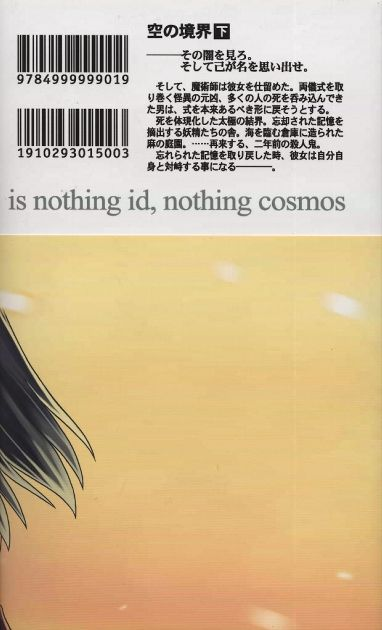
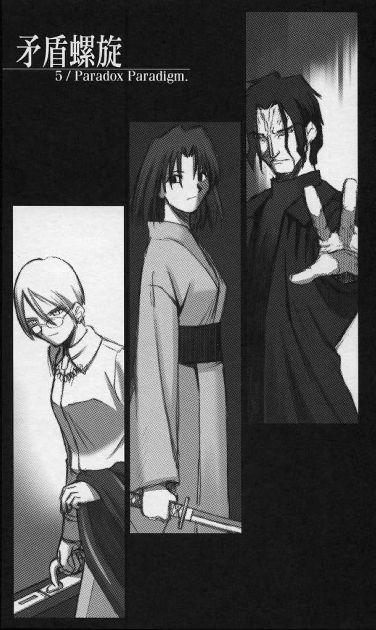
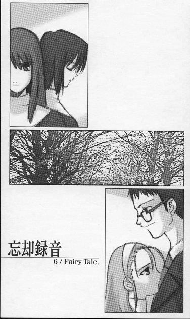
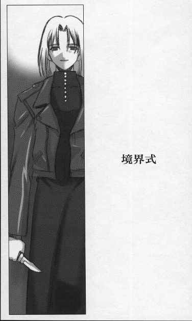
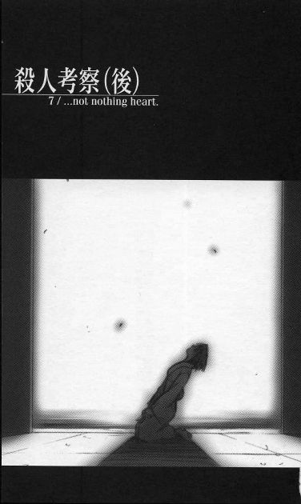

| [奈須きのこ] 空の境界(下) | |
| 奈須きのこ | |
| (2015) | |
|
空の境界（下） is nothing id, nothing cosmos
奈須きのこ
|

...is nothing id, nothing cosmos
Kinoko Nasu
1 / Thanatos. 2 / ...and nothing heart. 3 / ever cry, never life.
4 / garan-no-dou. 5 /Paradox Paradigm. 6 / Fairy Tale.
7 /...not nothing heart.
空の境界・下
目次
５／矛盾螺旋
Ennjou Tomoe
６／忘却録音
Kurogiri Satuki
境界式
７／殺人考察
Sirazumi Rio
空の境界

矛盾螺旋
５／ Paradox Paradigm.
／12
赤い陽射しが、螺旋の塔を照らしあげる。
日没を間近に控えたオレンジ色の世界の中、蒼崎橙子はマンションの敷地へと足を踏み入れた。
蜥蜴の皮を茶色に染め抜いたような革のロングコートは、細い彼女の体には似合わない。外套は、服ではなく鎧の趣さえ漂わせている。
彼女は一度だけマンションを見上げると、オレンジ色の鞄を片手に歩きだした。
緑の芝に覆われた庭をぬけて、マンションの内部へと入っていく。
ガラス張りのロビーは、やはり夕日の赤色に染まっていた。
床も、壁も、上の階へと続くエレベーターがある柱も、太陽の中にあるように赤い。
しばしの思案の末、彼女はくるりと行き先を変更した。
エレベーターではなく、そのままロビーを東へと歩いていく。......二つに分かたれたこのマンションは、東と西とに別々のロビーを設けていた。
彼女はそのうちの一つ、東棟の一階にあるロビーヘと向かう。
ロビーは、半円形の広い空間だった。二階を吹き抜けにして繋がっている大広間、といった所だろうか。すでに建物の中であるここでは、夕日のオレンジ色はない。ただ電灯の黄色い光だけが、大理石の床を照らしていた。
「驚いたな。性急なんだねえ、君は」
男性にしては高い声がロビーに響く。橙子は何も答えず、無言で視線をあげる。
緩やかな勾配を描いて二階に続く階段。その途中に、赤いコートを着た男が立っていた。
「だが、それは喜ばしい事でもある。ようこそ私のゲヘナに。歓迎するよ、最高位の人形遣い」
魔術師コルネリウス・アルバは楽しげに笑うと、芝居がかった仕草で大げさに一礼した。
◇
「地獄？」
「そうとも。ここはヒンノムの谷にあった火の祭壇の再現だ。人々を焼き、殺し、苦しめ負の想念を集める溶鉱炉さ。あいにくと神殿の主であるモロクは不在だがね、なかなかどうして立派なものだろう？これほどの異界なら外界の物質法則とは完全に切り離される。道を開く準備はとうに調っているんだ、アオザキ」
赤い魔術師は眼下の橙子を見つめながら得意げに語る。
陽気な青年とは裏腹に、彼女はあくまで感情を圧し殺して返答する。
「アグリッパの直系がユダヤかぶれとは皮肉な話だ。そんなんだから、おまえはここの本質に気がつかない。地獄？そんなものは地球上のそこかしこに今も存在している。人知をこえた殺戮を見たいのなら戦場へ行け。理不尽なまでの死途を見たいのなら飢餓の国に行けばいい。こんなモノは地獄でもなんでもない。ただの煉獄だよ、これは」
言って、彼女は鞄を床に置いた。
かこん、という乾いた音。
「小罪を犯した為に地獄にも天国にも行けずに永遠に苦しむ魂の在り処。それがここの正体だ。目的があって苦しませるのではない。苦しませる事だけが目的の閉じた輪なんだ。こんなものに、なんら魔術的な効果はない。───少なくとも、部外者であるおまえ自身にはな」
突き刺すような言葉に、赤い魔術師はぴくりと顔をひきつらせる。
彼女は階段に立つ青年ではなく、この建物を相手にするかのように目を細めた。
「太極図の具現はおまえの考えによるものではあるまい？いいから荒耶をだせ。おまえでは器量不足だし、この先の出来事で利になる事はないぞ。おまえの目的がなんであるかは知らないが、ここにはおまえが求めそうな解りやすい価値はない。先の忠告のお返しとして、それだけは言っておいてやる」
さて、とばかりに橙子は周囲に視線をくばる。こうして対峙しているはずの赤い魔術師には目もくれず、居もしない相手を捜しているのだ。
魔術師は、そんな彼女の姿を見つめ続ける。
今にも泣きそうな、殺意に満ちた瞳で。
「きみは、いつもそうだ」
呟きは、堪え切れずに漏れたものだった。
「そうだ。いつもそうだった。そうやって私を過小に評価する。ルーンだって私が先に専攻していたんだ。人形師としての名誉も私にだけあったんだ。だというのに、おまえのその態度に低能な連中は誑かされた。私を下だと扱うおまえの態度が、連中にそろって私が劣っているのだと認識させてしまった。考えれば判るだろうに！私はシュポンハイムの次期院長だぞ？魔道を学んだ年月は四十年を超える。その私がなんだって、二十かそこいらの小娘の下に位置付けられなくてはならんのだ......！」
呟きは、いつか激昂となってロビーに満たされていた。
今までの親しみに満ちた態度を捨てて呪詛を撒き散らす相手を、橙子は興味なさそうに眺める。
「学問に年齢は関係あるまい。若作りもいいがな、コルネリウス。おまえは外見ばかり気にしているから、中身が追いついてこないんだよ」
冷静な一言は、けれどこの上なく挑発的な侮辱だった。
齢五十歳を超える美貌の青年の顔が、憎悪に歪む。
「────まだ、私の目的を言っていなかったね」
つとめて冷静に、赤い魔術師は語尾を改める。
「私はね、アラヤの実験などどうでもいいんだ。実のところ根源の渦になど興味はない。あんな有るかどうかも判らない物を追い求めるなんて、ナンセンスさ。神の領域に触れたいのならグノーシスに走ればいいんだ。遡る必要などない」
一歩、彼は後ろに退いた。二階に登ろうとするように少しずつ上にあがっていく。
「きみにリョウギシキの事を知らせたのは私の独断だ。アラヤはリョウギシキを捕らえる為に命を落とした。同士討ちだったんだ、アレは。よって、この結界は私の物となった。だがね、私はヤツの実験の後を継ぐつもりなぞない。あたりまえだろう？私はね、アオザキ。おまえを殺せるというから、こんな僻地にまでやって来てやったのだ！」
喉を壊しかねない勢いで甲高い笑い声をあげて、魔術師は階段を駆け上がる。
魔術師が二階まで上がっていくのを、彼女はただ黙って見つめるしかなかった。
......一階のロビーには、すでに魔術師の悪意の具現ともいえるモノが満ち満ちていたからである。
その時、彼女は今までのどんなコトより侮蔑と憎悪を込めて言った。
「───スライムか、これは」
己の周囲に満ち溢れた異形のモノ達を、蒼崎橙子は簡潔に表現した。
しかし、ロビーの外壁から惨み出てきたそのモノ達は、そんな単純なものではない。クリーム色の粘液は壁からぼたぽたとこぼれだすと急速にカタチを成していく。
あるモノは人型に、あるモノは獣型に。
表面こそケロイド状に溶けだしてはいるものの、たえずカタチを作り直す彼らの外見は、この上なくリアルだった。例えるのなら、本物の人間や獣が永遠に腐敗していっているような、無様さと精巧さを兼ね備えたモノ達。
「これだけの場において、こんなモノしか具現化できないとはな。アルバ、魔術師から映画監督に転向するべきだ。おまえならクリーチャーを用意する予算が浮くぞ。安手のホラー専門になるだろうが、なに、おまえには院長などより向いている職業だ」
ロビーを埋め尽くすほどのモノ達に囲まれて、彼女はそんな事をぽやいた。
確かにこの状況はホラー映画じみている。違う事といえば、このモノ達には十字架も散弾銃も効かないという事ぐらいだろう。
そうして、自らの周囲一メートルほどの余地だけ残してスライム状のモノに囲まれてしまったというのに、彼女は眉ひとつ動かさずに胸ポケットに手をやった。
......ち、と舌をうつ。そういえば煙草は幹也に預けてしまったな、と橙子は少しだけ後悔した。これなら日本製の物でもいいから買っておけば良かった、と内心で毒突く。
彼女は、まさかこんなに詰まらない出し物になるなんて思ってもいなかったのだ。これでは煙草でも吸わなけれはやっていられない────。
「いや、監督もいけないか。演出が下手すぎる。この程度じゃあこの頃の客は喜んでくれない。仕方ないな、ひとつ手本を見せてやろうアルバ。怪奇を銘打つのなら、せめてこのぐらいのレベルは維持するべきだ」
かん、と彼女は足元の鞄に足の爪先を打ち付けた。
「────出ろ」
拒否を許さない、威厳に満ちた命令。
呼応して鞄が開く。ぱたん、とチューリップの花みたいに開いた鞄の中には、何もなかった。
同時に────ナニか黒い物が、蒼崎橙子という魔術師の周囲を回りだす。
黒い物は、体を持った台風だった。
橙子を台風の目にして、ぐるぐるぐるぐると高速で回りだす。
それは、気が狂ったような勢いだった。
数秒を待たずしてロビーには何もいなくなる。それこそロビーから溢れ出しそうだったモノ達は影も形もなく。あるのはただ、蒼崎橙子と閉じてしまった鞄。そして、彼女の前に座るネコだけだった。
「────な、」
その光景を、アルバは夢心地で眺めていた。
ネコは橙子より大きい。その体は真っ黒で、厚さというものがない。影で出来ている平面の黒いネコ。いや、ネコかさえも判別はつかない。ネコのようなシルエットで、頭の部分にエジプトの象形文字じみた目だけがついている。
「なんだ、ソレは───」
二階から、彼はそのネコを見下ろした。
ネコの絵のような目と視線が合う。と──ネコはにやりと、ロ元の部分だけを無くして笑いを表現した。
悪夢を見せられているのか、とアルバは息を呑む。
橙子は何も言わない。
どこかで、ジジジジジ、という音だけがしていた。
「話が違うぞ、おまえの使い魔は妹に敗れたというのは偽りか......！」
沈黙に耐えられなくなったのか、アルバは叫ぶ。
彼女はさあ、とだけ答えると黒いネコに視線を移した。
「───不味いモノを食わせたな。だが次は少しはマシだぞ。こんなエーテル塊ではなく本物のヒトの肉。霊的な蓄えも十分にある。私の学友だからといって遠慮する事はないんだ。日頃からちゃんと躾けているだろ？敵は食い殺すものだ、と」
とたん、黒いネコは走りだした。
大理石の床を滑るように横断し、階段へと走り行く。......といってもネコの足は動かない。座り込んだシルエットのまま、目だけを動かして赤いコートの人間へと疾走していく。
橙子のいた一階のロビーからアルバのいる二階の踊り場まで、おそらく十秒もかかるまい。
だが、それを許すほどアルバも常人ではなかった。
彼は、魔術師である。
「Go away the shadow.It is impossible to touch the thing which are not visible.Forget the darkness.It is impossible to see the thing which are not touched.
The question is prohibited.The answer is simple.I have the flame in the left hand.And I have everything in the right hand────────」
落ち着いた、しかし限界近くまでの速さでアルバは呪文を詠唱する。
───魔術にとって呪文とは、その個人による自己暗示に他ならない。
風を起こす魔術がある。これは一つの武器と同じく、初めから性能が決められた力だ。どのような魔術師が使用しても効力は変わらない。ただ、詠唱だけが異なる。
呪文の詠唱とは自己の体に刻み込んだ魔術を発現させる為のもので、その内容には魔術師の性質が濃く表れる。その魔術の発現に必要となる意味合いと定められたキーワードさえ含まれていれば、詠唱の細部は各魔術師の好みによるからだ。
大袈裟で芝居掛かり、自己に陶酔しやすい魔術師の詠唱は長い。だが長く意味付けをする分だけ、威力が増大するのも事実である。自己にかける暗示が強力であればあるほど、自己から引き出す能力もまた向上するのだから。
そういった意味で、アルバの詠唱は優れているといえた。大がかりな長さではなく、必要最低限の韻を踏み、また、自己の精神を高揚させる言葉を胎み、詠唱そのものの発音に二秒と時間を必要としない。
その事実に橙子はほう、と感心した。
アルバという青年は必要以上に長く、無駄の多い詠唱を好んでいたのだが、ここ数年で確かに成長している。
呪文詠唱の組み立てのカタチと速さ、そして物質界に働きかける回路の繋ぎ方が、驚くほど巧い。
彼の詠唱は、単純に物を破壊する魔術ならば間違いなく一流の業だった。
「I am the order. Therefore, you will be defeated securely───────！」
アルバの片腕が突き出される。
階段の一段目に黒いネコが到達した瞬間、かすかに大気が震動し───階段が燃え上がった。
地面から揺らめき立ち昇る蜃気楼のように、青い炎の海が階段を埋め尽くす。
わずか数秒だけ、炎は階段そのものから出現し、吹き抜けとなっている二階のフロアを貫通して天井へと消えていく。
まるで火山地帯の間歇泉だ。
ロビーの酸素をこの一瞬だけで奪い尽くした火の海は、黒いネコだけをこの世界から焼滅させた。それも当然。摂氏にして千を優に超える魔力の炎は、いかなる動物をもバターのように固体から気体へと変えてしまう。液体を経るプロセスなど、コンマの間さえなかっただろう。
だが、アルバは見た。
炎が燃え尽きた後、ひょっこりと姿を現した黒いネコの奇怪な姿を。
「───有り得ん」
碧眼が階段を凝視する。
黒いネコは薄くなってしまった自分の黒い体を残念そうに舐めると、赤い魔術師へ、ぎょろりと視線を移した。
黒い奇怪が疾走を再開する。
アルバにはネコの正体を看破する余裕さえなかった。
「Repeat......！」
切り裂くような鋭さで、アルバは呪文を繰り返した。
階段が燃え上がる。けれど、今度こそネコは止まらなかった。もうこの火には慣れたとでもいうのか、一直線に魔術師へと伸びていく。
「Repeat！」
炎の海が再度噴き上がり、消える。
ネコはすでに階段を昇りきろうとしていた。
「Repeat！」
四度目の炎も、無意味に終わった。
黒いネコは二階に到達すると、アルバヘと近寄って口を開けた。人間大ほどのネコの体が、その足元からばくんと開かれる。脳天を蝶番にして開く宝箱に似ている。
厚さのない、平面のはずのネコの中には、さきほど呑み込んだ異形のモノ達の残骸がドロのようにへばり付いている。
アルバはようやく得心した。これがネコに似たカタチをしただけの、口だけの生き物だったという事を。
「Repeat────！」
死を目前にした恐怖が最後の呪文を繰り返させる。
だがその前に、鮫の顎めいたネコの体が魔術師を挟み込む。赤いコートの上から丸呑みに咥えこまれ、アルバは意識を失った。
◇
「、王顕」
不意に、短い韻が流れた。
アルバの体に袈裟に食いついたネコが動きを止める。
事を傍観者のように眺めていた橙子さえ、その声に反応する。
アルバ達の背後に、男がいた。
たえず苦悩に満ちた厳しい面差しをした男は、黒い外套を着ていた。
男は初めからそこにいたように、現れた形跡というものがない。
黒い男はアルバを片手で掴むと、無造作にネコから引き剥がし床に転がす。ネコは男が連れ歩く三重の結界の一つに触れてしまって動けない。
男は眼下の女へ振り向く。それだけでロビーの空気は一変した。
空気が凍りつくとはこの事か。
先程までの大気の緩みが消えていく。本当の主を迎えて、このマンション自身が緊張しているかのように。
「───久しいな、蒼崎」
「ああ。お互い、会いたくはなかっただろうがね」
一階と二階───天と地とに分かれて、橙子は荒耶宗蓮という名の元凶と対峙した。
「アルバが出すぎた真似をしたようだな。本来はおまえに知られぬ内に事を済ます筈だったが、仕方あるまい。私一人では六十四人もの体を用意できなかった。この街におまえがいた事は偶然だが必然でもあるという事か」
「どちらが引き寄せられたのかは知らないが、そうだろうね。偶然というのは神秘の隠語だ。知りえない法則を隠す為に偶然性という言葉が駆り出される」
答えながら橙子は壁際へと後退した。
この相手はアルバとは格が違う。能力的には同格なのだろうが、この建物の中においては荒耶宗蓮は誰よりも優れている。壁を背後にして前方にのみ意識を集中させなくては、大きな隙を見せてしまうだろう。
「それで。このマンションは何の為の装置だ？まさか生きてはいるが死んでもいる、という不確定性を形にした箱というわけでもあるまい。一日で完結する世界を捏造して、死に至る瞬間の魂の炸裂を集める作業は効果的ではない、と何百年も前に結論が下されただろう。何百という死を集めても、おまえの目的は叶えられない」
「無論だ。だがおまえが知りえない真実もある。確かに、私は死の数ばかりを追っていた。何万という異なる人間の異なる死を経験すれば、その中に根源に通じる魂の拡散があると信じていた。だが、それでは大元には到達できない。それで辿り着けるのはその人間の『起源』だけだ。霊長という総体の起源には辿り着けない。
重要なのは死の量ではない。死の質だ。元を辿れば死に方の種類はより大きく区別される。私は死途を可能なまで大きく腑分けし、結果それが六十四種であると迫った。ここに集まった者達は一人一人がその種の死に方を背負った者。いうなれば世界の縮図だ。私は彼らの苦しみを体験し、彼らの苦しみを内包する。いずれ八卦より四象へと単純化させ、両儀へと至るために」
「ふん。そんなに一つである事がいいのか、荒耶。光と闇は敵対するべくして分かれたのではなく、それが最も多くの事柄を内包する属性故に分かたれた物だ。あらゆるモノは一つでは孤独なんだ。だから多くに分かれようとする。おまえはそれが許せないだけだろうに。様々な人間の死を調べ、その人生を丹念に研究して自己の物として蓄積する。私の死でさえ、おまえは蒼崎橙子という人間の誕生から死去までを知識として脳髄の隅に保管するのだろう。そうやって人問の価値を検分するのは勝手だがね。それを行なうのは耶摩の役割だ。人の身であるおまえでは、ただ死を吸い続ける地獄でしかありえない」
「───それでいい。地獄であろうと天上であろうと、底に近い事は変わるまい」
荒耶の言葉に迷いはない。
この世には自身しかない、と結論した強すぎる意志。
橙子は思う。
日常という螺旋を繰り返したこの建物には、人間が体験するあらゆる死の原型が渦巻いている。今まで荒耶宗蓮という肉体が行なっていた記録を、この建物は継承したのだ。ここは奴そのものであり、荒耶宗蓮という意識そのものである。......つまり、私はいま奴の体内にいるわけか。
呟いて、橙子はロビーに満ちた空気を観察する。張り詰めた空気は、荒耶の為の物ではない。むしろ奴に敵対する、この建物に殺された住人達の声にならぬ怨嗟だ。
彼女でさえ圧し潰されそうな怨念の量を、荒耶は一日、また一日と増やしていく。彼の言葉を借りるのなら量ではなく質を増しているのだろう。何百という死は、結局一種類の同じ死に方なのだから。
愛情死、即ち家族、恋人、母性、父性、育児。
憎悪死、即ち家族、恋人、友人、先輩、他人。
様々な理由による様々な死に方。
毎日繰り返され、より確かになっていく同じ結末。
───濃くなっていく、死。
この建物は呪文だ。奴が、荒耶宗蓮の意識を強固な物とするための祭壇。高度な魔術を行なう為には詠唱や自身の魔力だけでなく、生命の犠牲や土地自体の力をも行使しなくてはならない。
荒耶は現代に神殿を造り上げる事で、より高度な魔術を行なおうとしている。
いや、魔術ではない。これほどの異界をもちいる神秘はすでに魔術の領域ではないのだ。
これは、そう今の世界の常識では不可能な領域の神秘。
魔法と呼ばれる、人の手が触れられない禁断の力の行使に他ならない。
「───根源への道を開くのか。
だがどうやってだ。魔術的な結界を張らずに自分が魔術師ではないと証明したところで、霊長の意志は欺けない。近代的な技術による結界で誤魔化せるのは同じ魔術師だけだ。たしかにこの建物なら道は開く。太極図の具現だからな、間違いなく穴はできるだろう。だが、その穴から真っ先に出てくるのは霊長の守護者だ。我々は我々である以上、アレには絶対に太刀打ちできない」
「───抑止力は、すでに働いている。おまえがこの街に居た事。何の理由もなく何かに取り愚かれたような偶然をもって盗みを働いた男。過去一件もなかったこの一帯での通り魔殺人に襲われた女。これほどまでに私自身が動く事を抑えたというのに、抑止力は三度も働いている。
だがそこまでだ。私は、これ以上根源には近寄らない。数回に亙る失敗は無駄にはしない。抑止力に気付かれずに道を開こうとした事もあったが、アレの目は誤魔化せない。いつか抑止力そのものを倒す手段を調えて挑んだが、アレはそれ以上の力をもって現れる。
結論は一つだ。私には、才能がなかった」
初めて───感情らしき韻を含んだ声が流れた。
黒い男は眼下の魔術師を視界に収める。
「抑止力はこれほどまでに道への到達を阻む。それが人間が手にしてはならぬ力、無への回帰への因となる行為だからだ。人間という個体が完成してしまえば、生存の意味はなくなる。だというのに有象無象の人間達は、ただ生きていたいという願望の為に完成する事を無意識下で拒んでいる。すべての人間は、人間であると思考する時点で、獣以下の下衆である。完成する為に生存しているというのに、生存する為に完成を受け入れない。人間の始まりは、そも矛盾から始まっている。
では、ならば何故、根源に到達しえた者がいるのか。答えは単純だ。到達しうる方法があるのではない。単に到達しえる人間がいるだけなのだ。いかなる叡智を学ぼうと、所詮魔術は後から付属した後天的な物でしかない。才能とはそういう事だ。生まれついた時点で持っでいるか持っていないか。選ばれているかいないかの違いなのだ。生まれついた時からすでに根源と繋がっている人間。複雑化し、種類を増やし、根源である大元から離れすぎてしまった霊長だが、稀に根源から直接生まれついた者がある。「」に繋がったまま生まれ落ちた無色の魂。それこそが唯一大元へと辿り着ける存在だろう。ならばそれを探しだすのみ。それを見付けだすのに、私は十年の歳月を要したぞ」
「そうか。それで両儀式を破壊しようという結論に達したわけだ」
彼女は両目を細める。
両儀式。両儀家は汎用性を極めた人間を作り出す為、器としての肉体はカラの者を産み出そうと年月を重ねてきた一族だった。カラという事は「」という事だ。彼らは自分達がどれほど危険な事をしているかも気付かず、式という「」に通じる肉体を生み出してしまった。
「それで巫条霧絵と浅上藤乃を使ったのか。
おまえが直接動いては抑止力に気付かれる。あくまで間接的に、おまえの存在を匂わせないように式を破壊しなくてはならなかった。そうだろう？式とは正反対のコンセプトを持つ殺人者をぶつける事で、式本人に自分の本質を気付かせた。物事を諭すには教えるより体験させたほうが早いものな。
それで。おまえは何を望んだ、アラヤ。式と織が食い合ってカラになる事か。それとも両儀式に出会いたかっただけなのか」
「───二年前は〝両儀式〟を現す為だった。だが今は違う。結論は出たといっただろう。式にあの肉体は不要だ。根源に通じる体は、私が貰い受ける」
堂々とした発言に、橙子はへ、と口を開けた。一瞬にして荒耶の言っている事を理解したが故に、彼女の意識は真っ白になったのだ。
「まさかおまえ、自分の脳髄を式の体に移すつもりじゃあるまいな......!?」
信じられない、という橙子の口振りに荒耶は答えない。語るまでもない、という眼差しに、橙子はなんて悪趣味なヤツだ、と呟いた。
「だがまあ、おまえがその体のままだという事は式は無事という事だな。念の為に訊いておくが、式を返す意思はある？」
「欲しければ好きにしろ」
「はん。戦うしかないってワケか。ったく、私はもともと戦闘要員ではないんだがね。あんなものと関わったばかりにいい迷惑だ」
「私も念の為に訊いておこう。蒼崎。協力する意思はあるか」
敵対の視線、必死させるという意志が変わらないままで荒耶宗蓮はそう問うた。
橙子は答える。
斜にかまえた琥珀色の瞳だけで、断じて否、と。
「......そうか。残念だ。私は、おまえを正しく評価していた。共に根源に至ろうと競い合った事もある。有り体にいえば、好ましくも思っていた」
かつん、と足音を立てて荒耶は前に進む。
一階に続く階段に近寄るように。
「あの学院で、おまえだけは群体ではなかった。私は魂の原型を。おまえは肉体の原型を目指した。私は、先に到達するのはおまえだと確信していた。
だが────おまえは諦めた。なぜだ。今のおまえは、自身が魔術師だという事さえも捨てている。
何の為に学び、何の為に力をつけた。
何を救う為に、何を成しえる為の遍歴だ」
黒い魔術師が吼える。
静かに、普段となんら変わりのない口調で、双眸だけが憤怒に燃えている。
それを受けとめて、橙子は答えた。
「別にたいした理由じゃないさ。理を重ねれば重ねるほど逆説を生み出す事に疲れただけだ。私達は学べば学ぶほど遠ざかっていく。根源の渦とて同じだ。無知という素でなければ近付けないのに、無知のままでは認識できないが故に意味がない。──おまえと同じだよ。私は認め、おまえは認めなかった。ただそれだけの、けれど決定的な違いなんだ」
哀しい韻を含んだ告白を、荒耶は眉一つ動かさずに受けとめた。
両者の視線が衝突する。
橙子は荒耶に言う。魔術師の本性、賢くなればなるほど愚かになっていく背理を。
荒耶は橙子に言う。魔術師の本質、学べばまなぶほど高みに達していく道理を。
「おまえは、堕落した」
短く、あらゆる感情を込めて、彼は告げた。
「ならば何を目指す。何の為に其処に在る」
「......そうだな。私がここにいる理由は、実はあまりないんだ。式の事もあまり関心はない。アレの体はブラックボックスだらけで似た者さえ作れないから」
そう、彼女に明確な理由はない。
もしかすると彼女本人も、気付かないうちに抑止力なんていう得体の知れない物に後押しされているのかもしれない。
ただ、だとしてもかまわない。彼女は、今の蒼崎橙子という生活を受け入れていた。その環境が幾つもの奇跡と偶然によって積み重ねられた、二度とは構成されないものだと知っていた。たとえこの矛盾したマンションのように初めから繰り返しても、今と寸分変わらない生活には成り得まい。
だから────守れるのならは、守ろうと思っただけの話なのだ。
「......ほんと。なんて堕落だ。私は段々と弱くなっていく。
荒耶。私の理想の超越者というのはね、仙人なんだ。卓越した力と知識を持ちながら何もせず、ただ山奥に佇むのみ。その在り方に、私はずっと憧れていた。けれど振り返ってみたらもう戻れなかった。中に物が詰まりすぎた私は、そこに到達できる日がこない。ずっと、そうだと思っていた。
なあ荒耶。魔術師は生き急ぐ。なんの為だろう。自分一人の為ならば外界とは関わるまい。なのになぜ外界と関わる。なぜ外界に頼る。その力で何を成すというのか。アルス・マグナによって何かを救済しようというのか。それならば魔術師になどならず王になればいいんだ。
おまえは人々を生き汚いと言うが、おまえ本人はそうやって生きる事ができまい。醜いと、無価値だと知りつつもそれを容認して生きていく事さえできない。自身が特別であろうとし、自身だけがこの老いていく世界を救うのだという誇りを持たなければとても存在していられない。ああ、私だってそうだったさ。だがそんな事に意味はないんだ。
───認めろ荒耶。私達は誰よりも弱いから、魔術師なんていう超越者である事を選んだんだ」
魔術師は答えない。
彼は一歩、また一歩と階段へと近寄っていく。
「......根源への道はすでに手に入れた。あと数歩で私の望みが叶う。邪魔をする者、これすべてを抑止力とみなす。蒼崎。おまえも、所詮は人間であったという事だ」
ロビーの空気が張り詰めていく。
空間が凝固し、そのまま魔術師の殺意によって歪んでしまうのではないか、と危倶するほどの圧迫感。
その中で、彼女はかつての同胞を遠く眺めた。
長く別れていた数年を埋める為の、長い問答はここまでだ。
最後に───彼女は、蒼崎橙子という魔術師として荒耶宗蓮に問いただす。
「アラヤ、何を求める」
「真の叡智を」
「アラヤ、何処に求める」
「ただ、己が内にのみ」
迷う事なく男は答える。
足音は、階段の入り口で止まった。
互いの存在をこの世界から排除する為、両者は行動を開始した。
◇
黒いコートの下から、荒耶の片腕が上げられた。
ゆるり、と左腕を肩と水平になるまで持ち上げる。その掌は力なく広げられており、遠くの誰かを呼び止めるような、そんな仕草に似ていた。
彼は片腕を上げて相手と対峙する。
これが、荒耶宗蓮という魔術師の戦いの姿勢であった。
対して、蒼崎橙子はそんな黒い魔術師の姿を見上げるだけだ。足元に鞄を置いたまま、注意深く敵の行動を眺めている。彼女の使い魔である黒いネコは、今は荒耶の背後で動きを封じられ固まっていた。
橙子は、荒耶が自らを中心にして三重の結界を張っている事をすでに看破していた。
不倶、金剛、蛇蝎、 、戴天、頂経、王顕
地面と空間、平面と立体に張り巡らされた魔術師の蜘蛛の糸。生物であるのなら、あの円を象る線に触れた瞬間に動力を止められてしまう。
......普通、結界というものは動かない物を守る、動く事のない境界だ。それを自分を中心にして連れて歩く、なんて怪物じみた事を敵は行なっている。見えているのに気配さえ感じないのはその為だ。こと接近戦においてならば、荒耶宗蓮は無敵といえる。
だが、逆に言えば荒耶にはそれしかない。
もともと橙子と荒耶は、アルバのように物質界に働きかけて破壊を行なう魔術を修得していない。
橙子が修得しているルーンの魔術にも、攻撃手段は確かにある。ルーンとは力ある刻印を対象に刻む事により、刻んだ文字の意味を現実にする魔術だ。火の意味をもつソウェルを荒耶の体に直接書き込めば、荒耶の体は燃え上がるだろう。
......泣き所は文字を直接書き込まなければならない点で、遠くから文字を重ねるなんて行為は魔術師相手には通用しない。間接的な魔力の働きは、直接的な魔力を体に張り巡らせている魔術師には弾かれてしまうのだ。
学院時代から、両者はこと攻撃魔術に関しては興味がなかった。橙子は人形作りに、荒耶は死の蒐集にしか関心がなかった故である。
ゆえに、荒耶が橙子を消去する方法は近寄ってからの格闘戦になる。荒耶は動乱の時代を生き抜いてきた男だ。体を武器にして戦う事では、今の時代のどんな人間も敵わないだろう。
それを知っていても、橙子は彼がやって来るのを待った。
待つしかなかった。
階段を下り、一階のロビーに荒耶が足を踏み入れた時に仕掛けようと狙っている。
なのに。黒い魔術師は階段の前で立ち止まったまま、前に突き出した腕を微かに動かした。
「───粛」短い、咳き。
魔術師は開いていた掌をぐっと握る。
それは、何かを握り潰すような動作だった。
同時に橙子の体ががくんと震動する。
あらゆる魔術系統の回路を遮断する彼女のコートが、ズタズタに破れて床に落ちた。
攻撃があったのだ。
目に見えぬ衝撃。
全ての方向から全身を等しく打ちのめされて、彼女は床に膝をつく。
今の衝撃が何であったか、橙子は一瞬にして悟った。
......荒耶は、橙子が立っていた空間をそのまま握り潰したのだ。例えるのなら、全身をプレスされたのに等しい。
橙子は信じがたい思いで舌を巻く。あんな僅かな仕草だけで空間に働きかける魔術を、彼女は知らない。
〝......やられた。くそ、何本いった────？〟
口内にしたたる血を飲み込みながら、橙子は自分の肉体の損傷を確認する。肉体を鍛えていない橙子には、式のように自分の骨が何本折れたかを知る術はない。ただ理解できるのは、今のはコートがあったから助かったという事だけだ。
もう一度やられれば、間違いなく潰される。
「────行け！」
ならば、彼女とて容赦はしない。
唐突に────動きを止められていた黒いネコが動きだす。
今までの金縛りは芝居だった。ネコは安心して背中を見せている荒耶へと襲いかかる。
「なに」
かすかな驚きを漏らして、荒耶は咄嵯に振り返った。
間髪入れず──突き出した掌を広げ、もう一度強く握り潰す。
オン、という震動。
橙子は見た。荒耶の目前の空間そのものが、自ら内へ内へと圧壊していく様を。
黒いネコは圧縮される前に上方へと跳ねていた。
重力が逆さまに働いたように、天井に足から着地して魔術師を睨む。
「そこまでだ」
黒いコートの下に隠れたもう一本の腕が、掌を強く握る。
黒いネコは、天井ごと握り潰された。
ばこり、と天井の一角が外側へと窪み、黒いネコは圧し潰されて目に見えないまでに圧縮され、消失した。
「手駒は消えた。魔術師とは本人が強者である必要はなく、その業で最強のモノを作れば良い......学院時代のおまえの言葉だ。──いかにも。人形師は、人形が敗れた時点で敗北である」
再び橙子へと振り返り、掌を広げて荒耶は語る。
彼女はそれを不愉快そうに受けとめた。
「ああ、その持論はまだ曲げていない。しかし大したものだ。忘れていたよ、ここはおまえの体内だっけね。それなら空間を潰すのも思いのままだ。私はすでに一つの巨大な魔術の中に飛び込んでいたというわけか。......ふん、それだけの用意があって、なぜ式に殺される寸前まで追い詰められたんだ、おまえ？」
「───生け捕りというものは難儀だ。下手に本気をだせば潰してしまうからな。だが今回は違う。殺すべき相手には、全力をもって相手をしよう」
「それほど式の体が欲しかったのか。おまえにとって式は唯一の道だものな。死なないように殺すのはさぞかし骨が折れただろう。それがアダにならなければいいがね」
倒れかけた姿勢を戻すと、彼女はゆっくりと壁に背を預けた。
「───アルバには言ったんだが。おまえもホラーというものが解っていない。人を恐怖させる物の条件は三つ必要だって知っているか？
一つ、怪物は言葉を喋ってはならない。
二つ、怪物は正体不明でなければいけない。
三つ───怪物は、不死身でなければ意味がない」
「────！」
荒耶が振り返る。
潰したはずの天井には、黒いネコが何事もなかったように存在していた。
「───粛！」
彼は天井に向けて掌を強く握る。
空間がべこり、と圧縮される。
その歪みに揺れながら黒いネコは魔術師めがけて飛び降り、ばくん、と体を開けた。避ける間もなく黒い魔術師は一呑みにされる。
「が───」断末魔らしき鈍い声を、彼は吐き出す。
ぞぶり、という鈍い音。
式の時とは違う。魔術師は反撃の間もなく、肉体の大部分を失った。
ごろん、と顔と肩の部分だけが残された魔術師が地面に落ちる。死してなお苦悩に満ちた貌で、人間だった肉片が階段を転がり落ちる。
その有様を冷静に観察してから、橙子は短く呟いた。
「仕留めるのなら一撃で息の根を断つ。騙し討ちとはこうやるんだよ、荒耶」
さて、と壁から離れて橙子は歩きだす。
───ずん。
音。鈍い音がしたな、と彼女は他人事のように思った。
口から血がこぼれる。臓腑から追い出され、逃げ場を失った血が堪えきれずに吐き出される。
霞んでいく視界をわずかに下げると、腕が見えた。
誰かの腕が、自分の胸から突き出ている。
奇怪なオブジェだ、と蒼崎橙子は思った。自分の胸から男の太い腕が伸びている。腕は、まるまるとした心臓を握っていた。きっと、それは自分の心臓だ。
結論は、すぐに出た。
自分は背後に現れた敵に体を貫かれ、じき死のうとしているのだ─────。
「仕留めるのなら一撃か。なるほど、良い教訓になった」
背後から声がする。
憂いも嘆きも憎しみも混淆した重い声。
紛れもなく、荒耶宗蓮という魔術師のもの。
「あれは────人形か」
血を吐き出しながら橙子は言う。彼女の背後に突如現れた魔術師は無論、と答えた。
「人形作りではおまえにはおよばないがな、私にも先達の業がある。人型作りを行なった妖僧の名、知らぬ訳でもあるまい」
橙子の体を貫き、取り出した心臓を見つめながら魔術師は続ける。
「───そして、おまえは本物だ。この心臓の猛りに間違いはない。美しい、見事な形だ。潰すのは惜しいが、仕方あるまい」
ぢゃぶ、と水のつまったビニール袋を地面に叩きつけるような無惨さで、荒耶は彼女の心臓を握り潰した。
「おまえの使い魔のカラクリも読めた。魔物は鞄から出てきたのではない。アレは、鞄が映し出していた映像だな？」
じろり、と荒耶に睨まれて、床に置かれていた鞄が砕け散る。
砕けた鞄の中にはレンズとフィルムを備えた機械があった。それはジジジジ、と音をたて、今も回っている一つの映写機だった。
「影絵の魔物か。なるほど、これならばあらゆる攻撃を無効化しよう。大気に映し出したエーテル体が潰されても、本体である幻灯機械が作動しているかぎり何度でも蘇る。......ますます惜しい。これほどの才気を、私は摘み取らねばならないとは」
荒耶の呟きに橙子は答えない。
ただ消えていく前に、自己の問いだけを紡ぎだした。
「......アラヤ。以前した質問をしよう。おまえは魔術師として、何を望むんだ......？」
「───私は何も望まない」
過去に交わしたものと同じ質問、同じ回答。
それに橙子はくく、と笑った。血の跡を引く唇が、壮絶なまでに美しい。
何も、望まない。過去、その質問をしたのは橙子ではなかった。彼女達の師が、弟子達を集めて問うたのだ。
集まった弟子達はそれぞれの魔術理論の完成とその栄光を誇らしげに語った。けれど荒耶だけはこう返答をしたのだ。〝私は、何も望みません〟、と。集まった弟子達は彼を無欲な男だと笑いあったが、彼女は笑う事などできなかった。
......その時、橙子が感じた感情は畏れだ。
この魔術師は望みが無い、と答えたのではない。
何も望まない事。この世に一切の、自己の存在すら望んでいない事。完壁な死の世界を、荒耶宗蓮は望んでいる。
だからこそ、彼の望みは何も望まない事なのだ。
そこまでに人間を嫌悪し、自己の殻を作り上げた男。無欲といえば無欲だろう。この男は、些細な幸福さえ必要ないと言い捨てて、人間という矛盾を憎んでいる。
「アラヤ。......最後に、呪いを残してやる」
「聞こう。急げ、あと数秒も保たん」
自分で殺しておいてそれもないものだ、と橙子は毒突く。ともあれ、ここは彼の言うとおりだ。
彼女の体は、もう唇しか満足に動かなかった。
「............アカシックレコードに触れようとする事で抑止力が動きだす。おまえのように人間を憎む者が全能となれば、世界の終焉が起きる確率が高まるからだ。この抑止力というものには二種類ある。
一つは霊長である人間が、自分達の世を存続させたいという無意識の集合体。
そしてもう一つは、この世界そのものの本能だ。
......この両者は目的が同じだが、その性質は微妙に異なる。世界そのものの本能がアカシックレコードに触れる者を律するのは、たんに今の地球を支配しているのが人間だからにすぎない。人間の文明社会が崩壊するという事は、この天体の死に直結する可能性があるからだろう。故に世界の意志が作り出した救世主は、英雄と並んで人間の世の崩壊を防ぐんだ」
「───それが？」
すでに解りきった事を語る橙子に、荒耶は眉をひそめる。
彼女はひゅーひゅーと息を吐き出しながら、けれどはっきりとした口調で続けた。
「つまりさ、星そのものを生命体と見たガイア論的な抑止力と、我々人間が抱く抑止力は別物だという事だ。......そこでだアラヤ。おまえが生涯の敵として憎んできたのは、いったいどっちなんだろうね」
───ふむ、と魔術師はわずかに思案した。
言われてみれば、確かにそういう見方もある。
荒耶は今まで気が付きもしなかった事柄を考える。......そう。長く、長すぎるほど神秘を学んできた彼が、考えようともしなかったその事柄。
ガイア論的な抑止力。人間の世を存続させようとするコレは、けれど世界が無事ならば人間などどうなってもよい、という結論を持つ。
反して、人間全体が生み出す抑止力は星さえも食い潰して人間の世を存続させようとする。
......答えは、明らかに後者だった。
「語るまでもない。私が幾度となく争ってきた想念、荒耶が敵とみなすモノとは、救いきれぬ人間の性である」
「そちらは地球上すべての人間の意識だぞ。おまえは、たった一人で六十億に近い人の意志に勝てるというのか」
「───勝とう」
ためらいもなく、誇張もなく、魔術師は即答した。
様々な人間達の死を集めてきた生きた地獄。どんなに無価値な死に方をしても、その人間の歴史との先にあったハズの未来を構想し、我が物として生きてきた魔術師。
橙子は思う。
それは全人類を敵に回しても勝つ、という鋼のように鍛えられた極限の自我だ。
それを荒耶宗蓮は持っている。本当にそうであるかは問題ではない。そうであると断言するその意志が真実なのだ。この問い掛けをした時、荒耶宗蓮は明確に六十億もの人間の尊厳と一つ一つ戦う場面を想定したに違いない。
その、極限まで真実に近い仮想をもって、それがいかに苦しいものかを知ってなお、勝とうと荒耶は断言する。
この意志の強さこそが、この魔術師の強さだった。
だが────そこに、最大の落とし穴がある。
彼ほどの魔術師なら真っ先に気づかねばならないその事柄を、ついぞ教えられなかった最大の矛盾と抑止が。
「......哀れだな、アラヤ」
「なに──？」
荒耶は声をかけたが、彼女はすでに生命活動を停止していた。蒼崎橙子の肉体はすでに人として機能しない。
残された死滅は脳髄のみ。血液の通らなくなった脳は、幾ばくかを待たずして破損する。彼女が蓄えてきた知識も技術も、全て失われてしまう。
黒い魔術師は橙子の体から自らの腕を引き抜くと、そのまま彼女の頭に掌を置いた。顔を鷲掴みにして、ばきり、と首の骨を折る。
その後、ずるずると首を体から引き抜くと、首なしとなった体を床に打ち棄てた。
かつての同胞の生首を片手に持ち、魔術師は踵を返す。
やってきた場所───橙子の背後にあった、マンションの壁。橙子が勝利を確信して離れたその壁こそ、荒耶宗蓮が現れた場所である。
橙子は自ら口にしていながら、その意味を最後まで理解していなかったのだ。
このマンションは荒耶宗蓮そのものである。壁も床も、建物としての常識など荒耶本人には通用しない。
マンション内のいかなる場所にも存在でき、いかなる空間をも手に取れる。ここは荒耶宗蓮という異界なのだ。彼はこの敷地の中でなら、どこへでも瞬時にして移動する事ができる。
本体である黒い魔術師は、水に沈むかの如く、マンションの壁の中へと消えていった。
（14／）
...
思い出すものは、ただ、一面の焼け野原だけだ。
歩けど歩けど続く亡骸。
川べりに敷き詰められた砂利は石ではなく骨の欠片。風が運ぶ死臭は三千世界を満たそうと尽きる事がない。
争いの時代だった。
まだ兵器と呼べるほどの道具がない時代、手と手で互いを殺しあう、明日のない今日を生きるものども。
何処へ行こうと争いは在り、人々の死体は例外なく無惨に打ち棄てられていた。
弱い村の者達が、強い群れの人問に虐殺されるのは常だ。
誰が、誰を殺したかが問題なのではない。そも戦場に善悪はない。あるのは何人が死に、何人が救えなかったかのみだ。
争いが起こると聞けば、その地に赴いた。
反乱が起こると聞けば、その村へと足を運んだ。
間に合った事もあり、間に合わなかった事もある。
だが、どちらにせよ結果は同じだ。用意された結末は死者の山でしかない。
人間は、どうしようもなく死ぬモノだ。
怨嗟の声をあげて死んでいく男もいた。
我が子の明日だけを祈って泣きながら死ぬ女もいた。
ひもじいと笑いながら息絶えた子供もいた。
死は理不尽に襲いかかる。
積み重ねた善行も過ごしてきた人生も、その前には何の意味も持ち得ない。
ただどうしようもなく、逆らうだけ逆らって無様に死ぬだけが人間の生。
それでも彼らを救おうと全国を行脚した。
見たモノは果てのない焼け野原だけだった。
彼らは救えない。人間は救われない。宗教では、人の救済はありえない。
なぜなら。
人は救うものではなく、終わらせるものなのだから。
絶望を絶望で覆い、昨日の嘆きはさらに濃い今日の嘆きで薄れていく。繰り返される圧倒的な死の数に、私は、自らの矮小さを悟った。
───人問には、誰も救えない。
救えぬのならせめて、その死を明確に記録しよう。おまえの今までの人生と、その後に待っていたであろう人生を留めてやろう。
その苦しみを、私が生かし続けてやろう。
命の証とはいかに歓んだかではない。
命の意味とは、いかに苦しんだかなのだから。
───死の蒐集が、始まった。
...
蒸気の音と、水の泡立つ音の中で彼は目覚めた。
明かりのない闇の中、マンションの住人達に囲まれて荒耶宗蓮は静かに立ち上がる。
少し、夢を見ていたようだ。
「この私が夢とはな。誰彼の未練を見る事はあったが、自らの未練を目の当たりにしたのは初めてだ」
一人、魔術師は語りだす。
いや、彼は一人ではなかった。その傍らには鳥籠大のガラスの容器がある。大きなガラスの入れ物の中には液体と......人間の首が入っていた。
頭だけとなったソレは、眠るように瞼を閉じてふわふわと浮いていた。
言うまでもなく、蒼崎橙子の首である。
しゅごー、という蒸気の音。
部屋の中心に置かれた鉄板だけが明るい。真っ赤に焼かれた鉄の板の明かりだけが、この魔術師の研究室を照らしあげる。
魔術師は、ただ時を待っていた。
両儀式と蒼崎橙子。両名によって、今まで使用していた肉体は完全に破壊された。
今、こうして存在している肉体は予備として用意したものにすぎない。馴染むまでには時間がかかる。どの道すぐに両儀式の肉体に移るといえど、その為にうまく動かない体で事をし損じては取り返しがつかぬ。
荒耶はただ待つのみだ。もはや、彼を脅かすものは何処にも存在しない。
「アラヤ！」
唐突に、もう一人の魔術師がやってきた。
赤いコートの魔術師は納得いかない、とばかりに荒耶へと詰め寄ってきた。
「何をのんびりしているんだ。やる事はまだ残っているぞ、早急に手を打たなくてはいけないだろう！」
「......事は済んだ。蒼崎の工房に手出しは不要だ。臙条巴も同じである。アレは放っておいても何もできん。それは何よりおまえが承知している筈だ」
「たしかに、そろそろ限界だろうがね。......よろしい、外の事は問題にはならないと認めよう。だがリョウギシキはどうする。アレは今意識を失っているだけだろう？目を覚ませばここから逃げ出そうとするのは自明の理だ。私はこれ以上余分な手間ヒマはかけたくないのだ。逃げ出そうとする小娘を止めるのも、ましてや始終監視するなんてコトも考えたくはない」
「そちらの杞憂もいらぬ。アレはマンションの一室に幽閉したのではない。空間と空間を繋げた無限の中に放りこんだのだ。この歪んだ異界を作り上げた第一の目的は、閉じられた輪を生み出すコト。いかなる手段、いかなる衝撃をもってしても無限の闇からは抜け出せない。いずれ両儀式が目覚めたとしても、アレにはどうする事もできぬ。監視などは不要だ。そも、あの傷では起き上がる事さえ困難だろう。目覚めたとしても体は満足に動くまい」
変わらぬ苦悩の表情のまま語る荒耶に、赤い魔術師は不満げに口を閉ざした。
「......まあいいさ。もとよりリョウギシキに興味はない。私がおまえの誘いにのってやったのは、別の目的だ」
言って、赤い魔術師はちらりと視線を移した。テーブルに置かれた、橙子の首が入ったガラス壜へ。
「約束が違うぞ、アラヤ。君は言ったはずだ。アオザキを殺させてやる、と。あれは嘘か？」
「機会は譲った。だがおまえは失敗した。私が蒼崎を仕留めたのは詮方なき事だ」
「仕留めた？ 笑わせるな。そいつはまだ生きている。君ともあろう者が相手を生かしておくなんて、ずいぶんと甘くなったものじゃないか、ええ？」
赤い魔術師の追及に、ふむ、と荒耶は思案した。
たしかに、今の蒼崎橙子は完全には死んでいない。脳の機能は生きている。ただ喋れず、思考できないだけという状況だ。それを生きていると見倣すのならば、確かに生きているのだろう。
「ツメをあやまるなよ、アラヤ。アオザキは傷んだ赤色とまで言われた雌狐だ。首だけになっていようが隙あらば反撃してくる。確実に殺しておくべきだ」
「──たわけ。口にしてはならない事を口にしたな、コルネリウス」
「なに？」
赤い魔術師は言い淀む。それを無視して、荒耶はガラス壜に手を伸ばした。
「持っていけ。確かにこれはおまえのモノだ。どう扱おうが私に文句はない」
荒耶はすんなりと橙子の首を赤い魔術師に譲った。
鳥籠大の壜を両手で持ち、赤い魔術師は戸惑ったかと思うと───にやり、と不気味な笑みをもらす。
「たしかに受け取った。これはもう私のモノだ。どう扱ってもかまわないのだな、アラヤ？」
「好きにしろ。どの道おまえの運命は決まっている」
静かに、けれど重く語る荒耶の声も赤い魔術師には届かない。
彼は愉しげに笑いをかみ殺すと、満足そうな足取りでこの部屋から立ち去っていった。
／13
(矛盾螺旋、６)
がちり、がちり、がちん、がちん。
......頭痛が激しくなる。体じゅうの痛みも増してきていて、そこかしこにボルトでも打ち付けられているみたいだった。
俺は痛みに耐えて、膝を抱えて丸まっていた。
歯がかちかちと震えて、意識がはっきりとしてくれない。ちくしょう、という単語を一人で繰り返しながら、意味もなく壁を睨んで存在している。
───あれから、どのくらいの時間が流れたのだろう。
両儀が荒耶にやられてから、俺は何もできずに立ち尽くしていた。荒耶は立ったまま死んでいた。当たり前だ。胸と首にナイフを刺され、首のナイフは根元まで刺さっているのだ。生きているほうがおかしい。
だが、荒耶は生き返ろうとしていた。首に刺さったナイフが少しずつ外側へと動いていく。筋肉が押し戻しているのだと分かるまで、俺はそれをぼんやりと眺めていた。ナイフはからん、と音をたてて床に落ちた。止まっていた荒耶の呼吸が再開する。
俺は───その、落ちたナイフの音でようやくモノを考えられるようになった。這いつくばったまま落ちたナイフに駆け寄ると、それを両手でしっかりと握る。見上げると、蘇ったばかりの荒耶の目が、俺を睨んでいた。
たぶん、俺は悲鳴をあげたと思う。荒耶は、とんでもなく恐かった。両儀の仇だというのに刃向かおうなんて思えもせず、俺はただ夢中で逃げ出した。
逃げられるとは思わなかったのに、とにかく逃げる事しかできなかった。
走って、走って、息が止まるぐらい走って、俺はマンションから逃げ出した。そのまま乗ってきたバイクにまたがって、とにかくあの塔から離れようとした。
......そうして、気が付けばこんな所で震えている。
おそらく、もう主人の帰ってくる事のない両儀のアパート。殺風景なこの部屋で、俺はまた膝を抱えているだけというわけだ。
「......ちくしょう」
もう何千回めの言葉が漏れる。
そんな事しか、できない。
俺は、最低だ。
両儀をおいて逃げ出してきた。目の前で両親の死体を見たっていうのに、罪の意識もない。自分が殺される悪夢を現実として見てきたっていうのに、何の感慨も浮かばない。
少なくとも───アレが何なのかぐらいは整理できるはずなのに、頭がうまく動いてくれない。
「......ちくしょう」
震えが止まらず、まだそんな事を言ってやがる。
大笑いだ。
俺は、今までなんだって一人でやってきたっていうのに。
今、一人じゃ何もできない。
両儀を助ける事も、できない。
「......ちく、しょう............！」
叫んでも頭は壊れたままだった。
両儀を助けるという事は、あの男と争うという事だ。俺は荒耶の姿を思い出すだけで全身が震えてしまって、とても両儀を助けられる状況じゃない。
がちり、がちり。
......時計の歯車が回るような、奇音。
左腕の肘が傷む。逃げる時に打ちつけたのだろう、骨がひび割れているように痛みが響く。
俺は、心身ともに限界だった。
頭痛も止まらず、関節の痛みも消えない。
息をする事さえうまくできなくて、苦しかった。
「........................」
泣いた。泣いていた。膝を抱えたまま、悔しくて泣いていた。自分が一人で、可哀相で、痛くて、泣いていた。
こうして一人、泣く事しかできない自分がニセモノだと思い知った。やっぱり俺は、ほかの連中と同じようにだらだらと生きるだけの偽物だ。両儀のように本物になりたかったけれど、持って生まれた属性は誤魔化せない。
本物......？
ああ、それでも一度、そういうつもりになれた時があった。
あれは───そう、つい最近だ。
俺は膝を抱えるのを止めて、ベッドの上へ視線を投げた。
そこにいつも眠っていた両儀はいない。ただ、一本の日本刀だけが投げ出されている。
......人殺しだと告げた俺を信じた女。
......人殺しである俺と当たり前のように接した女。
......俺を、助けてくれた女。
......俺が初めて、一緒にいたいと思った相手。
───どうして忘れていたんだろう。
その気持ちは、偽りじゃない。俺は本気で───あいつを守ってやりたいと思ったんだ。
「────俺は、何を」
守ろうと、守りたいと、思っていたん、だっけ。
「────────」
よくわからない。けれど一度だって俺は──自分の命が一番大切だなんて思わなかった。
何か別のコト、何か別の大切なコトがあって、何かに助けてほしくて、あの日、自分の家を抜け出したのだ。
「───くそ、なんて、女々しい」
〝オレの為に死ねる？〟
そう問いかける両儀に、俺は答えたじゃないか。
何を怖れるものがあるっていうんだ。
やるべき事は決まっていたんだ。だから、誰から見ても格好悪いぐらいのやせ我慢でも、俺は立ち上がらないといけない。
「......そうだったな。ああ、いいぜ両儀。臙条巴は、おまえの為に死んでやる」
呟いて、俺は両儀の残したナイフを強く握り締めた。
その時、部屋の呼び鈴が鳴り響いた。
ぴんぽーん、という明るい音に、俺はバッと身構える。
荒耶が追ってきたのか、それともただの来客か。
両儀の家だから来客ではあるまい。なら相手は荒耶達に違いない。俺は居留守を決め込む事にしたが、すぐに気を変えた。
......こっちは覚悟が決まったんだ。ドアを開けた瞬問に襲いかかって、両儀の居場所を吐かせてやる。
俺はナイフを持ったまま玄関まで行くと、今開けます、なんて落ち着いた声をあげて扉を開けた。
「どちら様でしょう───」
か、と続けて、俺は相手を力任せに部屋の中へと引きずり込んだ。
だん、と相手を廊下に組み伏せると、踵で玄関を閉める。
相手は不意を衝かれて何もできない。
俺はそいつに馬乗りになって、殴りかかろうとした。
が、止めた。
俺が組み伏している相手は、一目で人畜無害と判る、およそ両儀の家への来客とも、荒耶の手下とも思えない人物だったからである。
「......あんた、誰だよ」
俺の呟きに答えはない。
組み伏せた相手は目をぱちくりさせて俺を見る。
そいつは、黒髪に黒ぶちの眼鏡をした、柔い目をした男だった。年齢は俺より幾分上だろう。上下ともに黒い服だっていうのに、怪しい雰囲気はまったくない。
「おまえ───両儀の知り合いか？」
「そうだけど、君は......？」
いきなり部屋に引き込まれ、殴られる一歩手前までいったというのに、男はわりと冷静に言い返してきた。
「俺？ 俺は────」
言われてみると、俺は両儀の何なんだろう。うまい言い分を考え付かなくて、俺は面倒臭くなった。
「どうでもいいだろ、そんな事。両儀は留守だ。さっさと帰ってくれ」
馬乗りを止めて立ち上がる。
男は廊下に倒されたまま、じっと俺の手を見ていた。
「なんだよ。押し倒した事は悪かったが、あいにくあんたにかまってるヒマはねえんだ」
「それは式のナイフだろ。なんで君が持ってるんだ」
油断ならない鋭さで、男は俺が持っていたナイフを見つめている。
「......これは預かり物だ。おまえには関係ない」
目を逸らして答えたが、男は関係あるよ、なんて中国人みたいな発音で答えて立ち上がった。
「式はね、自分の刃物は誰にも触らせないんだ。そのナイフなら尚更だ。君がそれを持ってるって事は、式が自分の信条を綺麗さっぱり変えたのか───」
ずい、と男は俺の襟元を掴む。
「───君が、式から奪ったかのどちらかしかない」
男は迫力こそないものの、目を逸らしたくなるぐらい真っすぐな目をしていた。
俺は衿を掴む男の腕を払い除ける。
「そのどちらでもない。コレは両儀の落とし物だ。だから......早く、本人に返してやるんだ」
言って、俺は男に背を向けた。居間で支度を調えなくてはいけないから。
「待って。......君は、彼らの仲間かい？」
俺の背中に男が問いただす。無視するつもりだったが、男の言い回しはどこか気になった。
「彼らって、誰だよ」
「小川マンション」
短く、刃みたいな鋭い声で男は言った。
俺はぴたりと立ち止まってしまう。男はカマをかけたのだろうが、俺はそれに嵌まってしまった。
男はふう、と重いため息をする。
「......そうか。式は本当に捕まったんだ」
そうして、男は玄関のドアに手を掛ける。
俺はなぜか、その時先をこされる、なんて事を思ってしまった。
「おい」
つい、呼び止めていた。よせばいいのに、この男を一人で行かせてはいけない気がしたし......なにより、こいつが同じ目的をもった相手だと気付いて、安心してしまったんだ。
「おい、待て！」
俺はさっきとはまた違った意味で、やってきた男を強引に引き寄せていた。
◇
男は、両儀の高校時代からの友人という話だった。
こいつの詳しい話なんて今は興味がない。俺は両儀を助けだすだけだし、こいつは両儀を助けたいだけなんだから。
俺達は互いに名乗りもせず、ただ互いの情報を分け合った。
男の話では、今日の昼間にアルバという赤いコートの男がやってきて両儀を拉致した、と公言したらしい。俺と両儀がマンションに行ったのは昨日の夜。時間的には合っている。
ふと時計を見ると、時刻はちょうど午後七時になろうとしていた。これで、あれから丸一日が経過した事になる。
男はトウコとかいう相手を待っていたらしいのだが、その人物も返り討ちにあったようだ。一人残された男は、明日を待てなくなって行動を開始したのだという。
俺は、昨夜に起こったすべての出来事を話した。
マンションの東棟と西棟のこと。ふたつの俺の家のこと。両儀が、荒耶という化け物に捕まったこと。......俺が、両親を殺して街をさまよっていた時に両儀に出会ったこと。
男は真剣に俺の話を聞いている。
あの怪異の中心にいた俺でさえ、こうやって説明すると嘘みたいに思えるっていうのに、こいつは疑うことなく俺の話を聞いてくれた。
「......それで、君はどう思うんだ」
俺の話を聞き終わって、深刻な顔つきで男は尋ねてきた。
「どう思うも何もねえだろ。両儀は今もあのマンションの何処かにいるんだ。助けだす以外になにがある」
「そうじゃないよ。僕が言っているのは君のご両親の事だ。君は、どっちが本物だと思っているんだ」
考えてもみなかった事を、男はとても心配げな目で言う。
俺の両親───俺が殺した臙条巴の育ての親。
「......そんなの、今は関係ねえだろ。後にしてくれ」
「関係あるよ。橙子さんの話じゃあ、あのマンションは作為的に精神異常をきたしやすい建築をしていたそうだ。一家心中をした家庭があるとしたら、その責任は家庭にじゃなくあのマンションを造った者にあるだろう。
君も同じだ。君は殺される夢を見るから、不安になって両親を殺してしまったと言った。けど、それは君本人の意思だったのかな。君は本当にご両親を殺したのか。君が手を出した時、もうとうの昔に、ご両親は死んでいたんじゃないだろうか」
男は沁みいるような眼差しでこちらを見る。
こいつの視線は、鋭くはない。なのに心の中まで入ってくるような力がある。両儀とはまったく正反対の、真実の暴き方だ。
......俺だって、その矛盾には気が付いていた。いや、もう心のどこかではわかっている。俺がこの手で殺した両親の正体を。でもそうなると、一つだけ認めたくない現実が浮かび上がってしまうんだ。俺は、それを否定するしかない。
「......殺したさ。そればっかりは本当だ。今でも母親をやった時の感触は手に残っている。たしかに俺は、一ヵ月前に両親を手にかけたんだ。言い逃れはできない」
「父親はどうなんだ。さっきからの君の話には、母親という単語ばかりで父親という単語が欠けている。君が殺したのは母親だけかもしれない」
「しつこいな。親父だって死んでた。死体を見たんだから間違いな......」
言いかけて、気付いた。
たしかに────親父の死体だってあった。けど、あれは俺がやったものだったろうか？母を手にかける所までは覚えているけれど、親父をどう殺したかなんて、俺は全然覚えていない。
親父は、すでに母によって殺されていたから。
半年前の両親の遺体。たぶん、今日の夜にも母親によって死に絶える臙条家の人間。
俺が殺した両親は、俺を毎晩のように殺した両親だ。
あの夢は現実だった。
俺は夢から逃れる為じゃなくて────
あの現実から逃れる為に、いっそ、この手で──
がちり、と歯車の音がする。
「───うるさい。両親の事なんてどうでもいい。俺は両儀を助けるだけだ。それ以外の事はしらない」
そうだ、今はそれだけが俺の真実だ。それ以外の事なんて考える余裕も意味もない。
「それで、あんたに案はあるのか。一人で助けるつもりだったなら、何か考えていたんじゃないのか」
睨んで言うと、男はああ、とあまり気乗りしない態度で頷いた。
「案だけなら一つだけある。けど、君の話を聞いて気が変わった。これは僕達の手におえる話じゃない。警察にまかせるべきじゃないかな」
ぽつり、と神妙な顔で男は言う。
......こいつ、今更なに言ってやがる。連中がアテになるもんか。
「それ、本気でいってんのか」
男はまさか、というふうに肩をすくめて首を横に振った。
「本気じゃないけど、そういう判断も必要だって事。僕から見ても君は思い詰めすぎている。式は大切だけど、それとは別の問題で自分の命は大切にしないとダメだ」
「うるさい、おまえに俺の気持ちがわかるもんかっ......！俺には何もないんだ。誰も守ってくれなかったし、誰も守ってやれなかった。せめて、せめて両儀を救う事ぐらいしか、俺には残ってない。あいつの為に死んでやるって誓いをはたす事ぐらいしか、何も─────！」
そこまで口にして、胸がつまった。
分かってしまった。あの夜と同じだ。俺は、両儀を助けたいんじゃない。両儀を助ける事で死にたいんだ。
今はもう、苦しすぎて生きていたくない。何も残っていないから、生きていく意味さえない。けど無価値な死はイヤなんだ。それなら両儀の為に命をかけて死ねば、それはとても意味のある事だ。
惚れた女の為に死ぬなんて、俺には十分すぎるから。
......この男は、俺の本心に気が付いたから、そんな風に痛々しい目で俺を見るのだ。
「───おまえには、わからない」
俺には、そう呟く事しか出来なかった。
男は静かに立ち上がる。
「わかった。僕達だけで式を助けにいこう。でも、その前に寄るところがある。付き合ってもらうよ、臙条巴」
まだ教えてもいない俺の名前を口にして、男は夜の街へと歩きだした。
男の後をついて電車に乗った。
目的のマンションとはまるっきり方角が違う電車に乗って、見知らぬ駅につく。
その町は、都心の喧騒とはかけ離れた静かな住宅街だった。駅前にはロータリーなどなく、小さなコンビニが二つだけある、寂しい賑わいをしていた。
「こっちだ」
男は駅前の案内図をすばやく読み取って歩きだした。
数分も歩けば、周りには夕食を終えて静まり返った家々しかなくなった。道は暗く、街灯の明かりだけが頼りなげに行く手を照らしている。
狭い道、狭い歩道橋。ゴミ捨て場には野犬がホームレスのように陣取っていて、いかにも洗練されていない。
男は、この町は初めてのようだった。
はじめは両儀を助ける為の前準備なのか、と思っていたが、どうやらそうではないようだ。
俺は無言で歩いていく男に付いていきながら、段々と苛立ちが増してきた。俺達にはこんな所を散歩するほどの余裕はないのだ。
「おい、いい加減にしろ。どこに行くつもりなんだ、あんた」
「もう少しだよ。ほら、あそこの公園。隣に野原があるだろ。その横」
男の後について、その公園を素通りする。
夜の公園に人気はない。いや、そもそもこんな公園、昼間にだって人はいないだろう。小さな、ただ地面を平坦にしただけのなんでもない遊び場だ。すべり台もジャングルジムもない。申し訳程度にある鉄棒は赤錆びていて、もう何年も磨かれていないようだ。
「────え」
ふと、脳裏に何かよぎった。俺は......たしかに、この公園を知っている。幼い頃、もう思い出す事も、思い出す必要もないぐらい子供の頃、ここで遊んだ記憶があるのだ。
立ち尽くして公園を眺めていると、男はかなり先のほうまで行ってしまった。
隣にある野原の、さらに隣の一軒家の前で立ち止まっている。俺は男へと小走りに近寄った。
男は無言でその家を見ていた。俺が近寄ると、そのまま俺へと視線を返す。ひどく哀しそうな目だった。
俺は、その瞳に促されてさっきまで男が見ていたモノヘと顔を向ける。
───くらり、とした。
.........一家がある。一階建ての、小さな家だ。
門は半分以上が朽ち果て、庭は荒れ放題。伸びた雑草やらなにやらが、家の壁まで侵食している。壁は所々が剥げ落ち、家というよりくたびれて横たわった老犬みたいだ。
人が住まなくなってからどれほど経っているのか。すでにこれは家ではなく、ただの廃嘘にすぎなかった。
「..............................」
声が、でない。
俺は食い入るように廃櫨を見つめて、知らず、泣いていた。
悲しくも悔しくもないのに、ただ、涙が溢れて止まらなかった。
俺はこんなもの知らない。見た事もない。
けど、魂が覚えている。臙条巴がきっと忘れ去らせない。
大人になった俺が捨て去ろうとも、巴はずっと、この場所を覚えていた。
────俺の、家────。
自分が八歳の頃まで住んでいた場所。とうの昔に忘れてしまった思い出の日々。
〝......嚥条、おまえの家ってどこだ？〟
その質問に答えると、少女は気難しい顔で首を振った。
〝違うよ、おまえの本当に帰りたい家だよ。わからないなら、いいさ〟
......これの事か、両儀。
でも今更、こんな所に何があるっていうんだ。崩れて、壊れて、見る影もなくなった廃櫨に用なんてない。
家には辛い思い出ばかりだ。働かなくなって俺に八つ当たりする親父は、家の中では暴君だった。母親は親父の言いなりになってハイハイとしか返事をしない木偶の坊。
満足な食事も暖かい服も、俺には与えられなかった。
俺にとって、両親なんてのはただの厄介事にすぎない。だから両親が死んでいる事より、俺には両儀の事が大事なんだ。
大事の、筈なんだ。
なのにどうして──俺は、こんなにも泣いているんだろう。
両親の白骨を見た時もそうだった。何かが痺れて、動けなくなる。大切な事を忘れてしまって、切なくなる。
「......なんだよ、これ」
呟いて、俺は廃墟の庭にわけ入った。
庭は狭い。一家三人が住むには丁度よかったのだろうが、今の俺はもう大人だ。ガキの頃より庭は狭苦しく感じられた。
......覚えている、この庭を。
幸せそうに笑って、俺の頭を撫でた逞しい父の腕を。
幸せそうに微笑んで、俺を見送っていた優しい母の姿を。
信じられない。そんな夢みたいな幸福な日々が、俺にもあったのだろうか。そんな当たり前の幸福を、俺は持っていたというのだろうか。
...
〝───巴〟
声がした。振り向くと、精桿な顔立ちの青年がいた。
〝大事な物を預けるから、こっちに来なさい〟
青年の足元に、小さな子供が走り寄っていく。
赤毛のくせっ毛をした、少女みたいな子供だった。
〝お父さん、コレ、なに？〟
〝家のカギだ。なくさずに持っていなさい。巴も男の子だからな、それでお母さんを守るんだぞ〟
〝かぎで、まもるの？〟
〝そうだ。家のカギはね、家族を守る大切なものなんだ。きちんと戸締まりができるし、お父さんやお母さんが留守でも大丈夫だろう？カギはな、家族の証なんだぞ〟
......まだ幼い子供が、父の言葉をどれほど理解できただろう。
それでもがっちりとカギを握り締めて、子供は顔をあげて答えた。
〝うん、わかった。大事にする。安心して、お父さん。ぼくがおうちをまもるよ。一人でも、ちゃんとやっていけるから────〟
...
がくん、と足から力が抜けて、俺は庭に尻餅をついた。
立ち上がろうとしても、うまく立ち上がれない。
過去の思い出が鮮明に焼き付いてしまって、今の肉体をうまく動かせない。
......そうだった。俺にとって家の鍵っていうのは、家族を守る為のものだった。家族の証である宝物みたいな物だったんだ。
その家族は壊れて、昔の面影さえ微塵もない。
俺はそれを呪って、この今が厳しすぎて、昔の事など忘れてしまった。
......昔。まだ家族が平和だった頃の記憶。優しい母。誇らしい父。我が子の成長を第一にしていた両親。それは本物だった。月日が経って、それが失われてしまったぐらいで偽物と決めつけた自分が馬鹿だった。
両親は、こんなにも優しかったのに。
明日は、こんなにも輝いて見えていたのに。
俺は今しか見ないで、両親にダメな人間という評価を下して隔離したんだ。
救いを求める声を無視して、俺は彼らに止めをさした。
物事は───永遠でなければいけないのか。
違う。永遠を望むほうがいけないんだ。両親の気持ちは本当だった。それを忘れて──俺は、ホントウの被害者を加害者にして逃げていた。
......周囲から迫害を受けて、働きたくても働けなかった父。
パート先で陰口を叩かれながら、それでも我慢して働いていた母。
あの二人にとって、俺だけが救いだった。
俺が仕事から帰ってくると、決まって母親が待っていた。母は何か言いたそうにしていたけれど、俺は両親の声なんて聞きたくもない、とばかりに背中を見せ続けた。苦しいのは俺だけじゃなかったのに。母は俺以上に辛かった筈だ。
話し相手もおらず、親父に殴られ、黙々と働いていた母。
彼女の心が壊れたのは当たり前だ。俺は───俺がただの一回でも振り返っていれば、あんな事には、ならなかった。
「───なんて───馬鹿だ」
涙が止まらず、俺は顔を覆った。
両親を殺したのは夢のせいだとか、マンションのせいだとか、そんなのはどうでもいい。
悪いのは俺だ。
被害者は母さんだったのに。俺はさらにそれを責めて、振り返る事さえしなかった。両親を殺したのは俺だ。俺がなにより、あの人達を助けなければいけなかったのに。
その償いを、今、しなくちゃいけない─────。
俺は座り込んだまま、庭の土をつよく握り締める。
涙は止まっていた。
泣いていたのは、そう。さっきのように悔しいから泣いていたんじゃない。
悲しいから────両親が死んでしまったという事実が重すぎるから、俺は涙を流したんだ。初めて......両親が死んでから半年も経ってようやく流した、別れの儀式。
でもそれもここまで。いつまでも、こんな寄り道はしていられない。
───風は止んだし、合図も鳴った。
さあ──そろそろ本気で走りはじめなくちゃ──
......気が付くと、男はずっと俺の背後にいた。
何も言わずに、ただ庭でうずくまっている俺を見ている。
認めるのは癩だが、たしかに俺はここに来なくちゃいけなかった。けど泣き顔なんかを見られた俺は、どうも素直じゃなかった。......いや、きっとこの相手には、俺は最後までつっぱったままだろう。だって、俺には恋敵と仲良くする趣味なんてない。
「くそ、満足かよ」
振り向かずに毒突く。
男は、つらそうに頷いた。
「......すまない。僕は君の不幸を知っているのに、何の言葉も浮かばない」
ああ、そうだろう。俺の痛みが分かるのは俺だけだ。
同情家ぶられて、他人に痛みの解説なんてされるのは真っ平だ。その点でいえば、こいつはしごく気持ちのいい事を言う。
「僕は幸福な家に生まれて幸福に育った人間だ。だから、何も言えない」
......ああ、こいつはいい奴だ。
今の俺相手には、慰めの言葉さえ嘘になってしまう。人の同情は嫌いだが、人の同情をつっぱねた代償は結局自分に返ってくるコトを、俺は知ってる。こいつは俺に、そんなイヤな気分をさせたくないんだ。
「───ちぇ。わかってるなら黙ってろ、馬鹿」
「でも言葉にしなくちゃわからないだろ。今まで何番目だったかは知らないけど、何も残っていないのなら──今の君にいちばん大切な物は君自身だ。それを蔑ろにするのは、絶対に間違ってる」
月明かりの下、男はそんな事を言った。
他の何よりも、大事なのは自分自身。
人を欺いてまで守るものは、臙条巴というこの命。
───ああ、たぶんそれが一番純粋な真実。にせものじゃない、飾りのない、剥き出しの本性だ。
それを醜いと思うのは、きっと自分が弱いからで。
両儀の為に死んでやると告げたあの夜、式が俺を侮蔑したのもそうなんだ。
......たいしたもんだ。こんなにも違うタイプの人間が、結局は同じ事を俺に諭すっていうんだから。
しゃがみこんだまま、俺はくすくすと笑った。
そこへ、男の手が差し伸べられる。
「ひとりで立てないのなら、手を貸すよ」
......俺はそれを眩しそうに眺めて、ゆっくりと、振り払った。体中の関節がぎちぎちと悲鳴をあげるけれど、これは、俺が死ぬまで張り通さないといけない意地なのだ。
臙条巴は立ち上がった。
「よけいなお世話だ。いつだって俺は、一人でやってきたんだから」
それも、ひとりよがりの思い込みだったけれど。
男はああ、と素っ気なく笑う。
「うん。君なら、そう答えると思った」
それは不思議と、こっちも笑い返したくなる笑みだった。
◇
男の立てた計画は単純だった。
両儀はマンションの西棟十階のどこかに囚われているという。正面のロビーから入ってエレベーターに乗っても、すぐに相手に気付かれてしまうだろう。そこで、男は自分が囮になるからと俺に両儀を助ける役目を振り当てた。
あのマンションの住人である俺が歩き回るより、部外者である男が歩き回ったほうが荒耶達も注意を払う、と男は確信がありそうに言う。
「でもよ、俺だって結局は気付かれるんじゃないのか？」
「君には地下から侵入してもらう。これ、あのマンションの見取り図。地下駐車場があるだろ。マンションから離れたマンホールから下水に入って、そこから中に潜入できる。あのマンション、地下駐車場は使われてないだろう？」
男の言葉はいちいちもっともだった。こいつの言うとおり、あのマンションの地下駐車場は開放されていない。エレベーターだってＢのボタンはあるものの、地下には行かないのだ。
「たぶん、そこが彼らの工房って所だと思う。地下駐車場とは考えたもんだ。あそこなら音も外にもれないし、全然怪しくない」
言いながら、男は下水から駐車場に上がるとき用に、とジャッキやらドライバーやらが入った革袋を押しつけてきた。
男の運転する車は、そうしてマンションがある埋め立て区に到着した。
俺達はマンションから一キロほど離れた道路に車を停めて、降りる。
時刻は午後十時。人通りはすでにない。
「ほら、そこがマンホール。そこから西方面の下水路に行って、七つ目のマンホールが駐車場だ」
「ったく、簡単に言ってくれるぜ」
文句を言いつつ、俺は支度を調える。
工具の入った革袋に、両儀の残したナイフ。
それと......念の為に、両儀の部屋から日本刀を拝借しておいた。荒耶に見つかった時、武器は多いほどいいからだ。
「それじゃあ時計は合っているね。半になったらマンションに入るから、君もその時間に合わせて駐車場に侵入すること」
男は慣れた感じでそんな指示をだす。
俺は、かねてから疑問に思っていた事を訊く事にした。
「......俺はこういうのは慣れてるけど。あんたはなんでここまでやるんだ。両儀のためか？」
俺の質問に、男は困ったふうな顔をするだけで答えなかった。
「おい。死ぬかもしれないんだぜ。恐いとか思わねえのか？」
「恐いのは当たり前。本来、自分はこういう役回りじゃないからね」
目を閉じて男は語る。まるで自分自身に言い聞かせているような、静かな話し方だった。
「自分でも驚いてる。これは僕にとってはものすごい冒険だ。......けど、ちょっと前にさ、未来視っていう少し先の現実を視てしまう子と知り合ったんだけど」
「は？」......突然、訳の分からない事を言い出す。
「その子の話じゃ、式と関わっていると命を懸ける出来事に遭うって言われたんだ」
本気で男は言っている。俺は話を合わせる事にした。
「ああ、そりゃあ今だぜ、きっと。で、結果はどうなるんだって？」
男は首をふって肩をすくめた。
「なんでも───死ぬ事はないってさ」
それが無茶をする後押しだよ、と男は付け足した。
なんとも曖昧な、それでいてこいつらしい理由を聞いて、俺は荷物を背負った。
こうやって日常の中にいるのは楽でいいけれど。
......本当に、そろそろ走りださないといけないから。
「礼は言っとくぜ。っと、そうだ。まだお互いに名前を教えてなかったな。俺は臙条巴。あんたは？」
......相手が俺の名前を知っている事は分かっていたけど、俺はあえて自分から名乗りなおした。
男は黒桐幹也という名前だった。......いつか両儀が口にしていた名前だな、と納得する。
「そっか。ほんとに、どっかの詩人みたいな名字してるんだな、あんた」
そして、俺は男の手を掴んで鍵を握らせた。
もう俺には必要のない、両儀の家の鍵。
────とおいむかし。
たからものだと思っていた、小さな小さな金属片。
「これは？」
「いいからとっとけ。これからは、あんたが守らなくっちゃいけないんだからさ」
俺は綺麗に笑おうと、努力した。
うまく笑えたかはわからない。
「事が終わったら、俺達は二度と会わないほうがいい。捜すのもなしだ。同じ女に惚れた同士、すっぱり別れようぜ」
なぜ？と言いかけて、男は顔をしかめてしまう。
......パッと見、のんびりしているようでこの男は頭がキレる。俺の言いたい事を、本当に瞬時に理解するんだから。
「そういうこった。俺はおまえなんて知らない。だからおまえも俺の事なんて気にするな。どっちかの責任でどっちかが死んじまった、なんて寝覚めが悪くなるだろ。だから───もう会わないって約束したほうが、いいんだ」
そして、俺は一歩踏み出した。
男は何も言わずに俺を見送る。
走りだしながら、さよならと片手を振った。
「じゃあな！ 全部終わったら、俺は一からやりなおすんだ。両儀の事は愛してるけど、あいつには俺は不必要だ。おまえは両儀とは合っていないけど、だからこそいいんだろう。......俺はさ、両儀に同じ物を見て安心していただけだったんだから。俺とかあいつみたいな人間にはさ、あんたみたいに呆れるほど害のないヤツのがいいんだよ────」
そうして走った。
二度と、後ろには振り向かなかった。
／14
人気のない、機械が生活しているようなマンションに、黒桐幹也は足を踏み入れた。
緑の匂いを感じさせない庭を抜けて、人工の明かりに満ちたロビーへと入っていく。
ロビーには物音さえない。
クリーム色で統一されたロビーは、ただひたすらに清潔だった。電灯の光は反射する事もなく床や壁に吸い込まれ、ここには明暗というものがない。
昼間に来た時───このマンションには、生暖かい悪寒が満ちていた。けれど今は違う。夜中に訪れた今、この異界に充満するものは息苦しいまでの静謐さだった。
足音は小さく響いて、一秒も待たずに抹殺されていく。
冷たい。空気でさえぴったりと役割が定められているようで、歩く度に息がつまる。
自分がこの異界において完全な異分子なのだと、黒桐幹也は痛感する。
それでもこのまま帰るわけにはいかない。水をかき分けるように幹也はロビーを進んでいく。
「とりあえず三階からか」
階段は使わず、エレベーターで上がろうと考えた。
エレベーターのボタンを押す。
大きな駆動音がして、五階からエレベーターが降りてきた。
扉が、音もたてずに、開いていく。
「────え」
そこに居るモノが何なのか瞬時に理解できず、幹也は息を呑んで、わずかに後じさった。
「やあ、来たね。丁度よかったな、これから行こうと思っていたんだ」
エレベーターに乗っていた赤いコートの青年が、笑いながらそういった。
幹也は喉までせりあがった吐き気を、片手で必死に押しとどめる。数歩、よろよろと後ろに歩いて、怖れるような、それでいて泣きそうな顔で、青年を見つめ続けた。見なければいいと解っているのに、どうしてもソレから目が離せなかった。
「いい出来だろう？私も気に入っているんだ、本当さ」
愉しげに笑って、青年は片手に持ったソレを掲げる。
幹也がどうしても目が離せないソレ。
赤いコートの青年は、片手に、蒼崎橙子の首を持っていた。
◇
橙子の生首は、とても良い出来だった。
生前となんら変わる所のない色と質感。眠っているように瞼を閉じた素顔は、一枚の絵画のように美しい。彼女は、まるっきりもとのままだった。ただ一つ、首から下が失われているというだけで。
「あ─────」
口を片手で押さえて、幹也は嘔吐感を必死に堪える。いや、もうそんな事しか出来なかった。ただ立って、自分の口からこぼれだそうとする様々なモノを抑える事しかできない。
「師の仇討ちに来たんだね？ 殊勝な心がけだ、アオザキはいい弟子をもっている。羨ましいかぎりだよ」
赤いコートの青年はエレベーターから出る。青年の笑顔はいびつで、作り物の笑顔が貼り付いているようだった。
「見ての通り、君の師は死んでしまった。でもまだ完全に死んでいるワケじゃないぜ。意識はある。外の音を聴いて、それがなんであるかを理解できるぐらいの機能は残っているんだ。慈悲だよ、慈悲。彼女には色々と手を焼かされたが、死者に対する礼は心得ているつもりだ。彼女にはもう少し、生きていてもらおうと思っている」
赤い、血のような真紅を着て、青年は幹也ににじり寄った。誘惑に耐えて動けない聖職者に言い寄る、悪魔みたいな自然さで。
「何の為にか、だって？ 簡単だよ、これだけじゃ私の気が晴れないだけさ。ただ殺すだけでは、私が長年受けてきた屈辱の償いにもなりはしない。彼女にはもっと、痛みというものを思い知ってもらわないとね。ああ、いやいや、それでは誤解してしまうか。あのね、痛みといってもこういう痛みを知ってほしいんじゃないんだ。だってほら、首だけの相手に肉体の傷なんて項末な問題だと思うだろ？」
言って、青年は手にした生首に指をかけた。そのまま息絶えている彼女の両目に指を突き入れると、生々しい血とともに眼球を抉り出した。
滝のような涙が、血となって彼女の頬を流れていく。
血にまみれた眼球は、生前の彼女の瞳とはまったくの別物だ。そこにあるのはただ丸いだけの肉片にすぎない。
青年は、動かない幹也にそれを手渡した。
「ほら、こんなのでは彼女は呻き声ひとつあげない！でも安心してくれ、ちゃんと痛覚は残っている。アオザキは我慢強いから何も言わないけど、目を刳り貫かれるのはどんな感じなんだろうね。痛いかな痛いかな、泣いてしまうほど痛いのかな！なあ、君はどう思う？弟子なんだから、師匠の気持ちぐらい分かるだろう！」
幹也は答えない。彼の神経は焼き切れる寸前までいってしまって、物事を考える余裕などなくなっていたからだ。
赤いコートの青年は、それを満足げに見つめている。
「はは───でもまあ、きっとたいした事のない痛みなんだろうね。それに正直言うと、私は痛がらせるより悔しがらせたいんだ。こうやって首だけになった事も、アオザキには堪え難い屈辱だろう。だが、私ならもうワンランク上の屈辱を用意できる。その為に君が必要だった。ねえ君。自分が手塩にかけたモノを壊されるというのは、どういう気持ちだか分かるかい？それも目の前で、声をあげる事さえできない無力な自分自身を実感しながらだ。
ふふ、私なら耐えられないな。壊してしまった者を殺しても気が晴れないだろう。分かるかい？私を無視し続けたこの女が、私を殺したいと思うほど憎むんだ。素敵だ、これ以上の復讐がどこにある！ 直接の殺害はアラヤに横取りされたが、こればかりは譲る訳にはいかないよ」
赤いコートの青年は、眉一つ動かさない彼女の首に話しかけ───唐突に、血の涙を流す首を両手で掴んだ。
「アオザキに弟子がいると知った時、私は嬉しくてたまらなかった。あの時から、私は君に目をかけていた。恨むのなら私ではなく師を呪うのだね。安心したまえ、君だけを地獄に落とすような真似はしない。───この首。こんなのでも、彼女は生きていると言ったろう？けどね」
青年はにやりと笑うと、万力でもかけるように、両手で首を押し潰した。
リンゴか何かのように、蒼崎橙子だったモノが、砕けて、地面に落ちていく。
「ほら、これで死んだ」
ロビーに満ち溢れるばかりの勢いで、青年は笑いだす。
幹也は声もあげずに走りだした。目の前で橙子だったものが肉片に変わった光景が、かろうじて残っていた理性を焼き切ったのだ。
幹也は外にではなく、東棟のロビーへと走っていく。そこが行き止まりである事も、今の彼には思い出せない。
ただ───悲鳴をあげなかった分、彼は立派だったと言えるだろう。
「さて、幕だ。待っていろ、すぐに後を追わせてやるよ」
青年は高笑いを止めて、ゆっくりと彼の後を追いはじめた。血にまみれた両手もそのままに、床に赤い雫をこぼしながら。
◇
地下の下水は迷路のようだった。
明かりなど当然無く、汚水の流れる音だけが時間の経過を感じさせる。
それでも巴は幹也の用意した下水の見取り図を片手に、目的の位置に辿り着いた。
天井へ通じる細い穴。点けていた懐中電灯を消して、壁に作られたはしごを登っていく。
数メートルも登ると天井に突き当たった。天井となる蓋に覆われたマンホールの隙間にドライバーを差しいれ、大きくした隙間にスパナをねじ込む。後はそのまま、力任せに蓋を押し上げた。
がらん、と丸い鉄の蓋が床に転がる音がする。
地下駐車場の様子は、暗くてまるで判らない。
巴は工具の入った革袋を先に駐車場へ放り投げると、式のナイフと刀を持ってはしごを上がった。
「..................」
駐車場に明かりはなく、巴は静かに周囲を見渡す。
......何か、おかしな気分だった。
忍び込んでいるというのに、見つかるかもしれないという危機感がまるでない。
地下駐車場がどれほどの広さなのか、巴には見当もつかない。明かりはなく、ただ蒸気の音だけが響いて、広いのか狭いのか判らないのだ。
「蒸気の、音......？」
呟いて、巴はくらりと目眩を覚えた。
この暗闇。この空間の匂いを、巴は知っていた。
いや、知っていたのではない。今も、身近に感じている。
───俺は............帰ってきた............？
がたがたと体が震える。
かちかちという奇音が、脳髄の中を駆け回る。
臙条巴は、知らず、周囲を見渡した。
灯りはなく、部屋は暗い。
ここは、熱い。
ただ鉄板の焼ける音と、そのマグマみたいな光だけが頼りだった。
周囲の壁に大きな壜が並んでいる。
床には細長いチューブが散らばっている。
誰もいない。ただ蒸気の音と、水の泡立つ音だけを...........................................................................................................................................................................いつも、彼は感じていた。
「──────」
巴は声もあげず歩きだした。
体が重い。限界が近付きつつある。
部屋の中心にある鉄板は、火によって焼かれていた。定期的に鉄板の上には水が撒かれて、水は蒸気になって部屋の天井へと消えていく。
天井には幾重もの管がある。管は蒸気を吸い込むと、壁づたいに周囲の壜へと空気らしきものを送り込んでいた。
「─────はは」
巴は、力ない足取りで壜へと近付く。
壜は無数にあって、ちょうど人の頭ほどの大きさだった。中には得体のしれない塊が入っていて、ちょうど実験室のホルマリン漬けのように、ふわふわと浮いていた。
どう見ても、人間の脳にしか見えなかった。
壜の下からはチューブが一本伸びていて、それは床を伝わってから壁に伸び、天井を突き抜いていた。たぶんマンションの各部屋に繋がっているんだろうな、と巴は他人事のように思う。
「なんだよ、これじゃあ安物のホラーじゃねえか」
笑って、巴は壁づたいに歩きだす。
......考えてみるべきだった。毎日同じ生活を繰り返す人々は、昨日と同じ今日を繰り返している訳ではないのだ。それでは異常性が外部に露出する。彼らはあくまで、生きている人間として些細な変化のある、けれど大きな変化のない日常という螺旋を繰り返していた。
その為には、人々を殺してはいけないのだ。思考し、肉体を動かす脳髄だけは生きていなくてはいけない。物を考えるだけの物体を生きていると仮定するのは難しいけれど、とにかく、脳だけは機能していなければいけない。毎夜、死んでしまう肉体とは別の所で、夜に死ぬ為だけに日常を過ごす一個人として。
それは、地獄ではないのか。
死んで、生きて、死んで、生きて。ただ、それだけの閉じられた輪。けれど人間はそれだけの閉じられた輪。逃げる事も止める事も、これを疑問に思う事もない、魂の牢獄。
......毎夜繰り返される終わりを、夢と思って目覚める一日。
臙条巴が、毎夜、悪夢として見ていた現実。
「......そっか。ああ、そういう事だよな」
呟いて、巴は壜の一つに指を触れさせた。
───聞こえない筈の声が聞こえる。
ある筈のない意識が、ただ一言を告げてくる。
〝助けて〟と壜は言った。
巴は笑う。
......だって、そうするしかない。
助けって、何を？ 元の入間らしい姿に戻りたいのか。
それともこの繰り返しから解放されたいだけなのか。
でも、どっちにしたって無理な注文だ。
「──俺には、殺してやる事しか、できない」
だから笑う。悲しくて、悔しくて、滑稽で、笑ってやる事しかできない。
「......俺だってそうだ。助けてほしかった。ずっと助けてほしかったんだ。けど、何から助けてほしかったのか、ずっとわからなかった。......でもそうなんだ。分かっちゃいけなかった。だって、助ける方法なんてないんだから。どんなに意味をすげ替えたって。一番はじめの現象だけは、消す事ができないんだから」
謝りながら巴は探した。きっとあるはずだ。なければおかしい。意味が合わない。
......荒耶という魔術師は、彼自らがマンションの住人を殺して脳髄を集めたわけじゃない。住人達が自ら殺しあった後に、その最後の一日を繰り返させる為に脳髄を回収したんだ。
だから───あるはずだ。自分が、臙条巴があの夜を毎晩繰り返した原因。半年前に起きてしまった現実が。
それは、程なくして発見できた。
でも、それだけはあってほしくなかった。
「はは────」
慈しむように、巴はその壜に触れた。
鏡で自分を見るように。彼は肉眼で、たった今思考している自分自身を見つめていた。
チューブは二本ある。一本は天井へ。もう一本は途中で切られていた。
まるで廃棄処分にするかのように、ばっさりとこの日常から外されている────。
カタリ、と音がした。
昨日から傷んでいた自分の左腕の肘。そこから、腕が床に落ちた音だった。
ぽたりぼたり、と血液らしきものが肘からこぼれる。
落ちた腕の断面には、骨とか筋肉らしきモノの他に、歯車みたいなモノが交ざっていた。
かち、かち、がち、かち。
あの夜───自分が何かも分からず、呆然と座り込んでいた時からしていた奇音。
殴られて、自分の名前を呼ばれて───ようやく自分が臙条巴というモノなのだと起動した時からしていた歯車の音。いつもの繰り返しの夜、殺されるのがイヤで──予定調和の前に、母を殺す事で逃げ出した人形───
それが────俺だ。
「くく────あはは」
放心したように膝をついて、巴は笑う。
「ひひ、ひひひ、ひゃははははは！」
気が狂った人間の声が、駐車場に充満する。
───嗤っちまう。
わかってた。初めから自分が偽物だってわかっていたけど、ホントウに作り物だったなんて。
頭は空っぽだ。真っ白で、何ひとつ浮かばない。
なのに。
何も考えられないのに、ただ嗤いだけが止まらなかった。
「......ひひ、ひひ、ひ......あはは─────は」
本当におかしな話だ。
これだけの事が出来るのなら、なんで───俺と、俺の家族はただの一度も悲劇を回避する事ができなかったんだろう。
何十回も何百回も繰り返して───それから逃げる為にやった事が母親を殺す事だったなんて、救われない。
俺は本物の臙条巴じゃなくて、作り物の巴だったから、起きてしまった結末を変える事ができなかったのか。偽物だから、荒耶の思い通りにしかならなかったのか。
偽物だから───あいつは俺には何もできないと知って、俺を逃がしただけなのか。
「───違う」
呟いて、巴は歩きだした。
かちり、かちり。
歯車の音がする。音はここにある人々の声に聞こえていた。助けて、と繰り返す音が、彼に狂いだす事を許してくれない。狂って、現実から目を背ける事を許してくれない。
......いや───それとも。
巴は鉄板まで近寄ると、もげてしまった左腕の肘を、熱い鉄に押しつけた。
「■■■■■■■────────！！！！！！」
漏れる苦悶の声。
じゅう、という肉の焼ける音。
切断面からこぼれる血液は、傷口を焼灼する事で止まった。
巴は笑いながら、止血した左腕を鉄板から離す。
......それとも。彼は、もう、狂っているのかもしれない。
はあはあと荒い呼吸のまま、巴はエレベーターを探す。
エレベーターは部屋の隅にあった。一階で止まったままのそれを、ボタン一つで呼びつける。
巴はナイフと刀を持ってエレベーターに乗った。
一度だけ振り返る。
蒸気の音と水の音に包まれた地下は、とても、静かだった。
死んだ事さえ気付かず、今も日常という輪を夢見ている脳髄という魂の安置所。
巴は思う。
永遠に変わらない日々と、永遠に終わらない日々。
そのどちらが螺旋といえるのだろう。このマンションは奇怪ではあるものの、永遠であるという事においては疑いようがない。死んでも───たとえ同じ毎日だとしても、朝になればやり直しができるのだから。
ただ、その輪の中にいるかぎり、螺旋がズレる事がない。
ほんの少し───ほんの少しだけこの輪が狂ってくれたのなら、いつか、臙条巴が母に殺される事もなく、母を殺す事もない日常が生まれただろう。
だがそれも不可能な話か。ズレた輪は、二度と同じ所を回りはしない。死者は死者として終わる事を前提にしなければ、この日常は回ってくれなかったのだ。
それでもと、巴は思ってしまった。
───ああ。
この螺旋が、矛盾していたらよかったのに。
それはありえる筈のない答え、ありえる筈のない願いだ。
自らの肉体の終わりが近い事を感じながら、嚥条巴は十階のボタンを押した。
◇
息を切らして、黒桐幹也は走り続けた。
何か、意味のない言葉を叫んで駄々をこねる赤ん坊になれたらどんなに気持ちいいだろう、と取り留めのない救いを求めながら、とにかく走る事しかできなかった。
赤いコートの青年から逃れるように、後を振り返らずに走る。走って、外ではなく東棟のロビーについて、呆然と立ち止まった。
「......行き......止まり......」
愕然とロビーを見上げる。
二階への階段はあるものの、ロビーは完全な袋小路だ。
自身が冷静さを欠いている事に、幹也はようやく気が付いた。
「────ちくしょう、なんだって、こんな」
覚悟していた筈なのに、彼は取り乱した自分自身に文句を繰り返す。だが、昨日まで親しかった人間の生首を見せられて、それを目前で潰されたのだ。彼の行動は、比較的まともだと言える。
がくがくと震える両膝を、幹也は両手で押さえ付ける。
とにかく、今は逃げなくてはいけない。
きょろきょろとロビーを見渡す幹也。
そこへ────通路から、硬い足音が響いてきた。
「───！」
まずい、と幹也は走りだす。
とりあえず階段を使って二階に上がろう。そう直感して幹也は動きだす。だが、彼の足が階段を踏みしめる事はなかった。ざん、と勢いよく物を切る音がしたかと思うと、彼の両足は力なく地面に膝をついたからだ。
「あ───」
伸ばした手が、階段の手摺りに触れる。けれど幹也の手はそのまま滑り落ちて、彼は階段に倒れこんだ。
段差に伏したまま幹也は自分の足を見る。
......膝の部分から、赤いものが流れだしていた。
背後から両膝を刃物らしきもので切られた、と彼は他人事のように把握した。自身が傷ついた、という実感はあまりない。
なぜって、傷は痛いというより熱くて、動かなくなった足は本当に他人の足みたいに感覚がなかったから。
「おいおい、そのぐらいで倒れられちゃ困るよ。今のは威嚇のつもりだったんだぜ。あんな魔力をぶつけただけの衝撃を弾けないでどうするんだ、少年」
赤いコートの青年は、演説をするように両手を広げて歩いてくる。
幹也は何も言えず、階段に這いつくばったまま、自身の血を眺めていた。
倒れたコップからこぼれていく水のように、赤い血は流れていく。段々と意識が朦朧としていくのは、その赤色があまりに毒々しいからではなく、単純に生命活動に必要なだけの血液が失われつつあるからだろう。
「それとも君も造るのが専門な訳かな。だが自分の身一つ守れないようでは魔術師とは呼べないぞ。
......ふむ、どうやらアオザキは師としてはあまり優秀ではないようだね。───そう、そもそも彼女は欠陥だらけなのさ。知ってるかい？我々の協会ではね、最高位の術者には色を冠した称号が与えられる。中でも原色である三色はその時代最高の証だ。
アオザキはその名の通り青の称号を貰いたかったのだろう。だが協会は与えなかった。自分の妹に家の相続権を奪われ、その復讐の為に協会に入ったような女に純粋な色は似合わない。皮肉な事にね、アオザキはその名に反する赤の位を受けたのさ。自身の名前と同じ俗な色だ。橙色の魔術師に相応しい色！原色の赤になりきれない傷んだ赤色さ。くく、なんともあの女にぴったりの称号じゃないか！」
赤いコートの青年は、階段に到着した。
血を流して階段に倒れ伏す黒桐幹也を見下ろして、満足げな笑みを浮かべる。
「師と同じ場所で果てるのも因果だね。アオザキの弟子だというから、何かよからぬ事でもやってくるかと思ったのだが。まったく、とんだ拍子抜けだ」
笑いながら青年は手を伸ばす。ゆっくりと、倒れこんだ少年の顔を掴もうと身を屈める。
そのゆったりとした動作とは正反対に、突如、黒桐幹也の体が跳ね起きた。
「むっ────!?」
驚きのあまり、青年の思考は一瞬だけ真っ白になった。
その隙を衝くように、幹也はザッと上半身をバネのように起こして、体の下に隠していた銀のナイフを青年へと突きいれる！
黒桐幹也は、使う事はないだろうと用意していた蒼崎橙子のぺーパーナイフを、力任せに青年へと突き刺した。
生まれてはじめての殺意的な行為故か、少年は両目をつむって、何かに耐えるように歯を食いしばった。
幹也のナイフを持った両手には、確かに何かを突き刺した感触がある。
油断して、何事か判らない文句を口にしていた赤いコートの青年に、この突然の反撃を躱す事は出来なかった筈だ。
......ひどい怪我になっていなければいいけど、とおぼろげな意識で幹也は目を開ける。
けれど。
足からの出血の為に白濁していく彼の意識が捉えた最後の映像は、突き出されたナイフを手の平で食い止めている青年の姿だった。
伸ばした腕の手の平に、深々とナイフが突き刺さっている。青年はにやりとした、悪魔じみた貌をしていた。
─────────。
───────────────。
─────────────────────。
わずかな、間。
「ひどい事をするな、君は。人を刺すなんて危ないだろ」
言って、もう片方の腕を青年は伸ばす。
腕は黒桐幹也の顔を鷲掴みにすると、そのまま力任せに階段に打ち付けた。
後頭部を、階段の段差の部分に打ち付ける。一度打ち付けた後わずかに持ち上げて、さらに打ち付けた。
何度も何度も、ぜんまいで動く人形のように繰り返す。
「危ないな、危ないな、危ないな、危ないな、危ないな、危ないな、危ないな、危ないな、危ないな、危ないな」
がん、がん、と打ち付ける音と、喋り声だけがロビーに響く。
しばらくそうして、黒桐幹也という少年の呼吸がとても小さな物になった事に気がついて、青年はようやく腕を離して立ち上がった。
「ああ、痛かった。どのくらい痛かったかというとね、涙が出るぐらい痛かった。君もね、長生きしたかったら人が嫌がる事をしちゃダメだぜ」
苛立たしげに手の平に刺さったナイフを引き抜くと、赤いコートの青年は自分の言葉にまったくだ、と本心から感心して頷いた。
「さて───事は済んだ。アラヤの研究成果に興味はあるが、やはり本国に帰る事にしよう。この国の空気は淀んでいて我慢ならない」
動かなくなった黒桐幹也に背を向けて、青年は歩きだす。
中央のロビーに続く、ただ一本の細い通路へ。
けれどその前に、彼は予想だにしていなかった物を視界に収めて立ち止まる。いや、立ち止まってしまった。
かつん、かつん、と何かの足音が通路から聞こえてくる。
青年───コルネリウス・アルバは信じられないモノを見て、よろよろと後じさった。
甲高い足音を響かせてロビーにやってきた人物は、昨日ここに訪れた人物そのものだったから。
信じられん、と青年は息を呑む。
大きすぎる鞄を片手に持って、死んだはずの蒼崎橙子がそこにいる─────。
／15
「おまえは死んだはずだ、なんてお決まりの台詞だけはよしてくれよコルネリウス。器が知れるぞ。あまり、私を失望させないでくれ」
どこか優しさを含んだ声で、静かに蒼崎橙子はそう言った。
赤いコートの青年───アルバは言葉も無くその姿を見つめている。......その体を、怖れで微かに震わせて。
橙子はロビーにまでやってくると、よいしょ、と鞄を床に置いた。......それだけが昨日とは違う。昨日の鞄はアタッシュケースなみの大きさだったが、今彼女が持ってきた鞄は遥かに大きい。旅行にでも出かけるような、人一人は押し込めるほどの大きい鞄だった。
「───急いだつもりだったが、間に合わなかったか。黒桐は私の弟子ではないと言ったがね、アレは訂正させてもらうよ。それに教える事なぞ一つもないが、私の身内である事には変わりはない」
「おまえ───おまえは死んだはずだ。確かにこの手で息の根を止めてやった！」
橙子の声など聞かず、アルバは両手を握り締めて叫んだ。目前の橙子なぞ認めない。これは何かの間違いだ、と駄々をこねる子供のように。
内面の混乱を必死に覆い隠そうとするアルバとは対照的に、橙子はあくまで冷静だった。血走った眼で睨んでくる赤いコートの青年をまるっきり無視して、ポケットから煙草を取り出す。
アルバは、橙子が橙子らしく振る舞えば振る舞うほど、自身の背筋に走る悪寒を止められない。
堪らなくなって、彼は吠えた。
「おまえがここにいる事はありえない。これは何かの間違いだ。迷ったか、アオザキ。何が現世に残留しているかは知らぬが、死者は死者らしくあちらに行けっ！」
アルバは血に濡れた腕を横一文字に振るう。
黒桐幹也に刺された手の平から血が飛び散り、それは大気に触れるとガソリンのように燃え上がった。魔術師自身の血と怨念による目に見える呪い。それは火の姿となってありえない筈の敵を包み込む。
だが。一瞬だけの炎は、蒼崎橙子を取り囲みはしたものの、彼女には近寄る事もできずに消えた。
橙子は髪を軽くかきあげると、口にくわえた煙草に火をつける。
「死者はこちらにいてはいけないのか。ならこのマンションはまるごと矛盾に満ちているぞ。生きているのなら死体も何もないと私は思うがね。生者と死者の違いなんてのは、そう。煙草が旨いかどうかの違いだろ」
そう言って、燈子はああ、と大きく頷いた。
「そうか。それはそれで大きな違いだ。こいつに味がないのでは、生きていてもしようがないものね」
くすくすと橙子は笑う。
そのあまりの自然さを前にして、ようやくアルバは理解できた。目の前に立つ女は間違いなく生きていて、以前と寸分も変わらぬ本物だという事を。
だからこそ、彼は同じ疑問を繰り返す。今、自身が前にしている現実を理解できても、その答えが彼にはまったく解らないのだから。
「───おまえは、死んだ筈だ」
青年の言葉に、橙子は不愉快そうに眉をよせた。
その台詞はいいかげん聞き飽きた、と琥珀の瞳が告げている。
「ああ、たしかに死んだ。肉体は完膚なきまでに破壊され、魂がつなぎ止められている核たる頭部も、おまえの手によって潰された。アレを死と呼ばずして何と呼ぶ」
「ならば、ここにいるおまえはなんだ！」
「決まっているじゃないか。蒼崎橙子の替わりだよ」
すんなりと、彼女は答えた。
青年は相手のあまりの素直さに惚けて、口をだらしなく開けている──。
「代わり......？ 貴様、人形か！」
自ら口にして、否、とアルバは思い留まった。
彼とて人形作りに関しては並ぶものがないと称された創造手だ。人間と同じように動く自動人形といえど、人と物の違いは一目で看破できる。
いかに外見を精巧に人に似せようと、中身の構造はごまかせない。作り物の体は、血液の流れから筋肉の繊維にいたるまで不出来なのだ。人間のする事はいくらでも真似できるが、人と同じモノには絶対になれない。
人間を超える人型は造れても、決して人間と同じモノは作れない────それが魔術がもっとも力を誇っていた栄光の時代、中世の時に下された絶対の法則なのだ。
だというのに、目の前の蒼崎橙子は間違いなく人間だった。人形が人形として機能する為の機構は、人形であるがゆえに隠せない。しかしこの橙子にはそんな不出来な部分がまったくない。
結論として。ここに立つ蒼崎橙子は紛れもない本物である。ならば────
「そうか、では殺した方が作り物だったのか......！」
「自分に嘘をつくのは良くないぞ、コルネリウス。おまえは作り物を相手に本気を出していたわけではあるまい」
「む───確かに、アレは本物だった。疑いようもなくアオザキ、君自身だった。だがそれでは矛盾する。以前のおまえと今のおまえ、そのどちらも本物だと言うのか。ならば、その矛盾にどう説明をつけると言う！」
アルバは叫び、そして───その解答に辿り着いた。
彼はぶんぶんと首を振る。
信じられない。いや、そんな事はありえない。
......しかし、それ以外に説明はつかないし───それならばこの状況が有り得るのだ。
だが、とアルバはもう一度問いかける。
そんな事が、本当に有り得るのだろうか？
「アオザキ。君は、まさか────」
「ご名答。以前の私もこの私も、同じ作り物さ。私はね、アルバ。私自身でさえ、いつ本物とすり替わったか判らないんだ」
にやり、と───この上なく邪悪な微笑みをうかべて、オレンジ色の魔術師は言った。
「な────それこそ、それこそありえん！ ではおまえは何だ？オリジナルではないのか？オリジナルはいないのか？だがおまえは自身をアオザキトウコだと名乗っているではないか！確固たる自我をもつ知能が、自身を偽物と認識して正常に稼働できる筈がない。偽物は、自身を偽物と認識できる知性を持つが故に自己の存在に耐えられず、自我によって押し潰され自滅する。それが道理だ。だというのに、おまえは、自身を作り物と認めているのに......！」
「自身を偽物と知れば崩壊する、か。そんな知能は二流だよ。それにね、おまえの杞憂は私には遠い。私の体は作り物だが、蒼崎橙子自身は唯一の存在だ。ふん、あまり時間はないのだがね、土産だ。少し講義をしてやろう」
先程までの穏やかさとは一変した冷たい視線で彼女はアルバを見た。
「いいか、今の私は工房に保管してあったものだ。おまえによって蒼崎橙子が完全に殺された時点で目が覚めた。だから、私は生後一時間という事になる。蒼崎橙子は人形師だ。私は何年か前、ある実験の過程で自身と寸分違わぬ人形を作り上げた。自分以上の能力を持つわけでもなく、自分以下でもないまったく同一の性能をもった器だ。それを見てね、蒼崎橙子は思ったんだ。これがあるのなら、今の自分は必要ないんじゃないか、とね」
人形師の告白に、アルバは息を呑む。
なんだそれは、と彼は耳を疑う。
それではまるっきり反対だ。自分と同格の人形を作れたのを喜ぶのなら解る。だが、あくまで自分が創造した作り物にすぎぬ人形に、自らの存在を譲り渡してもいいと思うなど──。
「馬鹿な。それはあくまで過程だ。仮に、君に人間とまったく同一の人形が作れたと仮定してもだ。それが出来たのなら、我々はさらに上の段階を目指すはずだ。魔術師ならば、現状になど満足しない！」
「だからさ。私とまったく同じ人形なら、私がいなくなった後も、私と同じように次の段階へ進むだろう。ほら───私がいなくても、結果は何も変わらない」
青年はただ息を呑む。
彼は長く惚けた後、否、と首を振った。
「それは理屈だ！ 自身を───絶対の自我たる己は、理屈では捨てられない！私は、私だからこそ私を残すのだ。私と同じモノがいて、たとえ結果が同じでも、そんな私でないものにコルネリウス・アルバという存在は譲れん！歴史に名前が残るのが重要なのではない。歴史に名が残る私を、私が観測できなければ意味がないではないか！」
アルバは自らの胸を抱きながら、目の前の人形師に反論する。......そうしなければ全てが否定されると彼の本能が告げていた。
あくまで自己にこだわる自分と、自己を切り捨て存在を選んだ橙子......その違いこそが凡人とそうでないモノを分かつ絶望的なまでの壁なのだ、と認めるワケにはいかないが故に。
「考え方の違いだな、アルバ。それを責めはしないし、私はおまえが羨ましい。私が、いつそうなったかは判らない。私本人も判らないんだ。
私は、活動していた私が死亡した時点で目覚めた。さっきの橙子が得た知識は記録されているから、引き継げば以前となんら変わりはない。この後、私は自身とまったく同じ人形を作ってまた眠りにつくだろう。
同じ人形を作る、という時点で私は間違いなく本物だ。だがね、さっき殺された私は、本当はオリジナルだったかもしれない。いや、オリジナルは私でさえ知らない所で今も眠っているのかもしれない。だが、何もかも同じ器なのだから、それを見分ける方法はすでにない。
かもしれない、ばかりさ。けれどそれが真実だ。箱を開けるまで生きているか死んでいるか判らない猫と同じだ。大事なのは今起きている現実だろう？ならばこそ──私は間違いなく蒼崎橙子だ。わかりやすく言ってやれば、私がここに居る以上、さっきおまえが壊したモノは偽物という事だよ」
さて、と彼女は床に置いた鞄に手を伸ばす。
アルバは、愕然と、自分とは遠すぎる相手を見つめていた。
「......そうか。アラヤはおまえを生かしておいたのではない。生きているかぎり、おまえは次のおまえにスイッチが入らないから──」
橙子は答えない。
ただ冷淡な眼差しを赤いコートの青年に向けている。
アルバはもうずっと止まらない悪寒に耐えきれず、自らの両手で自身を抱いた。......寒気は、よけいに強くなる一方だった。
橙子の目は、機械のようだ。何の感情もないくせに、はっきりと殺意を込めてこちらを見つめている。
彼女のそんな眼差しを、アルバは知らない。学院時代にも見た事がない。
不意に──思った。今まで自分が知っていた蒼崎橙子という人間は、本当に本物だったのだろうか。
ここにこうして無言で佇む姿こそ、隠しようのない本来の彼女自身の姿ではないのか。
感情もなく自己もなく。何よりも魔術師然とした、存在の一つのカタチ。
そう思った瞬間に、今まで彼が抱いていた蒼崎橙子だったものへの復讐の念が崩れていった。
今まで、自分は一体何に対してあんなにも妄念を抱いていたのだろうか。今までの自分は、本当に蒼崎橙子という人物を憎んでいたのだろうか。......少なくとも、彼の知っていた蒼崎橙子は違う。こんな、魔術師であるならば卓越すればするほど捨てきれない自己という唯一性を、簡単に捨て去るような怪物ではなかったはずだ。
そう、彼が出会っていたトウコはもっと人間らしくて、自分はいつもそんな彼女を意識していたというのに。
「おまえは────本物か？」
アルバは知らず───別れた恋人にすがるような瞳で、震えながら呟いた。
彼女はくく、と笑う。
「おまえさ。この私に対して、その質問になんの意味があるんだい？」
冷たい、玲瓏すぎる美貌のままで。
◇
橙子は指に挟んだ煙草を、もう一度口へと運ぶ。
無駄話はここまでだ、とその瞳が言っていた。
「さて、本題に戻ろうか。いいかげんうちの坊やの命が危ない。おまえが好き勝手いたぶってから、一時間ほど経過してしまったからな」
「な───に？」
あれから一時間───？そういえば、橙子は首を潰されてから目覚めた、といった。
彼女が眠っていたのが自分の工房だとすると、確かにこのマンションを訪れるまでに一時間はかかる。こんなに早く、数分足らずでやってこれる筈がない。
ふと、アルバは階段に倒れ伏す少年を見てみた。
......足の傷は相変わらずだ。しかし───自分が何度も打ち付けた後頭部からの出血はない。この少年は、純粋に足からの出血によって意識を失っているにすぎない───。
「馬鹿な.........どんな魔法を使った、アオザキ」
力なく青年は間いただす。
彼はすでに活力をなくしていた。魔術師としての違いを見せつけられたアルバに、橙子を攻撃する意志など持ち得る筈がない。
「魔術師が無闇に魔法などと口にしてはいけないな。私がこのロビーに来るのは三度目だぞ。ここだけは私が一から建設させた結界だ。万が一の用心に、多少のトリックは用意しておいたさ。たとえば、おまえが黒桐の反撃に驚いて思考を真っ白にしていた時に、軽くおまえの意識に介入してみるとかね」
「あの時、か────」
悔しげにアルバはうなる。確かに少年のナイフを手の平で受けとめた後、言いようのないおかしな空白があった。
あの時から自分は夢でも見せられていたのだろう。ただぼんやりと、術者である橙子が訪れるまで立ち尽くしていたに違いない。
「はは、ははは────なるほど。初めから手の平の上というわけか。さぞ楽しかっただろうね、アオザキ。認めたくないが......やはり、私は初めから道化だったらしい」
「そうでもないさ。私だって殺されるはめになるとは思っていなかったし、殺された復讐をしようなんて考えもない。私がここにもう一度やってきた理由は別のモノだ。黒桐の件はついでにすぎない」
足元に置いた鞄を、橙子はばたりと地面に倒した。
大きすぎる鞄は、倒れてもあまり形は変わらない。ほぽ完壁な立方体の鞄を、アルバは何かに似ているな、と思った。
「......殺された復讐ではない、と言うのか。では何をしにきた、アオザキ。魔術師として、禁断の実験を行なおうとするアラヤを阻止しにきたとでもいうのかね」
「それこそまさかだ。アレはどうやっても成功しない。私はね、アルバ。本当におまえにだけ用があるんだ」
だろうな、と赤いコートの青年は頷いた。
だが解らない。蒼崎橙子は、殺された事による恨みはないと言っている。そして彼らの実験を邪魔する意志もない、と。
なら───一体どんな理由で、この女は自分にこんなにも冷たい殺意を向けるのだろう？
「......なぜだ。私が、君に何かしたか？」
「別に何も。生きていく以上、憎み憎まれるのは覚悟の上だ。実を言うとね、学院時代からのおまえの憎しみも悪くはなかった。それは蒼崎橙子という私が優れている証だから」
「ならば、なぜ」
「簡単だ。おまえは、私をあの名で呼んだ」
ばたん、と音がした。
橙子の足元の鞄が開いた音である。
大きな鞄の中身は、それこそ闇だ。電灯の光も届かない固体としての闇が、鞄の中につまっている。
その中に、二つ、ある。
「学院時代からの決まりでね。私を傷んだ赤色と呼んだ者は、例外なくブチ殺している」
鞄の中には、光る、
─────二つの、目が。
なるほど、とアルバは頷いた。
先程この鞄を見て、自分は何かに似ていると思った。実にシンプルだ。どうして、それに気がつかなかったのか。
鞄というには大きすぎる立方体。それは神話に出てくる、魔物を封じ込めた匣そのものの姿ではないか。
かくして、匣から現れたエタイの知れない黒い生き物は茨のような触手を伸ばして、コルネリウス・アルバを掴まえた。
そのまま匣に引き込まれ、足から何千という小さな口に咀嚼されていく。ばりばりと生きたまま食べられていく。消滅の直前、首だけになった彼は超然と見下ろす人形師と目があった。
この、おぞましい死を迎える私を見て、彼女の瞳は嗤っていた。
それだけで、彼は敵うはずがなかったのだ、と後悔した。
アラヤと交わした最後の言葉が思い出される。ヤツは、コルネリウス・アルバがこうなる事を予期していたのだろう。
脳髄の最後の欠片が咀嚼される。
......自分は失敗した。
こんな怪物どもと、関わるべきではなかったのだ。
──それが、赤いコートの魔術師の最後の思考だった。
／16
エレベーターが上がっていく。
誰もいない小さな筐の中で、臙条巴は壁にもたれ掛かって虚空を睨んでいた。
巴の呼吸は荒い。
独りでにもげてしまった彼の片腕。血を止める為に傷口を焼いた事により、神経は気が狂わんばかりの痛みを告げ。頭の中は長い間遠ざけていた真実を目のあたりにし、支離滅裂になって自分が何を思っているのかもあやふやになっている。
心も体も限界を突破しようとしている事ぐらいしか、巴は考えつかない。
上がっていく昇降機の中、呼吸だけは整えようと深呼吸を繰り返す。
今日に限って使い慣れたはずのエレベーターは遅く感じられた。じれったくなるほどゆっくりと、工レベーターは十階を目指していく。
途中───巴は手にした刀を手放した。
からん、とエレベーターの床に日本刀が横たわる。
刀というやつは思ったより重くて、数分も持っているだけで腕が痺れてくる。まだ両腕があった頃なら振り回せただろうが、片腕となった今の巴では鞘から刀を抜く事もできない。片腕の自分にはナイフだけのほうが幾分マシだと、残った右腕でしっかりとナイフを握り締めた。
エレベーターが止まる。
十階に着いたのだ。
両側に開いていく扉を抜けて、巴はロビーに出た。
目の前には東棟に続く通路があり、死角になっているエレベーターの裏側には西棟へ続く通路がある。
巴は明かりのない、本当の死体が放置されている西棟へと向かう。
エレベーターの裏側にまわって、マンションの外周をぐるりと囲む廊下に出る。
時刻はじき、夜の十一時になろうとしていた。
廊下から見下ろす夜景は静かで、寂しい。マンションの周囲にあるのは同じ形をしたマンションだけだ。マンションとマンションの間にはアスファルトの道路と、緑の庭が点々と広がっている。
その様は、夜景というよりは緑に囲まれた墓標の群れを思わせた。
ふう、と深く息を吐く。
彼の意識は眼下の夜景に向けられていたが、たった今そこに現れた人物を確かに感じていた。
だから大きく呼吸をして、乱れていた意識を一つに纏める。
巴はナイフを握って、なだらかに楕円を描く廊下へと振り向いた。
明かりのない闇、月明かりさえ微弱な渡り廊下。巴から二部屋ほど離れたその場所に、黒い外套の姿があった。
影だけでも判る、がっしりとした骨格と長身。
永遠に消える事はないであろう、貌に刻まれた苦悩の色。
魔術師、荒耶宗蓮がそこにいる────。
魔術師と対峙した瞬間、臙条巴は凍りついた。
あれほど乱れていた呼吸も、あれほど痛かった肉体も、まるで終わってしまったかのように静かになった。
目の前で佇む相手がたまらなく恐ろしくて、意識さえも凍っていく。
何も、できない。
───だが。彼は、それをむしろありがたく思った。先程までに千々に乱れていた心が、何の濁りもなく綺麗に平坦になっていくのだから。
「アラヤ」
荒耶という絶対者を前にして、巴は完全に自由を失っていた。なのに、何も出来ない筈なのに、彼は言葉をあげた。
言葉を交わすという事は、対等であるという証でもある。今の彼は以前のように、荒耶宗蓮を畏れるだけのモノではなかった。
その事実に、魔術師は面持ちをさらに厳しく曇らせる。
「なぜ戻ってきた」
魔術師は、重い声で問うた。
巴は答えられず、ただ、荒耶を見つめ続ける。答える余裕なぞない。気力を振り絞っていなければ、この魔術師と正面から見つめ合う事などできないのだから。
「ここにおまえの居場所はない。臙条巴の代わりは用意されている。おまえはこの螺旋からはみ出したものだ。再び戻る意味はない」
およそ光というものがない目で、魔術師は問いただす。
......たしかに自分はここから逃げ出した、と巴は思う。
けれど戻ってきた。何の為に？ そう、一度目は両儀に連れられてだ。そして今は、きっと───
「両儀式を救う為か。愚かな。おまえのその心は、臙条巴のものではない。まだ気がつかぬとは、所詮は人形。この螺旋から外れれば正常には機能せぬか」
「え......？」
「確かにおまえはこの螺旋から抜け出した。だがその後、自害することも判っていた。家族によって死亡するものは、家族を因として死ぬものだからだ。おまえは自分の家から抜け出し、自暴していた。あのままに捨ておけば死んでいただろう。だが、それでは外界におまえという異常が漏れる。それならば───私は、おまえに違った役割を与える事で生かす事にした。今夜も死亡したであろう本来の臙条巴とは別の臙条巴として。その役割───解らぬか？」
嘘だ、と巴は叫んだ。
けれどそれは声にならず、彼は、ただ立ち尽くしているだけだった。
魔術師は表情を変えない。目玉だけが嘲笑うように歪んでいる。
「そうだ。これは私にとっては重要性の小さい賭けだった。いずれ誘い込むつもりだったが、事は神秘のままで行なうのが理想である。私を知らぬおまえ、私とはなんら関連をもたぬ臙条巴が自分から両儀式を連れてくるのならば、それに越した事はない。
アテになどしていなかったが、おまえは見事に引きあてた。その報酬として逃がしてやったというのに、もう一度戻ってくるとはな。思い上がりもはなはだしい。おまえは自分の意志で両儀式に惹かれたのではない。私が逃げ出したおまえに付け加えた事実はただ一つ。それは両儀式に関心を持つ、という無意識下のすり込みだ」
臙条巴の足元から力が抜けていく。
荒耶の言う事には、反論する術がない。
だってそうだ。今まで他人を本気で好きになった事がない自分が、どうして両儀にだけあんなに関心を持ったのだろう？初めて会った時から、何かが自身に命じていたのだ。あの少女を観察しろ、あの少女と関わりを持て、と。
「理解したか。おまえは何一つ自らの意志で決めたのではない。ただ私の思惑どおりに両儀式を連れて来たのみよ。そも、おまえの肉体にあるのは我が世界で行なわれる一日の記憶だけだ。この一日より以前の記憶も、以後の記憶も存在しない。
おまえの意志は幻想より生じ幻想によって活かされていたにすぎぬ。この世界で最期を迎えた臙条巴は、すでにここでしか生きられない。故に、おまえには何もできない。何もできないからこそ、両儀を呼び出す役として遊ばせた。何も出来ない者ならば──何をしても支障には成り得ぬであろう」
魔術師の発言は、それこそ呪文だった。
巴は急速に思い出す。自分が作られたもの、このマンションで起きえた一日分の記憶だけを持って、それを頼りに過去と未来を幻想していただけにすぎない事を。
両儀式への思いも、死んでしまった両親への思いも、全て───今の自分から捏造されたものにすぎない。臙条巴という、生まれてから今までを過ごした人間が思ったものではなく。ただ、その芝居をしていた一日だけの自分が思った、年月のない薄すぎる思いなのだ。
......はたして、それは本物なのだろうか。
自分は初めからあり得ない者だった。この螺旋からも外れた自分には、どこにも居場所というものがない。
「作り物のおまえは、所詮、まがい物でしか有り得ないのだ。引導を渡してやる価値もない。どこへなりと消え去るがよい」
語るべき事を語り、魔術師はこの臙条巴から一切の関心を無くした。
荒耶は巴から目を逸らす。
けれど───全ての意義を破壊された筈の彼は、笑みさえ浮かべて魔術師を見つめていた。
「......なんだ、荒耶、たいした事ないじゃないか」
それは強がりだったけれど───魔術師の鋼の心に罅を入れるぐらい、このうえなく潔い強がりだった。
「......おまえみたいなのを前にして、やっとわかった。俺は今まで、おまえみたいに弱い部分を認められなかったから、ずっと間違えちまったんだ。
けどな、物事に偽物なんてない。本物も偽物も、結局はあとからくるものにすぎないじゃないか。一日だけだというけど───俺は、臙条巴である以上、きちんとした過去があった臙条巴なんだ。俺には過去がないけど、こんなにも強い思いが巴にはある。なら、それでいいんだよ」
ぎり、と歯を噛み締める音がした。それは彼が鳴らした力、立ち向かおうとする強い意志。
「......俺は、両儀が本当に好きだった。理由なんてしらない。あいつと過ごせて、何も残せなかったけど、それだけで楽しかった。だから──きっかけをくれたのがおまえだっていうなら、感謝ぐらいはしてやるさ」
今、本当の意味で魔術師と対峙して、巴はちぇっ、と舌を鳴らした。
......好きだった、か。今でもきっと惹かれてる。ずっと、ずっとこの先もあいつを思えば荒んだ心が癒されるだろう。
こういうのを愛しているというのかな、と思って、巴は舌を鳴らしたのだ。だって───それでも、こんなにも式を思っているのに、今はあいつが一番じゃないんだから。
ここに来た理由は両儀を助けるためじゃない。
黒桐という男に連れられて、昔の家を見た時に思い出したんだ。自分が知るはずのない過去、臙条巴という魂が忘れさらない日々の事を。
ここにきた理由は、償いのため。臙条巴が当然のようにしなくてはいけない事を、俺はやらなくちゃいけない。
「わりぃな、両儀。俺は、おまえのために死んでやれねぇわ。俺はさ───俺のために、この命を懸けなくちゃいけねえみてえだ」
呟いて、謝って。
巴は、両儀式という少女の記憶を思考から消去した。
「俺は偽物か、アラヤ」
強い意志がこめられた言葉に、魔術師は眉を怒らせる。
「───すでに、語るまでもない」
あきらかに侮蔑の念をこめて、魔術師は返答した。
巴はそうかもな、と素直に頷く。
そこに迷いはない。
彼は、明らかに魔術師と対等の存在としてそこにいた。
「......人形風情が悟ったつもりか。そんなものは魔境にすぎぬ。明鏡を得ようと止水に至ろうと、所詮その身が作り物である事実は変わりはしない」
「ああ。──それでも、この心は本物なんだよ」
静かな言葉は、風に乗って夜に響いた。
魔術師は片手を上げる。目前に片手を突き出すその姿勢は、荒耶宗蓮という男が相手を殲滅するべきものと認めたものだ。
巴はそれを見て、かちかちと鳴る歯を必死に押さえ付けた。
.........きっと殺される、と巴は思った。
それでも、あの相手に一矢報いなくてはいけない。死ぬ為じゃなくて、とにかく、臙条巴は荒耶宗蓮に報復をしなくてはいけないのだ。
今までないがしろにしていた両親の為に。
今も、この世界で死に続けている誰かの為に。
これは玉砕覚悟の特攻なんかじゃない。死にたくはないけれど、それでも、死ぬとわかっていてもやらなくちゃいけない事も、ある。
───俺は巴として、走りだすのだと決めたんだから。
......そう、それがどんなに辛いものでも。
回る時計のように。めぐる季節のように。いつまでも、同じ場所に留まってはいられない。思いが、ここにちゃんと在るから。
それはこの体が見ていた夢だったのか。それとも俺が見ていた夢だったのか。
......この体は偽物だけど。臙条巴が持っていた意志。臙条巴に宿っていた意志は本物だ。
その為に──────
「俺は───荒耶、おまえを殺す」
ナイフを握りしめ、誰の為でもなく、臙条巴は走りだした。
◇
臙条巴の狙いはただ一つ、荒耶宗蓮の中心だった。
以前式が迷うことなく突き刺した、魔術師の胸の中心。そこにナイフを突き刺せれば、あるいはこの怪物を倒せるかもしれない。
とにかくそう信じて臙条巴は走る。
魔術師までの距離はあの時の式と同じ、六メートルほど。この距離を全速力で走り抜ける。
床を蹴る足に全神経をかたむけて、何度も何度も校庭で繰り返したスプリントよりもっと迅く、魔術師へと肉薄する。
魔術師の周囲に円形の線が浮かび上がる。
臙条巴を侮っている為か、線は一本しか浮かばなかった。式の時のように三重の線ではない。
線は魔術師の目前、一メートルほどの所に布かれていた。
臙条巴は、それを避ける術を知らない。
正面から立ち向かった。
体ががくん、と止まる。地面を蹴る爪先に、力そのものが入らない。
本当に────何もできない。
魔術師は苦悩に満ちた貌のまま、一歩前進した。
この結果は判りきっていた、と言いたげな緩慢さで、動けない臙条巴へと近寄っていく。
前に突き出した腕が、ゆっくりと、臙条巴の頭を掴もうと伸ばされた。
やっぱりだめか、と臙条巴は目をつむる。
けれど───-視界が闇になった時、記憶が逆流した。本来なら臙条巴が体験しえなかったこの一月ばかりの記憶、オレがトモエとしてここに居た確かなものが、炸裂した。
「ここに──────」
臙条巴の体が力を込める。
地面に張りついた足に満身の気迫を込める。
足が千切れてもかまわない、と彼は思った。
このままでは終われない。
自分は、無価値ではないんだから。
「居たから────！」
弾けた。
片足が、音をたてて壊れた。
そのおかげで────前のめりに崩れ落ちながら、臙条巴は前に進んだ。
伸ばされた魔術師の腕をかい潜り、荒耶の無防備な胸が手の届く距離になる。
トモエは叫ぶ。
「───そりゃあ、うちの家族はろくな連中じゃなかった。でも、こんなふうに殺されるほど、悪いヤツラじゃなかった。こんなふうに死んじまうほど、罪深くはなかったんだ......！」
声は力になって、彼の腕を迸らせた。
ナイフが走る。
銀色の軌跡を残して、刃は、深々と魔術師の胸に突き刺さった。
けれど、ただそれだけの話だった。
「戯け」
声と共に魔術師の屈強な腕が伸びる。
臙条巴は頭を、がっしりと鷲掴みにされた。
「───両儀の魔眼はただ死を視るだけではない。捉えるからこそ意味がある。おまえが我が死を突こうが、視えていないものに死は突けぬわ」
めきり、と魔術師の腕に力がこもる。
臙条巴の腕から、ナイフがからりと床に落ちた。
「私がおまえを選んだ理由を、まだ語っていなかったな」
臙条巴は答えない。
魔術師の腕に把握された時から、生きる意志というものが根元から奪い尽くされてしまっているから。
「よいか。人間には存在の元となった現象がある。前世からの業ではなく、臙条巴という存在になった因。その混沌の衝動を我々は〝起源〟と呼ぶ。
おまえが母を殺し、自らに絶望した時に私が救ったのは、おまえの起源が実に明確だったからだ」
臙条巴は答えない。
魔術師は彼の体を高々と持ち上げると、あまりにも冷たい声でこう、告げた。
「最後に教えよう。おまえは何も成し得ない。
なぜなら──おまえの起源は〝無価値〟だからだ」
魔術師の腕が振るわれる。
臙条巴という形をした肉体は、その一振りによって完全に消滅した。
粉々になって、首さえも残らず。初めからそうであったかのように、魔術師の言葉通り無価値に、塵となって虚無へと消えていった。
◇
臙条巴だったものを破壊した後、魔術師は何をするでもなく廊下に留まっていた。
頃合いが近い。昨日まで使用していた体から予備である今の体に移って半日。ようやくこの肉体の隅々にまで意識が通じるようになった。
荒耶宗蓮は、どこぞの人形師のように自分とまったく同じモノを用意しておいて死んだわけではない。彼は未だ死というものを経験していないのだ。
肉体は長い年月の果てに幾度か朽ち果てたが、そのたびに意識だけを継続して今まで生き長らえてきた。荒耶宗蓮はあくまで一人。この肉体が滅びれば、次こそ逃げ場はない。事は、慎重に行なわなければならなかった。
だが、もはや待つまでもない。荒耶宗蓮という魂が持つ意志が、この何代目かの肉体を完全に支配下においた。肉体を動かす魔術回路の配線は爪先までおよび、魔術師はようやくこの仮初めの肉体を本物の肉体へと昇華したのだ。
魔術師は本来の目的を果たすべく行動を開始する。
けれどその前に、彼はマンション内における異変を感じ取った。
「────敗れたか、アルバ」
感情なく呟いて、魔術師はその双眸を閉じた。
明かりのない廊下の中、深い海の底に潜るように、荒耶は自身を昏睡させた。
◇
眠りについた魔術師の意識は、体を十階に残したまま彼女の前に現れた。
形もなく姿もなく、一階のロビーの様子を一望する。
......一階、東棟のロビーにいるのは蒼崎橙子と黒桐幹也という少年だった。
蒼崎橙子は倒れ伏した少年を看病しており、そこにコルネリウス・アルバの姿はない。
やはりこうなったか、と魔術師は頷いた。
事の顛末を確認して、魔術師は意識を十階にある肉体へと引き戻す。
だが、それを彼女は引き留めた。
「どこへ行く、荒耶。覗き見とは趣味が悪いぞ」
居もしない魔術師の姿を見るように、蒼崎橙子は振り返る。
彼女は階段の下。魔術師の形のない意識は階段の上。奇しくも以前と同じ位置で、二人は対峙する事となった。
〝......ふむ。なんらかの手段でアルバを処刑する事は判っていたが、もう一つ蒼崎橙子がいたとはな。私が貫いた心臓は紛れもなく本物だった。あれは人工物ではない。ならば、おまえは作り物か〟
声だけが響く。いや、それも音には成り得ていない。荒耶の言葉は、ただ蒼崎橙子にだけ届いている。
魔術師の言葉に、彼女は一度だけ息をはいた。
「アルバといいおまえといい、くだらない事にこだわるな。そんな事はどうでもよかろう。初めに生まれたもの、その次に生まれたもの。ようはそれだけの事だ。一か二かの違いにすぎない事を、いつまでも問題にするな」
〝そのへらず口、確かにおまえは本物か。
───ならばもう一度この私と争うか〟
「やんない。このマンションの中では私に勝ち目はないからな」
きっばりと答えて、彼女は魔術師の意識から視線を外した。
彼女にとっては荒耶宗蓮との問答より少年の傷の手当てのほうが重要らしく、コートの下から取り出した包帯を器用に少年の両膝にあてがっていく。
〝よいのか。そこに潜む魔物ならば、あるいは私を打倒しえるが〟
「お断りだ。こいつは底無しでね、下手に放せばマンションそのものがなくなってしまう。そんな派手な事をすれば協会が黙っていない。今度は私が協会から追われる立場になるだろう。苦労して行方をくらましたっていうのに、自分から連中に発見されるようなマネはやらないよ」
魔術師の声に答えはするものの、彼女はやはり視線を逸らしている。
「私は私が殺された時点で、この件に関しては敗北したんだ。いまさら手を出す気はない。式の脳を取り出すなり、その脱け殻に収まるなり好きにするがいい。......もし阻止するものがいるとしたら、それはきっと私じゃない」
〝この期に及んで抑止力に期待しているのか。だがアレは働かないと言ったはずだ〟
彼女は首を振る。そこには否定より、むしろ哀れみの色が感じられた。
「そうとも、抑止力はもう働かないさ。だから、おまえは今回ばかりは本当に成功するかもしれない。
人間という存在を憎むおまえが根源に触れたとき、どういう結果になるかは知らない。大抵の魔術師なら根源に触れた後はあちらの世界にいって、私達のいる世界の事なんて忘れてしまうだろう。けれどおまえは違う。確実にこちら側に影を残して、結果としてこの国ぐらいは消えてしまうか。人間嫌いのおまえが本気で人間を救おうというのなら、それは苦しみ抜く末に到達する死でしか有り得ないだろうから。
だがな荒耶。おまえは人間を憎んでいるんじゃない。おまえは、おまえの中の人間の理想像を愛しているだけなんだ。だからあまりに醜い苦界の人間が許せない。人を救う？は、笑わせるな。おまえは人を救いたいんじゃない。おまえは、荒耶宗蓮というものが幻想している人という形を救いたいだけなんだよ」
彼女の言葉に、魔術師は答えない。
二人の接点は、今度こそ本当に、一点の曇りもなく断ち切られた。
〝......言われるまでもない。救済とは所詮、一つの固定にすぎぬ。さらばだ蒼崎。根源に触れて私が私として残る確証はない。最後に私を阻んだ者がおまえであった事は、意味があるのだと信じよう〟
魔術師の意識が立ち去ろうとする。
それに目を背けたまま見送ろうとして、彼女は唐突にある疑問に思い至った。
「待て荒耶。一つ尋ねる。このマンションの本来の目的は太極を取り込む為の、太極の体現だったな」
〝いかにも。両儀式を完全に外界から遮断する為に、私はこの異界を作り上げた。他の様々な機能は付属にすぎぬ〟
泰然とした魔術師の答えに、彼女は───ははは、と力なく笑ってしまった。
〝───何か？〟
彼女の笑いに魔術師は声を荒立てる。
蒼崎橙子は、我慢しきれない、とばかりに大きな声で笑いだした。
「そうか、この建物は一つの魔法だったな！ 式を捕らえ、その後に協会にも私にも、そして世界にも気付かせないようにする為の閉じた世界、つまり檻だ。式をおまえのような目的で殺そうとする者が現れれば、世界はかならず抑止力を働かす。式を幽閉しているという事実を隠す為にこの異界は作られた。そこまではいい。そこまでは完壁だ。だが皮肉だな。荒耶、おまえは最後にとんでもない間違いを犯したぞ」
魔術師の声はない。
荒耶宗蓮はここまで言われて、いまだ彼女の本意が掴めなかった。
魔術師は戸惑っている。......彼女が口にするほどの大きな間違いとやらが、どうやっても自身には思いつかないが故。
〝────間違いなど、ない〟
断言するその声に、迷いがないと誰が言おう。
彼女は笑いをかみ殺しながら答える。
「ああ、おまえにはミスなどない。魔術師であるおまえにとって、これは最高の解答だからな。だが、その前提そのものが間違っているとしたらどうだ？式を隔離した？このマンションのどこかの部屋でなく、このマンションそのものに隔離したんだろう？空間遮断という、もはや魔法の域に達した結界。結界のエキスパートであるおまえならではの、おまえにしか出来ない神業だ。
閉じられた輪という密閉空間に閉じこめられた者は、中からでは決して外に出られない。どのような物理的衝撃をもってしても破壊できない壁で囲まれた閉じた世界は、脱出不可能な檻だ。そこに式を叩きこんだおまえは、それで安心しきってしまった。
確かに、それは完壁だ。けれどそんなものはアレには通用しない。魔術が文明社会において万能であるように、アレは私達のような概念に生きる者と相克する。私達は常識に対して脅威となるが──式は非常識に対しての死神なのだと、おまえは体験している筈なのにな！」
彼女の言葉に、魔術師の意識は凍結した。
確かに死を視るという両儀式は尋常ならざる存在だ。だが、ただ人を殺すだけの能力者などというモノは世界にごまんと存在する。生物を殺すだけの事ならば、文明が生み出した様々な近代兵器に勝てるはずがない。
そう、両儀式が魔術師である彼らにとってさえ異質なのは、そんな事では断じてない。
殺せるはずのないモノ、カタチのない概念さえも殺してしまう、究極の虚無こそがアレの本性だ。
〝死に至らしめるモノ〟、それが両儀式の能力である。
出口のない無限に繋がる空間は、あらゆる兵器をもってしても干渉できない密閉世界だ。カタチがないから、形あるものとしか衝突できない物理兵器では触れる事さえできない。けれど──両儀式の力は、そういったカタチのないものをこそ対象とするものなのだ。
ならば─────？
「そう、式を閉じこめるのならコンクリート詰めにでもすれば良いんだ。あくまで少女の腕力しか持たない式を閉じこめるというのなら、単純に鉄の壁に囲まれた密室を用意するだけでいい。
荒耶宗蓮。おまえは魔術師であるが故に、魔術を絶対のものとして扱ってしまった。空間を閉じようが意味などない。そんな曖昧なもの、アレはたやすく食い破って出てくるぞ......！」
顔を背けていた彼女が、魔術師へと向き直る。
その瞳がどんな表情をしているかを知る前に、魔術師の意識は唐突に本来の肉体へと引き戻された。
◇
肉体に戻った魔術師は、自身の肉体の変調を感じとった。
体は冷えており、指先には痺れがある。
額には発汗。
内臓の一部が、機能を停止して危険を訴えている。
〝......斬られた、のか〟
信じられん、と魔術師は微かにうなる。
だが真実だ。
たった今───荒耶宗蓮そのものといえるこのマンションの何処かが、ばっさりと断ち切られたのだ。
バターでも切るようにあっさりと、淀みなく、空間そのものがぱっくりと断ち切られた。
魔術師の意識が肉体を支配しているように、マンションという建物の活動をも、彼は己が意識と同調させていた。
この建物は彼の体内だ。電灯の配線は神経であり、水道の配管は血脈に等しい。その体内をばっさりと断ち切られた痛みは、無視できるものではなかった。
その証拠に────痛みによって魔術師の意識の集中は途切れ、彼は一階のロビーから肉体のある十階の廊下にまで戻らされた。......巨大な腕に引かれるかのように、抗う事もできず強制的に。
「.........なんだ、これは」
呟いて、彼は片手で額の汗を拭う。
背骨から蜘蛛が伝うような、さわさわと内臓に惨みいる寒気がある。
それが吐き気というものだと、彼は数百年ぶりに思い出した。
「何を畏れる────荒耶宗蓮」
自らの弱気を魔術師は叱咤する。
だが、肉体の異変が止まる事はなかった。
先程までこの体の隅々にまで行き渡っていた力が、今はない。肉体を動かすべく指令を送る魔術回路が、ぶつんぶつん、と指先から断線していく。
───死が、そこまで迫っている。
おーーーーーーーーーーーん。
不意に、音が聞こえてきた。
廊下の先、ロビーから響いてくる振動音は、紛れもなくエレベーターの駆動音だ。
何かが上がってくる。
ほどなくして音はやみ、扉の開く気配がした。
軽い、乾いた音がロビーに響いている。その音は下駄らしき履き物で、硬い床を歩くものだ。
華蘭、と足音が近付いてくる。
魔術師はロビーに通じる方角へ体を向けた。
信じがたいが、荒耶は認めたのだ。じき、ここにやってくる者が誰であるかという事を。
それは、すぐに現れた。
ロビーからの光を背にして、その姿は影にしか見えなかった。
白い着物と、不釣り合いな革製の上着。
濡れているかのように艶のある黒髪と、蒼く点る純黒の眼差し。
少女は、その手に一振りの刀を持っていた。
夜の闇のなか、鞘に納められた刀がすらりと引き抜かれる。無造作に抜いた刀を片手にさげたその姿は、戦場に佇む侍に似ている。
この上ない静謐と死の気配を引き連れて、両儀式がやってきた。
17／
式はマンションの渡り廊下に足を踏み入れると、そこで歩くのをやめた。
片手で持った刀を床に向けて、遠く離れた黒い魔術師を視界に収める。
両者の距離は三部屋分───数字にすると十メートルほども離れていた。
「解せぬ────如何にして破った、両儀式」
苦悩に満ちた顔つきのまま、魔術師は口にした。
それは彼の中ですでに何回も繰り返された疑問だ。黒い魔術師、荒耶宗蓮はその答えが判っているというのに、なお問い続ける。
どうやって幽閉空問から抜け出したかは、彼は十分に承知していた。昨夜───魔術師の一撃によってあばら骨を数本砕かれ、意識を失った少女。
閉ざされた空間、マンションの壁と壁の間にもうけた異界の中で目を覚ました彼女は、その腕でありえない空間の、ありえない壁を斬ったのだ。
無限は、「 」ではない。無限を無限たらしめるには有限を定めなくてはいけないのだ。有限がなければ無限など存在しない。物事には果てがあるから、無限という事柄が観測される。両儀式は放りこまれた無限の中で、ありえない有限を視つけだして断ち切った。
だが無論、無限の中には有限などない。存在しないものは斬れないが故に、あの檻は脱出が不可能なのである。
しかし──有限がなければ、無限はないのだ。有限の壁が無かったにせよ有ったにせよ、両儀式の前にはそんな果てのない世界など意味をなさない。
有限が本当になければ、それは無限などではなく「」であり。有限を内包しているのなら、式はそれを視つけだして断ち切ってしまう。
......絶対の筈の黒い穴は、この相手にだけはただの狭い暗室にすぎなかったのだと、魔術師は自身を恥じた。
「だが───原因はあるはずだ。私が与えた傷はいまだ癒えていない。その体でなぜ動く。その傷でなぜ目覚めた。なぜ、あと数分足らずの時間を昏睡していなかったのだ」
苦悩に満ちた表情のまま、魔術師は声だけを荒立てる。
そう──この結界が無意味な物だったとしても、式が昏睡したままなら問題はなかったのだ。
ほんの数分。
式が目覚めるまでにあと数分あったのなら、事は終わっていただろう。
この女は、いま目覚めた。そこに外的要因はない。おそらく、式は眠りから覚めるような自然さで、当たり前のように目覚めたのだ。そして自身が幽閉されていると知り、ためらわずに壁を切り裂いた。
あえて言うのなら、運が悪かったとしか言いようがない。
蒼崎橙子との念話が時間をとらせたのか。いや、あの会話は一瞬のものだった。
ならば───余分な時間は、何処にあった？
魔術師は回想し、不愉快げに眉を怒らせる。
彼は手の平を一瞥した。それは数分前に臙条巴というモノを潰した腕。たった数分、しかし明暗を分けた数分。あれと関わった時間さえなければ、あるいは──
「臙条────巴か」
吐き出す言葉には怨嗟が籠もっていた。
けれど、それを両儀式は否定した。
自分の目覚めに臙条巴は無関係だ、と。
「オレは自分で勝手に目を覚ましたんだ。誰の助けも借りてない。臙条はここに来る意味なんてなかった」
静かな声で式は言う。
夜風が、さらさらと彼女の黒髪を揺らしていた。
「でも、おまえを破滅させたのは臙条だ。それだけは言っておく」
式の言葉に魔術師は瞳を細める。
荒耶宗蓮を破滅させるのは臙条巴だと、式は言った。
そのような事は断じてない。もし仮に自分を破滅させた要因があるとしたら、それは両儀式か蒼崎橙子のどちらかだ。
あの、ただ操られていただけの人形が因などと、断じて。
「妄言を。アレは何も成し得ていない。おまえを連れてくる事さえ、与えられた役割にすぎない。ただの一傀儡にすぎぬ」
「ああ、あいつは何もしてないし、何もできなかった。けどさ、おまえは初めからあいつを傀儡にする気じゃなかっただろ」
む、と魔術師は言い淀んだ。
確かに、と荒耶は思う。
臙条巴が日常から脱出した時、彼はそれを利用できると考えた。予定外のイレギュラーを利用する事で、自身の計画に狂いを生じさせずに続行したのだ。
しかし──それは、初めから荒耶本人が立てた計画ではない。あくまで臙条巴が抜け出したからこそ生まれた二次的な計画だ。
それは、何かを成し得た、という事ではないのか。
本来ならば誰も気がつかないうちに全てを終わらせる筈の計画であったそれを乱した、ほんの些細な出来事であったとしても。
式は言う。
「おまえはあいつという予定のズレを見て、それを利用する事で良しとした。けど、その時点でおまえはもう穴だらけになっていたんだ。
あいつは───臙条巴は、この螺旋から抜け出した時点で、もう十分すぎるぐらい意味があったんだよ」
そして、彼女は一歩だけ前に出た。
その足捌きはあまりに自然で、魔術師は片手を上げる事さえできなかった。
何か違う、と魔術師は白い着物の少女を見つめる。
確かに今の式は昨夜とは心持ちが違っているだろう。臙条巴がすでに破壊されている事を知っている彼女は、荒耶宗蓮を憎んでいるのかもしれない。
だが、そんな変化は項末だ。ただの感情の変化などで個人の力量は変わらない。
だというのに、今、目前にいる相手は昨夜とは別のモノだと魔術師は感じ取っていた。
少女はさらに歩いてくる。
散歩するように気負いのない、自然な足取り。その中で式はつまらなそうに口をあけた。
「ああ、おまえなんかどうでもいいんだ。だけどこの先煩わしいのも御免だから、ここで殺すぜ」
式は眠そうな、力のない眼差しをする。
「けど初めてだ。オレ、ぜんぜんうれしくない。獲物を前にしても心が弾まない。おまえとならぎりぎりの所で殺し合えるってわかってるのに、笑えない」
かちゃり、と式の持つ刀が鳴る。
それは今までゆるく握っていた刀の柄を強く握り直した音だ。
歩きながら、式は静かに刀を前に......腰の位置にまで持っていく。
魔術師はゆっくりと片手を上げた。途端、その周囲に三重の円が描かれていく。
「───よかろう。生け捕りなど、初めから望むべきではなかったのだ。事は何も変わってはいない。うまく生き返らぬだろうが、その首をたたき落として自らの首とすげ替えよう。私は死ぬだろうが、根源に触れられるのならばこの命など───」
魔術師の言葉に答えず、式は歩みを止めなかった。
二人の間合いは段々と狭まっていく。
魔術師の三重の結界は直径にして四メートル。その外周にあとニメートルという所まで式は近付いていた。
式から放たれる殺気は、冬の夜気を夏の熱風へと変えていた。
静かに、廊下全てに流れゆく殺気は、魔術師の肌をチリチリと焼くかのようだ。
────だが、それでも。
魔術師は、式に敗れる事がないと判っていた。
彼女が手にしている刀が数百年もの歳月にたえた名刀である事も理解している。それでも、式の戦闘技術は自分には及ばないのだ。生け捕りにする事を考えなければ、荒耶宗蓮は式を近寄らせる事なく始末する自信があった。
式は結界の直前まで歩くと、ぴたりと足を止めた。
今まで片手で持っていた刀の柄に、そっともう一つの手を重ねる。
腰の重心は微かに低く。目前に構えた刀の柄は腹の前で固定し、刀身はゆるりと前方の敵へと傾いている。
構えは正眼───数ある剣術の流派で最も多く扱われ、基本にして最強と称される戦いの体勢。
式はそのままで魔術師と対時すると、眠たげな瞳をゆっくりと閉じて、なるほど、と頷いた。
「ああ、わかった。オレはおまえを殺したいんじゃない。ただ、おまえが『有る』のが我慢できないだけなんだ」
......それはきっと、巴を殺した相手への感情。
今までただ鋭いだけだった殺気が、明確な刃となって魔術師の全身を貫く。
それが、わずか一瞬だけの攻防となる、戦いの合図だった。
◇
カッ、と式は両目を開く。
魔術師は突き出した腕に力を込める。
この時。
────荒耶は戦意からではなく、ただ純粋に、畏れから式を殺さなければならないと直感した。
「───粛！」
荒耶の怒号は、間を置かずして空間を握り潰す悪魔の腕だ。彼は式の周囲の空間を睨み、そのまま風景ごと握り潰す。そこに一切のタイムラグはない。
叫び、腕を握り締められた瞬問に、式の敗北は決定的である。
だが。
荒耶は見た。
自身の叫びより遅く動きだした少女が、自身の叫びより早く活動するその異様を。
刀を持った両腕が跳ね上がる。それは閃光とさえ錯覚するほどの速度。上段に掲げられた刀は、なおもってそれ以上の素早さで振り下ろされた。
粛、という叫びが、
斬、という刃音に両断された。
式を握り潰すはずの空間の歪みは、彼女の目前で、その歪みごと殺されたのだ。
魔術師は再度、腕に力を込める。
ただ手の平を開いて、握る。それだけの行動は、しかし。
両儀式の疾走の前では遅すぎた。
〝──────〟
荒耶は声もなく、思考さえ間に合わず、それを受け入れた。
両儀式は、文字通り弾けた。
歪みに一閃した体勢のまま、魔術師を一撃せんと走り寄る。
踏み出す前に、両儀式は刀を横一文字に薙ぎ切った。
魔術師が頼りにしていた結界は、それで霧散した。
......外周だけならば、むしろ一撃のもとに殺されてもよい、と荒耶は覚悟していた。もし接近されても第二陣を式が殺そうとする隙に、勝負を決しようと考えていた。
だがしかし───彼女は、ただの一振りで間合いの外の結界を二つ同時に消滅させた。
そして一歩踏み出す。
振るった刀が神速ならば、この歩法はいかなる速度か。
両儀式はわずか一歩で、四メートルもの間合いをゼロにした。
流れる体。踏み出した一歩は、同時に必殺の斬撃を繰り出す為の踏み込みとなる。迅すぎる彼女の体は、時間を止めているというより時間を逆行しているとさえ思えた。
斬撃が走る。
魔術師は後方に跳び退く。
両儀式は、刀を振り切った姿勢のままで魔術師を見つめていた。その唇から一筋、鮮血がこぼれ落ちる。彼女自身は傷を受けていない。ただ、昨夜の傷がが開いただけだ。数本の肋と内臓の幾つかが破損している両儀式の肉体は、歩くだけで血液を口から逆流させてしまう。
それほどの傷を負って、なお、これほどの斬舞なのだ。
跳び退いた魔術師の右腕が落ちる。いや、腕ではない。肩口から斜めに、胸ごと片腕が廊下に落ちた。
魔術師は───放たれた拳銃の弾丸でさえ、撃たれた後で躱せるだけの運動能力を持つ荒耶宗蓮は、完全に斬られた後に跳び退いたのだ。本人も斬られたと気がつかぬままで。
「────貴様、何者」
己の傷には目もくれず、魔術師は前方に件む相手を睨む。
......今の一撃は、まさに致命傷だったろう。式が二度目の斬撃で結界を二つではなく三つ殺していたのなら、荒耶の体は胴体から二つに両断されていた。
魔術師のもっとも身近な周囲を守る第一結界、不倶。その守りで彼女の踏み込みは微かに浅くなり、魔術師は致命傷を免れたのだ。
いや、驚くべきはそんな事ではない。
式は、完全に昨夜とは別物だった。
臙条巴を殺された怒りで本来以上の力を発揮したというのか。否、それは断じて否の筈だ。
魔術師は白い着物の少女を凝視する。
両儀式は姿勢を正すと、両手に持っていた刀を片手に持ち直す。......それだけで、少女は昨夜の少女に立ち戻っていた。
ごほ、と咳き込む口元には血の雫。昨夜の傷さえなければ、彼女は休む事なく魔術師へと斬りかかり、その首を刎ねていたかもしれない。
〝......なんと。武器による違いであったか〟
荒耶は愕然とする。
式が別人となった理由。それは、極限まで鍛え上げられた戦闘意志の制御法に他ならない。
遥かな昔。侍達は刀を抜いた時点で、殺し殺される事を当然のように受け入れたという。それは武士としての心構えからではない。刀の柄を握った瞬間に、彼らは覚醒するのだ。
殺し合う為だけの肉体、生き残る為だけの頭脳に。
試合の前に気を引き締める、などというレベルの話ではない。彼らは刀を抜く事で脳の機能を切り替える。肉体を戦闘用に切り替えるのではない。脳が、肉体を戦闘用に作り変えるのだ。
かくして筋肉は生物が使用するべき方法ではない方法で活動し、血脈は血液の循環ルートを変えて呼吸さえさせなくなる。......そう、戦いに無駄な「人」としての機能は全て排除され、戦闘用の部品に全て切り替えられてしまう。
「───構え。自己暗示による変体とは驚いたぞ」
苦しげな魔術師の咳きに、着物の女はええ、と答えた。
......式が目を開いた瞬間、荒耶に走った畏れの正体がこれだ。魔術師は自らの蒙昧さを呪った。まさか、この業を現代まで伝えている一族があったとは。
荒耶は識っている。過去に存在した古流の剣客にとって、わずか三間程度の距離など無いに等しいという事を。おそらく先程の式ならば五間......九メートル程度の間合いさえ一歩で踏み込んできただろう。
誰もが、彼女の本来の姿を知らなかった。
両儀式は直死の魔眼とナイフによって戦う事が、彼女のスタイルだと決め付けられていた。しかし実際はこれだ。この女は、本来カタナを手にする殺人鬼なのだ。今の彼女に比べれば、普段の彼女など足元にも及ばない。
「......騙されたわ。浅上藤乃との殺し合いは、本気ではなかったという事か」
魔術師の言葉に、両儀式はいいえ、と首を振って否定した。
武器がなんであろうと、自分はつねに本気なのだと冷たい瞳が告げている。
その眼差しを受けて、魔術師は気がついた。
今───この女はなんと答えた？
ここにいる器はなんだ？
この相手は───いつからシキでなくなった？
「そうか......ようやく出会えたというわけか......！」
もはや傷口と呼ぶには巨大すぎる傷口を残った左腕で押さえながら、魔術師は吼える。
白い着物の女───両儀式は、これ以上ないという、女性的な微笑を浮かべた。
そのまま彼女は魔術師へと斬りかかる。
その斬撃を躱す手段を、荒耶は持たない。
だがそれでも────ここは彼の体内なのだ。ここでの敗北は、荒耶宗蓮にはありえない。
たとえこのマンションごと破壊しても、今の両儀式は手に入れなくてはならないモノだ。
勝機を懸けて、魔術師は前進した。
「───蛇蝎......！」
魔術師の声が響く。
彼は残った左腕で、両儀式の刀を防ぐ。仏舎利を埋め込んだ彼の左腕は、この体にも健在なのだ。いかな両儀式といえど、聖人の加護を容易く斬る事はできない。
同時に、斬り落とされた右腕がひとりでに跳ね上がる。腕は蛇のように床を滑り、両儀式の首元へと飛びかかった。
「───っ！」
万力のような腕が、両儀式の首を締めつける。
そのわずかな隙に、魔術師はさらに後へと退き、左腕を突き出した。
粛、と手の平が空間を圧縮する。
あらゆる方角から全身の骨を砕くかの勢いで、衝撃が両儀式の体に殺到した。
あ、という断末魔の声が漏れる。
革のジャンパーは千切れ、白い着物の少女が地面へと崩れ落ちた。
いや、落ちようとした。
───両儀式はあっさりと消えた。
けれど式は、この相手を逃がしたくなかった。
確実に意識がトンでいるというその状況で、白い姿が跳ね上がる。
彼女は、ただ、荒耶宗蓮の姿を直死した。
振るわれる一刀。
刀は魔術師の胸の中心に突き刺さる。
ぞぶり、と自らの命を吸われていく感覚を、魔術師は嫌悪した。
「───たわけ！」
同時に、荒耶はあろう事か式を蹴りつけた。
式の腹を踵で蹴るという、槍のような中段蹴り。
それを式は跳び退いて回避する。
刀がずざりと抜け、荒耶は悟った。
この相手を止めるには─────
「───我が異界ごと、殺さねばならぬのか......！」
魔術師の左腕が開かれる。
三度目の空間の圧縮。それを一刀のもとに式は切り捨て、愕然と立ち尽くした。
───魔術師の姿が、黒い外套ごと消えていく。
式はそれを止めようとは思わなかった。
いかなる原理で魔術師がこの場から消えようとしているか、どうすれば阻止できるのか。そんな細かい事なんて、式は考えもしない。
逃げるのならスキにすればいい、と式は廊下の手摺りへと手をかける。
「───でも、絶対に逃がさない」
そのまま、彼女は外へと跳んだ。
◇
───荒耶は、マンションそのものを圧縮する事にした。
両儀式の肉体はそれで潰れるだろうが、外見などどうでもいい。人間として生命活動が維持される程度に肉体が残っていればよい。初めから頭はいらぬ。頭蓋が砕け脳漿が飛び散ろうと、その部分は自らの首とすげ替えるだけなのだから。大事なのはあの肉体。根元と繋がっている肉体のみだ。
片腕を断たれ、胸の中心まで貫かれたこの体とて、数刻と保つまい。根源の渦という、全ての始まりがある場所に到達できれば肉体など不要になるだろう。要はそれまで、自身の魂と両儀式の肉体が保てばよいのだ。
およそ考えられる限り最悪の形となったが、結局やるべき事は同じなのだ。失敗した時の為の保険がまったく無くなっただけの事。
......どのみち、この方法で至れぬのならば手詰まりなのだ。
荒耶は思う。
失敗を怖れる自身の弱さこそ、最大の敵であったのだ、と。初めから両儀式を殺しておけば、ここまで追い詰められる事などなかったのだから。
ともあれ、これで幕は下りる。
魔術師は自身の体内であるマンションから、体外である庭へと抜け出した。
緑の芝生に囲まれたマンションの庭は、結界の中にあるがマンションという建物の一部ではない。破壊しても、ここだけは影響を受けずに残るだろう。
庭に突如現れた魔術師は、空間転移から休む事なく片腕を突き出した。
夜空を見上げて、円形の塔を握り潰すために手の平を広げる。
瞬間。彼の体は、肩口から切断された。
◇
瞬間、彼の体は肩口から切断された。
「両儀───式」
夜空を見上げて、魔術師は呟いた。
「貴────様」
ごふ、と魔術師は口から赤い血を撒き散らす。
粉のような血液は、地面に雫る事もなく、彼に斬り付けた両儀式の顔を濡らす事もなく、風に乗って散っていった。
「───まさか、な」
信じられない、と彼は言った。
それも当然。庭に現れた魔術師が夜空を見上げた時、そこにあるのは十階から飛び降りてきた両儀式だったのだから。
この相手は────魔術師がマンションから庭に空間を接なげて移動しようとした刹那、ためらう事なく十階の廊下から飛び降りたのだ。
そこにどんな確信があっての事なのか理解できない。理解できようはずがない。
たとえ本当に魔術師が庭に現れると予知していたとしても、十階から飛び降りようなどと誰が思おう。
それは無謀を通り越して、奇蹟と呼ばれる類の事だ。
十階から、ただ一人の人間めがけて飛び降りる？そんなもの、十階から一本の針を落として的に当てるのと何が違おう。
それでも、迷う事なく、この相手は飛び降りた。
まだ魔術師の姿が十階に残っているというのに、いまだ存在しない庭に立つ荒耶宗蓮めがけて飛び降りたのだ。
そうして、魔術師は現れた瞬間に断ち切られた。
マンションを潰す為に突き出した左腕を咄嵯に盾としたが、それごと肩□から腰まで両断された。左腕に埋め込んだ仏舎利の加護といえど、十階分の落下の衝撃をもった斬撃には耐えられなかったとみえる。
式の体は、地上に落ちる事なく静止している。
皮肉にも───魔術師が持つ静止の結界はまだ一つ残っていたのだ。
それに引っ掛かる形で、式は地上への落下の衝撃を受けていない。もっとも高さ四十メートル以上からの落下の圧力は彼女の傷をさらに悪化させただろう。
式は俯いたままだ。
手にもった刀は魔術師の体に食い込んで離れない。
荒耶はやはり苦悩に満ちた表情を変えずに、忌々しげに眉を曇らせる。
「......私を捕らえるのなら、地上への激突はないと覚悟したか。いや、違うな。こんなものがなくとも、おまえならば同じ事をしただろう。なんという無様さだ。おまえのような未熟者に、荒耶宗蓮は破れない」
それは強がりではなく、混じり気のない彼の本心だった。
左腕は肘から切断され、右腕はとうに失われている。
ただ佇むだけの魔術師は、そのまま式を蹴りあげた。
立ったまま天空を打ち抜くかのような蹴りは、式の胸元を強打する。
式の体は、そのまま庭へと弾き飛ばされた。
それでも手を刀から離さない式と、深々と魔術師の肉体に食い込んだ刃。
結果、刀は刀身から二つに折れて、四百年もの歴史に終止符をうった。
式は庭に倒れたまま動かない。
完全に意識を失っている彼女を眺めて、魔術師は不愉快げに呟く。
「そうしておれば、歳相応の少女だろうに」
魔術師は動かない。
苦悩に満ちた顔が、一層、その色を濃くしていく。
もう目の前にあるというのに、魔術師は動けなかった。
今の斬撃は、どうしようもないほどの止めとなった。
まったく呆れるほど出鱈目な一撃だったが、同時にこれ以上ないほどの一撃でもあったのだ。あれを受けたのでは、たしかに滅びるしかないではないか───。
「またも相討ちになろうとはな」
それが彼らの因であったのか。
目的を前にして動かない自身の体と、飛び降りてきた式の体を止めた自身の結界を顧みて、荒耶は一人、呟いた。
「起源を覚醒したものは起源に縛られる、か。
なるほど────我が衝動は〝静止〟であったか」
誰に聞かせるのでもなく、皮肉げに魔術師はそう言った。
／18
月明かりだけが、生きているようだった。
緑の芝に倒れ伏した式と、両腕を失って立ち尽くす黒衣の魔術師。
そこへ、散歩の帰りのような足取りで、もう一人の魔術師がやってきた。
「今回も失敗に終わったな、荒耶」
橙子の声に、荒耶は答えない。
「ひどい有様だ。人の死を蒐集し、地獄を作り上げ、彼らの苦しみを体験して。そんな事は苦しいだけだろう？なぜそうまでして自分を追い詰める。なぜおまえは、そこまでして根源の渦なんぞを求めるんだ。まさか本気で、台密の僧だった頃のように人間の救済を夢見ているわけではないだろう？」
「───理由など、とうに忘れた」
答えて、黒い魔術師は自己に埋没した。
とおい昔の噺だ。人間は救いきれぬ。生きていく以上、どうあっても報われぬ者が出てしまう。全ての人間は幸せになどなれぬ。ならば──救われなかった人間とは何だ。その一生は何をもって報われるのか。
答えはない。無限と有限に等しいのだ。救われぬ者がいなければ、救われる者が吐き出されない。ならば──救済など、ただ巡るだけの金貨と同じだ。
人問は救われない。世界に救いなどない。だから死を記録しようと思った。物事の最後までを記録して、世界の終わりまでを記録して、一から最後までを検分する。その上でなら、一体何が幸せだったのか判別がつくだろう。
報われない者も救われない者も、その全てを一から見なおす事ができるのなら───何が幸福と呼ばれるものかを判断できる。世界が終わった後、この出来事こそが人間の意味だったと解るのならば──無意味に死んでいった者達にも、総じて意味が与えられるのだ。故に世界が果てれば、人は、人間の価値というものを検分できる。
それだけが───唯一、共通の救いである。
..................かちり、と音がした。
橙子が煙草に火をつけた音に、荒耶の意識は引き戻される。
「理由も忘れたのか。おまえの望みは無、そして発端さえもゼロ。じゃあ、一体おまえはなんなんだろうね」
「私は何者でもない。ただ結論が欲しい。この、醜く汚く下衆で蒙昧な人問ども。奴らが死に絶えた後、歴史にそれしか残されないのなら───その醜さこそが人間の価値だったのだと結論できる。醜く、救われない存在こそが人間なのだと、私は安心できるのだ」
二人の魔術師は互いの顔を見ずに語り合う。
荒耶は立ち尽くしたまま。
橙子は星空を見上げたままで。
「──だから根源の渦に触れたがるのか。あそこには全ての記録がある。仮になかったにしても、全てを無にする事ができる。おまえはおまえの為に、生き汚い人問をみんな消してしまいたいんだ」
「そうだ。だがあと十歩。あと数歩という所で、またしても世界に邪魔をされた。道を開くのも不可能ならば、もとから道を持つ器を手に入れる事さえ阻止される。なんという────なんという、往生際の悪さ。
誰も世界の危機など知らぬくせに、誰もが無意識下で生き残りたいと願う。誰も壊れていく世界を救おうともせず快楽に溺れているというのに、誰もが無意識下で世界に害をなすモノを排除しようとする。この矛盾をなんという。生きたいと思う心が、生きようとする祈りを汚すのだ。
その邪念こそが、私の敵だ」
声には深い憎しみが込められていた。
橙子はふう、とため息をつく。
「世界───？ 違うよ、荒耶。今回おまえを阻んだのは霊長の抑止力なんかじゃない。おまえは本当にうまくやった。抑止力は働かなかった。荒耶宗蓮を破滅させたのはただ一つ。おまえはさ、臙条巴という、たった一人の人間のくだらない家族愛に負けたんだよ」
アラヤは認めない。
世界全ての、現存している人間全ての意志を敵にまわしても打ち勝ってみせよう、という自分が、あのような若造につまずいたなどと、誰が────。
「仮にそうだとしても。ヤツを後押ししたのは霊長の世を維持しようとする有象無象の下衆どもだ。本来の臙条巴では、あの行動は不可能だ。
ヤツを動かしていたのは家族を思う心などではない。そんなものは人間にはない。ヤツラにあるのは自分が生き残りたいという願望のみだ。ヤツは、その醜い本心を隠す為に、家族愛らしき装飾をかぶっていたにすぎぬ。自分が生きていたいから、他人を守る擬態をするのだ」
アラヤの言葉には、憎しみしかない。
人間を汚いと罵るこの男を、橙子は正しいとは思わない。荒耶宗蓮は長く生きすぎて、もはや一つの概念と化している。思考の方向性が変わらぬものは、すでに人ではない。
無駄と知りつつも、彼女は呪いの続きを口にする事にした。
「───ひとつ、いい事を教えてやろうか荒耶。おまえは知らないだろうけれどね、有名な心理学者が定義した集団無意識というものがある。全ての人間の意識の最下層はみな同一の湖にいきつくという考え。もと仏僧であるおまえには馴染み深い思想でなくてはいけないものだ。これはつまり、ガイア論的ではない方の抑止力───霊長の無意識下での同一意見だ。
これをね、宗蓮。一般にはアラヤ識というんだ」
な、に、と息を呑む声がする。
橙子はかまわず続ける。
魔術師は以前、彼女の問いにこう答えたのだ。自分の敵は霊長の想念、救いがたい人間の性である、と。
その呪いが────今、ここに一つの形を成す。
「おかしいだろう、荒耶宗蓮。
おまえはおまえが生涯の敵とみなすモノと同じ姓を持って生まれた。だというのにおまえ自身は知らず、おまえの周りにいた全ての人間はその事柄を教える事さえなかったんだ。なんていう意地の悪い世界の罠だろうな。いいか宗蓮。今回矛盾はヤマほどあった───だが、支配者であるおまえそのものが、何より最大の矛盾だったのさ！」
......呪いは凶悪な悪魔のイメージとなって、アラヤの思考を侵食し、侵攻し、彼の存在を打ちのめした。
魔術師は答えない。
ただ、その目の焦点だけが消えていく。
それでも微動だにせず、彼は苦悩の貌をうかべた。
その暗さ、その重さは永遠にとけぬ命題を背負った哲学者のそれか。
否定はせず、呪いだけを受け取って、魔術師は呟いた。
「───この体は、限界だ」
「また一から出直しか。それで何回目だ。おまえは懲りないな」
それこそが螺旋。荒耶は最後まで仏頂面を崩さない。
橙子は明らかな軽蔑の眼差しを向けて、指に挟んだ煙草を投げ捨てた。結局、火をつけた煙草を、彼女は一度も口にはしなかった。
軽蔑はするけれど───彼女は、この概念と化した魔術師を嫌悪してはいなかった。
一歩間違えれば。いや、一歩間違えなければ、自分とてこのようなモノになっていたに違いない。人間でもなく生物でもなく、ただの現象と成り果てた理論の具現。
それを哀しいと、今の彼女は思えてしまうから。
かは、と荒耶は吐血する。
その体が、残された左半身から灰となって消えていく。
「予備の体は作ってはおらぬ。再会があるとすれば、次世紀か」
「そのころには魔術師なんてモノはいないよ。再会はないだろ。おまえは最期まで独りだ。
それでも───止めないというのか」
「無論。私は敗北など認めない」
橙子はただ瞳を閉じる。
長く別れていた数年を清算する、束の間の問答はここまでだ。
最後に───彼女は、蒼崎橙子という魔術師として荒耶宗蓮に問いかけた。
「アラヤ、何を求める」
「────真の叡智を」
黒い魔術師の腕が、崩れる。
「アラヤ、何処に求める」
「────ただ、己が内にのみ」
外套は散り、半身が風に舞っていく。
それをずっと、蒼崎橙子は見届けていた。
「アラヤ、何処を目指す」
崩れていく荒耶。口だけになって、言葉は声にならず消えた。
───知れた事。この矛盾した螺旋の果てを───
そんな答えが、返ってくるような気がした。
風に舞っていく灰から目を逸らして、橙子はもう一度煙草に火をつける。
紫煙は、ありえない蜃気楼のように揺れていた。
矛盾／螺旋
（19）
どういうわけだか、私は街にいた。
今日はとてもいい天気で、見上げれば空はどこまでも蒼い。雲一つない空はキレイで、太陽の陽射しもうるさくない。
夢みたいに白くて暖かい陽射しのせいだろう。街はなんとなく唇気楼のようにぼやけていて、いつもの大通りは砂漠みたいに気持ち良かった。
十一月になって毎日が曇りだったけれど、今日は真夏に戻ったように明るい一日だ。
私は下ろしたての臙脂色の紬を着て、喫茶店に入った。
私だって最近は喫茶店ぐらい利用する。
こんな一日のおかげだろう、いつもは陰気なアーネンエルベは混みあっていた。
明かりは窓からの陽射しだけ、というこの喫茶店は、今日のように強い陽射しの日は人気がある。
飾り気のない白いテーブルには、大きな窓から差し込む太陽の白。その他の部分は、店が持つ乾いた影の黒。
この二つの明暗が教会じみた荘厳さを見せて、待ち合わせに利用する者が後をたたない。
かくいう私も今日はその一人だった。
テーブルは二つしか空いてなかった。
私は席に座る。
と、同じように待ち合わせなのか、十代の男がもう一つのテーブルに座った。
私は椅子に座って待ち続ける。
私と一緒にやってきた男も、同じように待っていた。
私達は背中を合わせて、暖かな陽射しの中にいた。
───不思議な静けさだ。
私は、ちょっと短気であるらしい。私本人に自覚はないのだが、周りが口をそろえていうのだからそうなのだろう。その私が、不満もなく誰かを待ち続けている。
どうしてこんなに穏やかなのか、と考えて、なんとなく理由が見つかった。
きっと、私と背中を向けて座っている男が待ち惚けをくっているせいだろう。
私は、私と同じように待ち続けている誰かがいる事に安心して、文句もなくあいつを待っていられるのだ。
長い時間が経って、私は窓の外で手を振っている罵迦者を見付けた。走ってきたらしく、息を弾ませて手を振ってくる。走って大丈夫なんだろうか、と私は少しだけ心配した。
ともあれ、こんな気持ちのいい日でも上下黒一色、という服装のセンスはいずれ改めさせなくてはいけないな、と私は胡乱なあたまで思ってもみる。
見ると───外にはもう一人、手を振っている誰かがいた。白いワンピースを着た女だ。
私は席を立つ。
背中の男も、同じタイミングで席を立った。
......安心した。あのワンピースの女は、こいつの待ち人だったらしい。私はなんとなくホッとして、店の出口へと歩いていく。
不思議な事に、店の出口は二つあった。
東と西の両端に、まるで別れ道のよう。
私は西に、男は東の出ロヘと歩いていく。
私は店から出る前に、一度だけふりかえった。
と、あの男も同じようにふりかえっていた。
赤い髪をした、女みたいに華著なヤツ。
そいつは私と目が合うと、そっぽを向いて片手をあげた。
見知らぬ男だけど、これも何かの縁だろう。
私も片手をあげて応えた。
私達は離れた出口にたって、そんな挨拶を交わした。
じゃあな、と男が口にしたふうに見えたのだが、声はまったく聞こえなかった。
私もじゃあな、と応えて店を出る。
───外は、今までの事が夢のようないい天気だ。
私はとけこんでしまいそうな強い陽射しのなか、私の為に手をふっている誰かの元へと歩いていく。
なぜか、嬉しくて、どこか、切なかった。
白い陽射しは強すぎて、手をふる誰かの顔は見えないままだった。
私は、あの赤毛の男にもこんなふうに歩いていく場所があった事を、いもしない神さまに感謝した。
ほんと、なんて無様さだろう。
きっとアーネンエルベが教会のようだったから、そんな気紛れを私は起こしてしまったのだ。
ふりかえれば、そこには教会なんてありはしない。あるのは砂漠のように平坦な地平線だけだ。
ほら、何も残らない。でもそれだって覚悟の上だ。
何も残らないのが人生だと、私は思う。
けど誰かは、何も残さないようにするのが人生なんだ、とか言うに決まっている。
ぴんぽーん、と鐘の音が鳴った。
その音を聞いて、私はこれがなんでもない夢なのだと判ってしまった。
砂漠みたいにキレイな街から、するすると、私は眠りから目覚めていった────
◇
何度めかの呼び鈴の音を聞いて、私はベッドから起き上がった。
時計を見ると、時刻はまだ午前九時を回ったところだ。昨夜、例によって夜歩いて眠りについたのが朝の五時。あまり十分な睡眠時間とはいえないだろう。
呼び鈴はまだ鳴っている。
私がいる、という事を確信しているその我慢強さは、間違いなく幹也のものだ。
私はベッドの上で上半身だけを起こして、ぼう、と意識を泳がせる。
......おかしな夢を見たせいだ。
なんとなく、私は幹也に会う気にはなれなかった。
私は枕を乱暴に抱いて、そのまま横になった。
と。呼び鈴は唐突に止んだ。
「───なんだ、あの根性なし」
呟いて、私はシーツをかぶりなおす。
もう本当に寝なおしてやる気になった。
けれど、相手はとんでもない実力行使をしてきた。
がちゃり、とカギが開く音がする。
驚いてベッドから身を起こすが、間に合わない。
「おじゃまするけど。............起きてるじゃないか、式」
勝手にあがってきた黒桐幹也は、コンビニのビニール袋を片手に持ってそんな挨拶をしてきた。
落ち着きはらったその態度と、どうして私の部屋のカギを持っているのか、という疑問のせいで、私はしらず幹也を睨みつけていた。
「なんだ、意地汚い。こっちだって朝メシ抜いてるんだから、あげないぞ」
......幹也はビニール袋をかばうように背中に隠す。
その、あまりに的はずれな台詞に私はますます頭にきた。
「なんだ、この不法侵入者。そんなレトルト、頼まれたっているもんか」
「そりゃあ良かった。今日は平和な朝ごはんにできるんだね。君、なんだかんだって人の物を獲るクセ、治したんだ」
言いながら色々な食料を床に並べていく幹也。
幸せそうなその横顔を眺めて、私は月日の流れを実感した。
......あれから二週間ほど経ったのだろうか。
私は全治一週間という大怪我を負い、幹也は足の怪我で軽い病院通いをした。
私の怪我のほうが遥かに重傷だったのだが、やはり私の体は人より丈夫らしく、傷は一週間で完治した。
......けれど、幹也はまだ病院に通っている。歩く事も走る事もできるというのだが、できうるかぎり走る事は避けるように、と医者に注意されたという。それが今だけでなく、完治した後も続く注意だと、幹也はしれっと喋っていた。
あのマンションに関する事を、私達は一度も話していない。その必要性は感じない。
ただ、幹也はときおり暗い顔をする。こいつにはこいつなりの心配ごとがあるのだろう。
かくいう私は────あまり、傷を引きずってはいなかった。少なくとも、私は哀しむべきだと解ってはいるのだが、ひと月だけいた同居人がいなくなったところで、私はいつもと変わらない生活を送っている。
私には、それが少しだけ苛立たしかった。
「──あのさ」
割り箸を片手にもって、私に背を向けたまま幹也は話しかけてきた。
私は感情の無い声で、なんだ、という返答をする。
「うん。あのマンションの話。橙子さんから聞いたんだけど、取り壊されるってさ」
「そうか。でも色々と問題があるんじゃないか？住人とか、そういうの」
「そのあたりは心配する必要はないってさ。魔術師の不始末は魔術師がつける、とかいう決まり事があって、協会の人たちがやってきて処理はすべて済ませたって。架空の住人も架空の住人としてどこかに引っ越して、地下も全部焼き払って、何事もなかったようにしたらしい。証拠隠滅ってヤツかな。取り壊しは今日のお昼からだって」
それを言う為に、幹也はここにやってきたのだろう。
私は取り壊しを見にいくつもりはないし、幹也だってあるはずがない。それでも───幹也は、取り壊される前にそれを私に伝えておこうと思ったのだろう。
「あっけないな」
私の本心からの呟きに、幹也はそうだねと同意する。それだけで、私達はマンションの話をやめた。
「でも、これで式をとりまいていた出来事は終わったんだ。僕は今回カヤの外だったから知らないけど、厄介事はこれでおしまいだろ？
なら、式はこれからキチンと学校に行くこと。ちゃんと進級して卒業しないと、秋隆さんが悲しむぞ」
「───それとこれとは別問題だろ。だいたいおまえがトウコなんかと関わってるから厄介事がやってくるんじゃないか。オレを更生させたかったら、まずおまえが更生しろってんだ。大学止めちまったおまえに、学校に関してなにか言う権利あるのかよ」
うう、と幹也は黙り込む。今のところ、この〝大学止めた攻撃〟がこいつを黙らせる切り札になっている。
「──権利なんて言うのは、すごく、卑怯だと思う」
むにゃむにゃと難しい口振りをして、幹也はため息をつく。
それで会話は終わって、私はぼんやりと午前中を過ごした。
今日は休日だっていうのに、幹也は遊びにも行かず私の部屋に留まっていた。
私はベッドの上で横になっていて、幹也は床で座り込んでなにやらやっている。
......ほんの一ヵ月前、こういう風景が日常だった。
私は、かつてそこにいた一人の男の事を思い出す。
今はもういない。初めから、いなかったはずの同居人。
彼が消えただけで、わずかばかりの後悔がある。
胸の穴は埋まらない。どんなに小さい穴でも、空いてしまった穴は居心地が悪くてイヤになる。
そこで、思ってしまった。
あの男が消えただけでこんなにも居心地が悪いのなら。今、目の前に座っている男を本当に無くした時、私は何を思うのだろう、と。
六月の目覚めから、わずか五ヵ月ばかりの私の記憶。
昔の両儀式ではなく、今の私が得てきた日々の欠片。
それは本当につまらない、価値のないものばかりだ。けど捨て去るには惜しすぎて、私は大事に大事に胸の中にしまいこんでしまっている。
......欠けた部分が私にはある。トウコは、それは埋めるものだと偉そうに口にしていた。
たしかにそうだ。空いた穴は何かで埋めるしかない。
なら、もしかして。
いくばくかの時間と経験をへて、
今の私は、それをこの男と定めたのだろうか？
「───なあ、コクトー」
私は嫌っているはずの、彼の昔の呼び名を口にした。
過去の自分は他人すぎて、その真似をする事は嫌だったけれど。こうする事で、私は過去の私と繋がれるのかもしれない。
だっていうのに、幹也は振り返りもしなかった。
私がめずらしく深く考え込んでいるっていうのに、ぽやーと文庫本なんかを読んでいる。
あたまにきて、短く言った。
「鍵」
え？ と幹也は振り返る。
私は顔を背けて、傷だらけの手の平を差し出した。
唐突に───私は、ある事に思い至ったのだ。
「オレ、おまえの部屋のカギ持ってない。不公平だろ、そういうのって」
......ほんとに、あのおかしな夢のせいだ。
私は自分でも赤面すると判っていながら、そんなくだらない事を子供みたいに要求していた。
◇
私はこうして、さして変化のない螺旋のような日常を、この平和すぎる相手と過ごしていくのだと思っていた。
季節は冬。
街は、やがて四年ぶりの雪に見舞われる。
両儀式と黒桐幹也が初めて出会った時と同じ、朱い朱い雪が降る────

忘却録音
６／FairyTale.
キリの深い日は森の奥。
緑のにおいとムシの声。
ずっと遠くへ歩いてく。
ずっと遠くに歩いてく。
お日さまのない草原で、
キレイな仔たちに出会ったよ。
そろそろお昼になったから、
もうじきお家に帰らなきゃ。
「帰る必要なんかない。ここはずっとエイエンだ」
こどもたちは唄いだす。
でも、エイエンってなんなんだろう。
「それは、ずっと残っていて」
「それは、ずっと変わらない」
揺藍の合唱。
星明かりの草の丘。
ミルクみたいな霧がとけだして、
消えていく帰り道。
エイエンなんてわからない。
早くお家に帰らなくっちゃ。
ずっと遠くがぽくの家。
ずっと遠くにぽくの家。
緑のにおいとムシの声。
キリの深い日は森の奥。
きっと、永遠に帰れない。
／忘却録音
忘却録音／
１
あまり寒くはなかった十二月が終わって、わたしは十六回目の新年を迎えた。
新年あけましておめでとうございます、という言葉に代表されるお正月のあったかさは、何度経験しても飽きる事のない愉しみだと思う。
だっていうのに、わたしはお正月を楽しむ事が出来ないでいた。
ああ、もう、自分でもなんなんだちくしょー、と思うぐらい楽しめない。むしろお正月に関する記憶だけ切り捨てようか、と真剣に悩んでいる始末だけど、そんなふうに人の心は便利にできていないから問題はちっとも解決しない。
部屋にいてもブルーな気分が晴れるわけでもなく、わたしは枕を投げつけたり踵落としをしたりする不毛な八つ当たりを我慢して、橙子師の事務所に出かける事にした。
うちの家は中流のくせに、こういう季節限定のイベントにはきっちりかっちり対応する。わたしにだって初詣に着ていくための晴れ着が用意されていたけれど、和服なんて着たくもないのでいつものままの普段着で出かける事にした。
「あら。鮮花ちゃん、お出かけ？」
「はい。お世話になっている方へ挨拶に。夕方までには帰ってきますから」
笑顔で言って、わたしは黒桐家を後にした。
一月一日のお昼すぎ。見上げる空は曇り模様。それはどこか今の気分を代弁してくれているような気がして、わたしの足取りはちょっとだけ軽くなった。
◇
そもそも、わたしだってお正月は好きだった。
それが憎むべきものに変わったのは、忘れもしない三年前の一月一日。九六年を迎えたその日、わたしは田舎にある親戚の家から実家に戻ってきていた。
......わたしこと黒桐鮮花は体が弱い。学校の体育の授業ではＡ以下の評価は受けたことがないが、とにかく世間さまではそういう事になっている。
わたしには都会の空気は合わない、という理由で田舎にある叔父の家に預けられたのが十歳のころ。それから夏休みや冬休みの数日間だけは帰省していたのだが、それだって本当はしたくなかったのだ。
わたしは、自分自身の目的のために黒桐鮮花を養女にしたいという叔父の提案を受け入れて、本格的に田舎で暮らす事となった。体が弱いという嘘をついてまで家を離れた原因は、兄である黒桐幹也にある。
そう、告白するのなら。
わたしは、なぜだかあの冴えない兄が好きだった。困った事に兄妹の好きではなく、人間としての愛情の類であるから始末がわるい。
当時のわたしはまだ小学校中学年のこどもだったけれど、自分でも自分の精神年齢が人より高い事を意識していた。人並み以上の容姿とか学力とかのせいなのか、それとも生まれついて冷めていたせいかはわからない。思えば、そんなものは錯覚だったのかもしれない。
けど、幹也に対する感情だけは本物だった。
好きだとか、一緒にいたいとか、そういったレベルの感情じゃなかった。自分のものにしたい、できるのなら閉じこめて誰の目にも触れさせたくない、とまで思い詰めたぐらい本気だった。
ううん、今も本気なんだけど、大人になってみると子供の頃みたいな体当たりが出来なくなってしまうんだ。もともと声にだせる恋慕でもないから、今は大人しく反撃のチャンスをうかがう事にしている。
......反撃。そう、反撃だ。
わたしが田舎なんかに引っ越したのは、ひとえに幹也と離れる為だ。だってあれ以上一緒にいたら、きっとわたしは妹と認識されてしまう。戸籍上の事実なんてどうでもいい。ただ、幹也が無意識下でわたしを妹と決め付けてしまうのだけはまずかった。
だから仮病まで使って実家を後にした。あとは幹也が妹としてのわたしを忘れた頃、さっそうと帰ってくればいい。
それまでに、わたしはこれ以上ないってぐらいの淑女になろうと日々を過ごした。やっぱり惚れるよりは惚れさせたい。幹也の好みはちゃんと分かっているんだから、そんなのは割り箸を折るぐらいに簡単だろう。
──ほら、計画はやっぱり完壁。
だっていうのに、とんでもない邪魔者が現れやがった。
......もとい、現れていた。
それは三年前のお正月にまで遡る。
中学生になってようやく愛を語れる年齢になったわたしは、ただの様子見で実家に帰ってきた。
その時に、あろうことか、幹也のヤツはうちに高校でのクラスメイトを連れてきた。
両儀式、という名前をしたその女と幹也が付き合っているのは明白だった。
とんびにあぶらげってこういうこと。まさか、こんな飄々とした男と付き合う女がいるなんて、わたしは思ってもいなかった。だってそうでしょう？そんなの、シュミが悪すぎるってもんなんだから！
ともかく、その日はあまりのショックで目の前が真っ白になって、わたしは放心状態で田舎へと引き返したのだ。
それからどうしようか悩んでいた時、両儀式の訃報が届けられた。彼女は交通事故という不幸に遭い、幹也は一人に戻ったという。
その時は、まあ、少しは式にだって同情したよ。
一度だけしか会わなかったけれど、式は楽しそうに笑っていたのを覚えていたから。
けど、それでわたしは安心した。式みたいな物好きは二度と出てこないだろう。わたしは順調に高校を卒業して、向こうの大学に行けばいい。
そうすれば、あとは押しの一手だ。八年近くの年月が経っていれば妹も何もなかろうよ。......とまあそうして、わたしは満足げに叔父の家のテラスで紅茶を口にしてほくそ笑んだりしたものだ。
だっていうのに、敵もさるもの。式のやつ、去年の春に意識を取り戻した。幹也はわざわざ電話でその事を伝えてくれて、わたしは決心した。
もはや高校を卒業するまで、なんて事は言ってられない。わたしは、わたしに素直になるって決めたんだ。
そうなると行動は早かった。すぐに都心で名門、それも全寮制の高校を探しだし、転入手続きをとったのだ。
幸い叔父は父とは違って名の売れた画家であり、わたしは成績優秀で非の打ち所のないお嬢様な外見である。入学するには本人の成績より両親の資産が重要、という礼園女学院にもすんなり転入できた。
それから半年が経って、わたしは嫌いになってしまったお正月を迎えている。
今日だって本当は幹也と初詣に行く予定だったのに、咋日の夜に式がやってきて幹也をさらっていってしまった。
......ほんとうに。
事態は、一刻の猶予もなさげな状況だったりするわけなのだ。
...
わたしの魔術の師である蒼崎橙子の工房は、工場地帯の真ん中にある。一見して作りかけで放置された廃ビルなのだが、中にはきちんとした事務所なんかもかまえているおかしな建物だ。
一階は車庫になっていて、二階と三階は不明、四階が幹也の通う事務所になっている。兄の通う会社の所長は、転じて、わたしの師でもあるというわけだ。
「新年、あけましておめでとうございます」
「はい、おめでとう」
事務所に入るなり挨拶をすると、橙子師はけだるい顔つきで相づちをうってきた。
蒼崎橙子は二十代後半の女性で、凛々しいタイプの美人だった。いつも通りのスーツ姿は男装の麗人そのもので、眼鏡を外しているからよけいに性別があやふやになる。
「なんだ鮮花。今日は黒桐と出かけるんじゃなかったのか」
所長席に座ったまま、橙子師は分かり切った質問を向けてくる。
「式がやってきて、連れていかれました。自分から講義を欠席するといって何ですが、予定を戻してかまわないでしょうか？」
「ちょうどいいね。鮮花に話すことが出来たところだし」
......？ 橙子師からわたし宛てに話があるなんて、珍しい。
わたしは彼女にコーヒーを、自分に日本茶を滝れて、自分の椅子に腰をおろした。
「それで、話って何ですか？」
「ああ、鮮花は黒桐に告白したのかな、と疑問に思ってね」
まったく、これっぼっちも本気でない質問を師は口にした。
「していません。兄には気付かせてもいないつもりですけど、なにか？」
「───つまらん。黒桐あたりなら目に見えてうろたえるのに、おまえときたら眉一つ動かさずに速答する。兄妹でここまで違うというのも珍しいぞ。本当に兄妹なのかと不審に思う事はないか、鮮花？」
「本当に兄妹でなければ、問題なんかないです」
内心で拗ねながら答えると、橙子師は軽い笑い声をあげた。
「いや、おまえは本当に純真だよ。すまないな、今のはつまらない質問だった。私も、年に一度ぐらいは失言をするらしい。許せ」
「年に一度の失言をお正月に使ってしまうなんて、すごいスタートダッシュですね。それで、話って何でしょうか」
「おまえの学園の事だよ。鮮花は私立礼園女学院の一年生だったな。一年四組の事件について、聞いていないか？」
一年四組？ それは、もしかすると────
「橘佳織さんがいたクラスですね。わたしはＡクラスですからＤクラスの事は詳しくはありませんけど」
「タチバナ、カオリ？ 誰だそれは。そんな名前はリストにないが」
橙子師は不愉快そうに顔をしかめる。
わたしも同じように首をかしげた。
どうやら、わたしと橙子師の間には大きな齟齬があるみたいだ。
「......あの、何の話でしょうか？」
「そうか、鮮花は知らないのか。そうだな、クラスが違うのでは話題にはならないか。礼園はクラス別に隔離されたシステムらしいからな、あの話は四組の生徒しか知らないという事になる」
ひとりで納得して、橙子師は事の詳細を語りだした。
事の始まりは二週間前。冬休みを直前にひかえた礼園女学院高等部一年四組の教室で、ふたりの生徒が口論の末に相手をカッターで刺したというのだ。
......礼園という、閉鎖されたあの異世界で刺傷事件が起こるなんて、にわかには信じられない。
礼園は一度入学すれば、よほどの特権でもないかぎり外に出れない収容所のような学園だ。だから中の空気は嘘のように静かで、止まっている。暴力沙汰なんて起こりえようのない、病的なまでに洗浄された世界なのに。
「───それで、怪我の具合はどうなんですか」
「怪我自体はたいした事じゃない。問題はもっと別のところだ。二人の生徒は二人とも傷を負った。この意味がわかるか、鮮花」
「......口論の末、ふたりがふたりとも同時に相手を刺した、という事ですね。つまり両名の口論に優劣はなく、話は平行線のままふたりとも同じ結論に達した、と」
「そうだ。口論の内容は、また後で話す。問題はまだ続いてね。この事故は、すぐには報告されなかった。冬休みにはいって学長が保健室の記録を調べたところ、怪我をした両名の記録があったから発覚した事故だ。
四組の担任は、その事故を意図的に隠蔽したことになる」
四組───Ｄクラスの担任は葉山英雄という、礼園に二人いる男性教諭の一人だ。けれど彼は十一月の学生寮の火事の後、責任をとらされて担任をはずされた。彼の替わりはシスターじゃなくて、たしか.........
「玄霧先生は、そういう人ではないと思いますが」
つい、わたしはそんな事を口にしていた。
橙子師はああ、と頷く。
「マザーもそういっている。一年四組の担任についた玄霧という教師はよほど信頼が厚いんだろうね。マザーが彼を問い詰めたところ、玄霧皐月はその事故を覚えていなかったらしい。マザーに指摘されて、突然に思い出したというんだ。なんとも胡散臭い話だが、マザー曰く芝居でもなんでもなく、本当に玄霧皐月は忘れていたようなんだよ」
......そんな事、ありえるのだろうか。
二週間前の出来事を綺麗さっぱり忘れるなんて事はありえない。けれど......もしかして、玄霧先生ならそういうのもアリかな、とかわたしは思ってしまった。
「それで話は戻るんだが、生徒たちの口論の内容だ。二人の生徒は放課後、他の生徒たちがいる中で口論をはじめた。その内容をほかの生徒が聞いていたんだが、なんでも自分の秘密をばらされたらしい。それがまた、特殊なケースの秘密でね。本人が忘れていた秘密をばらされた、というんだ」
「───え？」
「だから、本人が忘れていて思い出しもしない子供の頃の秘密を、相手にばらされたというんだよ。この二人の生徒は幼なじみでね、自分が忘れた事を覚えているといったら、それは子供の頃からの友人である相方しかいないと思ったらしい。
話によると彼女には一ヵ月近く、本人さえ忘れていた出来事が手紙で送られてきていたという。初めは手紙の内容が理解できない。けれど読んでいくうちに、それが自分の事だと思い出してゾッとしたとのことだ。
気味が悪くなって友人を問い詰めたところ、その友人も同じように手紙が送られてきているという。二人の生徒は互いが犯人だと思い込んで、同時にカッターで切りあったというワケさ」
わたしはしばし絶句した。
本人さえ忘れている記憶が、手紙になって送られてくる？本人さえ知らないはずの秘密を、どこかの誰かが手紙で送りつけてくるというのか。
「新手の脅迫でしょうか、橙子さん」
「いや。手紙には忘れていた過去の出来事しか書かれていないというんだ。別に脅しているわけでもない。ストーカーのように四六時中監視していようとも、過去、しかも本人さえ忘れているような出来事を知る事はできまい。
不気味といえば、まあ、不気味な話だね」
不気味どころの話ではないと思う。
初めは面白がって手紙を読むかもしれないが、それが一ヵ月も続いたとしたらどうだろう。自分の知らない事を自分ではない誰かが知っているのだ。一日一日と正体不明の監視者の手紙を読むたびに、彼女達の精神は追い詰められていたことだろう。
......カッターで切りあう、というのはむしろ軽くすんだ結末なのかもしれない。
「橙子さん。その、手紙の主は見つかっているんですか？」
「ああ。犯人は妖精だとさ」
きっぱりと橙子師は言う。
わたしは驚きで声をあげかけた。
「───すみません。もう一度お願いします」
「だから妖精だよ。なんだ、この話も鮮花は聞いてないのか。礼園には霊感の強い女が集まるのかな、目撃例も多いという話だ。鮮花の目は霊体に焦点が合わないから見えないだろうが、寮生のあいだでは有名らしいぞ。
夜、枕元に妖精が飛んでくる。目覚めると過去数日の記憶がぽっかり抜け落ちているそうだ。記憶を採集するのは妖精の仕事みたいなものだから、おそらく間違いはないだろう。一年四組の事件と妖精の話は繋がっていると考えるのが妥当だな」
橙子師は淡々と語る。
わたしは、この人の下で魔術を習っているというのに、その話をまったく信じられなかった。
「橙子さんは信じているんですか、妖精の話を」
「見てみない事にはなんとも言えんが、礼園なら妖精ぐらい居るだろう。あそこにはそういう雰囲気だけは備わっているからな。
あの学園は世情とは隔離され、敷地内には車の音さえ届かない。あそこを支配するのは厳かな校則と物静かなシスター達であり、少年少女を熱狂させる流行りものは侵入できない。敷地内の大部分をしめる林はすでに森ほどの深さがあり、迷いこめば半日は外に出れないだろう。空気はどこか飴のような甘さを含み、時計の針は老婆の編み物のようにゆったりと進んでいく───ほら、まさに都心に佇む妖精郷そのものじゃないか」
「よくご存じで。まるで学園を知っているような口振りですね、橙子さん」
「そりゃあ知ってるさ。私はあそこのＯＧだもの」
───今度こそ。
わたしは、驚きの声をあげた。
「なんだその目は。そもそもマザー・リーズバイフェが部外者に学園の恥部を相談すると思うのか。昨日の夜、学長から原因の究明をしてほしいと依頼をうけた。私の所は探偵屋ではないが、他ならぬマザーの頼みでは断れない。かといって私が学園に乗り込むのは目立ちすぎる。どうしたものかと思案していたのだが。──鮮花」
聞きたくありません、とわたしはそっぼを向く。
橙子師は感情のない瞳でわたしを見据えると、唐突に話題を変えた。
「さて。妖精と聞いて、鮮花は何を連想する？」
「──妖精、ですか。その、小さな女の子に翅がついているとか」
自信なさげに答えると、橙子師は夢があって結構、なんて含み笑いをした。
「妖精といっても種類は様々だから、そういうものもいるかもしれない。ただし、それは魔術師が作り上げた使い魔としての妖精だ。妖精は悪魔などと違ってモノの想念が集まってカタチをなした実像幻想ではなく、れっきとした生物の系統樹に連なるものだ。故に生物学的に生存が不可能な身体構造はしていない。小鬼とか赤帽子とかが、ある意味純粋な妖精という事になる。
妖精や竜に代表される幻想種。日本では生粋の鬼がこれに該当するが、彼らはたびたび私達と接触をはかってきた。彼らは悪魔達のような、人問の願いによって生み出され願いによって呼び出される受動的なものではない。あくまで能動的な存在だ。
スコットランドあたりでは妖精の悪戯が今でも行なわれているという話だが、その悪戯の中に人間に物忘れをさせる、というものがある。あとは子供を森に引き込んで一週間ほど帰さなかったり、生まれた赤子を妖精の子と取り替えたり、家の玄関に兎の死体をばらまいたり、と実に子供の悪戯のレベルを抜けない微笑ましい物ばかりだな。
まったく統一性のない彼らの悪戯には、けれど共通点が一つだけある。妖精達にはね、損得感情というものがないんだ。彼らは単に楽しいからやっているだけで、その後に何かを求める事はありえない。だが礼園のケースは違う。奪った記憶を手紙にする、というのはどうも悪意が感じられるだろう？くわえて礼園に現れる妖精というのは、鮮花が言ったとおりの可愛らしい外見をしているそうだ」
......なるほど。さすがは橙子師、こういう搦め手でくるとは思っていなかった。
くやしいなぁ。
わたしは、わたしのプライドのために、その先を自分から口にしてしまうんだ。
「つまり、礼園女学院に現れる妖精というのは作られたモノ、使い魔。悪意がある以上、それを操る魔術師もまた存在する、ということですね」
そうそう、と橙子師は嬉しそうに頷いた。
「使い魔に関しては以前説明したな。
魔術師が自らの肉体の一部を提供してつくりあげた分身としての使い魔と、ほかの生物を前身にして作り変える手足としての使い魔。今回のは手足として使役される使い魔に間違いない。人の記憶を盗むだけの単一性能だ。やる事が子供じみていて、つまらん」
......その、つまらない事の始末を押しつけられるわたしの気持ちも考えず、師は続ける。
「まあ、それも仕方のない事か。妖精の使い方は難しい。術者はいつのまにか彼らに要望を叶えさせるのではなく、彼らの要望を叶えさせられている場合が多いんだ。連中はわがままな注文ばかりするからな。故に、昔から妖精を使い魔にしようなどという魔術師は少ない。いたとしたらそいつは一流の腕前だ。だが今回のは違う。妖精に似せた使い魔を使っているだけの未熟者だろうから、修業にはもってこいだ。
そういうわけで、鮮花。師として命じる。目的は真相の究明。期間は冬休みが終わるまで。原因の排除までは望まないが、できるのならやってしまえ」
......やっぱりこういう結果になるんだ。
わたしは半ばヤケになって、努めて冷静に頷いた。
「───修業の一環なら、仕方ありません」
それじゃあ詳しい資料をあげよう、と橙子師は席を立つ。けれどその前に、わたしはただ一つの不安を口にした。
「ですが、橙子さん。私は妖精なんて見えません。師のように魔眼なんてもってはいませんし」
わたしの問いに、橙子師はにやりと笑った。
それは今まで感じた事のない、キックをいれてやりたいぐらい不吉な笑みだったと思う。
「ああ、それなら大丈夫だ。目の代わりはしっかり考えてあるさ」
師はくすくすと忍び笑いをして、その内容を語ってはくれなかった。
忘却録音／
２
礼園女学院高等部の職員室を、わたしと彼女は後にした。
◇
「オレ、前から思ってた。トウコって実はあったま悪いんじゃないかって」
一月四日、月曜日、曇り模様のお昼すぎ。
わたしの横で、わたしの〝目の代わり〟が憎々しげにそんな事を呟いた。
わたしはこいつが敵である事を棚の上に置いておいて、嘘偽りない本心で同意する。
「そうね。よりにもよってあんたを学園内に潜り込ませるなんて、正気の沙汰とは思えないわ」
「ひどいな。今回の犠牲者は間違いなくオレだぜ、きっと。転校する予定なんてありもしないのに、三学期から転入する芝居までさせられてる」
わたし達は高等部校舎の廊下を歩きながら、お互いの顔を見ずに話をする。
......今、私の傍らにいるのは両儀式という名の少女だ。
礼園女学院の制服は、そのままミサに出れるように尼僧服に近いデザインをしている。黒い礼服に生徒らしい機能性を混ぜ合わせたもので、あまり日本人には似合わない制服だ。
だというのに、両儀式は普段着のように違和感なく着こなしていた。
彼女の黒髪は制服の色より深くて、身体を覆う黒に溶け込んでいない。細い肩と首筋がやけに白く見えて、わたしでもどきりとするほど印象的だ。
式は年上のくせに、なぜだか若々しく映る。身長だってわたしとあんまり違わないのに、その姿はしゃんとしていて、立派に物静かなクリスチャンの少女に擬態していた。
......なんだか、すごくおもしろくない。
「鮮花。あそこの二人組、こっちを見てる」
たった今すれ違った上級生を眺める式。
こちらを観察している生徒達が何を話しているか、わたしは容易に想像できた。......礼園は女子校だから、生徒間での好き嫌いに男性という要素は含まれない。それでもやっぱり彼女達は男子像というものに憧れているわけで、中性的な美人は学年を問わずに人気がある。
礼園にはそういったタイプの人は少なくて、式なんかが本当に入ってきたら間違いなくアイドルになるだろう。すれ違う生徒たちはどこか男性的に凛々しい式の横顔を見て、そういう期待でおしゃべりをしているのだと思う。
「たんに転入生がめずらしいだけよ。今回の事件には関係ないでしょ」
「ふうん。冬休みだっていうのに生徒はいるんだ」
「うちは全寮制だから、寮に残りたいっていう生徒はわりと多いの。校舎は図書室のある一階と四階だけ開放してるけど、寮のもので代用が利くから校舎まで来る人は少ないわ。校則違反でシスターに呼びつけられるのなら話は別だけど」
そのシスターの呼びつけも三度続けば退学だ。
実をいえば、わたしも数回にわたってシスターの呼びつけをうけている。
どのような理由があろうとも、この学園では外に出る事は許されない。両親に会いにいく、という理由でさえ認められないのだ。
礼園に入学するという事はそういう事で、保護者達もその徹底した管理体制を期待して入学させる。
わたしや、友人である藤乃あたりが何度も外出届を出しても退学にならないのはそれぞれの事情がある。
藤乃は、お父さまがこの学園の寄付金の三割をしめるというお金持ちなので退学にはならない。というか、させてくれないらしい。
わたしは......まあ、画家という叔父のネームバリューもあるのだろうけれど、ひとえに礼園の進学率稼ぎのために雇われた傭兵みたいなものなので、外出を大目に見てもらっていた。礼園だって学校である事に変わりはなく、卒業生の中に有名大学に進学した生徒がいるにこした事はない。私は初めからＴ大学を受験し、合格する事を前提にして入学を許されたようなものなのだ。
......たしかに、勉強だけは神様に祈ってどうこうなる問題でもない。礼園の経営陣の考えは俗物的だけど、わたしにはあまり不満はなかった。そのおかげで例外的に外出が許されているわけなのだし。
そうやって一人で物思いに耽っていると、傍らの式は興味なさげな気怠い瞳で校舎を観察していた。
それにもすぐに飽きたようで、彼女は胸にさげられた十字架の飾りをいじったりする。
「ヘンな学校。教師がシスターなんだか、シスターが教師なんだか。そういえばさっき礼拝堂が見えたけど、あそこでミサとかやるのか？天に召しますわれらの父よっていう、アレ」
素朴な質問を式はしてくる。
けど天に召してどうするんだ、ばかシキ。
「───礼拝儀式は朝夕にあります。ミサは日曜に一度行なわれるけど、生徒の参加が義務づけられているのは礼拝儀式だけでミサは自由参加。私みたいに高校から礼園に転入した人達はクリスチャンじゃないから、ミサに出た事はないわ。シスターへの印象は変わるけど、信仰は自由だから一応強制はされません。
礼園は古くからあるミッションスクールだけど、数年前から良家のお嬢様育成学校になってるから基督教に興味を持たない娘も多いの。どんなに素行の悪い子でも礼園を卒業すれば縁談は引く手数多になる。それが目的で娘を入学させる親が大半なんでしょうね。つまるところ、本当に神様を信じて入学する子は減ってきているんです。今の日本では生徒の両親だって基督教を学ばせる為に入学はさせないでしょう。......それでも、中には真性のクリスチャンもいるようですけど」
「神様、か。いるところにはいるのかもな、そういうの」
......なんか、すごい違和感がある。
式の男口調には慣れた気でいたけど、可憐な修道女としか見えない今の姿で言われると戸惑ってしまう。
「神様は不明だけど、他のものはどう？ 見つかった？」
歩きながら、わたしはさりげなく訊いてみる。
式はいや、と首を横に振った。
「ぜんぜん。夜まで待つしかないかもな、この分じゃ」
眠たげな眼差しで、式はそんな事を言う。
......この女は、普通の人間には見えないモノを見る力がある。幽霊とかは言うにおよばず、物の壊れやすい部分を見る事もできるそうだ。くわえて運動神経は抜群で、根が凶暴ときている。はっきりいって、幹也とは正反対すぎる〝特別〟な人間だ。わたしは他のどんな相手より、幹也が式といるのは嫌。
そう、わたしが橙子師に師事するようになったのは、元はと言えばこいつが原因なのだ。幹也の相手が並の女なら一日で再起不能にしてやるのに、両儀式は並どころの騒ぎじゃない。
素のままじゃ太刀打ちできない、と判断したわたしは自分の常識を質屋に預けて、魔術師である蒼崎橙子に弟子入りした。......残念ながらまだ実力では式には敵わないので、今はこうして修業の日々を過ごしている。
だっていうのに、わたしは少しフクザツな心持ちだ。
なぜなら、それは────
「夜は鮮花の部屋ですごすんだろ。............まあ、おまえのところなら、我慢するか」
式は仕方なげにため息を漏らして言う。
幹也の話では、式は自分が寝床と定めた場所以外では腰を下ろしもしないのだそうだ。
なのに、まだ見てもいないわたしの部屋に泊まる事を式は我慢する、と言う。
フクザツな理由はこれで、ようするに式はわたしを嫌っていないのだ。わたしは式が嫌いなのに、これじゃあどこかちぐはぐで、やりにくい。
わたしだって──幹也のことがなければ、両儀式の人となりは好きな部類に入ると思うんだけどなあ。
今度はわたしがため息を漏らす。
と、式はじろりとわたしを見つめてきた。
「鮮花。どこに向かってるんだ。寮に行くんじゃないのか」
「寮に用はないでしょう。とりあえず四組の担任に話を聞くから、ついてきて。あんたは私の目なんだから、会う人全部を識別してもらうわよ」
「───担任って、葉山ってヤツか」
「違います。葉山先生は十一月にこの学園を去ったわ。今は玄霧皐月って人が担任をしてる。ふたりとも我が校じゃ数少ない男性教員よ」
「女子校に男の教師か。他のところなら珍しくないけど、この学園で男っていうのは異常だな」
式の言う事はもっともだ。
卒業までに生徒を非の打ち所のない女性に仕上げるこの礼園において、男の教員なんていうのは邪魔者でしかありえない。せっかく不純異性交遊を防ぐため外出を禁じても、敵が内側にいるのではトロイの木馬もいいところなのだから。
「......そうね。けど、その辺は込み入った事情があるのよ。葉山英雄っていうのは、学園でも嫌われものだった。教員免許を持っているかどうかさえ怪しい人で、実際に生徒に手を出した事もあるみたい。けどシスターはおろかマザーでさえ強く注意できなかった。どうしてかっていうと、うちの理事長は今でこそ黄路って名字だけど、婿に入る前は葉山っていう名字だったのよ」
「理事長の出来の悪い弟ってコトか。で、そいつはどうして辞めたんだ」
「十一月、私が燈子さんの事務所にいたの、覚えてる？あの時にも言ったけど、高等部の寮が火事にあったの。一年生と二年生のＣクラス以下の宿舎である東館が全焼してね。礼園の寮は学年ごとに分かれているんだけど、さらに細かくクラスごとに管理されていて、火が出たのは一年四組のブロックだったのよ。葉山英雄先生がさ、何を思ったのか放火したの。理事長もさすがにクビにしたけど、その頃には葉山は学園から消えていたわ」
逃げたんでしょうね、とわたしは付け足す。
あの火事の情報は外に漏れていない。消火にやってきた消防士の口も、礼園に在学する生徒の父兄たちが協力して押さえこんだという話だ。......大切な娘がいる学校で不祥事は出てほしくないという考えだろう。
......人が。一人、死んでしまったというのに。
「それで、玄霧っていうのはどうなんだ？」
「玄霧先生は、問題のない人よ。というか、葉山とは正反対。礼園の生徒であの人を嫌ってる生徒はいないと思う。
玄霧先生は今年の夏からの勤務で、葉山のように後ろ盾はないって話。ただマザーのお墨つきがあるだけよ。うち、元をただせばイギリスにあったどこだかの名門の姉妹校なんだって。イギリスの本校はなくなってしまったけど、姉妹校である礼園はまだ残っている。マザーとしては教員は全員英国の人にしたいんでしょうけど、日本語ができる生粋のイギリス人教諭なんてそういないのよ。その点、玄霧先生は外国育ちで発音も完壁。汚らしい米国なまりがないって、シスター達も喜んでるわ」
「じゃあ、玄霧っていうのは英語の教師か」
むむ、と式は眉をひそめて呟く。......もしかすると。和風びいきなこいつは、英語というものがまったくダメなのかもしれない。
「英語だけじゃないわ。たしかドイツ語とフランス語の教員免許も持ってるって。中国語もいくつかマスターしているらしいし、南米の一部族のものまで知ってるっていう......まあ、言語オタクって陰で呼ばれてるヘンな人よ。
......黒桐鮮花と両儀式にとっては、違う意味で特殊な人。わたしは、その先生がすごく苦手です」
言って、わたしは立ち止まる。
一階の端にある英語の準備室。礼園では職員室は事務を執る場所であって、各教科の準備室は教師ごとに一部屋設けられている。
玄霧先生が使用しているのは、葉山英雄が使っていた準備室だ。
わたしは式に気付かれないように小さく深呼吸をして、準備室の扉をノックした。
◇
玄霧皐月はわたし達に背を見せて机に向かっていた。
彼の机は窓際にあり、灰色の陽射しが部屋を照らしている。準備室はその名に反して研究室のように散らかっていた。
「玄霧先生。１─Ａの黒桐鮮花です。マザーからのお話は届いているでしょうか」
わたしの声にはい、と頷いて彼は振り返る。
椅子がくるり、と回って玄霧皐月はわたし達と向かい合った。
「───────」
式の息を呑む気配がわかる。
わたしだって初めてこの教師と向かい合った時、目眩を覚えたほどなんだから。
「ああ、君が黒桐君か。うん、聞いたとおりの子みたいだね。とりあえず座って。話、長くなるんだろう？」
やんわりと言って、玄霧先生は微笑む。
年齢は二十五歳ほどで、礼園の教師の中では一番若い。いかにも文系といった細い体付きと黒ぶちの眼鏡が、この人を無害な人物だと教えてくれる。
「一年四組の話かな」
「......はい。カッターで切りあったという生徒の話です」
わたしの返答に、玄霧先生は申し訳なさそうに目を細めた。それは見ているこっちが悲しくなるような、淋しそうな顔だった。
「力になれなくてすまないけれど、私自身、その件に関しては記憶が曖昧なんだ。詳しく覚えていないし、彼女達を止める事もできなかった。たしかに玄霧皐月は現場にいたのにね。私は何もできなかった」
自分の無力さより、傷ついた生徒達を思って玄霧皐月は目を閉じる。
......この人は、一緒だ。
誰かの悲劇を深く考えて、しょいこむ必要のない重荷を負っている。決して他人を傷つけない、棘のない優しすぎる人間────。
「先生は、その、彼女たちが口論をした原因をご存じですか？」
わたしは念のために聞いてみる。
玄霧皐月は、静かに首を横にふった。
「......他の生徒達の話では、私が二人を止めたという話です。けれど私にはあの日の記憶がない。うん、物忘れしやすい質だとよく言われてきたけど、ほんとうに記憶が抜け落ちるなんていうのは初めてだ。なにか大事な事を聞いていたとしたら、取り返しがつかない。いや、それ以前に原因は私かもしれない。私はあの日、彼女達と同じ教室にいた。それだけでも、責任を追及されるべきだ」
思い詰めた表情で先生は言う。
そこで、わたしはようやく気がついた。忘れた秘密を手紙にして送られている、というＤクラスの生徒達の焦燥は酷いものだろう。けれど見えない不安に責められているのは彼女達だけじゃない。問題が起こり、その場にいたにもかかわらず何も覚えていないという玄霧先生の精神状態だって、危ういバランスを保っている筈なのだ。
もしわたしが彼の立場でも、きっと同じ不安を抱いただろう。記憶がない、という事はそれだけで不安になる。その間に何を手に入れたのか、何を失ったのか。確実に行なった自分の行動が分からない、というのは底のない落とし穴だ。
悪く思えば思うほど、穴は深く暗くなっていく。そんな事はない、と否定する材料さえ忘れているのだ。先生が自分が原因だと思うのは、無理のない事なのだ。
「───ですが先生。１─Ｄの生徒達は事のなりゆきを終始見ています。先生は止めに入っただけだという話ですが」
「違うよ黒桐君。覚えておきたまえ、自分の記憶を確認する際には、他人の記憶はアテにはならない。過去を決定するのは、やはり思い出という自身の秤だけなんだ。......だから私は、やはり私が悪かったという可能性を考慮するべきだと思う。
───いや、すまない。こんな話は無意味だったね。こんな状態の私では頼りないだろうが、質問を続けてくれないか」
無理をして微笑む彼に、わたしは頷く事で応える。
「......わかりました。では、Ｄクラスそのものに何か異常はありませんか？例えば生徒全員が課題を忘れてくる、とか」
「そういう事はないよ。ただ、たしかにうちの教室は張り詰めている、とシスター達がもらしていたな。......私自身、以前の彼女たちを知らないから断言はできないが、たしかに四組の教室は静かすぎると思う」
「それは、何かに怯えているような雰囲気でしょうか？」
予想通りの展開にわたしは確認をとる。
カッターで切りあった、という二人の生徒。彼女達の周囲にいた他の生徒達は、どうしてそこまで過熱した口論を止めなかったのか。
興味などなかったから？ いや、それなら会話の内容なんて聞いているはずがない。至極当然な流れだけど、ようするに忘却した記憶を記した手紙は、一年四組の生徒全員に送られていたのだ。だから生徒達は言い争う二人を止めなかった。それで、少なくとも二人のうちどちらが手紙の差出人かはっきりするから。
......けれど、玄霧先生の答えはわたしの推理を裏付けてはくれなかった。
「......そうだな。怯えている様子とは、違うと思うよ」
「───怯えてはいなかったんですか、みんな？」
「ああ。怯えていたというより、むしろ監視しあっていた、というのが正しい。それが何の為なのかはわからないが」
監視しあっていた────か。
ニュアンスがズレてしまったけど、発想自体に間違いはないと思う。ようするに彼女達は敵が外ではなく内側、つまり教室の誰かだと確信している、という事なんだから。
「先生。Ｄクラスの生徒達と連絡はとれますか？」
とにかく、事を忘れていない当事者達に話を聞くしかない。妖精の話も噂している本人達に聞く分にはおかしく思われないだろうし。
「連絡をとる必要はないよ。うちのクラスの生徒達は全員寮に残っているから、すぐに話はできると思う」
玄霧先生の返答は、わたしを驚かせてばかりだ。
一年四組の生徒が全員、学校に残っている？そんな偶然は、すでに必然と同じだ。
「失礼しました。またお話を伺いにあがるかもしれませんから、その時はよろしくお願いします。式、行きましょう」
わたしは傍らで無言だった式を促して立ち上がる。
その時────玄霧皐月は、きょとんとした目でわたしを見つめた。
「あの......先生、何か？」
先生は答えない。
かわりに、式が初めて声をあげた。
「式というのは私の事です、先生」
式は女性の口調でそう言った。
先生はああ、と明るい声をあげる。
「そうか、さっきからキミは居たね。見ない顔だけど、新入生かな」
「さあ、どうでしょう。校舎を見てまわって、面白ければ本当に転入してもいいとは思っています」
玄霧皐月は、そうか、と嬉しそうに頷くと式をじっと見つめだした。まるで憧れのモデルを前にした画家のように、細かな特徴を観察する。
わたしはそれを見ているしかない。
その時。準備室の扉がノックされた。
「失礼します」と、綺麗な声がする。
準備室に入ってきたのは、髪の長い上級生だった。
凛とした切れ長の目と、背中まで伸ばされた黒い髪。
美形の多い礼園の中でも一際目立つその美人を、わたしは知っている。
というか、去年まで生徒会の会長をしていた上級生を知らないわけはない。
人を見下すような瞳と、細く長い眉毛は美貌であるより以前に、とにかく迫力がある。なんだかお城のお妃様みたいな上級生は、たしか────
「おや、黄路君。もうそんな時間になったのかな」
玄霧先生が入ったきた 黄路美沙夜に声をかける。
黄路先輩はええ、と自信ありげに言った。
「皐月先生、約束の時間を過ぎています。午後一時に生徒会室にいらしていただかなくては。時間は永遠ではないのですから、有効に使っていただかないと困ります」
堂々と胸をはって黄路先輩は玄霧先生を非難する。
その堂に入った威厳は本物で、彼女は生徒会時代から暴君で通っていたらしい。わたしが転入した頃に生徒会の引き継ぎがあったからよくは知らないけれど、藤乃の話ではシスター達でさえ黄路先輩には意見できなかったそうだ。
話によると、今の理事長でさえ彼女には意見できないでいるらしい。それも当然で、婿養子である現理事長と、正統な黄路家の次女である黄路美沙夜とでは発言力が違いすぎる。
......黄路の家の子供はみんな養子だという話だが、それを引け目に感じる程度の精神力では黄路財閥の跡継ぎにはなれない。逆に養子であっても誰よりも黄路の者らしく振る舞える心の強さを求める為に、黄路家は跡継ぎにと将来有望な子供を養子にとるという。......ようするに、黄路先輩はそういう鉄の女ということだ。
ただ救いなのは、黄路美沙夜は正義の人らしい。校則を破る生徒には容赦がないが、規則を守っている生徒には面倒見のいい先輩なのだそうだ。本人も敬虔なクリスチャンで、日曜の昼ミサには毎回参加しているというし。
「黄路さんは厳しいですね。エイエンなんて、また、難しいことを」
にこりと微笑んで、玄霧先生は椅子から立ち上がる。それを黄路美沙夜は苛立たしげに眺めていた。......たしかに、彼女のように規律に従って生きる人には、玄霧先生のようにゆったりとした人は癇に障るのだろう。
黄路先輩は視線だけで、貴女は？という敵意を向けてくる。これ以上ここにいては何かと面倒そうなので、さっさと退散しようと式の腕を引っ張った。
「さ、次に行こう、式」
わたし達は準備室の出口へ歩く。
と、その扉を玄霧先生が開けてくれた。それは客人を見送る執事みたいな自然さで、わたしはすみません、とお辞儀してしまう。
「いえ、私のほうこそ役にたてなくてすみません。二人とも、いい休日を」
やっぱり柔らかく微笑んで、先生はさよならを告げる。
どこか淋しい、空気のような笑顔だった。
「───先生は、いつも哀しげに笑うんですね」
いきなり、式がそんな事を言った。
先生は意外そうに目を開くと、そうですか、と頷いた。
「でも、私は笑った事がないんだ。───一度もね」
淡い笑みをうかべて、玄霧先生はそう答えた。
◇
準備室を後にして、わたし達はひとまず寮に戻る事にした。
一階の廊下を抜けて、中庭に出る。
礼園女学院の敷地は大学なみに広い。その広さをいかすためか、小等部から高等部までの校舎や体育館、学生寮はどれもこれも互いに離れている。
例えるのなら、遊園地でそれぞれのアトラクションが校舎になっている......というのが、一番嵌まった言い方だろうか。うん、どことなく夢があるこの表現、いつか幹也に話してあげよう。
高等部の校舎から学生寮までの道のりは長い。
途中、マラソンコースである林の中を抜けるのだけど、一応上履きのまま寮まで行けるように渡り廊下が造られている。
ぎしぎしと音のなる板張りの道を、わたしと式は歩いていく。
式の様子はどこかおかしかった。それもそうだろう。あそこまで似た人間を見せられて動揺しないはずがないんだから。
「玄霧先生が幹也に似ていたから驚いたんでしょう、式」
わたしの問いに、式はああ、と素直に頷いた。
「でしょう？幹也より先生のがハンサムだけどね」
「そうだな、玄霧のほうが顔の造形に隙がない」
台詞こそ違えど、わたし達の意見は同一だった。
そう、玄霧皐月という青年は黒桐幹也にそっくりなのだ。外見も似ているし、なにより雰囲気が瓜二つ。いや、歳をとっているせいか、全てをあるがままに受諾する自然さは玄霧先生のほうが強く感じさせる。
わたしや式のように周囲とは摩擦を起こすしかない人間にしてみると、ああいう〝誰も傷つけない〟という普通の人はいるだけでショックな筈だ。
事実、わたしだって────幹也とわたしが違う人間なのだと気がついた時、わけもなく涙がでた。アレはいつの頃だったろう。もう思い出せないぐらい子供の頃、何かのきっかけでわたしは黒桐幹也がそういうひとなのだと分かったんだ。同じ屋根の下で兄妹として暮らしていて、わたしはいつのまにか幹也を欲しいと思っていた。
兄妹でそんな事を思うのは異常だと分かっている。けど、わたしはそれを過ちだとは思わない。何か悔いる事があるとすれば、それは。
その、彼を大切な物だと認識できた、始まりのきっかけが思い出せないという事だけで───
「───でも、あの人は玄霧皐月という人です。どんなに似ていても、黒桐幹也ではないんだから」
口にしても仕方のない事をわたしは口にしてしまった。それは横で歩いている式も同じ意見なのだと思う。
けれど、頷くかと思った式は難しそうに眉をひそめて呟いた。
「似ているっていうよりアレは、むしろ」
そこで式は足を止めると、林を睨むように木々の奥をじい、と見つめた。
「鮮花。あの奥に何かあるだろ。木造の建物みたいだけど」
「ああ、アレは旧校舎。使われなくなった小等部の校舎で、冬休み中に取り壊す予定だけど、それが？」
「ちょっと見てくる。鮮花は先に戻ってろ」
黒い礼服のスカートを翻して、式は早足で林の中へと消えてしまった。
「ちょっと、式！ 待ちなさい、独りで勝手に動き回らないって約束でしょう！」
叫んで式の後を追う。
「黒桐、鮮花さん」
その前に、わたしは背後から呼び止められた。
／１
◇
『式、新しい仕事だ』
と、トウコは電話越しに言った。
一月二日の夜、トウコは今までとは毛色の違った仕事を私に押しつけた。
鮮花の通う礼園女学院におかしな事件が起きたから行って調査をしてほしい、という内容に、私は心弾まなかった。
私───両儀式が蒼崎橙子に協力しているのは殺人ができるからなのに、今回の仕事はただ原因の究明をするだけときている。それでは私の虚ろな心持ちは乾いたままで満たされない。
そもそも、トウコの仕事で何かを殺すコトはあっても人間という物を殺したコトは一度もなかった。たいていは訳のわからない化け物の始末で、夏に一度そういう機会があったけれど、結局、私は『物を視るだけで曲げる』という相手を殺すまでには至らなかった。
......正確に言うのなら、その仕事の最中に式がどうして殺人行為に執着するかが分かってしまって、私は殺し合いなら誰とでもかまわない、という妥協を結んでしまっている。
それはとりあえずお腹は膨れるけれど、味に満足できないという状況だ。
そんな生活に不満を感じはじめている最中、今度は事件の首謀者を発見するだけでいい、という曖昧な仕事がやってきた。
私は乗り気ではなかった。
けれど他にやる事もないのだ。ただ部屋で眠っているか、礼園女学院にいって眠るかの違いなら、断る理由が見当たらない。
私は詳しい事情を聞いて、妖精が見えない鮮花の目として礼園女学院に赴く事になった。三学期から編入予定と偽装して、冬休みの間だけの転入生として。
◇
林の中を歩く。
鮮花は付いてこない。
私は木々の力ーテンの奥に見える、木造の校舎を目指していた。
曇った天候のせいか、林の中は霧がかかっているように灰色だ。
礼園女学院の敷地は広く、校舎と校舎の間に植えられた木々は、すでに学校が所有する林の域を逸脱している。
礼園の敷地の大半は、木々に埋め尽くされた森だった。学園の中に森があるのではなく、森の中に学園がある。
腐葉土の地面を歩きながら、私はぼんやりと空気の匂いをかいだ。
滾滾と湧き出る水のように、空気には薫りがあり、色がある。木々の葉のにおいと虫の音が混ざりあって、心が霞に酔ってしまう。
熟れた果実みたいな甘ったるい空気。時間がゆったりと進ませていく風景たち。水彩で描かれた風景画の中を歩くような、ふわふわとした不思議な居心地。
───たしかに。外界と遮断されたこの学園は一つの異界だった。
ふと思い出してしまう。
以前、一つのマンションに誰にも介入させない事で異界を作り上げていた男がいた。あいつはなんて回りくどい事をしたんだろう。この学園や両儀の屋敷のように敷地の周囲を壁でかこって誰も入れないようにすれば、それだけで世界は世界と切り離されるというのに。
ほどなくして林を抜けた。
小等部の校舎だったという建物は四階建ての古めかしい木造だ。
森の中、木々を円形に伐り取った広場に、校舎は呼吸さえなく佇んでいる。
広場には雑草が生い茂っていて、なんだか草原みたいだ。
校舎は朽ち果てる時を待つ、臨終まえの老人によく似ていた。
草を踏みしめて校舎の中に入ると、中は外観ほどくたびれてはいなかった。
小等部のものだからか、校舎はどことなく小さい気がする。板張りの廊下は、歩くたびにきいきいと音がした。
きい、きい。キい、きイ。
......虫の音は校舎の中にいても聴こえてくる。私は無人の廊下の真ん中で歩くのをやめた。
「玄霧、皐月」
さっきの教師の事を考える。
鮮花は、アレが黒桐幹也に似ているといった。
似ているというのなら、似ている。人間はみんな同じ顔つきだから、誰だってそっくりだ。
けれど、アレは外見だけが似ているんじゃない。まとっている空気さえ同じなのだ。
「......似ているんじゃない。アレはそのままだ」
けれど、何かが決定的に違う。
なにが？
答えは出ない。
喉まで出かかっているのに、あと一歩で思い出せない。
識っているのに分からないなんて、私も随分と人間らしくなったものだ。
半年前────目覚めたはかりの頃は、分からない事なんてなかった。分からない事は両儀式が識らない事だから、考える必要なんてない。
でも今は、両儀式が識らなかった出来事を、私は知識として経験している。事故の前の両儀式と事故から回復した私との間にあった絶望的なまでの断絶の壁は、だんだんと薄れていくように思える。
それはきっと、私としての感情を持たなかった私が、こうやって未知の出来事と遭遇する事によって『私の記憶』を重ねているからだ。
私は───胸に空いている穴を、くだらない現実や瑣末ごとにすぎないささやかな感情で埋めていく。依然として生きているという確かな実感はないが、目が覚めたばかりの頃ほどの虚無感はなくなっている。
なら────いつか、この胸の空がなくなれば、私は人並みのユメなんていうものを観れるようになるのかもしれない。
「淡い希望だね、織」
私は私に囁いた。
答えはないと分かっていた。
『いや、それはつたない希望です』
────なのに、応える声があった。
キイ。キイ。キイ。
虫の音がする。
首の後ろに、ちくり、と何かが触れた。
「────あ」
意識が遠退いて、ここにいたという記憶が白くなっていく。
今見ている景色が、消しゴムをかけられたようにザーザーと無くなっていく。
......なんて、無様。ここがムシ達の巣だと判っていたからやってきたというのに、私は───
「この」
不愉快になって腕を動かす。
自分のうなじあたりに手を伸ばして、私はたしかに何かを掴んだ。
手の平より少しだけ大きい人型をしている、というのは掴んだ感触で判る。
鷲掴みにしたソレを、私はそのまま握り潰した。
キイ、と一際たかい音。
それで遠くなっていく意識は元に戻った。
首の後ろにやった手を戻して、じっと見つめる。
手の平には白い液体しかなかった。どろり、とした粘着性の液体が床にぼたぽたとこぼれていく。
潰した途端、ソレはこうなってしまったようだ。
私は妖精なんて見た事がない。
だからこれが鮮花が言っていた妖精像と同じなのかはてんで判別がつかなかった。
「......気色悪い」
ぶん、と手を振るって液体を払う。粘着性のくせに肌に張りつかない、という不可思議な液体はキレイにとれた。
虫の音はもう聴こえない。
......あまりに不愉快になったので勢いで妖精を潰してしまったが、それはやっぱり失敗だったみたいだ。
あれほど群れていた妖精らしき気配は、もう一匹だってありはしない。
仲間を殺されて逃げ出したのか、私が妖精を手に取れるのを見て妖精の持ち主が撤退したのか。
どちらにしても、この校舎から手がかりはなくなったようだ。
私は来た道をたどって、渡り廊下に戻る事にした。
林の中の渡り廊下に戻ると、律儀な事に鮮花が待っていた。
黒桐鮮花は私よりいくぶん小柄で、髪が長い。
さっきの黄路とかいう女はお城の妃みたいなヤツだったが、鮮花はお城のお姫さまという表現がぴったりくる。ただ、その前に『勝ち気な』という単語が付けられるのだろうけれど。
私は無言で鮮花の傍らへと歩いていく。
「あれ？ 式、行かないの？」
......いきなり、鮮花は妙な事を口走った。
「行かないって、どこに？」
「だから───あそこに」
......話はまったく要領を得ない。
鮮花はやはり不思議そうな顔つきで私と、林の奥とを見比べる。
────なるほど、と私は理解した。
「鮮花。いま何時だかわかる？」
「午後二時をまわったところだけど────」
愕然と鮮花は言葉を切った。時刻はすでに三時を回っている。
「一時間も立ち尽くしていたなんて余裕だな。何をしていたか覚えているのなら、問題はないけどさ」
鮮花は無言で、かすかに腕をふるわせながら自らの唇に指をあてた。彼女は驚きを隠せない様子で中空を見つめている。
おそらく。鮮花は私を呼び止めて、私が戻ってくるまでの間に何をしていたか記憶にないのだ。
「式、私、まさか」
信じられない、と鮮花は身を震わせて呟く。
それは怖れからくるものではなく、純粋に怒りからくるものだろう。自尊心の塊みたいな鮮花にとって、自分も知らぬまにやられていた、なんて事は屈辱以外の何物でもないだろうから。
「言うまでもないだろ。おまえ、妖精に奪われたな」
とたん、鮮花はカッと顔を赤らめる。
それは自らの未熟さと屈辱が入り混じってのもので、恥ずかしいんだか悔しいんだか。
鮮花はいつだって冷静なくせに、こうやって感情を率直に表してしまう。それはとてもアンバランスで、周りからして見れば可愛らしい事に違いない。
「───寮に戻ります。方針、改めなくちゃいけないみたいだから」
拗ねるように言って、鮮花はつかつかと歩きだす。
その背中を見て思った。
実は私も、その少女らしい素直さに感心すると告げたら、鮮花はなんて反応するだろう。
......まあ、そんな事は考えるまでもないコトだ。
私は今までと同じに、あえて何も語らず彼女の後についていく事にした。
／２
寮に戻って一年四組の生徒の何人かと話をし終わったころ、外はもう暗くなりかけていた。
学校が休みといっても寮内の規律は生きているとの事で、私たちは鮮花の寮室へと移動した。
ここでは午後六時以降、寮内の行き来さえ禁止されてしまう。トイレは別問題として、一階にある学習室を利用する時のみ部屋から出る事を許されるのだそうだ。
高校から入学した生徒はこの不自由さに慣れず、たびたび友人の部屋に遊びに行っては見回りのシスターに発見されるらしい。小等部から過ごしている生徒は慣れたもので、無闇に外出はせず、するにしてもシスターの見回りルートを知りつくしているので見つかる事はないらしい。
......そんな話を、鮮花は丁寧に聞かせてくれた。
今回の事件にまったく関係ない内容である事から、おそらくはグチなのだろう。
鮮花は自分の椅子に座っている。
一年生の部屋は相部屋で、鮮花のルームメイトは帰省していた。
部屋には壁と一体化した机が二つと、二段ベッドが一つ。個人の持ち物であろう本棚やらカラーボックスやらが壁ぎわを占拠しており、部屋は細長い造りをしていた。
建物自体が古いので寮室も古くさいのだが、それは歴史を重ねた古くささで、落ち着いた雰囲気を醸しだしている。
鮮花は部屋に帰るなり制服を脱いで、パジャマに着替えていた。私も暑苦しい制服を脱ぎたかったけど、着替えなんて持ってきていない。
仕方なく、制服のままベッドに腰をおろして鮮花の話を聞いていた。
「......というわけで、寮内での行動はできませんので今日はもうお休みです。起床は五時ですが、冬休み中は朝の礼拝はないから六時あたりまで眠っていても平気です。
いい、式？ 他の生徒やシスター達は、わたし達が一年四組の事件を調べているって知らないから、目立つ行動は極力さけること。あんたと違ってわたしはこのあと二年間もここで暮らすんだから、騒ぎだけは起こさないでよね」
鮮花は昨日言った事を今夜も繰り返す。
そんなもの、ほんとうにいらない杞憂だ。
私は眠る場所をここに変えただけの話で、やる気なんて存在しないんだから。
「安心しろ。オレの役目は視る事だけだから、刃物は持ってきてないぜ。まだ妖精使いとやらに個人的な恨みも持っていないから、平和なもんだよ。感情にまかせて突っ走るっていうのなら、おまえのほうが心配だね」
「私は冷静です。目的は真相の解明であって原因の排除じゃありません。調べるだけ調べたら、さっさと橙子さんにバトンタッチしますから」
すんなりと受け流すけれど、鮮花の目はちっとも大人しくなんかない。
昼間の妖精の一件が効いているのだろう。基本的に、鮮花はやられたらやり返す性格だ。
「そうだな。そう出来ればとてもいい、鮮花」
鮮花はじとりと視線を向けてくる。
「......人を馬鹿にしてませんか、貴女」
「冤罪だよ、それ」
困ったように非難してくる眼差しは幹也そっくりで、私はつい笑ってしまう。
「───いいです。私は間違っても問題は起こさないから、式に心配してもらう筋合いはありません。さて、話を戻すけど。今日会った人の中でおかしな人はいた、式？」
かちり、と鮮花は話題を切り替えた。
「おかしなヤツっていったら、会った連中全部だぞ。一年四組のやつらはみんな首元にアレがついてたし」
「アレって、式が潰したっていう妖精の血液？」
鮮花は眉をひそめる。きっと、私の事をひどいヤツだとか思っているに違いない。......けど、それは事実だから否定はしない。
「血とは違う。蝶とかの翅についてる鱗粉みたいな物だ。体液だったら連中も気がつくだろう。それと、玄霧って教師にもあったぜ。あの時はなんだか判らなかったけど、思い返してみれば首元に残ってた」
「───そっか。ねえ式、記憶を奪っていく理由ってなんだと思う？」
「知らない。オレがやってるわけじゃないから」
「ええ、ええ、そうでしょうとも。あんたに意見を訊くなんて、私も随分と弱気になったもんだわ」
勝手に怒ると、鮮花はひとりで思案しだした。
「......十二月からＤクラスの生徒達に送られていた手紙。手紙の内容は『本人も忘れている秘密』だった。
同時期、学園内で妖精の噂が流れている。この妖精は枕元にやってきて記憶を奪っていくらしい。
冬休み前のＤクラスの教室で、ふたりの生徒が口論のすえカッターで切りあった。喧嘩の原因はやっぱり手紙。一月もの間、自らも知らない自分の記録を配達され続けたＤクラスの生徒達はクラスメイトの言い争いを傍観してしまうほど、精神的に麻痺している。自殺者ぐらい出てもおかしくない状況だっていうのは、四組の生徒達と話して実感できた」
ぶつぶつと鮮花は今までのあらましを整理している。
「式は実際に妖精に遭遇したし、私も一時問ばかり記憶に空白がある。......何をしていたんだろう。一時間もあればたいていの事は出来るっていうのに」
記憶の空白は鮮花でも気になってしまうものらしい。
......私はどうだろう。
三年前......私が高校一年の頃の記憶は穴だらけで、居心地が悪い。あの頃、街は無差別に人を殺してまわる通り魔事件に怯えていた。
私は、その事件に関係していると思う。けれどその時に行動していたのは織のほうで、彼がいなくなった今、その記憶は永遠に失われてしまった。
「───あれ」
ふと、気付いた。
なんで今まで気がつかなかったんだろう。
三年前の殺人鬼に関する記憶がないのは、織がそれに関わっていたからだ。
なら──私が事故に遭う直前の記憶がないのはなぜだ。あの時、私は織ではなく式だった筈なのに。
もし今回の妖精使いとやらが忘却している記憶を知る術を知っているのなら、私は過去を手に入れられるかもしれない。
けれど、やはりどうもしっくりいかない。
鮮花が妖精とやらを信じているかどうか知らないが、私にはどうしてもその存在が納得いかないのだ。
何か。根本的な勘違いを、私と鮮花はしているような気がしてならない。
「なあ鮮花。本人さえ忘れている記憶は、どうやって調べられるんだろう」
「そうね......催眠状態にして脳の深部からひきだすんじゃないかしら。記憶の四大機能って知ってる、式？」
「銘記、保存、再生、再認だろ。ビデオテープと同じ。録画した映像にラベルを貼って銘記する。それを大事にしまって保存する。見る時はデッキにいれて再生する。再生した内容が以前と同じか再認する。どれか一つでも故障すれば、脳は正常に働いてくれない」
「そう。本人が忘れていても、脳そのものが故障していなければ記憶はどこかに残されているのよ。脳は絶対に銘記した物は忘れないから。妖精はそれを奪っていくとしか思えない」
......物忘れを採集する妖精、か。トウコは悪意がある、と言ったらしいが、私にはどうも悪意とやらは感じられない。だって本人が忘れている記憶なんだ。そんなもの、奪っても本人だって気がつかない。
それを手紙にして送り届ける、というのはむしろ善意からの行動ではないのか。
あなたはこんな出来事を忘れていますよ、今度はなくさないようにしてくださいね、と。
「記憶を奪うのは何かの証拠を隠滅する為かもしれない。けど、忘れていた記憶を見せつける、っていうのはどういう意味合いなんだろう」
疑問は言葉になって漏れていた。
鮮花はそうね、と椅子に背を預ける。
「やっぱり罪の告発なんじゃないかな。おまえは昔、こういう罪をおかしているって報せるための」
「二ヵ月も、延々と違う罪を見せるのか。それは告発じゃなくてただの嫌がらせだ。子供じみてる」
けど妖精は子供と相場が決まっているらしいから、そういうものなのかもしれない。
私はそれで思考を止めた。
どうせ目にすぎない私がどうこう思案しても、結論を出すのは鮮花本人だ。
私は腰掛けたベッドに、そのまま寝そべる。
「ね、式。一つ教えてほしいんだけど」
椅子に座ったまま、鮮花はどこか恥ずかしそうに何事かを尋ねてきた。
「その、妖精の見付け方って、どうやるの？」
......よっぽと妖精に記憶を奪われた事が悔しいらしい。
けど、私にだって見付け方なんて解らない。
「しるもんか。しいていうのなら見ない事だけど、鮮花には無理だろ。どうしてもっていうのなら、そうだな。なんとなくあったかそうな所を適当に探ってみろ。カンがよければ掴まえられるぜ」
「空気が暖かい所、ね」
なるほど、と鮮花は納得する。
まったくのデタラメだったが、私は嘘は言っていない。
妖精だって生きているのなら熱を発してる筈だ。ならそこだけは他より熱っぽいんだから、運がよければ触る事ぐらいは出来るだろう。
ともかく、話はこれで終わった。
私は鮮花の大きめな寝巻きを借りて、二段ベッドの上段で眠る事にした。
忘却録音／
３
一月五日、火曜日。
いつまでたっても起きない式を放っておいて、わたしは一階の学習室に向かった。
時刻は朝の七時すぎ。学習室で勉強をしようなんて殊勝な生徒はいないのだが、だからこそ密会にはちょうどいい場所になる。
学習室は寮生の為に設けられた図書室だ。各々の目的は違えど、夕方から消灯時間まで寮生たちはここに集まり、お喋りをしたり本当に教科書を開いたりする。が、夕方からは鬼の寮監ことシスター・アインバッハがじきじきにご指導にくるので、彼女の目を盗みながらのお喋りや内職となるわけだ。
とまあ、夕方からは恐ろしくも賑やかな学習室も、こんな朝方では人の気配は途絶えている。それを利用して、わたしはここにＤクラスの委員長を呼び出していた。
昨日、寮に戻って数人の四組生徒に話を聞いてみたけれど、みな同じような話ばかりでちっとも要領をえない。そもそも、部外者であるわたしに彼女たちが心を開いてくれるわけもないのだ。そうなると、こちらとしてはハラをわって正面から挑むしかなくなる。戦うのなら一対一は大基本。それなら、という事で一番話がまとまりそうなＤクラスの委員長である紺野文緒をわたしは選んだ。
学習室に入ると、やはり人影はない。
ストーブが点けられていない為だろう、広々とした学習室はひどく寒かった。
「黒桐、こっち」
凛とした声が、学習室の奥から響く。
図書室でもあるここは、部屋の奥が本棚によって埋められている。その棚と棚の間に隠れるように、紺野文緒はわたしを待っていた。
扉を閉めて奥へと進む。
紺野文緒は、一言でいうとはすっぱな娘だ。わたしと同じく高校から礼園に入学した子で、背がすごく高い。百七十センチは優に超えていて、迫力がある。
本人も自分が少女らしくないと悟っているらしく、髪は短い。そのくせ顔つきはやけに大人っぽくて、大学生といっても通用しそうな雰囲気だった。
「すみません、朝早くから呼びつけてしまって」
一応初対面なので、わたしはお辞儀なんかしてみる。紺野はハッ、と視線を逸らして皮肉げに両腕を組んだ。
「いいよ、どうせあたしも他の連中と一緒で眠れないんだ。何かしていたほうが気が紛れるってもんさ。で、話ってなに？葉山のこと？」
紺野文緒は、なんていうか、ものすごく竹を割った性格みたいだ。わたしが何か調べていると解っている上で、いきなり本題に入ってくる。
「......葉山って、葉山先生のことですか？」
「そうだろ。昨日から見慣れない美人を連れて、うちのクラスの連中に話を聞いてるって噂じゃないか。Ａクラスの首席がさ、あたし達に用があるっていったらアイツの事に決まってるだろ」
じろり、と彼女はわたしを睨む。
......さすがに、話は通っているみたいだ。
わたしは紺野の鋭い視線を見つめ返した。
「葉山先生のことは正直考えていませんでした。けど、それはわたしの認識不足だったみたいですね。......率直に言うと、私はマザーからあなたのクラスで起きた事故について調べるように頼まれました。紺野さん、あなたはきちんと覚えていますか？」
わたしの質問に、背の高い彼女はばつが悪そうに顔を曇らせる。
「......まいったね、学長直々かあ。さすがに優等生は違うわ。あたしなんて事故の事は忘れて勉学に励みなさい、なんて追い返されたっていうのに。まいるなあ、ほんと」
「───紺野さんも、あの事故の事を？」
「当然でしょう。これでもクラス委員だし。あたしもさ、玄霧センセと同じなんだ。その場にいたくせに止められなかったし、あの日の事を全然覚えていないのよ。思い出してみれば、ああ、そういう事もあったな、ぐらいしかわからない。あの事故を起こしたふたり......嘉島と瑠璃堂っていうんだけど、病院に運ばれてそれっきりだし。見舞いがてらに詳しい話を聞こうとして、学長にふたりがいる病院を訊きにいったら追い払われたのよね、あたし」
光沢のある髪を掻きながら、照れくさそうに紺野は言う。
その仕草だけで、わたしはこの相手が気に入ってしまった。
「じゃあ、その───貴女にも手紙が送られてきていると思うんだけど」
「ああ、アレね。うすっ気味悪いったらありゃしない。あたしは比較的少ないほうだけど、多いヤツは毎日だって。嘉島と瑠璃堂も毎日だったって話だから、かなりまいってたんじゃないか」
手紙の内容は、本当に害のない過去の事がほとんどらしい。小学生の時に憧れの男の子と一緒に帰った事とか、いなくなってしまった飼い猫の話とか。
「初めはさ、つまんない事書いてるって思ったんだ。でもよく思い返してみると、それって自分の事なのよ。あたしはびっくりするっていうより、感心したほうかな。ああ、そんな事あったな、っていう。中には物凄く怯えて誰とも話さなくなったヤツもいるけど」
「それは、心にやましい事があるって事でしょうか？」
だろうね、と紺野は頷く。
「一応訊いておきますけど、手紙の送り主に心当たりは？」
「......常識的に考えればないけど、これってもう非常識な話でしょう？幽霊とか妖精がありっていうのなら、心当たりはあるよ」
けど、その心当たりを紺野文緒は口にしてはくれなかった。あたし個人だけの問題じゃないから、と彼女は回答を拒絶する。
わたしは攻め口を変えてみる事にした。
「では、紺野さんは今回の事をどう思います？」
「さあ。異常っていえば異常だけど、うちのクラスは前から壊れてたからさ。なんか、まわりくどい天罰なのかもしれないよ。黒桐は知らないだろうけどさ、Ｄクラスっていうのはほとんどが高校から礼園に入った子たちなわけ。問題児が多かったんだ、ほんと」
あたしもその一人だけど、と彼女は付け足す。
これは後から知った話なのだが、紺野文緒といえば中学時代では有名なバスケットボールの選手だったらしい。中堅企業の会長の一人娘である彼女は、本人の意思に反して礼園に入学させられたという話だった。
「葉山先生が寮に放火したって話は、どう？」
ここが勝負所だ、と覚悟を決めてわたしは切り出す。紺野は目に見えて苦い顔をして、わたしから目を逸らした。
「......アイツが何を考えて寮を燃やしたかなんて、あたしにはわからない。葉山英雄って男はかなりいかれてた。アイツの口癖ってなんだったと思う？兄貴はどうして俺に学長をやらせないんだ、だって！信じられないでしょ？そんなの、高校もまともにでてないヤツが言う台詞かっていうの！あんなヤクザそのものの男に学長はおろか教師なんてやらせるべきじゃなかったのよ。佳織が死んだのはアイツと、肉親だからって無職のアイツに教師をやらせてやった理事長のせいだ。あたし達は関係ない。そう、あたしの責任なんかじゃない......っ！」
......気丈なように見えて、彼女も神経がまいっていたのだろう。わたしを見もしないで、今にも泣きだしそうな顔で彼女は憎々しげにそう呟いた。
わたしは、これ以上は何も訊き出せないと見切りをつける事にした。
「ありがとう。参考になったわ、紺野さん」
わたしは紺野文緒に背を向ける。
「ああ、あと一つだけいい？ 貴女、妖精は信じている？」
去り際、わたしはどうでもいいアンケートみたいに、気軽に訊いてみた。
「信じられないけど、居るとは思うよ。他の連中もあたしも、嘘みたいに記憶があやふやなんだから」
そう、と答えてわたしは学習室を後にした。
◇
その後、四組の生徒に話を聞いてみたがどれも結果は同じだった。
彼女達は誰もが疑心暗鬼になっていて、それぞれの部屋に籠もっている。それは何かを待っているようにもとれる閉じ籠もり方で、そのくせロをそろえて家に帰りたい、と呟くのだ。帰ればいいのに、と尋ねれば、誰もが口を閉ざしてしまう。......やはりまともに話が出来たのは紺野さんだけで、他の生徒達とは会話すら成立しなかった。
総合結果としては、彼女達は全員が妖精を信じていた。つまり、だれもが手紙と記憶の欠落を持っているという事だ。
それ以外に確信した事もひとつある。
彼女達───一年四組の生徒達は、クラスぐるみで何かを隠している。それが何なのかは解らないけれど、担任だった葉山英雄が絡んでいる事は、もう隠しようのない事実だった。
◇
そういうわけで、わたしは職員室へと足を運ぶ。葉山英雄本人は十一月の学生寮放火事件を境に学園を去っているが、なんらかの手がかりが資料として残っていないかと期待して。
「失礼します」
と、職員室の扉を開く。
意外な事に中には誰もいなかった。
もともと職員室は朝の職員会議にしか使われない事務室みたいな物で、シスター達はあまり寄りつかないし、事務員さんは冬休み中なのでいる筈もない。
「ああ───神よ、感謝します」
にやり、と笑ってわたしは事務の資料棚をあさりはじめた。
とにかく、去年の十一月あたりのファイルをかたっぱしからチェックしていく。
一時間ほど夢中になっただろうか。それでもめぼしい情報は発見できなかった。
「......まいったな、これじゃあ本当に式をつれて校内を隈なく探すしかないみたい」
そんな、ドーベルマンをつれて町中を歩くような真似はしたくないけれど、もうそれ意外に手はなくなってしまった。
仕方なく散らかしたファイルを仕舞う。......と、自分の目を疑うほどの書類を見つけた。
「......葉山英雄、九七年二月就任、九八年十二月退職......」
一見普通。けど、どこかおかしい。十二月に退職？そんな馬鹿な。葉山英雄は十一月の初めに寮に放火して、そのまま学園から姿を消した。なのに、なんで十二月まで職員として登録されているんだろう。
しかも......退職になった理由が住所不定の為。ようするに、それって行方不明ってこと───!?
わたしは混乱する頭を抱えて、とにかく資料を元に戻し職員室から廊下に出る。
と、そこであまり会いたくない人物に出会ってしまった。
「おや、職員室に何の用ですか、黒桐君」
「......おはようございます、玄霧先生」
ぺこり、と一礼するわたしに、もうお昼だけどね、なんて気さくな返答を先生はしてくれる。
昨日は式とふたりだったからよかったけれど、わたしはこの人と一対一で向き合うのはイヤだった。
とにかく、苦手なのだ。
不安で胸がどきどきする。それが幹也に似ているこの人への感情なのか、単にわたしが不安なだけなのか。とても、判別がつかないから。
「先生は、職員室になにかあるんですか？」
いかにもその場しのぎな質問をする。
そんなぞんざいな言葉にも、玄霧皐月は真剣に対応してくれた。
「ああ、マザーに頼まれていた仕事があってね。生徒たちの名簿を仏語に書き換えなくちゃいけない。あちらには礼園に縁のある大学か幾つかあるから」
「へえ、わたし達の名簿を送るんですか」
「だろうね。黒桐君には他人事ではない話題かもしれない。留学生の候補は君と黄路君が双壁だから」
......そんな話、初耳。
わたしは適当に笑顔で応え、玄霧先生の脇を擦り抜けようとして、足を止めた。そういえば先生に訊いていない話題が一つ残っている。
「玄霧先生。いま、生徒たちの間で流行っている噂話って知っています？」
「ああ、妖精の話ですね。聞いています」
「先生はそれ、信じていますか？ あ、もちろんわたしは信じていませんけど」
妖精を信じてる、なんて思われるのが恥ずかしくて、つまらない事を口にしてしまう。
そんなわたしを彼は柔らかな笑顔で見つめた。
「妖精というのは日本では珍しい噂でしょうが、あちらではポピュラーなんです。スコットランドでは猫妖精や犬妖精という可愛らしい逸話もあって、わりと好きだったりします」
ああ、そうか。玄霧先生はもともと外国の人なんだ。あちらの大学では民俗学の中に妖精分野というものまであるらしいから、あながち子供じみた質問ではなかったみたいだ。
「ケットシーって、長靴を履いた猫ですよね？」
「おや、よく知っていますね。喋る猫のお話は日本にもありますから、そうオリジナルな訳ではないんですが」
ほら、どことなく知性の香りがしてきたじゃない。
わたしは調子にのって、もう少し話をする事にする。
「では、あちらでは妖精の悪戯というのは実際に起こりえるんでしょうか？あくまで自然現象、土着風習の捉え方の一環として」
「最近はあまり聞きませんが、子供のすり替えはたまに起きるようです。農作を手伝いにくる〝余所者〟はいなくなったようですけど」
そうして、先生は少しだけ話をしてくれた。
手伝い小人や叩く小人と呼ばれる、家や鉱山にやってきて仕事を手伝ってくれる妖精というのは、ようするに村の中に住めない余所者の人間が変化して伝わったものだという。
村社会は、それだけで独立した余分のないシステムだ。だから他の村から流れてきた者は簡単に仲間に入れてもらえない。結果として彼らは山や森に住む事となり、作物の収穫の季節にやってきて仕事を手伝い、親睦を深めていくのだという。
一方、子供のすり替え、とはそういった出来事が悪い方へと働いたパターンだ。金持ちの家に生まれた赤ん坊を、どこそこで捨てられた赤子とすり替える。当時は優れた家柄ほど神に祝福された者達という考えがあり、貧しい生まれの者は祝福された赤子が欲しくて自分達の子供とすり替えたのだそうだ。
「......その、すり替えられた子供というのはどうなるんでしょうか」
なんとなく疑問に思って訊いてみると、先生はにこりと笑って答えた。
「安心してください。大抵はすぐに元通りになりますから。なにしろお金持ちの家ですからね、捜し当てるのは簡単なんです。当時は出産はかならず教会を通して行なわれた。
教会で洗礼を受けない子供は、存在しない子供という事になる。市民権がなくなるのです。ですから、どんなに貧しい家庭でも教会にいってお金を払い洗礼を受ける。......まあ、受けねば拷問が待っていますから、初めから選択の余地はないんですが。
ですから教会に行けば、どこで誰が出産したのかが判ります。子供のすり替えは、本当の妖精しか成し得ない不思議なんです」
「へえ、先生は本物を信じているんですか？」
「居るとは思います。ですが好きではないですね。本物の妖精が行なう悪戯は、少しばかり度が過ぎますから。今言った子供のすり替えだってそうです。妖精は何年か経って、とうとつに子供を親元に帰してしまう。帰ってきた子供は白痴になっているケースがほとんどで、両親は嫌がりはすれ喜ぶ事はなかったといいますから」
たしかに、それは悪戯にしては酷すぎる。
妖精といえば無邪気、というイメージをわたしは払拭しなければいけないみたいだ。
「......おっと、すみません。長話になってしまいましたね」
「いえ、楽しかったです。それでは失礼します、先生」
わたしはもう一度お辞儀をして、早足で玄霧先生の前から立ち去ることにした。
◇
正午を過ぎて、わたしは十一月に燃えてしまった東の学生寮に行ってみる事にした。
別段目的があっての事ではない。ただ葉山英雄が燃やしたという学生寮を、一度ぐらいは見ておくべきだと思っただけの話だった。
東館の周囲には縄が張られていて、立入禁止の札がかけられている。
それを乗り越えて、わたしは東館の中へと足を踏み入れた。
......東館はその大半が焼かれてしまっていて、部屋が並んでいる東側の壁がごっそりと失われていた。
何か、巨大な怪物がツメで薙ぎ払ったように壁がない。部屋があった区画はすべて焼け落ち、崩れて、押せばボロボロと灰になっていきそうなほどだ。
それとは対照的に廊下のある西側はまともに残っていたりもする。廊下だけ歩いていれば、火事があったなんて判らないぐらい原形を留めているのだ。
けれど焼け崩れた寮室の扉を開ければ、その先にあるのは外の景色と、少しだけ土台が残っている廃墟にすぎない。
そんないびつな形をした、前衛的なアートじみた建物の中を歩いていく。
......ここに放火した葉山英雄という教師を、わたしは一度しか見ていない。彼はおもに三組から五組までの授業を振り当てられていて、Ａクラスに来た事は一度もないのだ。
わたしはただ、朝の礼拝儀式の時につまらなそうに聖書のぺージをめくっている葉山英雄しか知らない。三十歳ほどの男性で、顔の作りはそれなりだったと記憶している。
「一度しか見ていない相手を調べるなんて、バカみたいだ」
ひとりごちて、わたしはここから立ち去る事にした。一階まで下りて、玄関に向けて廊下を横断していく。
と、その時。
玄関から見覚えのある人影が、わたしに向かってやってきた。
長い黒髪と堂々とした美貌を兼ね備える人物は、礼園には一人しかいない。
学園の影の実力者、黄路美沙夜はなぜかわたしに近付いてくると、ニメートルほどの距離をおいて立ち止まった。
彼女はわたしの顔を見て、にこりと微笑む。
「調子はどう？ あれから何か進展して、黒桐さん？」
柔らかに、黄路美沙夜はそう言った。
瞬間、背筋に悪寒が走る。
たしかな理由なんてない。
けれどそれだけで。
わたしは、こいつが昨日の挨拶の主だと直感した。
────きい、きい、きい。
虫のような鳴き声が、たしかに聴こえた。
このままでは昨日の二の舞だ。また、いつのまにか記憶を奪われて何時間も立ちん坊をする事になってしまう。手袋を用意しなかったのは痛恨だけど、こうなったら焼るしかない。
わたしははっきりと目前の美沙夜を睨みながら、空気が不自然に暖かい場所を感知する。
......式はどうだか知らないけど、こと熱に関しての探知と加速なら、わたしはすでに一人前だ。
大気の中で不自然に暖かい歪みぐらい、目をつむっていたって感じ取れる───
「───そこ！」
もう胸のあたりまで迫っていた『何か』を、わたしは素手で掴み取った。
手の平には、たしかに何かを掴んでいる感覚がある。きいきいと鳴くそれには目もくれず、わたしは黄路美沙夜から目を逸らさない。
「あら。貴女、妖精は見えないと教えてくれたのに、もう見えるようになったの？」
余裕ありげに美沙夜は話しかけてくる。
その偉ぶった態度で、わたしはこの相手を完っ壁なまでに敵と認識する事にした。
「......そっか。昨日の一時間、わたしは先輩とつまらない会話をしていたみたいですね」
「ええ。おかげで、貴女の事で解らない事は一つもなくなったわ。一時間もあったんですもの。貴女がどんな人間なのかなんて、この仔たちにかかれば簡単に手に入ります」
黄路美沙夜は片手で自分の肩あたりを撫でる。
きい、という鳴き声。
おそらくそこにも妖精がいるのだろう。いや、彼女の周囲には彼女以外の熱が感じられる。数えてみれば、それは五十匹を超えていた。
......それは、妖精が見えないわたしにとって、絶望的なまでの戦力差だ。
「冷静ね、黒桐さん。驚かないなんて、つまらないわ。私は貴女の話を聞いて驚いたのに。そうでしょう？まさかこの学園で、私以外に魔術を習っている人がいるなんて思っていなかったから」
「驚きませんよ。初めから妖精使いがいるって判っていましたから。けど、驚いた先輩は慌てて私という邪魔者を消すために待っていたんですね。その行動自体は正しいと思いますけど......自分から正体を明かすなんて程度が低いですよ、黄路先輩」
とりあえず言いたい事を言って、わたしはどうやって逃げ出そうかと考える。
もともとわたしは原因の究明をするだけが役割だ。普通のケンカなら望むところだけど、殺し合いに直結する他の魔術使いとのケンカなんて、したくもない。
「黒桐さん。私、貴女を消そうだなんて思っていないわ。だって貴女は数少ない私の同類ですもの。いがみ合うよりは理解しあいたいと思わない？」
「......いきなり妖精をけしかけておいて、理解しあうもないと思いますけど」
「違うわ。その仔は効率のいい話し合いの席を設けるために使ったの。貴女には無意味に終わってしまって、ザンネンね」
どこまで本気なのか、黄路美沙夜は涼しげに言う。
わたしは──背後の逃げ道を横目で確認しながら、ちょっとだけこいつの言い分を聞いてみる気になった。
「話し合いって、私と先輩で、ですか」
「そう。黒桐さん、貴女はここに来てくれた。それだけで私は貴女に好感を持ったわ。だってここは───」
「橘佳織が亡くなった場所だから、ですか」
ええ、と満足げに彼女は頷く。
けれどその目は、無慈悲な女王のように冷たい憎悪に濁っていた。
「十一月の火事で逃げ遅れた一年四組の生徒ですね。その子と知り合いだったんですか、先輩は」
判りきったわたしの質問に、黄路美沙夜はええ、と優雅に頷いて答えた。
「佳織は私の後輩だった。小等部からの、可愛い妹みたいなものだった。要領が悪くて損な役回りを演じてばかりの子だったけれど、誰よりも信仰に篤くて優しい子だった。
けど、ここで死んでしまった。死ななければならないほどの罪なんてない、キレイな子だったのに。信心深い彼女は、そうであるが故にもっとも辛い選択をしてしまった」
辛そうに、本当に悲しむように美沙夜は語る。
けれど、そこから先には慈悲らしき心は一切存在しなかった。
「なのに、彼女達は悔い改めもしない。佳織が命まで投げ出したというのに、以前と何も変わらないのです。そんなもの、すでにヒトではありません。一年四組の生徒達はみな罪人です。あのようなモノ達は私の学園にはいりません。ゴミは焼き捨てるべきでしょう」
「一年四組の生徒が、橘佳織を殺したとでも言うんですか」
「───それなら───いえ、そのほうがなんて救いがあった事でしょうね、黒桐さん。佳織は自殺したのです。この意味は、貴女には解りません」
軽蔑するような眼差しで、黄路美沙夜をわたしを見た。
彼女の言い分には不明な部分が多すぎる。どうやら一年四組というものが橘佳織の焼け死んだ原因らしい。
しかし......わたしには解らない、とはどういう意味なんだろう。
「解らなくていいですけど。結局、橘佳織の復讐なんですか、この騒ぎの原因は」
「ええ。彼女達には地獄の底がふさわしい。この学園で安穏に過ごさせる事はできません」
「本当に、殺す気ですか」
短く、わたしは問いただした。
答えは判りきっている。黄路美沙夜は四組の生徒を人間とみなしていない。なら無造作に殺人......いや、消去を行なうのだろう。
けれど、彼女は首を横に振った。
「まさか。殺してしまっては、地獄には堕ちない。だから貴女には解らないのです。ですがそれを責めはしません。......手をお引きなさいな、黒桐さん。私、貴女とは争いたくありません」
そう言うと、彼女はもう一度肩に乗っている妖精を軽く撫でた。
「見えないでしょうが、この仔は貴女の記憶を胎んでいます。キレイでしょう？貴女の思い出は冷たくて、滑らかなの。大理石のように美しい。なのにその芯には強い炎が燃えている。私にはその中身は見れないけれど、手触りだけでとても純真なものと判ります。貴女───とても良くてよ」
黄路美沙夜という先輩は、そう告げてくすりと笑った。わたしは、久しぶりに────そう、三年前に両儀式が幹也と一緒にやってきた時以来に、
この女を、こてんぱんにしなくちゃ気が済まなくなった。
...
長い事、わたし達は無言で睨み合っていた。
わたしはもう、逃げるなんて単語を思い出せないぐらい感情が昂ぶっている。
美沙夜は、小さくため息をついた。
「仕方ありませんね。貴女とは気が合うと楽しみにしていたのに。そんな気がしない、黒桐さん？」
「ええ、まったくしません」
わたしは速答する。
美沙夜はふふ、と笑った。
「そうかしら？私、貴女と似ているのよ。たとえば、そう───実の兄に、恋をしているところとか」
「.........え？」
本当に思いもかけない事を言われて、わたしは喉をつまらせた。カッ、と自分の顔が赤くなるのが判る。
「な、な、な」
にを言うんですか、と言いたいのだが、言葉にならない。
黄路美沙夜は嬉しそうに目を閉じる。
「貴女の事は昨日、貴女自身の口から聞かせてもらったと言ったでしょう？貴女のお兄さんの事も、貴女の魔術師の事も知っています。そんな所まで私達は似通っている。黒桐さんは半年前からだというけれど、私はもう少し後からかしらね。魔術というものを身に着けたのは」
魔術。その単語が、わたしの思考を急速に冷却した。
美沙夜は───魔術を身に着けた、と言った。
「そうよ。佳織が死んで、私はその報復の為に妖精を操り、人から記憶を奪う術を身に着けた。
真理を学ぶ為に魔術を習得したのではなく、個人の目的の為に魔術を身に着けたの。佳織の為に──彼女に関わった者の記憶を採集するのが私の目的。彼女の恥辱の痕跡をすべて消したいの。それ以外はどうでもいい問題よ。私がしたいのはそれだけ。
形あるものを壊すわけでもなく、人を殺すわけでもない。どう、黒桐さん。これって悪い事かしら？」
「そんなのは、わたしの知った事じゃありません。けど四組の生徒達を脅しているのが貴女だという事はわかりました。その原因が橘佳織にあるという事も。ですが、玄霧先生はどうでしょう？」
ぴくり、と美沙夜の眉が動揺に歪む。
そう、黄路美沙夜が色々と理屈を並べて自らを正当化しようと、それだけははっきりと悪と言い切れる出来事だ。玄霧先生が担任になったのは橘佳織が死んで、葉山英雄が失踪した後だ。彼は事件に何の関係もない。なのに、妖精によって記憶を奪われているんだから。
「玄霧先生の記憶を奪ったのは、余分なことです」
わたしははっきりと言ってやった。ここが、この女の理論武装を破綻させる最大の好機だと読み取ったから。
けれど予想に反して、彼女の動揺は一瞬で終わってしまった。
いや、むしろ以前より強い意志でわたしを見据えてきてさえいる。
「違います。余分ではありません。あの人は、あんな事件になんて関わるべき人ではないのです。知ってしまった事実は、全て私が奪わなければいけない」
......なんだろう、この叩きつけるような断定の強さは。
自分でも押されてるな、と分かっていながら、わたしは是非を口にする。
「───どうして？」
黄路美沙夜は、その長い髪をざあ、と揺らしてこう答えた。
「決まっているでしょう。あの人が、血をわけた私の兄だからです」、と。
「......実の兄？ 先生が？」
信じられない、と口にするものの、わたしはなんとなく納得していたりもする。
ものすごい偶然だけど、たしかにそれは有り得ない話じゃない。
黄路美沙夜、いや黄路の子供はみな養子なんだから、彼女の旧名が玄霧美沙夜という話も、まあ嘘だとは言い切れない。
こっちのショックもおかまいなしで、黄路美沙夜はさらに語る。
「......ええ、私も初めは気付きもしなかった。
佳織の死を知った後、貴女同様に一年四組に疑惑をもった私は葉山英雄を問い詰めたわ。佳織がなぜあんな事になってしまったかを知った私は、四組の担任である玄霧皐月に相談するしか手段がなかった。......もう、私ひとりではどうする事もできない状況だったから。
玄霧先生はどこまでも優しかった。そんな人から記憶を奪うのは心苦しかったけれど、私は彼を識る為に記憶を奪うしかなかった。でも、今はその行為こそ幸運だったと思います。先生の記憶は、たしかに私の兄である事を証明していたんですから。
皐月は佳織の死の真相を全て知っていました。告発するのは容易く、しなければ自責に苦しめられるというのに、兄は彼女達のために黙っていようと決心していたのです。......私が詰め寄ると、死者より生者を尊重すべきだと兄は言いました。
ですが、私は認めません。人を一人自殺にまで追い込んでおいて平然と暮らしている彼女達は許せない。なにより────こんな汚らしい事に心を痛めている兄の姿を見る事が、私には耐えられなかった。
だから、皐月から記憶を奪ったのです。私が妹だという記憶も、あの事件に関する記憶も、すべて。皐月は何も悩む事なく平穏に生きて、ただ私を愛してくれさえすればいい。見返りなんて───何もいらないから」
......わたしは、言葉を失った。
似ている。 似ている？
誰と、 誰が？
けど、ただそれだけだ。
似ているだけ。わたし達は似ているだけだ。
望む形、ほしい物、そのための努力が、ただ、違う。
「......でも、貴女は利用してるじゃない。何も知らない担任として、一年四組の秘密を先生に守らせている。それを貴女は見て見ぬふりで、好きだなんて口走ってる」
「それも、もうじき終わります。言ったでしょう、黒桐さん。私達は似ているのです。だから貴女の葛藤も理解できる。
私なら───貴女の望みを叶えてあげられる」
だから仲間になれ、と黄路美沙夜は手を差し出してきた。
黒桐鮮花は、その手を見つめる。
決して許せない、仇のように。
「条件つきなら、見逃してあげてもいいわ」
心にもない事を口にする。
けど──もし。もしそれが本当に出来るというのなら、わたしは黄路美沙夜を───
「貴女が、わたしの亡くした記憶を取り出せるなら」
「亡くした、記憶？」
「そう。わたしには、幹也を好きになった決定的な瞬間の記憶がない。気がついたら好きだった。だから、貴女がその記憶を取り出せるというのなら──」
「それは無理ね。本人が知らない過去は記憶ではなく記録です。妖精が掠奪できるのは貴女の記憶だけ」
......そっか。
よかった、とわたしは内心で胸を撫で下ろす。
「なら───交渉は決裂ね」
さあ、あとは当たって砕けろだ。
このまま美沙夜へと走って、必殺のネリチャギを炸裂させてやる。
静かに体の重心を前に傾けた時、黄路美沙夜はまた何か口にした。わたしはもう会話をする気もないから、それを軽く聞き流す。
「ねえ黒桐さん。使い魔を作るには前身になるものが必要だと知っているでしょう？」
それぐらい知ってる。わたしは、瞬時に彼女の言いたい事が解ってしまった。
......この時ほど、自分の卓越した思考能力を恨めしく思った事は、ない。
「なら───あなたがさっきから握り締めているソレは、何から作ったものなんでしょうね？」
美沙夜は笑う。
わたしは手に握ったソレに視線を落とした。
見えなかったものが、ちゃんと見える。
妖精は、わたしがイメージしたものとは少し違っていた。
───それは、一度しか見た事のない、葉山英雄のような小人だった。
驚いてわたしは手を離す。
その隙をついて───美沙夜の手が、わたしの顔を鷲掴みにした。
わたしの意識はバンジージャンプのように、まっさかさまに墜落していった。
／３
...
そいつは言った。
「思い出を映像のように記録できるというのに、なぜ忘れる事ができるのか」
私は答える。
「記憶はみんな、勝手に忘れてしまうもの」
そいつは言った。
「それは思い出さないだけのこと。あなたはきっと覚えている。記録ができない私と違って、人々の記憶は失われる事はない」
私は答える。
「思い出せないのなら、それは失われたということ」
そいつは言った。
「忘れるという事は劣化させるという事です。思い出は失われるのではなく色褪せていく廃棄物。もったいないとは思いませんか。みんな、永遠であるものを錆びつかせてしまう。永遠であるものを、自らの手で沈澱するだけの塵にしてしまう」
私は答えない。
〝───永遠でないということは、永遠であるということ〟
そいつは言った。
「永遠は還さないといけない。その嘆きを再生する。たとえ君が忘れ却ろうとも。記録は、たしかに君に録音されているのだから」
私は言った。
「永遠なんて、誰が決める」
そいつは答えた。
「わからない。だから、それをずっと探している」
───そうして思った。
考える事さえできないそいつにとって、解答とは導き出す物ではなく、他人から探し当てるしかないものなのだと。
...
こんこん、というノックの音で私は目を覚ました。
窓の外は灰色の空模様で、今が朝なのか昼なのか判別がつかない。
時計を見ると、時刻は正午をまわっていた。
「黒桐さん、おられますか」
部屋の外からそんな呼び声が聞こえてくる。
私は眠りすぎで起こる頭痛に顔をしかめながらベッドから下りて、ノックされている部屋の扉を開けた。
廊下に立っていたのはシスターの一人で、彼女は私を見て戸惑いの色を浮かべる。見慣れない生徒である私を見て困惑しているようだった。
「両儀式です。三学期から転入の予定ですが」
そう言うとシスターはああ、と頷いて用件を告げた。
黒桐の家から電話がかかってきているので、鮮花を呼び出しにきたらしい。
今日にかぎって鮮花の家族から電話があるなんて、相手はただの一人しかいないだろう。
「なんでしたら私が代わりに電話をとりましょうか。黒桐さんのご家族とは親しくしていますから」
「ああ、両儀さんと黒桐さんはご親戚でしたね。それならば問題はないでしょう。電話はロビーの電話機に移してありますので、お早く出ておあげなさい」
では、と一礼してシスターは去っていく。
私は鮮花の寝巻きから礼園の制服に着替えて部屋を後にした。
寮のロビーとは、つまり玄関口の事だと思う。
昨日、この寮にやってくる時にダイヤルのない電話機がロビーのソファーの前にあるのを見ている。鮮花の話によると、外からの電話はシスター達が控える寮監室に繋がり、電話の相手が生徒に関わりのある親族でなければ切られてしまう仕組みになっているそうだ。
シスターが電話の相手を〝害なし〟と判断した場合にのみ電話はロビーに切り替えられ、生徒は一応プライバシーを守って会話ができるというシステムらしい。
人気のないロビーまで歩いて、私は受話器を手に取った。
「もしもし、鮮花？」
もう聞き馴染んでしまった男の声がしてくる。
電話の相手はやっぱり黒桐幹也だった。
「鮮花は留守だぜ。新年早々電話するなんて、妹思いなんだな、おまえって」
なぜだか、私はわざと冷たい声でそんな事を言っていた。
電話の向こうの幹也は、う、と言葉を呑み込んでいる。
「......式、なんで君が電話にでるのさ」
「鮮花がいないからだって言ったろ。あいつ、朝から張りきってるみたいだからな。早くカタをつけて家に帰りたいみたいだぜ」
「......そうかな。鮮花はあんまり家にいても楽しそうじゃないよ。寮のほうが気楽だって言ってるし」
「気楽だからって満足してるってワケでもないだろ、あいつの場合」
私の言葉の意味も解らず、幹也は首をかしげているようだ。......まあ、解らないのならいい。
「それで用件はなに、幹也」
「別に。調子はどうかなって」
「知らないよ。明日あたり、また電話をかけて鮮花本人に訊けばいいんだ。じゃあな」
「じゃあな、ってちょっと待った、まだ一分も話してないじゃないか、式！」
慌てる幹也の声が受話器から耳に響く。
ふとガラスに映った自分の姿を見ると、私は受話器を手に持ったまま、かすかに顔をしかめていた。
......なぜだか、すごく怒っているような顔つきだ。
「これは鮮花宛ての電話だろ。オレと話をするコトなんてないじゃないか」
「そんなのあります。本当は式が何してるか心配でかけたんだから、もう少し話をしよう。そもそもね、礼園に電話をかけるには鮮花宛てにするしかないんだ。そこらへんの話、鮮花から聞いてない？」
......聞いてはいたけど、私は答えなかった。
「いい。オレ、電話ってよくわからないから、話をするのイヤなんだ」
「......そっか。そういえばそうだね。なら仕方ない、今日はこれでさよならだ。礼園って一日に一回しか電話を取り次いでくれないから」
残念そうに幹也は言う。
......そっか、今日はさよならなのか。
「待て幹也。暇なら一つ、頼み事をしてやる。ここじゃ判らないだろうから、外で調べてみてくれないか。葉山英雄っていう礼園のもと教師と、玄霧皐月っていう教師の事だ。ここに勤める前の経歴とか、遡れるか？」
「───どうだろう。やってみない事にはなんとも」
それは幹也なりの承諾の表現だ。
「別にそう重要な事じゃないから、判らなくてもいい。言っておくけど無理はするなよ。じゃあ、一人で歩き回ってる鮮花を捜さないといけないから、切るよ」
「ああ、待って。こっちからも一つ頼み事があるんだ。礼園の生徒に橘佳織って子がいたと思うんだけど、その子の成績を調べておいてくれないかな。体育の出席率とか、そのヘン。礼園って資料を書類だけでまとめてるから、外からじゃ入手しようがなくて困ってたんだ」
......？ 思いもしなかった事を幹也は口にする。
わけが解らなかったけれど、何か意味があるのだろう。
「わかった。余裕があったらやっとくよ」
言って、私はがちゃりと受話器を置いた。
忘却録音／
４
お眠りなさい黒桐さん。虚ろな眠りの中で、貴女の嘆きを再生してあげるから───。
そう、黄路美沙夜が耳元で囁く。
わたしは夢とも眠りともつかない曖昧な微睡みにいて、ただ瞳を閉じたまま何かを見つめていた。
ゆめのようなユメの途中、わたしは、ずっと永遠を見つめている──────。
...
〝そんなのはイヤ。わたしは特別でありたいの〟
......ちいさなこどもの頃、わたしは父にそう告げた事がある。あれはいつだっただろう。とても遠くて、もう父の顔も自分の姿も思い出せないぐらい、ずっとずっと遥かな出来事。
物心がついた時から、黒桐鮮花はただ一つという言葉に憧れていた。それは呪縛と変わらないものだったけれど、わたし自身、そういう在り方しか愛せなかった。
どうしてなのかは解らない。ただ、わたしは周りの人々みたいに生きるのがイヤだった。
当たり前に目覚めて、当たり前に暮らして、当たり前に眠るという事を軽蔑していたと思う。
わたしはわたしだけ。だから、誰とも違うものにならないといけない。
そんな思いだけを漠然と抱いていたこどもは、何が特別であるかという事もよく解らないで、ただ周りより優れている事だけが〝違うこと〟だと信じてしまった。
早くおとなになろうとして、無邪気である事が許されるわずかな幼年期を捨てさった。
無理遣りに成長させた知識を自分だけの秘密にして、周囲には普通のこどもと思わせて欺いた。
そうする事で、わたしは同じ年ごろのこども達より特別になった。
天才ともてはやされたかったわけじゃないし、優等生だなんて思われたくもなかった。だって、そんなのは特別じゃない。わたしが成らなければいけないものは、言葉には表せない〝違うもの〟だって識っていたから。
一番でなくてもいい。一番弱い人間でだってかまわない。
わたしは、ただ、特別なものになりたかっただけ。
そうして色々なものを切り捨てて、わたしは少しずつ周りとズレはじめた。手に入れた知識で近寄る人たちを傷つけて、遠ざけて、恐がらせた。
嬉しくて、わたしはもっと余分なものを捨てていく。友達や先生はもちろん、両親でさえわたしを敬遠しだして、わたしはようやく落ち着ける自分を手に入れた。
あの時、黒桐鮮花を支配していた感覚は無だった。
まだ元に戻ったというわけではないけれど、わたしは生まれる前の素の位置に近付きつつある───そんな感覚。
それが間違っているなんて、こどものわたしには判らない。ただ気持ちのいい事だから、それに善悪があるなんて考えもしなかった。
あのまま進んでいたら、確かにわたしは違うものになっていたんだ。ダレカとは違うもの。ダレカとは暮らせないもの。......ダレカを、傷つけるだけのモノに。
けど、それがとても損をしている事だと気がついた。
正義の味方とか白馬に乗った王子が劇的にやってきて、わたしを諭したわけではない。なんとなく、すごく自然に、わたしはもっと楽しい事を落としてきたんだ、と後悔できた。
〝......なにやってるんだ、あざか。ひとりで遊んでもつまんないだろ。早くうちに帰ろう。もうこんな時間じゃないか〟
そう言って、いつもわたしを迎えにくる少年がいた。
いつも、わたしはひとりだった。そのほうが楽しかったから、迎えにくる少年をわたしは嫌っていた。もっと酷いことに、歳相応の少年らしさしかないその人間を軽蔑さえしていた。
けど、いつだって少年は迎えにきてくれた。
両親でさえ話しかけないわたしに、本当に自然に笑いかけてくる。
そこに打算はなかった。少年は損得抜きでわたしに話しかけてくる。そのたびに頭が悪いな、と内心で軽蔑するのに、少年はそんなのおかまいなしで手を握って、わたしを家まで引っ張っていく。
それは兄という立場だから採った行為なのだろうけれど、きっと少年はわたしが違う家の子でもそうしたと思う。
わたしは、特別である事を望んだ。
彼は、ただ、そこにいるだけだった。
ちくりと胸が痛んだけれど、でも、やっぱりわたしは変わらないままで毎日を浪費するのだ。
それが変わったのは、どうしてだろう。
気がつけば、わたしはその少年を目で追うようになっていた。
例えば、犬に襲われそうなところを助けてくれたとか、両親に怒られた時に庇ってもらったとか、川で溺れて死にそうな時に手を差し伸べてくれたとか、そういう事は一切ない。
何の理由もなく、わたしは兄を愛していた。
人間的に好みだから？ けど、周りに壁を作っていたわたしが、そもそも人を好きになるわけなんてない。
本当に理由もなく、ある朝に目覚めたら、わたしは兄に恋をしていたのだ。
その時、わたしは兄である少年を憎んだ。
特別であろうとするわたしが、なんであんな平凡な相手に恋愛感情を持たなくちゃいけないんだって、その理不尽さに怒りさえした。
だけど、こればっかりはどうしようもない。
いくら否定しようにもわたしは少年をずっと観察している。ひとりで遊びにいって、夕暮れまで待ちぼうけをして、迎えにきてもらう事を糧にしている。
軽蔑していた笑顔は、やっぱり軽蔑するほど考えなしのこどもの物なのに、その反面でわたしは淋しかった。
────あたりまえに目覚めて。
────あたりまえに暮らして。
────あたりまえに眠って。
そんな生活をわたしは嫌悪していた。けど違ったんだ。
......何度、わたしは兄に謝ろうとしただろう。黒桐鮮花は長いこと兄にひどい仕打ちをしていて、ごめんなさいの一言も言えなかった。
......でも、もう口にはできない。
わたしは、そういう生活が、ずっと恐かっただけなの。
それに気付かせてくれてありがとう、お兄ちゃん。
......そんな台詞、無邪気だった幼年期を捨てたわたしには口にできない。
......けど、と思う。いったい、兄はわたしに何をしてくれたんだろう。
幹也がはっきりとわたしを負かしたわけでもない。
幹也がわたしに説教をしたわけでもない。
第一そんなの、わたしだったら論破して逆に言い伏せていたに違いないんだ。
理由のない心変わりと、発端のない愛情。
気がつけば強く愛しているという事実だけがあった。
────いや。
きっと、理由はある筈なんだ。わたしが忘れているだけで、なにかとても大切なことをなくしている。
なら、思い出さないといけない。
わたしがわたしを信じられるように。
この恋慕が確かなものだと誓えるように。
そうすれば、きっと───鮮花は、生まれて初めてごめんなさいと言えるんだ。
すごく不器用な口ぶりになるだろうけど、でも本当に素直な心で、お兄ちゃんに謝れるから───
...
「起きろ鮮花。風邪ひくぞ」
聞き慣れた声が、男性のようなイントネーションで聞こえてきて、わたしはゆっくりと目を開けた。
誰かがわたしを抱き起こして、顔を覗き込んでいる。
腰には冷たくて、硬い感触。
廊下で眠ってしまったわたしを、誰かが起こしてくれているのだとおぽろげに理解できた。
「幹───」
途中まで名前を言いかけた時、相手が黒髪の女と判って口を塞いだ。わたしと女......両儀式は、お互いに無言で見つめ合う。
「...............」
式は、とうとつに手を離した。
彼女に抱えられていたわたしの上半身は、それでバタンと床に打ち付けられる。
「い、いきなり何するのよ、このばか！」
思いっきり背中を廊下に打ち付けて、わたしはたまらず立ち上がる。
式は感情のない目でこちらを一瞥すると、目が覚めたろ、なんてどうでもいい言い訳を口にした。
「ええ、覚めたわ。覚めましたとも。おかげでどんな夢を見てたか忘れるぐらい、爽快な覚醒だったわ！」
「なんだ。またやられたのか、おまえ」
言われて、わたしは思い出した。
黄路美沙夜との会話。その後の出来事。
妖精を掴まえて、その後に隙をつかれてあっさりと眠らされて、こうして式と話しているという事。
「あれ、おかしいな。やられたのは事実だけど、今度はもってかれてないみたい。私、記憶は鮮明だもの」
「じゃあ妖精使いを見たんだな」
ええ、とわたしは頷く。
拍子抜けといえば拍子抜けだけど、今回の事件の首謀者ははっきりした。ふと腕時計を見てみると、時間はあれから数分と経っていない。
おそらく、彼女はわたしをここでどうにかするつもりだった。けどその前に式がやってきたので撤退した、という所だろう。わたしは知らぬ間に、両儀式に助けられたということか。
「......ありがと、式」
式が聞きとれないように早口で小さく言っておく。そうして、わたしは今回の主犯が黄路美沙夜だという事を告げた。
「黄路美沙夜って、昨日の背の高い女？」
「そう。ついさっきまでやりあってたけど、式が来たから逃げ出したみたい」
そっか、と式は頷く。けれど彼女は指を口元にあてて、なんだかしっくりいかない様子だった。
「どうしたの、式。なにか腑に落ちない点でもあるの？」
「だって、あいつ自身も忘れてるのに」
式は訳の分からない事を口にする。
......けど、それは何か、とても意味のある単語だ。
美沙夜自身も忘れている。それは、つまり、その......
「ま、いいか。人間なら物忘れの一つや二つはあるさ。それより鮮花。幹也から電話があった。なんでも橘佳織とかいう女の成績を調べてみろってさ」
「────え？」
式の台詞は、わたしの中途半端な思考を止めてしまうほど意外だった。
わたしは、幹也がこういった類の事件に関わるのは許せない。
彼は夏におかしな幽霊事件に関わって、三週間ばかり眠り続けた事がある。幸い幹也は一人暮らしだから両親には知られなかったし、昏睡していた身体の管理は橙子師が行なってくれたから良かったものの、橙子師がいなかったら三日ほどで命を落としていただろう。
それ以来、わたしは幹也がつまらない厄介事に関わらないとようにと目を光らせている。......始末の悪い事にあの男はこういう事にだけは物凄くカンが働いて、去年の十一月だって寮の火事の事で色々と勘繰っていたりしたのだ。
ゆえに、わたしは今回の事件については幹也に一言も話していない。橙子師にも秘密は厳守させた。なのに、どうしてこんな絶妙のタイミングで連絡をいれてきて、あまつさえ橘佳織の成績を調べろ、なんて言ってくるんだろう？いったい幹也は誰から今回の話を───
「......そっか。考えるまでもなかった。元凶はいつだってあんただものね、式」
「なんだよ。居ないおまえが悪いんだ。あの様子じゃ明日もかけてくるだろうから、昼すぎは自分の部屋で待ってればいいだろ」
そういう事ではないのだが、そういえばそれも横取りされたのかと気がついて、式を睨む目がよけい厳しくなってしまった。
式はわたしの視線を気にもしないで話を続ける。
「幹也が言うには体育の出席率が重要らしいぜ。どう思う、鮮花。オレにはあいつの考えなんてさっぱりだ」
「体育の出席率？」
なんだろ、それ。新手の暗号かしら、なんてとぼけた時、脳裏に稲妻めいた閃きがあった。
黄路美沙夜は言った。橘佳織は火事に巻き込まれて死んだのではない。彼女は自殺したのだと。
重要な事をわたしは聞き逃し、核心となる事実を黄路美沙夜は口にしなかった。
それは橘佳織の────
「......自殺の、理由」
口にして、わたしは駆け出していた。
火事で半壊している旧校舎を飛び出して、森の中を全力で走り抜ける。
何かに取り愚かれたようにわたしは走った。
行くべき場所は決まっている。
生徒の健康状態を調べる為には、カルテが保管されている保健室に行くしかないのだから。
そうして、私は橘佳織の健康診断書と、保健室の使用記録を発見した。
九月から体育はすべて見学。十月からは欠席が目立ち、あの火事が起きる一週間前からは一度も登校していない。
念の為に保健のシスターに尋ねてみると、案の定彼女はある相談をしていたという。
これで伏せられていた力ードはすべて開いたな、とわたしは暗い心持ちで確信できた。
／４
日が落ちて、校内にちらほらといた生徒達が各々の自室に戻っていく。礼園の寮の門限は午後の六時までで、それ以降は生徒に自由というものはない。
私と鮮花は食堂で寮生達による合同の食事を終えて、自分たちの部屋に戻ってきた。窓の外はとうに暗い夜の闇に包まれている。聞こえてくる音は風にゆれる木々の音だけで、寮舎は寒気がするぐらい寂しい雰囲気だ。
そういう所だけなら私は気に入っていて、全寮制でなければ本当に転入してもいいとさえ思っていた。都心の高校はとにかく煩すぎるのだ。
そんな事を考えながらベッドに腰を下ろす。
鮮花はきちんとドアの鍵を閉めると、長い髪をなびかせてくるりと振り返った。
「式。隠しているもの、あるでしょ」
人差し指をたてて、鮮花はこちらを見つめてくる。
「隠しているものなんてない。おまえのほうこそオレに黙ってるコトがあるだろ」
「私が言ってるのは物質的な物です。いいから四の五の言わず、さっき食堂でちょっぱったナイフをだせっていってるの！」
喧嘩腰で鮮花は言った。
......驚いた。鮮花の言うとおり、私はさっき食堂で出されていたパン切り用のナイフをこっそり服の袖に忍ばせていたのだ。
けれどアレに気付いた奴がいるなんて、私の暗器術も錆び付いてしまったらしい。最近は堂々と帯刀していたから武器を隠す事に慣れていなかったとはいえ、素人の鮮花に見破られるなんて、ひどい堕落ぶりだ。
「あんなの、たかだか食事用のナイフだろ。鮮花が気にするほどのことじゃない」
見破られた事実からか、私は拗ねたような口調で返答していた。
鮮花は私の言い分など聞かずに詰め寄ってくる。
「だめよ。たとえ刃のないナイフでも、あんたが持つとダムダム弾なみの凶器になるんだから。礼園で人死に沙汰なんて起こされちゃたまらないわ」
「なにをいまさら。もう二人も死んでるんだぜ、気にするような体裁なんてとっくに消えちまってるだろ」
「いえ、殺人事件と死亡事故は別物です。さ、早くナイフを出しなさい。私達の役目は原因の究明であって解決じゃないんだから」
「......嘘つけ。すっかりやる気のくせに」
断固としてナイフを手放す気のない私は、詰め寄ってくる鮮花を見つめ返す。
......私だっていたずらにナイフを持っているわけじゃない。鮮花には告げていないが、今朝目覚める前に私にも何かおかしな感覚があった。
眠りについてる私の意識と同化してきたアレが妖精というものなのかは知らない。ただ、次があるのなら逃がさない。そのための武器としてのナイフだし、礼園の食器のデザインはすべて凝っていて、気に入っていた。帰ったらこのナイフは観賞用として大事に保管するって、決めた。
私がそうやって沈黙している中、鮮花はもう目前にまで寄ってきていた。
「どうしても渡さないつもりね、式」
「うるさいな、しつこいぞおまえ。そんなんだから幹也に約束をすっぼかされるんだ」
数日前の元旦の出来事を私は口にする。
けど、それは鮮花の感情を荒立てるだけのものだったようだ。......なにか、まずい。
目の前にいる鮮花の目は、さあ、と引いていく波のように感情をなくしていく。
「───わかりました。わたし、実力行使にでます」
恐い声でそう呟くと、彼女は私にのしかかってきた。ベッドに腰を下ろしていた私は、覆いかぶさってくる鮮花を避けられない。
私と鮮花は、そのままベッドにもつれながら倒れこんだ。
......結果として、ナイフは鮮花に奪われてしまった。
表向き可愛らしい外見をしているが、鮮花はかなり怒りやすい。そんな彼女が本当に怒るとものすごい暴れようで、手負いのクマか何かを連想させるのだ。
獣を大人しくさせるには言葉も反撃も無意味か、と判断した私は仕方なく隠していたナイフをひとつ差し出して、害のない取っ組み合いを終わらせた。
鮮花はナイフを持って自分の机へと歩いていく。私はというと、ベッドの上で横になったままだった。
「......このばか力。みろこの腕、真っ赤なアザができてやがる。おまえ、普段なに食べて生きてるんだ」
「失礼ですね、ささやかなパンと新鮮な野菜だけです」
鮮花はこっちに振り返りもしないで机にナイフを仕舞う。と、そのままカギをかけてしまった。
私はベッドに腰をかけなおして、彼女の背中を見つめてみる。
よせばいいのに、なんとなく思った事が口にでた。
「でも意外だ。本当におまえって運動神経がいいんだな。これなら十分幹也を押し倒せるんじゃないか、鮮花」
とたん、鮮花の顔が真っ赤になる。後ろ姿でそうと判るのは、耳まで赤く染まっていたからだ。
な、な、な、と声を呑み込みながら鮮花は振り返る。やっぱり彼女は赤面していた。
「な、なにを、言い出すのよ、あんたは」
「別に。他意はないよ。ただそう思っただけのこと」
......問題はそう思った理由なのだろうけど、私はそれを深く追求するのをやめておいた。
鮮花は赤面したままこちらを見据えている。私は、どことなく無関心な瞳でそれを見返していた。
時計の秒針の音が百回ほど繰り返された頃、鮮花は、はあ、と深く息をついて口を開けた。
「───やっぱり、わかる？」
「さあ、どうだか。知っていたのはオレじゃないから。少なくとも当の本人は気付いてないから、それでいいんじゃないか？」
そう、と鮮花は安心したように胸を撫で下ろした。
......彼女が黒桐幹也に恋愛感情を持っていると知っていたのは、私ではない。昔、鮮花と初めて会った時にいた織が一目で看破しただけだ。式は織づてにそれを知っただけ。
その知識がなければ、私だって気がつかなかっただろう。彼女が幹也に対してだけ厳しい対応をする理由も、彼がいない所では自分に言い聞かせるように兄という単語を使わないのも。
鮮花は元通りの冷静さを取り戻すと、今度は逆に私をじろりと睨んできた。
「けどあたまにくるなあ。それって余裕、式？」
わけのわからない事で鮮花は難癖をつけてくる。
私は理解不能な質問に、ひとり首をかしげた。
「わたしに取られてもいいのかってこと。ほんと、あったまくるなあ」
じれったそうに鮮花は同じ台詞を繰り返す。
けど、とられるって誰をだろう。話の流れからいって幹也の事か。でも、アレは私の物じゃない。アレは、そう。悔しいけれど式という私の物ではなくて─────
いけない。その先は、考えてはいけない事だ。
不意に背筋に怖れが走って、私は思考を止めた。
「......鮮花はさ、なんであんなのがいいんだよ。兄妹だろ、おまえ達って」
自分を誤魔化すためにイヤな質問を私はする。
鮮花はそうね、と視線を泳がせて答えた。
「白状するとね、式。わたしって特別なものが好きなの。っていうより、禁忌と呼ばれるものに惹かれる質みたいなんだ。だから幹也が兄である事に問題はないのよ。あるのはあっちだけで、わたしにはむしろ喜ばしい事だわ。好きな相手が近親なんて、幸運なことだって思ってるし」
あくまで冷静な趣で鮮花はとんでもない事を口にした。
......つくづく。あの男は、おかしなヤツに好かれる傾向にあるみたいだ。
「この、ヘンタイ」
「なによ、異常者」
ほぼ同じタイミングで、私と鮮花は互いを罵りあう。それは嫌悪や軽蔑を含まない、本当に素直な意見の言い合いだった。
...
鮮花は明日早くから調べる事があるから、と早々に眠ってしまった。
私はというと、普段が夜行性なだけあって簡単には眠りにつけない。
時計の針が二時をすぎても眠気はやってこないので、ただぼんやりと窓の外の景色を見つめていた。
外には明かりもなく、深い木々の闇だけがある。森の中には月の明かりさえ届かず、この寮舎は深海にあるように静かだ。
私は食堂で手に入れたナイフを片手でもてあそびながら、森と闇とを眺める。
食堂で手に入れたナイフは二本。一本はここで使う為に、一本は持ちかえる為に入手したのに、観賞用の方は鮮花にとられてしまった。
こうなると残った一本が使われない事を願うだけだが、やはりそれは叶いそうにない。
「今夜はずいぶんと忙しいじゃないか、おまえ達」
窓の外の景色を見て、私はひとり呟く。
暗い礼園の夜の中、ホタルのように燈るモノが無数に飛びかっている。その数は十や二十ではない。昨夜は一、二匹程度だったというのに、今夜にかぎって妖精とやらは活発に動き回っている。
鮮花と私が事件をかぎまわっている為だろう。妖精使いは予定を急激に早めたようだ。
「これじゃあ使わないなんてコト、できそうにない」
鈍く月光を照り返すナイフを見つめて、私はそんな言葉を漏らす。
礼園で夜を過ごすのは今日かぎりだ。どのような結果になろうと、決着が明日になるのは明白な事なのだから。
忘却録音
５／
◇
私は言った。
「もう、どうしていいかわかりません」
彼は答える。
「まだ手段はあるでしょう。壊れてしまったモノは治せばいいのです」
私は言った。
「けれど、私には治せない」
彼は答える。
「造り治すのは私が受け持ちましょう。あなたには罪はない。キレイなモノは、汚いモノに触れる必要はないのです。あなたはそのままでいるのがいい」
私は言った。
「......私は綺麗なんでしょうか。そうであるように生きてきましたが、今は自信がないのです」
彼は答える。
「あなたは汚れてはいません。自身に芽生えた昏い感情を抑えきれないとしても、その手は未だ白いままです」
彼は頷き───優しく笑った。
「自分の手は綺麗なままでなければいけない。この世界に、あのような汚れはあってはいけない。
汚れには汚れ自身で消えていただくのが最良です。どんな人間でも、汚れを消そうとすればその汚れを受け継いでしまう。この不浄なる循環を、私達は呪いと言うのです」
汚れないために、私以外の何かを使えばいいと彼は言う。
私は言わない。
だって、それでも、結果としては─────
彼は答える。
「永遠は還さないといけない。その嘆きを再生します。たとえ君が忘れ却ろうとも。記録は、たしかに君に録音されているのだから」
私は言った。
「私に、忘れている事などありません」
彼は答える。
「忘却は意識できない欠落です。人には忘れていない事などない」
───なら、私の記憶の断絶とはなんだろう。
「わかりません。私の欠けた部分とはなんでしょう」
彼は答える。
「それは兄への幻想です。あなたが望むというのならば。その欠落を再生してあげましょう」
私は、それにイエスと答えた。
◇
一月六日、水曜日。
空は相変わらず灰色の雲に覆われていて、天気は曇りのままだった。
「......しちじ、はん」
眠りから目覚めて時間を確認する。......信じられない事に、このわたしが一時間も寝過ごしてしまっていた。
あわててベッドから起きて、寝巻きから制服に着替える。
二段ベッドの上で眠っている式に声をかけてみたけど、彼女はまったく目を覚まさない。昨日の夜はおそくまで起きていたようで、式は寝巻きに着替えず制服のままで眠っていた。
寒いのも暑いのも平気、という式は毛布一枚でこんこんと眠っている。その様は彫刻か何かのように静かで、わたしは起こす事を諦めた。
もともとわたし達の役割は原因の究明なんだ。昨日、黄路美沙夜とやりあったのはその必要がないからである。事件の犯人が判っても、わたしと式はその犯人を捕まえる必要なんてないんだ。
......もっとも、わたしだって黄路美沙夜が素直に寮に居るとは思っていないし、実際に彼女は昨日から帰宅の為に外出届をマザーに提出していた。つまり、書類の上では昨日の朝から黄路美沙夜は礼園の敷地内にはいないという事になっている。
その事から見ても、彼女はもうわたしと接触するような事はないと思う。......けど、頭はいいクセにどこか激情家みたいな美沙夜は、わたしの懐柔をまだ諦めていないかもしれない。
一昨日の昼と昨日の昼、二度にわたってこちらに接触してきた美沙夜は、結局のところどちらも式に邪魔をされて結果を出していない。今日、正体を知られたうえで襲ってくるとは考えにくいが、三度目の正直という事もある。用心のためにトカゲの皮で作られた手袋をポケットに仕舞って、わたしは部屋を後にした。
冷凍庫みたいに冷えた寮の廊下を歩いて、一年四組の生徒の部屋をいくつか訪ねた。
けれど大半の生徒は留守で、たまに自室に残っている生徒達も会話の相手にはならなかった。
彼女達は息遣いも荒く、目の焦点も確かではなくて、麻薬中毒者さながらの様子だったからだ。
仇か何かを見るような目付きで睨まれては、まともな話が出来るとは思えない。式なら睨み返してでも話を聞くのだろうけど、わたしはそんな非効率的な行動は選ばなかった。
一年四組の生徒と話をするのは諦める。
話を聞く相手はなにも生徒達だけじゃない、とわたしは寮から出て校舎に移動した。
消費した時間を取り戻すように、手早くシスター達から必要な事を訊き出して、もう一度寮へと戻る。手に入れた情報を整理する為に自分の部屋に戻ると、式はまだ眠っていた。
......すこしカチンときたけど、『目』に考える事を期待するこっちが浅はかなんでしょう、ええ、と思いとどまって、わたしは椅子に腰をかけた。
───さて。
昨日保健室で調べた資料から、橘佳織がどんな状況だったかは予想がついていた。
体育の授業を見学するのは、別にたいした事じゃない。生理が重なったのなら仕方のない事だとシスターも認めてくれるから、礼園では体育を見学するのはわりと簡単な部類にはいる。
重要視するべきなのは体育の見学が多い、という事ではなく、彼女の健康診断と見学の日を照らし合わせる事だ。
他の高校ではどうなのか知らないけれど、礼園では生徒の生理の間隔だってきちんとリストされている。それによると、橘佳織は本来ありえない曜日に生理だといって体育を見学していた。
この不自然さは彼女の言い分とは逆の事実を連想させる。
シスターを問い詰めてみると、彼女はたしかに十月あたりに生理が遅れている、と相談をしにきたらしい。シスターはストレスによる一時的な体の変調でしょう、と安心させたというけれど、それは事情を知らないシスターが口にした当たり前の返答だと思う。
まだ憶測の域を出ないが、橘佳織は生理が遅れていたんじゃなくて、生理がきていなかったんじゃないか。
......まあ、ようするに、なんというか、その、妊娠していたんじゃないかってコト。
もしそうだとしたら、それは十分すぎるほどの自殺の理由になる。初めはただ生理がこないだけの不安だろうけれど、お腹の中の胎児は日増しにその存在感を増していく。九月から三ヵ月近くたった十一月には、彼女の精神はどうしようもない所まで追い込まれていたんじゃないだろうか。
......礼園で妊娠するなんて、それは誰かを殺すコトよりもっと背徳的な行為だ。外に出れないはずの生徒が、校則をやぶって街に出て性交の末に子供を身籠もる、なんてマザーやシスターが聞いたら卒倒するどころの話じゃない。
橘佳織本人への軽蔑はもちろん、彼女の両親だってそんな娘を許しはしないだろう。
コトの発覚を怖れて日々を過ごす橘佳織には、けれど解決策というものがない。堕胎するには病院に行かなければいけない。街に出るだけならともかく、医者にかかるのならどうしても学園に連絡がいってしまう。小等部から礼園の生徒だった彼女が医師免許のないもぐりの闇医なんて知っているわけもなく、彼女はいずれ膨らんでいくお腹に怯えながら、死刑囚のような毎日を送っていた。
わたしは橘佳織と面識がないからなんとも言えないけれど、それは自業自得なのか。......いや、黄路美沙夜の口振りからして橘佳織は校則を破るような娘ではなさそうだ。
なら─────
「寮内で襲われたってコトでしょうね。......相手は葉山かな、やっぱり」
それなら、なんとなく辻褄は合う。
橘佳織と性交して彼女を妊娠させてしまった葉山英雄は、妊娠三ヵ月になった佳織という証拠を消すために寮に火を放った、とか。
......あんまりにも大雑把な考えだけど、話の本筋はだいたいそんなモノかな、とわたしは一人で頷いてみたりした。
けど、ひとつ引っ掛かる部分がある。
橘佳織の相談をうけたシスターはストレスのせいだ、と言った。それが意味のない説得とは思えない。シスター達は、橘佳織がストレスを抱くような環境にあると知っていたのではないか。
それも教師である彼女達にも感じられて、かつ、口出しできないストレス。
一年四組の生徒たちがそろって隠している何か。
「───いじめ、かな」
呟いてみて、なんとなく近い気がした。
もともと一年四組の生徒は高校から入学してきた生徒ばかりだという。生粋のクリスチャンである橘佳織とは合わない所もあったのだろう。けど、四組の委員長は紺野文緒だ。あのさっぱりした性格の彼女が、そんなつまらない事を傍観しているとは思えない。
橘佳織がクラスから迫害をうけるとしたら、それ相応の理由が必要のはずだ。
たとえば、そう。
「クラスに、妊娠している事が知られたか」
これなら話は符合する。
妊娠するような行為をした橘佳織を迫害する四組の生徒達。理由が理由なだけにシスターにも相談できない佳織と、やっぱり自業自得と傍観する紺野文緒。
その結果、自殺してしまった佳織に負い目があって、クラス共通の秘密として彼女達は事実を黙っている──
「でも───それじゃあ話が合わないよね」
ひとり頷いてみたけど、どこが合わないのかわたしはてんで見当がつかなかった。
断片的な情報と直感だけで話を構成するのは簡単だけど、それを真実として断定するに足る根拠を捜し当てる作業は苦手だ。
こういうのは、とにかく幹也が抜群に向いている。
しいていうならわたしは突飛な発想でトリックを言いあてる探偵で、幹也は堅実な捜査で確実に犯人を逮捕する刑事だと思う。
わたしは、よくある探偵小説で頭の硬い刑事たちを嘲笑って鮮やかに犯人を言いあてる探偵というヤツが大嫌いだ。
所詮推測にしかすぎない事をただ〝可能だから〟という理由だけで推理と称して、常人を超越した頭の良さをみせつけて犯人を言いあてる。
当たり前の捜査しか出来ずに犯人を捕まえられない刑事達を無能だ、と探偵は言う。でも、無能なのは探偵のほうだとわたしは思う。
刑事の作業とは、砂漠の中から一粒の宝石を見付ける事に等しい。彼らはその苦しい作業をやり通して、万人が納得できるように過去という不確定な出来事をカタチにするんだ。なのに探偵は見てきたような口振りで自分一人だけの空想を口にして、犯人を特定する。砂漠の中から宝石を見付けるという努力を放棄して、自分だけの範囲で物事を納得させる。
ありとあらゆる状況を想定して、その全てを平等に評価しながら一つの解答を練りだしていく凡人と。
閃光のような発想を真実として、それだけが正しい物と決め付けて解答をだす天才。
たしかに、真実の多くは探偵にしか辿り着けない発想にあるだろう。けれど発想が貧困なのは、前者ではないと思う。観念に囚われているのは後者のほうなのだから。
天才というものは、結局、自分だけしか相手にできない。
だから彼らは孤独と言われる。......そう、ずっと孤独。
「あれ、論点がズレちゃってる」
自分でも呆れて、わたしは椅子の背もたれに背中をあずけた。
行き詰まったのかな、と内心でため息をついて時計を見る。
時刻は正午になろうとしていた。
窓の外の天気は曇ったままだ。
いずれ雨でも降るのだろうか、と思ったとき、部屋の扉がノックされた。
「黒桐さん、おられますか？」
聞き慣れたシスターの声。
「はい。在室していますが、何でしょう？」
答えながら扉を開ける。ノックの相手はやっぱりシスターで、彼女はわたしに電話が掛かっていると告げた。
それが幹也からのものと即座に思い当たって、わたしは足早にロビーへと向かった。
閑散としたロビーまで歩いて、わたしは受話器を手に取った。
「もしもし、式？」
幼いころから聞き馴染んだ男性の声がしてくる。
電話の相手はやっぱり黒桐幹也だった。
「式はまだ睡眠中です。わざわざ礼園にまで電話をかけてくるなんて、恋人思いなんですね、兄さんって」
あえてわたしは冷たい声で言っていた。
電話の向こうの幹也は、う、と言葉を呑み込んでいる。
「別にそういうワケで電話したんじゃないぞ。事件のなりゆきが心配だから連絡してるんだ」
「そんなのは余計な心配です。わたし、以前に言いましたよね。兄さんにはこういった類の出来事に関わってほしくないって」
「そりゃあ、こっちだって関わりたくはないよ。でも仕方ないだろう。おまえや式が首をつっこむから、無視するわけにもいかないんだ」
わたしとしては無視してもらっておおいに結構なんだけど、なんとなく今の言葉はジーンときたので文句を言うめは止めておいた。
......我ながら幻滅する。わたしって、半端なところで現金なんだ。
「それで用件はなに？ 式宛て、それとも私宛てですか？」
「依頼は式からだけど、報告するのなら鮮花のほうが適任かな。葉山英雄と玄霧皐月について調べた結果だけど、聞く？」
え、とわたしは言葉を呑み込んだ。
幹也から橘佳織について調べなさい、という指示があったのは聞いていたけど、式のほうからもそんな調べ事を任していたなんて聞いていない。
ほんと、式の考えなしの行動にはカチンとくる。
「───へえ、式がそんな事を頼んでいたんですか。兄さんには危険な真似はさせるなってあれほど言ってるのに、懲りてないみたいですね。きっと、あの人は兄さんの身の心配なんてしてないんです。だからそんな危なかしい調査を押しつける。兄さんも、いい加減あんな女とは手を切るべきです」
憮然としたわたしの台詞も、幹也には通用しなかったみたいだ。
彼はあはは、なんて笑って答えてくる。
「そうだね。式の心配の仕方は、みんなよりかなり曲がってるからね」
......まったく、なにが楽しいのか電話の声は嬉しそうだ。
わたしはあたまにきて、幹也が調べたという葉山英雄の情報を催促した。受話器の向こうでぱらり、とファイルのぺージをめくる音がする。どうもかなりの量があるらしく、資料をファイル形式にまとめてあるのだろう。
......と、いう事はそこいらの公衆電話や携帯電話からかけてきているのではなさそうだ。
「あれ？兄さん、今どこにいるんですか？」
「会社の事務所。橙子さんは秋巳刑事とお出かけ中」
むっとした声で幹也は言う。
わたしも、その事実には少しばかり動揺した。
「秋巳刑事って───その、大輔さんの事!?」
ああ、と拗ねたふうな趣で幹也は頷いた。
秋巳大輔というのは、わたしの父の弟で警視庁の刑事をしている人物だ。父の弟の中では末っ子で、わたし達にとっては兄のような存在と言える。とりわけ大輔さんは幹也がお気にいりで、このふたりに関しては本当に兄弟なんじゃないかって思うぐらいに仲がいい。
「なんでもさ、橙子さんの知り合いの刑事って大輔兄さんのコトなんだって。正月に大輔兄さんに会社の所長のコトを話したら、そりゃあ蒼崎橙子じゃねえか、なんて叫んでさ。それで、今日は弟をダシにして橙子さんとデートってわけ。黒桐の義兄の誘いは断れまい、なんていって出かける所長も所長」
何が気に食わないのか、とにかく幹也は不満そうに独り言を繰り返す。
......橙子師の情報源の一人がうちの大輔さんだったっていうのは、まあ有り得る話だと思う。大輔さんは捜査一課でもアウトローな人だから、橙子師みたいな人と情報交換をしていてもおかしくはない。
「いいや、話を戻すよ。それで葉山英雄についてだけど、鮮花はどのくらい知ってるんだ？」
幹也の声には、こちらの心情を探る気配が感じられた。
......そういった表に出ない心遣いをよく知っているわたしは、彼が何を危倶しているか瞬時に理解できた。
「大丈夫、心配は無用です。わたし、大抵の事には驚きません。葉山英雄っていう教諭がどんな人間だったかは知っているつもりですから」
そうか、と受話器の向こうで呟く声がした。
幹也は少しためらってから、じゃあ、と断って話をはじめる。
「───率直に言うとね、葉山英雄は礼園の生徒たちに援助交際をさせていたみたいだ。彼の担任していたクラスの生徒を外に連れ出して、そういう事をさせていたらしい」
「────え？」
あまりに突拍子もない言葉に、わたしはそんなリアクションしかとれなかった。
幹也はわたしの動揺をあえて無視して、一気に真実を報告してくる。
「実際に何をさせていたかは判らない。ただ、礼園の生徒っていう希少価値を活かすぐらいだから、あまり込み入った事はさせていなかっただろう。値をあげるなら、出し惜しみをするものだからね。生徒を外に連れ出すのも週に二回ほどで、数人しか連れ出さなかったらしい。大胆なのか慎重なのかどっちともつかない事だけど、葉山英雄はうまくやっていたんだろう。
もともと彼は繁華街では有名でね、派手な遊び人を気取っていたっていう話だ。その遊びも日に日に度を超えてきて、多額の借金を負ってる。そっち系統の飲み屋には大抵スポンサーがついていて、まあ、ようするに暴力団って言われる人達なんだけど、葉山はそういう連中に借金をしていた事になる。返済を迫られ、進退窮まった葉山英雄は疎遠にしていた兄を頼って礼園に教師として採用された。
真面目に働いて借金を返す、という名目で兄を説得したんだろうけど、どうも葉山英雄は初めから礼園の生徒を連れ出して遊ばせるのが目的だったみたいだ。
......解るだろ。礼園の生徒っていうのは、名門女子校って事以外にも価値はあるんだ。大抵が資産家の一人娘だからさ、葉山英雄をせっついていた連中も何かと役にたつと考えたんだ。それとも、初めから目的である生徒は一人だけだったのかもしれない。そのあたりはまだ不明だけど、とにかく葉山も暴力団も味をしめてしまって、九月ごろまでには一年四組の生徒のほぼ全員が外に連れ出されている。
とりあえず、大まかな本筋はこんなところ」
そうして、幹也は葉山が連れ出していった生徒達の名前やその順番、日付、帰宅時間まで一つ一つ報告してくれた。
もちろん、葉山が関わっていた暴力団の事も細部まできちんと調べてある。
「証拠にならないのが、悔しいけどね」
と、幹也は弱々しくぽやいていた。たしかに幹也が調べあげた資料だけでは警察は動いてくれないし、もしかすると生徒の両親達が止めてしまうかもしれない。
こんなの、橘佳織の妊娠どころのスキャンダルじゃない。この学園そのものが無くなりかねない大事件だ。
「───ごめんな、鮮花」
葉山に関する情報を全て話し終わって、幹也はぽつりとそんな事を言った。
あまりの事実に混乱していたわたしは、それでもうん、と一度だけ深く頷いた。
でも、これで話は全てつながった。
一年四組全体が隠していた秘密というのは橘佳織の自殺の事なんかじゃなくて、この交際グループの事だったんだ。
彼女達は、はじめは葉山英雄に何らかの脅迫をうけて外に連れ出されたのかもしれない。けど、それが半年間も秘密を守って続けられたのは葉山だけの力じゃない。
幹也の話では、無理遣りに連れてこられた生徒が大半だったらしいけど、中には自分から進んで外に出る娘もいたそうだ。
彼女達は、自分の保身の為と、自分の娯楽のためにこぞって秘密を守って、葉山英雄の言いなりになっていた。
もとより中学まで普通の生活をしていた者達に、ここの禁欲的な生活はそうそう耐えられない。彼女達にとって、葉山の脅迫はそれこそ蛇の誘惑だったのだと思う。
悪いのは葉山英雄だと言えば、彼女達自身に負い目はない。だからこそ半年間も秘密が守られた。
......でも、彼女達が悪いとは言い切れないのも事実だ。
大元の原因は、この学園にある。
周囲を壁でかこって、病的なまでに外界と遮断した違う世界。風も吹かず、外の音さえ聞こえない。ゆったりと流れる空気は、たしかに俗世の不浄から隔離されている証拠だ。
けれど──ここには空気の出口すらない。
流れない空気は淀んで、沈澱する。ここは外界から遮断された異界なんかじゃない。異界を作るのに壁を用意してはいけないんだ。壁に覆われた世界は異世界なんかじゃなくて、ただの檻にすぎないのだから───。
「じゃあ、橘佳織は？ なんで兄さんはその子の名前を知っていて、成績を調べろなんて言い出したんですか」
わたしは最後の疑問を口にする。
「ああ、十一月に焼死した子だね。あの頃、鮮花は寮が燃えたとかで少しだけ橙子さんの事務所にいたろ。その時に、ちょっとね。仕事以外の調べ物をしている時に、ついでだから調べておいたんだ。大輔兄さんに無理いって焼死した子の鑑識結果を見せてもらってさ。
橘佳織の死因は、どうも曖昧なんだよ。焼死だったかもしれないし、その前にすでに死んでいたかもしれない。彼女の検死結果は薬物による中毒死か火事による焼死かは判らずじまい。けど、おかしな記録が残ってた。彼女は妊娠していた可能性があるらしい。遺体は焼かれてしまったから結局真偽ははっきりしないままだけど。
ああ、かといって誰かが火事に紛れて彼女を殺した、なんて事はないと思う。死因が焼死にしろ薬物による中毒死にしろ、橘佳織が他殺された可能性は極めて低いんだ。
彼女はね、クラスの中では最後に外に連れ出されている。その事から彼女が最後まで葉山英雄に抵抗したのは明白だ。本人が望まない結果として性行為をさせられ、かつ妊娠してしまったとしたら、それはどうしようもない自身の穢れだ。十六歳の女の子が、周りになんの助けもない状況で耐えられる事じゃない。
......これは憶測にすぎないけど。だから火事の時、寮生が全て逃げ出せる状況だったのに彼女は部屋に閉じこもったんじゃないかな。死は、彼女自身の意志だったのかもしれない」
遠慮がちな幹也の言葉に、わたしはええ、と力強く肯定する。
「それが彼女の自殺の理由なんでしょう。でも──それならどうして堕胎しなかったのかな。葉山に言えば、それぐらい用意はしてくれたでしょうに」
「女の子だからね。子供を堕ろす事はできなかったんじゃないかな」
なんか偏見っぽい幹也の受け答えに、わたしはああ、と違うところで納得した。
一年四組の連中が彼女を迫害していたのはソレなんだ。いつまでも子供の堕胎を了承しない橘佳織。彼女が堕胎しないかぎり、いずれクラスの秘密がばれてしまう。そうなれば彼女達は破滅だ。葉山英雄が指示を出すまでもなく、彼女達は橘佳織を迫害していた。けれど強く暴力もふるえない。行きすぎた暴力をふるえばシスター達に異常を感付かれるし、なにより橘佳織自身が耐えきれなくなって、シスターに自分の罪もろとも懺悔してしまうから。
......そんな針のムシロのような状況で三ヵ月間、橘佳織は耐えてきた。
周囲からの迫害と、自身が持ってしまった消せない穢れ。
それでも人が好かったという彼女はクラスメイト達を告発できず、板挟みになって自殺してしまったのか。
なんて────
「────弱いひと。死ぬ覚悟があったのなら、妊娠しているっていう事実だって耐えられるでしょうに。死ぬ事で全てを投げ出すなんて、完全な敗者だわ。子供の頃から礼園で暮らしているのに、外から入ってきた連中に負けるなんて」
わたしは一度も見た事のない橘佳織の人のいい笑顔を想像して、ぎり、と歯を噛んだ。死ぬ事でしか解決できない無意味さに、同情さえうかばない。
けど、電話越しの兄の声はそれを否定した。
「違う。───なんて辛い決断だ。僕も、今の鮮花の言葉でようやく気がついた。......前に自殺という事について考えさせられたけど、橘佳織という子に関しては世間一般の考えは当てはまらない」
まるでどこかが痛むように、苦しげに幹也は言う。
わたしには、彼がそこまで断定する意味が解らなかった。
「......？ 兄さん、どうして橘佳織には世問一般でいう自殺が当てはまらないんですか。人間は辛いから自殺するんでしょう？橘佳織だって、この現実に解決策がなくなったから死という逃避を選んだんだと思います。自殺しない人間というのは、転じて何もない人間───つまり、自殺する意味さえない人間だけだもの」
わたしの反論に、だからおまえには解らない、と幹也は言う。
それは、黄路美沙夜と同じ台詞だった。
「私には、解らない？」
「ああ。いま、橘佳織は小等部から礼園にいるって言ったろ。なら彼女は敬虔なクリスチャンだって事だ。いいか、鮮花。クリスチャンは自殺しない。基督教において自殺は劫罪だ。基督教は生き抜いたすえに祝福されるのが教義なんだよ。だから、彼らにとって自殺は殺人と同じかそれ以上の劫罪になる。橘佳織は、自分の為に自殺したんじゃない。自分の為なら自殺なんて出来ないんだ、彼女は」
幹也は本当に辛そうに言う。
わたしは、声もなく息を呑み込んでいた。
───たしかに、その教義を失念していた。輪廻転生を否定する基督教は仏教とは違って、死後の世界に救いが用意されているわけではないんだ。
それを知ってはいたけれど、しょせん高校から朝の礼拝儀式に参加しているだけのわたしにとって、そんな教義は英単語の一つと変わりはない。だから日常の常識として思考の端にさえ存在しなかった。
けど───橘佳織なら、それは自身の純潔と等しく守るべき戒律になっていただろう。
おそらくは生まれた時からクリスチャンだった彼女にとって、自殺とは死より恐ろしい出来事なんだ。
「............じゃあ、どうして彼女は自殺したっていうんですか」
考えがおよばず、わたしは同じ質問を繰り返す。
きっとその答えは、わたしには辿り着けない領域のものだ。人間として冷たいわたしは、彼女の達していた境地など予想もできない。
幹也は言った。
「贖罪のつもりだったんだ、たぶん。
橘佳織は自らの罪と、仲間達の罪を思って、辛かったから死んだんじゃないと思う。彼女たちの身代わりになって、一人地獄に堕ちる事でクラスメイト達の罪を贖おうとしたんだろう」
「......だから」
わたしはその先を声にできず、少しの間だけ沈黙した。......だから貴方には解らない、と黄路美沙夜は言ったんだ。
彼女の怒りは本物だ。橘佳織の死の意味を誰より深く理解していた彼女は、だからこそ以前と変わらないままの一年四組の生徒達が許せなかった。
〝殺しては地獄に堕ちない〟と彼女は言った。
そう、他人の手にかかった死では地獄に堕ちる事はない。橘佳織が堕ちた場所に彼女達を陥れるには、殺人では無意味なんだ。
だから黄路美沙夜は、彼女たちが自分から死ぬように少しずつ追い詰めていた。
真綿で首を締めるように、少しずつ少しずつ。
罪による懺悔などではなく、周囲の目から逃れるための無様な死に方を選ぶように、と。
５／
...............冷たい雨が降っている。
寒さも暑さもあまり感じない式が、寒いと感じている。
雨の中。とても寒くて痛い雨のなか。
自分は小刀を手にして、意志のない瞳で誰かをずっと見つめている───────────────────────────瞬間、私は目を覚ました。
目の前の中空に『妖精』が翔んでいる。
瞼を開けるのと同時に、服の裾からナイフを取り出してソレを刺し貫いた。
だん、という音をたててナイフは壁に突き刺さった。ナイフと壁の間では、串刺しになった妖精らしきものがキイキイと声をあげている。
鮮花の話の通り、少女のフォルムをして虫の翅を生やした生き物は、小さい手でナイフの刃を引き抜こうとする途中、力つきて溶けていった。
「......しまった。もう少し我慢してれば」
呟いて、私は口を閉ざした。
もう少し我慢していれば、何だというのか。
私が───両儀式が忘れている三年前のあの日の出来事が思い出せたとでも？
私が二年ものあいだ昏睡状態におちいった原因である交通事故。私本人の記憶にまったくないその出来事を思い出せると───？
「いい加減、頭にきたぞ」
短く文句を言って、私はベッドから飛び降りた。
小さく、床のきしむ音が廊下から聞こえてくる。
それはさっきまでこの部屋の入り口に立って、中の様子をうかがっていた誰かが逃げ出す音だった。
私はナイフを裾に仕舞いなおして部屋の外に出る。
廊下は東と西にのびている。走り去る人影は東側へと消えていった。その後ろ姿は間違いなく───
「......黄路美沙夜か。オレと鮮花を間違えた......ってワケじゃないよな」
それなら、被害を受けたのは私だ。大人しくしていろと鮮花には言われたけれど、報復ぐらいはするべきだろう。
老朽化した板張りの廊下を走って、彼女の後を追いかける。
黄路美沙夜の足は予想より速く、距離はあまり縮まらなかった。
美沙夜は迷う事なく寮舎を出ると、校舎へと向かっていく。鮮花と一緒に歩いた林の中の渡り廊下を過ぎて高等部の校舎に辿り着くと、美沙夜は校舎ではなくその横にある建物───礼拝堂へと入っていった。
それが罠だという事は判っている。
けれどここまで走らされて部屋に戻るのも馬鹿らしい。私は一度だけため息をついて、無造作に礼拝堂の扉を開けた。
重い扉は音一つたてない。
薄暗い礼拝堂の中に、人影は一つしかなかった。
私は扉を閉めて、その人物と向かい合う。
距離にして十メートルほど離れた場所に佇む人物は、無言で眼鏡のズレをなおすと、彫刻を観察するような目付きでこちらを見た。
「おや。こんな時間に礼拝堂に何か用ですか、両儀君」
淡い微笑を男は浮かぺる。
それは柔らかで、屈託のない子供の微笑みだ。けれど色がなくて、中身というものがない虚ろな感情でもある。
以前と同じ、ひどく乾いた笑みを浮かべて、玄霧皐月だけがそこにいた。
忘却録音
／５
「じゃあ、次に玄霧皐月の事だけど」
受話器の向こうで、新しいファイルを取り出している音がする。
幹也は玄霧先生についても調べたらしいけれど、わたしにはどうでもいい事柄だった。
葉山英雄のやっていた事と一年四組の秘密が明らかになった今、もうやることなんてないんだ。黄路美沙夜がやろうとしている事も解った以上、橙子師に任せればこれ以上の犠牲者を出す事もなく事件は解決するだろう。
「いいです、兄さん。私と式もすぐに外出届を出して帰りますから、事務所で待っていてください」
「そう？ けど、まあ聞くだけ聞くのも無駄な事じゃないと思うよ。あながち無関係とは言えないから」
「無関係とは言えない、んですか？」
うん、と幹也は頷く。
そこに感情の起伏はない。......兄がこういう口振りをする事は珍しい。それだけで、葉山英雄の事なんかより玄霧先生に関する話のほうが重要なのだと直感した。
「まさか、玄霧先生も援交と関係があるって言うの？」
「いや、そっちの話とはまったく別の話。玄霧皐月は一年四組の事件とは関わっていない。少し話は変わるけど、鮮花は玄霧皐月がどこの生まれだか知ってるかな」
言われて、わたしは思考を巡らした。
......名前からして日本なんだろうけど、彼は長いこと外国に留学していたという。もしかすると両親が日本人なだけで、生まれは外国なのかもしれない。
「......よくは知りません。けどイギリスに長く居たって話だから、もしかするとそっちのほうに実家があるかもしれませんね」
「ああ、玄霧皐月はウェールズの片田舎の生まれらしい。ただ、彼は十歳の頃に養子に出されていてね、玄霧皐月という名前は養子先の両親が付けたものなんだそうだ。玄霧の姓になるのはいいとして、名前まで変えるなんておかしな話だろ」
それは───まあ、おかしいといえばおかしいと思う。
けど養子にとった親が玄霧先生を本当の息子のようにしたい、と願ったのなら、昔の両親がつけた名前を変えるぐらいはするんじゃないだろうか。......もっとも、名字の変更はともかく名前の変更なんていうのは聞いた事がないけれど。
「それでさ、当時の事を知ってる人から話を聞いたんだけど、玄霧皐月は神童扱いされるほど頭が良くて、非の打ち所のない子供だったみたいなんだ。なのに彼の両親は皐月を嫌って養子に出した。けど、養子にとりたいって人はいなかった。そんな状態がしばらく続いた後、噂を聞きつけて遠くの街の日本人が彼を養子にもらったっていう話。その後の事はあっちの学校に記録が残っているから彼の経歴ははっきりと遡れるんだけど、養子に出される前の事がどうにも不明なんだ」
両親に嫌われて養子に出された......か。あの先生にそんな暗い過去は似合わない気がする。
......もっとも、わたしはそんな話の内容より、当時のウェールズの事情を知っている人を見付けだした兄の手腕のほうが気になった。いったいどんな情報源をもっているんだろう、この男は。
「けど、神童とまで言われた子供を養子に出すなんて、そこまでご両親は子供を嫌っていたんでしょうか。その、本当はお金に困ってとか、そういった理由じゃなくて？」
「問題はそこなんだ。正しく言うとね、玄霧皐月が神童だったのは十歳の頃までで、それからは逆に人並み以下になってしまった。脳の障害なのかどうかは不明なんだけど、彼は十歳の頃から物事を記憶できなくなってしまったらしいんだ。目で見た映像を記録できないっていう症状で、一時は白痴と変わらない状態だったらしい。彼の両親はそんな息子を嫌って養子に出そうとしたんじゃないかな」
「物事を────記憶できない？」
呟いて、わたしは脳の芯がぐらりと揺らぐような感覚を味わった。玄霧先生の症状は、今回の事件とあまりにも意味合いが近すぎるから。
「でも先生は普通です。ちゃんと物事を覚えているし、知識も豊富だし。そんな症状なんて、全然感じません」
「そりゃあそうだろ。治ってなければ教員免許なんてとれないよ。ただ、そういう昔があったってこと。
そうして養子に出された玄霧皐月はもとの神童ぶりを取り戻して十四歳にして大学に入学、言語学の博士号までもらってる。将来が有望すぎた彼は、けれどそのまま一教員としてあっちの学校を転々としているんだ。今回みたいに礼園に移ってきたのは、彼にしてみればそう珍しい事じゃない。彼の勤務した学園で自殺者が出るのも、同じ」
「───いるんですね。玄霧先生が勤務した先で自殺した生徒が」
「今どきの学校なら、自殺者が出るっていうのは珍しい事じゃない。けど玄霧皐月が勤務して、彼がまた他の学園に移った後に自殺者がかならず出るんだ。因果関係こそ立証できないけど、偶然は十も二十も続かないだろ」
幹也の言葉に、わたしの思考はぐるぐると踊りだした。
......勤務した学校から立ち去った後、かならず自殺者を出させる教師。
玄霧先生も、今回の事件に関わっているというのだろうか。けど先生は黄路美沙夜にいいように使われているだけだ。先生自身も記憶を奪われて、一年四組には何も異常がないと信じさせられている。
操っているのは黄路美沙夜のほうなんだ。あの害のない、幹也に似た人が何かをしているなんて、考えたくない。
「ま、こっちからの話はこんな程度かな。あとは鮮花次第だけど、無茶なことはするなよ。くれぐれも式から離れないように。......と、あともう一つあったっけ。ゴシップなんだけど、玄霧皐月の皐月っていう名前。あれ、メーデーのもじりらしいんだけど、なんなんだろうね、メーデーって」
......それはメーデーではなくメイデーの事だと思う。メイデーとは五月一日の事で、太陽の回帰を祝う日だ。なるほど、それなら皐月っていう名前がつけられるだろう。皐月は陰暦の五月なんだから──
「ああ、そうか」
真っ白になった思考のまま、わたしは一人納得していた。
それで、皐月か。日本人には馴染みのない祝日で思い当たらなかったけど、その日は紛れもなく──
「兄さん。玄霧先生が神童でなくなった理由って、あるでしょ？」
「うん？ ああ、噂話程度ならあったかな。なんでも取り替えられたとかなんとか。実際は三日ぐらい家に帰ってこない時があって、それから物覚えが極端に悪くなったって話なんだけど」
「でしょうね。先生は取り替えられたんだ。メイデーはハロウィーンと夏至祭の夜に並ぶ、妖精に出会いやすい日の事だもの。きっと───玄霧先生は、そこで止まったままなんだわ」
電話相手に呟いて、わたしは受話器をかちゃりと置いた。
橙子師の言葉を思い出す。
───妖精は使い方が難しい。術者はいつのまにか彼に要望を叶えさせるのではなく、彼の要望を叶えさせられている場合が多いんだ。いいか鮮花。自身から作り出したモノ以外の使い魔には気を付けろ。使役するほうが使役される結果になりかねん───
使役するほうが、使役される。
使役しているほうが、本当は、使役されているという事実。
私は根本的な部分で間違いをおかしていた。
そもそも、なぜ橘佳織は自殺にまで追い込まれたのか。
美沙夜は妖精は記憶しか奪えないといった。本人さえも忘れている過去は記憶ではなく記録だと。では、誰が忘却されたはずの記録を手紙にして送っているのか。
いや、そんな事よりもっと考えるべき疑問があったのに、どうしてわたしはそれを忘れていたのだろう。今回の事件の大元に遡る疑問、それは────
黄路美沙夜は、一体誰に魔術を習ったのか。
◇
「きっと───玄霧先生は、そこで止まったままなんだわ」
静かに、わずかな哀しみと確かな敵意をこめた呟きを残して、電話は唐突に切られてしまった。
「鮮花────？」
電話の相手の名前を呼んでも返事はない。通じなくなった受話器を置いて、黒桐幹也はわずかに首をかしげた。
なにか、たたごとじゃない雰囲気だったな......そう思いながら、幹也は椅子に座り直す。
一月六日、正午すぎ。
蒼崎橙子の事務所には彼の姿しかない。所長である橙子は出かけているが、そもそも今日は休日なので職場にいる幹也のほうが場違いなのである。彼が場違いな真似をしている理由は、言うまでもなく妹である黒桐鮮花と友人である両儀式の両名にある。彼にとって色々な意味で心配なこの二人は、新年早々おかしな事件の調査なんぞをやっているらしい。
幹也は事件そのものの内容を知らないので、それが危険なものなのか安全なものなのか、てんで判別がつかなかった。二人がそんな事件の調査をする、という話だって誰から聞いたわけでもない。ただ、一月二日に意味不明の八つ当たりをしてきた式がいて、彼女本人に気取られないようにさりげなく話を聞き出しただけなのだ。
黒桐幹也が式から聞き出した情報は、彼女が転入生と偽って礼園に侵入する、というものだけだった。そこからあれこれと思案を巡らせて連絡を入れてみれば、式本人から葉山英雄と玄霧皐月についての調査を頼まれてしまった。
去年の十一月に礼園の寮舎放火事件を小耳に挟んでいた幹也はその筋から調査を開始、一通りの資料が出来上がったのがつい一時間前。もちろん、電話をした昨日から一睡だってしていない。
「......まあ、式がいるかぎり万が一って事もないだろうけど」
妹の身の安全を心配しながら、幹也はうーん、と背筋を伸ばした。
さて、これからどうするべきか───と机に向き直って、幹也は目を細めた。......かなり、眠い。
眠ってる場合じゃないかも、などと思いながら、黒桐幹也はゆったりと眠りの中に沈んでいった。
......そういえば、と、うろんなまどろみの中で思った。
礼園に行くという事は式が制服を着るという事で、そんなものすごいミスマッチな彼女の姿を見るのが、ちょっとした楽しみだった。
けれど、結局式は最後まで自分にその姿を見せてはくれなかった。原因は簡単で、礼園の制服に着替えた式を見て、橙子さんが一言、
「───素晴らしい」
と感想を漏らしたからなんだそうだ。
......何が素晴らしいのかはホントに分からないけど、そのおかげで式は礼園の制服を仕舞いこんでしまったのだ。
「机で眠ると風邪をひくぞ、黒桐」
「───はい、起きます」
反射的に顔をあげて、黒桐幹也はきょろきょろと周囲を見渡した。
時刻は午後三時すぎ。場所は事務所の自分の机。......あれから二時間ほど眠ってしまったらしく、身体は当然のように冷えていた。冬も最中のこの時季、暖房もなく眠れば体が冷えきっているのは当然と言える。
「所長、いつ帰ってきたんですか？」
幹也は背後に立つ蒼崎橙子に振り返る。
コートを着た女性は、口に煙草をくわえたままでたった今、と答えた。
橙子はつまらなそうな目をしていて、いかにも娯楽に飢えている、という気配をしている。どうやら今日のデートは大輔兄さんの玉砕に終わったな、と幹也は一人納得した。
「ははあ。その分じゃ退屈だったみたいですね、所長」
普段やられてばかりなので、こういう時ぐらいからかってやろう、と幹也はにやりと笑う。けれど、彼の思惑とは違って、橙子はいや、と首を横に振った。
「そうでもない。つまらなかったが、退屈はしなかった」
言って、彼女はコートのポケットから缶コーヒーを取り出すと幹也の机に置いた。
「みやげだ。黒桐にやる」
...えらく安上がりな土産だが、冷えた体には有り難い。幹也はいただきます、と缶コーヒーの蓋をあける。
橙子は依然としてつまらなそうな視線のまま、幹也の机の上に放置されたファイルを眺めて、なにげなく手に取った。
「あ、それですか？ 式の頼みで礼園の教員について調べたものです。橙子さんには面白くないと思いますけど」
だろうね、と彼女は頷いて、それでもファイルのぺージをめくりだした。
幹也が座っている椅子の横で、立ったままファイルの中身を読みとばしていく。
関心のない素振りでぺージをめくる手は、玄霧皐月の顔写真でぴたりと止まった。
「───偽神の書」
唇に挟んだ煙草が落ちる。
幽霊にでも直面したように目を見開いて、彼女は信じられない、と呟いた。
「嘘だろう、協会が血眼になって捜している魔術師がこんな所で高校の教師をしているのか......？これは一体なんの冗談なんだ、ええ、統一言語師」
言って、彼女は声もなく笑った。
それは軽蔑からではなく、むしろ戦慄を抑える為にこぽれた、力ない乾いた笑いだった。
「玄霧皐月は魔術師なんですか？」
幹也の質問に、橙子はいや、と首を振る。
彼女はいびつな笑みを浮かべたまま、自分の椅子に座り込む。俯いて空間を睨むその姿は、首輪が外れかけた黒豹のように狂気じみていた。
それほど───彼女にとって、玄霧皐月という人物は異常な存在なのだろう。
「......マザーから送られた資料には写真はなかったからな。初めから鮮花に任せるつもりだったのが拙かったか。私自身が確かめればよかった。いや──確かめたところで私も記憶を奪われていたか」
橙子の独り言に、幹也は首を傾げるしかない。
事件の内情を知らない彼にとって、記憶を奪う、なんて単語は何かの比喩にしかとれないからだ。
それでも、分からないなりに幹也は疑問を口にする。
「橙子さん。鮮花と式は玄霧皐月を調べています。玄霧皐月は、ふたりに危害を加える人物なんですね？」
「まさか。ゴドーワードは何もしない。噂が本当なら、彼は決して他人を傷つけない。そもそも彼は魔術師じゃない。彼には魔術の才能はまったくないんだ。祖先や両親が魔術師だったわけではなく、鮮花のような変異的な遺伝体質者さ。鮮花が燃やす事以外できないように、彼は言語を口にする事しかできない。
だが───この手の遺伝体質者は限られた能力だからこそ、私達のように積み重ねられた血統にはない領域にまで踏みこめる。
ゴドーワードは、その領域にわずか十年で達した怪物だ。当時───二十代でマスタークラスにあがった私は、自分が最年少の魔術師だと疑わなかった。しかし、実際は生誕から十五年でマスターになった子供がいてね。中東方面の学院にいたその子供と会う機会は一度もなかったが、その名前だけは全ての学院に知れ渡っていた。
統一言語師、ゴドーワード・メイデイ。神話の時代を唯一再現できる、魔法使いに最も近い魔術師さ」
くく、と笑いをかみ殺しながら橙子は続ける。
彼女は幹也に語るのでもなく、ただ、自らの感情を落ち着かせるために言葉を紡いでいるようだった。
「ゴドーワードの本名や生い立ちは不明だ。彼が所属していたアトラスの学院でも識る者は限られていただろう。本人を見た者もそうはいまい。ただその姿と能力だけが伝わっている魔術師で、協会最大の学院生は彼が実在しない幽霊だと訝しんだものだ。
ゴドーワードの魔術はね、文字通りその言葉にある。
彼は現存する全ての人種、部族の言語を把握している。話せるのではなく、その言語が生まれた背景や信仰、原理から思想の全てを理解している。彼に語れない言葉はなく、彼が知りえない人種は存在しない。だが、これは彼が各国を巡礼して学んだ知識ではないんだ。ゴドーワードは、たった一種類の言語を学び、その結果として全ての人種の言語を理解したにすぎない。
黒桐。バベルの塔ぐらいは知っているだろう。バビロニアに伝わる神の門の神話だよ」
「───はあ。ブリューゲルの描いた、ラセン状のおっきな塔の事ですよね。たしか......高い塔を建てて、その頂に神殿を作って神様が簡単に下りられるようにと人間は考えたのだけど、神様からしてみれば人が天に近付く事は傲慢で、塔を壊し、人問が一つにまとまってこういう事を繰り返さないようにって、言葉を乱して人々をバラバラにしたっていう」
「ほう、詳しいな。そうだ、それが人類最古の神話に伝わるバベルの塔の伝説だ。この神話が示す事柄は多数あるが、最も注目すべきは『言葉を乱した』という所にある。
神は人類という種が分かれるようにと人々を区分けしたんだ。肌の色や体質からではない。もっと分かりやすく根本的な部分、つまり言葉でだ。日本人と外人の最大の違いは髪の色や瞳の色ではなく、その言語の違いだろう？それこそが最も巨大な断絶の壁だ。意思疎通ができなければ、人々はバベルの塔のような巨大建造物は建てられない、と神さまはふんだのだろうね。しかし、結局人間は地球上で最も栄え、霊長となり、言語の壁さえもとっぱらってしまった。
さて、そこで話を戻そう。人々は神によって言葉を乱された。それは神という存在が人々に認識されていた時代、つまり神代の出来事だ。神代の頃は神秘が神秘ではなく、それが常識として扱われていたという。今でいう剣と魔法の世界だろうな。現代では不可能となった神秘は、神代ならばそう困難な技術でもないんだ。
それはなぜか。各々の魔術師は当時の自転と月との位置関係、星の巡りによる相克が世界にエーテルを満たしていたからだと結論した。だが───それを覆したのがゴドーワードだ。彼はね、神代では世界が優れていただけではなく、言語自体も優れていた、と証明したんだ。
神は言葉を乱したという。では───それ以前はどうだったのか。そう、人間はみな同じ言葉で意思疎通を行なっていた。だが万物に共通する『意味の説明』が果たして可能だろうか？可能だとすれば、それはカタチのない言語、人が人に話しかける言語ではなく、人が世界そのものに話しかけて意味を決定させる言語になる。
神は言葉を乱した。その言語を怖れ、人々にカタチのある言語を授けた。我々は知恵を与えられたつもりで、その実真実を奪われていたのさ。
......つまり、ゴドーワードとはそういう事だ。神が乱す前、世界に共通していたたった一つの言語。これを我々は統一言語と名付け、ゴドーワードはそれを唯一再現できる魔術師だ。
マスター・オブ・バベル。全ての生物に共通する意思疎通とは、つまり根源に通じる門に他ならない。バベルとは神の門という意味でもある。......ゴドーワード本人には魔術師としての能力がない為、その門をくぐり抜ける事はできないそうだがね」
憎々しげに口元をつりあげる橙子とは対照的に、幹也は難しい顔つきでなにやら考え込んでいる。
橙子の話の何割かしか理解できなかった彼は、結論として、こんな事を問いただした。
「......ようするに、玄霧皐月はどんなモノとも話せるという事ですか？」
「ああ。ただこれは一方通行の会話だ。神代では皆が統一言語を識っていたから会話が成立したが、ゴドーワード一人しか話せない言語であるから、話し掛けられるのは彼本人だけだ。岩や獣に言い聞かせる事は出来ても、岩や獣はゴドーワード本人に自らの意思を伝えられない。人間ならばそれぞれの言語で意思を返せるがね」
「はあ。......それって意味があるんですか？ 返答がないなら、そんなものはただの独り言じゃないですか」
「ただの言語ならそうさ。だが彼のは違う。彼は岩や獣に自分の意思を言い聞かせる。けれど話しかけている対象は岩や獣ではなく、この世界そのものなんだ。存在論的なヒエラルキーとして、私個人という物の上に、世界に存在する蒼崎橙子というものがある。こちらに話しかけられては、私個人の意思ではどうしても抗えない。それを否定する事は、つまり世界に存在する事を拒否するという事だからだ。
言語絶対。彼の言葉はそのまま真実となってしまう。ゴドーワードというヤツは、万物に共通する最高の催眠術師なんだよ。
記憶には人間そのものが記憶している物とは別に、世界そのものが記録している物がある。アカシックレコードの概念に近いが、あれよりは下位の波動現象だな。それを理解する方法の一つが統一言語だ。
ゴドーワード......玄霧皐月が忘却した記憶を採集できるのはそれだ。ヤツは本人の脳が忘れている記億からではなく、世界が記録している過去を引き出す。世界が律儀に録音している様々な過去を聞き出せるのは、現代ではあの男だけだろうよ。流石は封印指定を受けた魔術師という所か」
散々話して落ち着いたのか、橙子は椅子に深く背を預けて深呼吸をした。
......封印指定。後にも先にも現れない、と魔術協会が判断した希少能力を持つ魔術師は、協会自身の手によって封印される。その奇跡を永遠に保存する為に。
封印指定は魔術師としては最高級の名誉でもあり、同時に厄介事でもある。なにしろ封印されては研究を続ける事ができない。魔術師である以上、次の段階を目指せないのでは魔術師である意味がないというのに、協会は魔術師のサンプルとして保存するというのだ。
そんな屈辱に耐えられるはずもなく、封印指定を受けた魔術師達は協会から身を隠す事となる。ゴドーワードも協会から失踪した魔術師の一人だ。故に、彼がここにいると協会に報せればゴドーワードは即座に捕まる事だろう。
......けれど、蒼崎橙子はその手段をとらない。いや、とれない。なぜなら、それは────
「私まで見つかってしまうからな、くそ」
罵るように呟いて、彼女は天井を仰ぐ。
ゴドーワードが礼園にいる以上、鮮花と式に勝ち目というものは万に一つもない。かといって彼女本人が出向いて玄霧皐月という魔術師と対決するほどの因果も、また存在しない。
「今回は傍観か。まあ、大事にはなるまい」
簡単にそう結論を下すと、橙子は煙草に火を点けた。
その様子を、幹也は頼りなげに見つめている。
「......大事にはならないって......聞いたかぎり、玄霧皐月っていうのは危険な人じゃないですか。ふたりを助けにいかないんですか、所長は」
「ゴドーワードは何もしないと言っただろう。そもそも彼には攻撃手段というものがない。魔術師としての能力は三流以下だ。鮮花達がどんなにつっかかったって、彼は他人を破壊しないよ。アレは、あくまで他人の望みを具現化させるだけの魔術師だ。本来、ゴドーワードは魔術師と呼ばれるだけのスキルを持たない。その彼が魔術師と呼ばれるのはね、もう思想が変化せず、ある出来事だけを追い求める概念と化してしまったからだ」
「......？ ある出来事だけを追い求める概念って、何が目的なんですか、その人」
幹也の素朴な質問に、橙子はああ、と頷く。
───考えてみれば。今回の忘却を記録するという行為そのものが、ゴドーワードの性質なのだ。それに思い至らなかったのは、まあ仕方のない事でもある。まさか魔術世界において人間国宝とまで称される男が、こんな辺境の小さな学園で実験をしているなんて誰が思おう。
「目的はね、簡単な事なんだ。私達からみればどうでもいい問題を彼は追い求めている。
なんていうのかな───そう、永遠だ。ゴドーワードは永遠を探しているんだよ。あれほどの能力を持っていながら、幻想を追いかけている。いや、逆なのかもしれないな。優れた能力を持つが故に、解決できない問題しか追いかけられない。
──蜃気楼は、確かに人を惹きつけてやまない幻想だから」
だから安心していいぞ、と付け足して彼女は煙草を口に咥えた。
深く、ゆっくりと呼吸をする。
橙子は天井を感情なく見つめて、こう、唄った。
「報われないね。永遠なんて、何処にでもあるっていうのに」
煙草は、ゆらゆらと煙っていた。
／５
灰色の陽が差し込む礼拝堂の中で、玄霧皐月という教師が立っていた。
その表情は優しげな笑みをかたどっていて、敵意も好意もなく私を見つめている。
「おや。こんな時間に礼拝堂に何か用ですか、両儀君」
走りこんできた私を咎めるでもなく、彼は自然に話しかけてきた。
その姿が黒桐幹也と重なってしまって、ほんの一刹那、軽い目眩が起きてしまう。けれど玄霧皐月は玄霧皐月にすぎなくて、私は服の裾からナイフを取り出せた。
手術用のメスみたいに小さな刃物を見て、玄霧皐月は顔を曇らせる。
「危ないな。そんなものを持ち出すと、誰かが怪我をする事になる」
彼の言葉は生徒をなだめるように穏やかだった。
私をそれを無視して礼拝堂を観察する。
人影はおろか、人の気配さえない。ここに走りこんでいった女生徒の姿もすでになかった。
いや、それとも───初めからここには、玄霧皐月しかいなかったのかもしれない。
「黄路美沙夜は何処ですか、先生」
礼拝堂を見渡すのをやめて、私は祭壇の前に立つ教師を見つめた。
玄霧皐月はかすかに俯く。
「ここに黄路君はいません。けれど、君が捜しているのは私だと思いますよ。ここで忘却の採集をしていたのは、黄路美沙夜ではなく玄霧皐月なんですから」
───柔らかな笑顔のまま、玄霧皐月はそう言った。
その言葉に嘘はなく、私はこの相手が事件の犯人だという事実を簡単に受け入れられた。
そこには不思議と驚きもない。唐突に告げられた真実は、とっくの昔から知っている出来事のように私の思考を支配していた。
それはまるで、良く出来た催眠術。
「どういう意味ですか、それ」
分かっていながら、私はつまらない質問をする。
口調は自然、攻撃的になっていた。もう歳相応の女性口調をする必要はない、と判断しての事だ。
鋭く相手を睨む。
......玄霧皐月は私の視線を受けて、後ろめたそうに小さく苦笑した。
「そういう意味だよ。君の捜している相手は私だ。さっきの妖精は私の仕業ではないけどね。
......ああ、黄路君は君の事がよく理解できていなかったみたいだ。擬似体の妖精一つで君をどうにかできる筈がないのに、君に向かわせてしまった。作り物かもしれないが、アレは或る生命活動の延長として腑分けされた生き物でね。殺されるために使役されるなんて、哀れだよ」
本当に悲しむように玄霧皐月は目を閉じる。私が殺した妖精の為の黙祷だろう。
それを見つめながら、私はしばし考えた。
両儀式の役割は原因の究明をする鮮花の手助けだ。けど、敵が目の前にいるのならやる事は一つに決まっている。
私は、こいつを─────
「違うよ、両儀君。私は妖精使いじゃない。妖精を使っているのは黄路君だけだ。私にはあんな多くの使い魔を同時に操る思考の分割はできない。あれは紛れもなく黄路君だけの才能だからね。私に出来る事といえば、言葉を記録する事だけなんだ。妖精の事件に関しては私は限りなく無関係に近い。君は、その理由で私を敵と認識してはいけないと思う」
「な───」
「だからといって、君と私が無関係というわけでもないんだ。その因果の為に、一度だけ私は黄路君を失敗から助けてあげなくちゃいけなくてね」
玄霧皐月が目を開いた。
開けられた瞳は、やはり以前と何一つ変わりのない平凡な教師のものだ。
「本来なら私はこの件には関わり合いにはならない。けれど、もともと君はこの一件とは無関係のファクターです。君と少なからず関わり合いを持つ私が、君を受け持つのは当然のこと。黄路君を阻止する役割があるのは黒桐君だけですから、後は彼女達の能力の問題でしょう。
ですから───君が相手をするとしたら、それはこの私ぐらいなものなんです」
困った事に、と仕方なげに玄霧皐月は付け足す。
「......なんで？ 礼園の事件以外で、オレがおまえの相手をする理由なんかないだろ」
「そうかな。君は、忘れた記憶を思い出すのは嫌いだったんでしょう？だから昨日も私を拒んだ。元からある記憶を掠奪するのは黄路君の仕業だけど、忘却の採集は私にしか出来ない事でね。今君がここまで黄路君を追ってきたのは、記憶を奪った代償として殺しにきたからだろう？ほら、ならその相手は私という事になる」
───柔らかな笑顔のまま、玄霧皐月はそう言った。
私はそれに頷く事さえできない。
玄霧皐月の言葉通り、私は自分の記憶に触れられる事を嫌悪していた。妖精というものを反射的に潰してきたのもそれが許せない事だったからだ。
今だって妖精使いである黄路美沙夜を殺す為にここまで追ってきている。その標的が玄霧皐月という人物に変わったところで許せない事に変わりはない。
けど、湧いてこない。
さっきと同じだ。
だっていうのに、私は────
厭な悪寒も何の危険も、この相手から感じ取れなかった。
......こんなの、初めて。
『敵』を目前にして自分はどうやら無感動らしい。
それが理解できない心境と気付いて、ようやく私は悪寒というものを背筋に感じられた。
でも───まだ、とても殺す気になんてなれていない。
「そんなコト、あってたまるもんか────」
悪寒という憎悪を糧にして、私は柔らかに笑う玄霧皐月を本気で観察した。
黒い、死の線を直視する。
......玄霧皐月の体にある死の線は、蜘蛛の巣のように複雑に絡み合っていた。けれどそれは、同時にどこを通しても死に易い体という事だ。ここまで死にやすい人間というものを、私は見た事がない。
玄霧皐月は、沈んだ色の瞳のままでうっすらと笑った。
「なるほど、それが直死の魔眼というモノですか。私はすでに通ったあとの道しか聞き取る事ができないけど、君は通っていく道筋を見れるんだね。......ふむ。過去を記録できる私と、未来を視る事のできる君。荒耶が私を呼びだした理由は君の消去にあったようだ、シキ君」
哀しむように目を細めて玄霧皐月はこちらを見た。
......私は相手のそんな態度より、ただ一度口にした単語に目の前が真っ白になった。
ようやく悪寒とは別の敵意が、この体に満ちていく。
アラヤ。玄霧皐月は、間違いなくその名を告げたのだから。
「そうか。おまえは魔術師か、玄霧皐月───」
ならば敵だ、と私はナイフを握り締めた。
今までのおかしな心境は、この魔術師の手による物だ。
そうでなければおかしい。
そうでなくっちゃいけない。
この相手は殺していいもの。
この相手は殺さなくてはいけないもの。
そう自分自身に言い聞かせた瞬間。
私に見えない私が、
くすりと笑ったような気がした────。
◇
これから殺すべく相手の顔を見つめて、どくん、と心臓が大きく鳴る。
幹也に似ているからといって、見逃すなんて事はしない。相手が魔術師であるのなら、私と同じように境界の外にいるものだ。
なら───それは殺人ではない。玄霧皐月は、群れの中で生きる人間ではないのだから。
私は今にも弾けそうな両儀式の体を冷静に制御して、一撃で玄霧皐月を絶命させる方法を脳裏に描く。
......隙だらけのその体へと疾走して、喉もとへ垂直にナイフを突き立てる。突き刺した刃をそのままにして、体の下までナイフを一息で引き下ろせば事は終わる。
それは実行の容易い事で、私は三秒後の結末を明確に思い描ける。
......なのに。
心の中の映像は、四肢をばらばらに切断された少年の死体だった。
どくん、と心臓の音が高い。
緊張で呼吸が乱れる。
そんな事、今までなかった。
相手が幹也に似ている男だから、私は躊躇して呼吸を乱しているみたいだ。
「シキ君、それは違うよ」
不意に、ただ居るだけの魔術師が言った。
躯はその言葉に反応して飛び出そうとして───
───私は、それを懸命に、かつてないほど必死になって、圧し止めた。
......だって、だめなんだ。
それだけはぜったいにいけないから────
理由が分かって、私の呼吸はもっと乱れる。
まだ───この相手に殺意を抱いてはいけない。
私は、この相手には襲いかかる事が出来ない。幹也に似たこの男。......それを殺すという行為が、私の心臓にこんなにも負担をかける。
それがイヤな事だから、じゃない。
そう思っただけで、私は。
喉が乾いて、舌が痺れて、我慢できない。
それが逆に恐くて、私は必死に自身の足を圧しとどめた。
けど、躯は今すぐにでもあの男を殺したがっている。式の悲しみや苦しみを解決したがっている。
そうすれば───楽になれると識っている。
でも、じゃあ私は。
───今度も、いつしか。
黒桐幹也という友人を、二年前のように殺そうというのだろうか───？
「......そんなの、いやだ」
呟いて、私は私の躯を止めた。
玄霧皐月はひとり、私を見守るように頷いていた。
「うん、よく踏み止まったね。もし君がそのままで私を殺せば、事は済んでしまっていただろう。
かつて、君は日常で生活する為に殺人衝動を持つ織君を殺してきた。けれど今は式という君が自らの殺人衝動を殺さないといけない。それが出来なければ、君は式という人格さえ失って空っぽに戻ってしまうだろう。
......ふむ。荒耶の話では式君は直情的という事だったけれど、それは彼の勘違いだな。私から見ると、君は少し臆病にみえるよ」
柔らかに言って、玄霧皐月は私から視線を外した。
「君の事は荒耶から聞いていた。もともと私はその為にこの街に呼ばれた者だ。言っただろう、君と私は無関係でないと。荒耶は私を君にぶつけるつもりだったようだが、その前に本人が敗れてしまったんじゃ笑い話にもならない。残念だな。彼の目的の達成には、それなりに興味があったんだが」
それだけ言って、玄霧皐月は口を閉ざした。
彼は何もしない。
ただそこに立っているだけで、瞬きさえしなかった。
魔術師は逃げることも戦うこともしない。まるで自らは動けない鏡像みたいに。
私はナイフを手にしたまま────この空気のような相手と、いつまでも向かい合っていた。
沈黙は、重りになって礼拝堂に満ちていく。
まだ乱れたままの心臓の音だけが、どくん、どくんと私の耳に反響していた。
......いつまでも、ありえない鐘の音みたいに鳴り止まない。
私は襲いかかる事もできず、心臓の高鳴りを静める事もできず、言いたくもない言葉を口にした。
「───どうして何もしない、玄霧皐月」
「私から言うべき事は全て語ったからね。もしこれ以上語り合う事があるとすれば、それは君からの質問に私が答えるという形でしかない。君が私を無関係とすれば、私も君を無関係な者として立ち去ります。君が私と戦うというのなら、私も自衛手段をとるでしょう。黄路君を助けるのは一度だけです。それも、すでに果たしました。ですから、決めるのは貴方です。私自身からは、何も」
......おかしな回答に、私は眉を曇らせた。
決めるのは私だと魔術師は語る。それはつまり、この相手には意志がないという事に他ならない。けれど───それは矛盾している。
「こっちが望めば望んだカタチで応えるっていうのか、おまえは。でもオレは忘れた記憶を取り戻したいなんて思ってなかった」
動悸する胸を片手で押さえこんで、魔術師を睨みつける。
魔術師は同情するように首を横に振った。
「いえ、君自身が忘却した記憶を求めていた。私はそれに応えたまでです」
求めていた────？ ああ、それはきっと本当の事。けど私が欲しいのは失われた織の記録だ。私が、両儀式が過ごした三年前の記憶だけ。苦しくて、けど温かかったクラスメイトとの記録なんだ。
あの時の記憶なんて、いらない。
冷たい雨に凍えている記憶は、むしろ────
「それは違うよ、玄霧皐月。私は記憶を取り戻したいんじゃない。きっと、記憶を完全に忘れ去りたいんだ」
そうだ。
だからこそ、式はあの日の記憶を忘れてしまった。
織の記憶は、彼が死んだ事により記録になりはてて壊れてしまった。きっと、永遠に戻らない。でもその損失を代償にして、今の私がここにいる。
「だから───おまえなんて呼んでいない」
「......なるほど、私の思い違いだったようですね。たしかに式君が望んだのはそちらでした。では、そちらも還してさしあげましょう。それが私の役割ですから」
魔術師は柔らかく微笑した。
そこには敵意も悪意も、善意も好意もない。
トウコは言った。
妖精の悪戯には善悪がない、と。彼らは結果を求めずに行動する。そこに個人の意志など存在しない。
人の記憶を採集するこの魔術師は、まさに妖精そのものだ。けど......それなら、どうしてこの男は笑顔でいられるのだろう？自分からは何もしないというのなら、その表情だって動かないのが道理ではないのか。
「......おかしいぜ、おまえ。オレの望んだカタチでしか応えられないくせに、どうしておまえは笑ってるんだ。オレは笑顔なんて求めていない。鏡であるなら、自分から笑う事なんてできない」
「ええ、その通りです。ですが私は笑ってなどいません。言ったでしょう。私は、笑った事がないのだと」
そう答える魔術師は、それでも笑顔を崩さなかった。
「ですが、周りからはそう見えるらしいですね。私本人は普通にしているつもりなのに、どうしても玄霧皐月は微笑んでいる。
私は自分が笑っていると実感できた事がないんですよ、式君。笑おうと思って笑った事がない。笑みをうかべる理由も、笑顔をするべき価値も知らない。
よく分からないんですよ、そういうのって。楽しいなんて、感じた事はありませんから。そのあたりは生の実感がない君とよく似ている。......まあ、君のほうは時間が解決してくれるでしょう。両儀式には未来があるから。
だけど───私には過去しかありません。玄霧皐月は、誰かの過去を観る事しかできない。人が生きるために何かを奪うように、私は生きている為に玄霧皐月以外の過去を採取します。そのアトの事は知らない。過去を取り出した後、その結果をどう扱うかは過去を持つ本人の意志によります。観る事しかできない私は、それを扱う事はできませんから」
どこか拙い笑顔のままで魔術師は語る。
作り物ではない本物の笑顔は、こう付け足していた。
それに、扱おうという意志も持てないのです、と。
「───過去しか、ない？」
「そうです。過去がないという事は、自身がないという事に繋がります。悲しい事だけど、私には自分というモノが稀薄なんだ。〝自ら考える〟という行為ができない以上、玄霧皐月には夢とか目的とかいったものがない。そんなものは本と同じですよね。知識だけはあるのに、それを利用するのは本という私本人ではない。......私には、世間一般でいう人間として機能する意味がない。
けれど自殺する勇気も必要性も感じない以上、私は玄霧皐月として生きていくしかないんです。自分がない以上、自身を確かな物とする方法は一つしかないでしょう。
───他人の望みを叶えること。それ以外に玄霧皐月は自分という表現が出来ない。そこには善悪の概念はないんです。ボクは君達の望みを還してあげている。忘れた時間を思い出させてあげています。
おそらく、これはむしろいい事なんじゃないのかな、式君。君達が忘れてしまった大切な記録を、持ち主である君達自身に返すだけなんだから」
「そんなの、勝手なことだ」
呟いて、私は魔術師を睨みつける。
この男の言葉は、なにかおかしい。意味が脳にではなく体に言い聞かせられているみたいだ。
私はまず自分自身に、誰の言葉より男の言葉に心を傾けてはいけないと言い聞かせた。
「忘れた記憶を返すだって？ そんなのはお断りだ。式は手紙にして送られる出来事なんていらない。亡くした記憶は戻らないもの。おまえが口にする言葉なんて、オレは何一つ信じてやらない」
動悸する胸の音を片手で押さえながら、私は玄霧皐月を直視する。
魔術師は初めて、私にまっすぐ視線を向けてきた。
睨み合いとは程遠い、別れの儀式みたいに虚ろな視線が絡み合う。
「───そうか。君でさえ自らの記憶を放棄するというんですね。......君たちの考えはわからないな。どうしてそう、エイエンである事を止めてしまおうとするのだろう」
「永遠？ 忘れ去った記憶を思い出させて記録するって事が永遠だっていうのか？笑わせるな、そんな物なら何処にだって転がってる。おまえがわざわざ口をだす問題じゃない」
そう、思い出を残しておきたいのなら、写真にでもビデオにでも撮影しておけばいい。それなら自身が忘れ去った後でも確認ができるだろうから。
けれど、魔術師はそれを否定した。
初めて──その表情が笑顔以外のカタチを作る。
「それは永遠ではないよ。外界に残した物は、永遠には残らない。たしかに、現代の技術ならいかなる事故にあっても破損しない〝物体〟が作れるだろう。だが、それは物体自体が不変なのであって私達が不変なわけじゃない。物は観測者がいてはじめて意味というモノが与えられる。故に、たとえ物自体が不変であろうと、それを観測する者の印象が不変でなければ〝永遠〟ではないんだよ。
君は、昨日見たものを昨日見た時とまったく同じ心境で観測できるかな？そう、出来ないんだ。観測者の心は、いつだって不変ではありえない。
新しい物は古くなるし、素晴らしい物は色褪せていく。物自体は変わらないというのに、私達自身の心が物の価値を変えてしまうんだ。
ほら───個体が不変であろうとなかろうと、永遠である事はないだろう？なぜか？簡単だ、私達は外界の物とは断絶されているからだよ。
いいかい、式君。永遠であるという事は、カタチがないという事なんだ。観測者の印象に左右されない、観測者そのものを支配する出来事。それが唯一永遠といえる現象、つまり記録という物だよ」
「───その記録だって、後になって変わるものじゃないか。その時はいい事だと思えた出来事も、振り返ってみれば悪い事になる場合のが多い。おまえの言う永遠なんて、何処を探しても見当たらない」
「いいえ。それは記録ではなく記憶でしょう。記憶とはつまり、その人物の性格でしかない。性格はそのつど変わるもの。外界に順応する為に変わる性格はドレスみたいなものです。君なら解るはずだ。口調や性格、肉体など所詮、自己を判りやすく表現するための服装にすぎないと」
一歩。魔術師は私へと足を踏み出した。
「観測者自身が、観測される対象になること。自分自身がいるのではなく、自己が重ねてきた時間そのものが自己だと認識し、受け入れること。人格など、初めから存在しないと認めること。記録とはつまり、自身の考えでさえ影響をうけない魂の核です。それこそが永遠に保管されるものなんだ。自らの内に取り込め、一緒になれる自分自身の傷なんだから。
それなら、たとえ世界がなくなろうと自身に残り、自分という世界が終わるまでともにある。
それは、ずっと残っていて。
それは、ずっと変わらない」
......性格などいらない。自己が重ねてきた歴史だけが自己を示す証であるのなら、それは何が起きても変わらないモノになる。観測者そのものが観測される対象になれば、観測するモノも不変であり、観測される対象も不変。
それが永遠だと魔術師は言った。
「......おまえの言っている事は、わからない」
「そうでしょうね。簡単に物事を忘却できる君達にはわからない。この世界で永遠と呼べるものは人の記録だけなんです。君達は人生の後に思い出が出来ると錯覚している。本当は思い出の後に人生が作られているというのに。
人には、忘れさっていい記憶なんかない。人格が切り捨てた記憶を、その個人自体は捨てたくない。だから君達の願いは、いつだって忘却の録音なんだ。私は、彼女達の鏡像として、その願いを返しているだけです」
さらに一歩。魔術師は笑顔を取り戻して近寄ってくる。
私はナイフを持つ手にいつも通りの微熱を感じて、気がついた。
......胸の動悸も指先の痺れも、喉の渇きもいつのまにか消えている。
長くて、そのクセほんとうに意味なんてなかった会話のすえ、私はこの相手の正体が視えていた。
動悸はとうに収まっている。
......たしかに、こいつは幹也と似てる。
けど決定的に違う。同じなだけで、違う過程を歩んだものだ。その違いをはっきりと悟って、私はコレを単純な敵と認識できていた。
「......善悪の概念はない、か。たしかにおまえが悪いわけじゃない。おまえはただ、誰かの願いを聞いているだけだものな」
だけど、違う。善悪の概念はちゃんとある。たしかに玄霧皐月自身に意志はない。けれどこいつには物事の善悪をきちんと量れる知性があるのだ。それを持っているくせに善も悪も等価値に扱う時点で、こいつには無害を自称する資格なんかない。
「やっとわかった。おまえはさ、鏡のフリをしているだけだ。そうやって無害なフリをしているだけなんだよ。責任を他人に押しつけて、まるで子供のままじゃないか」
私の言葉に、魔術師は嬉しそうに目を輝かせた。
どこかピエロに似た─────
「私と戦う、というのですね、式君」
「いいでしょう。ならば私も荒耶との契約をはたす事にします。お互いに無視しあえれば良かったのですが」
魔術師が眼鏡に手をかける。
戦いの前に眼鏡をとっておこうというのだろうが、私の体はそれを待つほど我慢強くない。
一足で、玄霧皐月に切り付けられるまでに間合いを詰めた。
【あなた」「には」「見えない】
魔術師の声が、聞こえた。
脳そのものに直接響くそれは、間違いなく真実だった。
私は一瞬で玄霧皐月の姿を見失って、振るったナイフは空を切った。
「な───」
周囲を見渡す。
礼拝堂に人の姿はない。ただ、私以外のもう一人の気配だけがこの肌に伝わってきていた。
玄霧皐月はたしかに、私の目前にいる。なのに私には魔術師の姿を見付ける事が出来なかった。
「......危ないな。声より早い行動ができるなんて、侮っていたよ。おかげで片腕をもっていかれた。荒耶が敗れたのも頷ける。君はたしかに、殺す事に長けているようだ」
声は目前から聞こえる。私は襲いかかりたい衝動を抑えて、目前へと意識を集中させた。
──仏霧皐月を見る事ができないのなら。
ヤツの、死の線だけを視つければいい──
「だが、君では私には勝てない」
声は私の思考に直接響いた。それより早く、魔術師の死の線を凝視していた。
「─────視つけた」
今度こそ、逃がさない。
再度、魔術師へと肉薄する。
けれど───それさえも私は見失った。
【ここ」「では」「見えない】
声が礼拝堂に響く。
礼拝堂は、一切が闇に落ちた。魔術師の一声で一筋の光もない、何もかもが不可視な世界になってしまう。
「......ふむ。やはり君個人には効きが薄かったか。根源に通じている君の体と私の言葉は同じ階級だからね。だがそれもこうすればいいだけのことだ。ここでは、たとえ両儀式であろうとも死を視る事はできない。......まあもっとも、こうなっては私本人も何ひとつ見る事ができないんだけどね」
耳元で声がする。
振り向いてナイフを一閃しても、切り付けるのは風ばかりだ。
「無駄だよ。君では私には勝てないといっただろう。
そう───あらゆるモノを殺害する君でも、言葉だけは殺せないから」
......そんなコト、考えた事もなかった。
でもたしかに。
私は、言葉だけは殺す事ができない──
「だが、かといって私に君を殺せるかというとこれも否なんだ。私ができるのはこの程度さ。少しでも君に近寄ればたやすく組み伏せられるだろう。だから命のやりとりはしない。もともと、私は戦いをする者ではないんだ。
ボクがするのは、君の望みを叶える事だけだからね」
その言葉に、私の体は微かに震えた。
私の望み───忘れ去りたい、私の真実。
「やめろ。そんなモノ、私は欲しくなんかない！」
叫びは闇の中に消えた。
「さあ───君の嘆きを再生しよう。安心したまえ。たとえ君が忘れ却ろうとも───記録は、たしかに君に録音されているのだから」
それは感情のない、メトロノームみたいに整った音。
魔術師の声が式という私の中に浸透していくのを、私は止める事もできずに、ただ見つめ続けるコトしかできなかった────。
忘却録音／
６
幹也からの電話を切って、わたしは高等部の校舎へ急いだ。
時刻は午後一時を過ぎたばかり。
空模様は今にも泣きだしそうな鉛色で、頭上は厚い雲に覆われている。
「......この分じゃ、今日は雨になるのかな」
冬の冷たい空気を肺にしみ込ませながら、わたしは昏い森を抜けて校舎に辿り着いた。
誰もいない廊下を歩いて、一階の端にある英語教諭の準備室に行く。
ノックもせずに扉を開けると、玄霧皐月という教師はすべて解っていたように、椅子に座ってわたしを待ち受けていた。
彼はいつも通り、笑顔のままでこちらの全体像を観察する。その左腕はだらりと下げられていて、まるで体のその部分だけが死んでいるようだった。
......なぜだろう。
わたしは、それが誰の仕業によるものか一目で判ってしまっていた。
「それは式にやられた傷ですね、先生」
はい、と玄霧先生は頷いた。
「この腕と引き替えに逃がしていただきました。ああ、式君は無事ですよ。あと一時間もすれば目覚めるでしょう。もっとも、私の腕は一生治癒する事はないでしょうが」
灰色の陽が差し込む窓を背にして、玄霧皐月は淡い笑顔でそう言った。
あらゆる動揺も隠し事もない、平穏すぎるその在り方。
わたしは息を止めてから、何かに誘われるようにその問いを口にする。
「橘佳織を追い詰めたのはあなたですね、先生」
はい、と玄霧皐月は頷いた。
「葉山英雄を行方不明にしたのも」
はい、と先生は頷いた。
「黄路先輩に魔術を身に着けさせたのも」
はい、と魔術師は頷いた。
「私達の忘却を採集していたのも」
はい、と彼は頷いた。
「そして、妖精に取り替えられた事も、本当なんですね」
はい、とソレは嗤って頷いた。
◇
「────どうして」
それしか、口にできなかった。
「どうして、先生が？」
無様に同じ質問を繰り返す。
彼は眼鏡の奥の瞳を翳らせる事なく答えた。
「別に、目的などはありません。橘君の事も黄路君の事も、葉山先生の事も、私は彼らの望みを叶えただけの話です。何故を問うのなら、彼ら本人に問いただしてください。私には、答えられません」
笑顔のままで玄霧先生は言う。
それは言い逃れではなくて───この人は、本当に答えられないんだ。
例えば、橘佳織が自分の罪を玄霧皐月に相談する。彼は橘佳織に、彼女本人にしか考え付かない方法を提示するだけ。自殺による救済は、彼女本人の意志だから。
例えば、黄路美沙夜が橘佳織の死に報いたいと相談する。彼は黄路美沙夜に、彼女本人しか考え付かない方法を提示するだけ。一年四組全員を自分から自殺に追い込む手段を、魔術として黄路美沙夜に提供する。
そこに、玄霧皐月自身の意志はまったくない。
「───けど、忘却を採集するのは別です。誰も、忘れた記憶を見せ付けられる事なんて、望んでいません」
「そうだろうか。どうして君はそう思うのかな、黒桐君」
「────え？」
あくまで柔らかに、玄霧先生は問い返してきた。
そこに敵意も悪意もない。
......どこか、この状況は異常だった。
わたしは事件の黒幕と対決する覚悟でこの部屋にやってきて、こうして一対一で対時している。なのに玄霧皐月はいつも通りで、わたしも教師に質問する生徒のように心が沈んでいた。
まるで───私の遣りきれない心が、玄霧皐月という敵に反映しているような感覚───
「だって、私自身が望んでいません」
「だろうね。覚えていないんだから、考えられるはずがない」
───それが私の理由なんだ、黒桐君。
独り言のように、玄霧先生はそう付け足した。
覚えていないから、考えられない。
それが忘却を採集する理由だと、この人物は語ったのだ。
「それはどういう事ですか、先生」
「簡単だよ。私はそうする事でしか、君達が分からない。私が外界を理解するには、君達の記録をたどる以外に方法がないんだ。玄霧皐月が記憶を採集する理由は、きっとそういう事だったんだろう」
遠い出来事のように言うと、彼は思案するように口元に指をあてた。
何の感情も含まない瞳を、わたしは正面から見詰め返す。訊きたい事、知りたい事はそんな曖昧な言葉ではなかったから。
「私が訊いているのはもっと明確な理由です。だいたいどうして、先生は忘却の採集なんて事を始めたんですか。先生が取り戻すべき過去は、あくまで自分本人の物だけのはずなのに」
幹也からの報告を思い出す。玄霧皐月は十歳のころ、妖精に拐かされたという過去を持っていた。その事実を問いただされて、彼はほう、と感嘆の声をあげた。
「───驚きました。よくそんな昔の事を調べたものです。君の言う通り、私はたしかに子供の頃妖精に出会ったことがあります。それ以来、記憶に障害をきたすようになったのも本当です。魔術を習った原因は、その障害が医学では治療できない物だったからです。......ああ、間違いはありません。たしかに私は自身の過去を取り戻す為に魔術を習い、忘却の採集ができうる手段に辿り着きました。本来なら、私は他人の記憶になど干渉するべきではなかったのでしよう」
どこか後悔するように彼は言った。
己は、他人に干渉するべきではなかった、と。
「───なら、どうして」
「そうせざるをえなかったからですよ、黒桐君。
とても高い所まで登りつめはしたけれど、私は、私自身の過去を遡る事ができなかったんです。
脳は、記憶を絶対に忘れない。ですがそれは脳に異常がない場合のみです。私の記憶は忘却したのではなく、破損してしまったものでした。そうなると手段は一つしかありません。一個人が記憶している過去ではなく、世界そのものが記録している現象を遡るしかない。幸い、私にはそれができうるだけの技術があった。けれどダメだった。観測者は、自分自身を観測する対象にはできない。自分自身と握手はできないんです、人間というものは。
だから────私は、他人の中にある私を取り出すしかなかった。人々の記憶、意識はその深層で繋がっています。魔術師を目指しているのなら聞いた事があるはずです。根源の渦と呼ばれる『位置』の事を。
かつての私は、あなた達の意識の底から、私に繋がっているかもしれない記憶を探していたんです」
「アカシックレコード、ですか」
呟いて、わたしは小さく首を横に振った。
そんなの、まるで信じられない。橙子師でさえ到達は不可能だ、と断言する全ての源。そこにこの人物は到達しているというんだ。
人々の意志は独立しているけれど、〝霊長の意志〟という大きなくくりの中で独立しているモノだと、橙子師は言った。だからその大きなくくりを観測できる技術があるのなら、独立していて孤独している人々の意志や記憶に溶け込む事ができる、とも。
けど、なんて皮肉だろう。
それがたとえ真実だとしても───そこまでやっても、この人は望むモノを手に入れてはいないんだ。
「そこにも......玄霧皐月の過去はなかったんですね、先生」
弱々しい声で、わたしはこの人物の結末を代弁する。
けれど意外な事に。彼は優しい笑顔のままでわたしの言葉を否定した。
「いいえ、答えはありましたよ。おかしいでしょう？そんな事をしなくても、私は記憶を亡くしてなどいなかったんです。ただ、私がそれと気がつかなかっただけの話で。
その事実に気がついた時、私はすでに多くの他人の過去を採集していました。黒桐君。人が、記億を忘却する理由はなんだと思いますか？」
唐突に訊かれて、わたしは喉をつまらせる。わたし達が物忘れをする理由。それは、きっと───
「......脳の容量は限られています。私達は、必要な情報と不必要な情報を分けなくてはいけません。長く時間を重ねれば重ねるほど、その忘却は大きくなるでしょう。私達は日々を混乱する事なく暮らす為に、不必要な記憶を削除していかなければいけないから」
「ええ。それが大半の過程でしょう。ですが、それは忘却ではなく整理というのです。時問によって消え去った記憶と、個人の意志によって消し去った記憶は異なります。私が訊いているのは、人が意図的に消し去った記憶の事です。君はわかっているのにそれを口にしないんですね、黒桐君」
柔らかな、陽射しに消え入りそうな優しい笑顔で、玄霧先生はそう言った。
わたしはそれに、喉をつまらせるしかない。
......そう、この人のいう通り。今のは優等生じみた、誰だって知っている答えにすぎない。
「......忘却は。私達が意図的に思い出を忘れるのは、その個人を守るための手段だとでも答えればいいんですか、先生」
力なく答えるわたしに、玄霧先生は無言で頷いた。
......もちろん、わたしだって分かっていたんだ。人が自分から記憶を忘れるのは、それが不必要な事だからじゃない。それは覚えていては危険だからという事を。
過去に犯した様々な過ち。それを覚えていると自我を崩壊させかねない記憶を、わたし達は意図的に忘れてしまう。そうする事で今の自分───健全で罪のない自分という幻像を守っているんだから。
「そう、それが忘却された記憶の正体です。罪、禁忌、後悔といったものをあなた達は意図的に忘れてしまう。それは深層意識に深く根付き、あなた自身から取りのぞけなくなったあなたの一部だから、忘れるしかないんでしょう。
わかりますか。人の意識の深層を探るという事は、忘却された記録を取り出すという事になるんです。私は、それを繰り返しすぎた。
自分の過去を探る為に多くの人間の忘却を巡って、私はたぶん、わからなくなってしまったんでしょう。
たいていの人間は、自らの罪を忘却する事で生きている。自らの汚れ、醜さをなかった事にして暮らしているんだ。それは悪い事ではない。むしろ生態として優れた部分だと思います。けれど、私は恐いんです。その汚れを放っておく事ができない。あなた達の世界はとても不安定で、争いごとが多すぎる。このままでは永遠に残るモノなんてなくなってしまうでしょう。
だから、なくならないように君達の望みをカタチにしてあげているだけなんです。
返された落とし物をどう扱うかはその個人の自由でしょう？そこに私の意志が介入する余地はない。もしこれに善悪というものが定められるのであれば、それを決定するのも、やはり個人の意志なんです」
うっすらとした笑みをうかべながら、玄霧皐月はそう言った。
彼が人の忘却を採集するのは、自らの過去を探す為だった。けれどその過程で様々な人間の忘却を見てきた彼は、人間というモノの汚さが我慢できなくなって、その掃除をはじめたという事だろうか。
自己の遍歴を遡るという彼の目的は、いつしか人の遍歴をカタチにするという物に変わってしまった。
ただ、彼はその掃除を自分の手ではなく、汚い部分を持つその本人の手に委ねた。だからこの人は自分自身が善悪を問われる事はない、と言っている。
......そんなもの、ただの言い逃れにすぎないとわたしは思う。
「......そうでしょうか。忘却を提示する事は罪の告発だとあなたは分かっているのに、自らに善悪はないと？」
はい、と彼は頷いた。
「私は何も望まない。ただ、解決する手段がほしい」
当然のように玄霧皐月は語る。
わたしは、ここでようやく、この人物に対して反感らしきものを抱けた。
たしかに忘れられた記憶の幾つかは自ら忘れようとした物ばかりだと思う。けど、その大半は忘れようとして葬った記憶じゃない。それは、思い出す必要のない事のはずなんだ。
たとえば、子供の頃に見たおぼろげな錯覚。
本当はただの入道雲なのに何か特別な生き物に思えたあの刻、工場の煙突からもくもくと出る煙が空を作っていると信じていた眼差し。......夕焼けに向かってどこまでも歩けば、見知らぬ国に通じてしまいそうで恐かった。でも心はどきどきして、ずっと地平線の向こうに憧れていた。
それらは今にして見ればただの錯覚なんだろう。けどそれは、忘れても思い出してもいけない大切な事なんだ。
歳を重ねて、大人になっていくわたし達には思い出してはいけないユメがある。そのユメを暴きたてる事は、きっと、許される事じゃない。
「───それは余計な、あなただけの思惑です。人を識る為に忘却を採集するというのなら。そんな事より先に、あなたは忘れてしまっているご自分の記憶を採集するべきです、玄霧先生」
視線に力を込めて、わたしは玄霧皐月を見つめた。
彼は穏やかな表情を崩さずに、にこりと微笑んだ。
「それは不可能なんですよ、黒桐君。
玄霧皐月の記憶は忘却されたものではなく、妖精に奪われたものなんです。記憶は忘れてしまったんじゃない。私の記憶はね、わからなくなってしまっただけなんです」
「記憶が、わからない？」
鸚鵡返しに呟いて、わたしは眉をひそめた。
記憶を忘れたのではなく、わからなくなったとはどういう事だろう。
そういえば、この人の言葉はどこかおかしかった。
自分の事を、いつも他人事のように話している。それがどんな原因によるものか判らないけれど、この人は、つまり......
「妖精に拐かされた後も、記憶は元のままだった？」
彼は頷く。
「そうですよ。玄霧皐月は自分を無くしていなかった。だから───私は、他人の忘却を巡る必要なんてなかった。そんな事をしても、もう帰る家などなかったというのにね」
そう呟いて、彼の表情は変わっていった。
笑顔は笑顔のままで、滑稽なカタチに変貌していく。......まるで、サーカスのクラウンの化粧みたいに。
「たしかに、私は子供のころ妖精に拐かされました。アレが妖精と呼べるものなのかどうか判りません。もしかすると、ただ仲間が欲しかっただけの亡霊だったのかもしれない。
エイエンでいよう、と彼らは言った。
私は、ただ家に帰りたかった。
妖精に捕まった子供は二度と家に帰れないという迷信だけは知っていた私は、夢中になって彼らから逃げ出しました。
野原を越えて、森を抜けて。
自分の家が見えた時、ホッとして後を振り返ったんです。そこにあるのは数えきれないほどの妖精の死骸と、血で真っ赤に染まった自分の両手だった。その時、彼らの言っていた事が本当だな、と分かったんですよ。
だってそうでしょう？ 子供だった私は、二度と、もとの家には帰れなかったんだから」
笑顔のままで道化の貌は語る。
───思い描いてしまった。
行方不明になった息子が、得体のしれない血で染まって帰ってきた時の両親の冷たい反応を。
......そうなんだ。たとえ自分の家に帰れたとしても、そこはもう以前の物とは違っている。
その家は、もう彼が思い描いていたホームじゃない。
彼が帰りたかったのは温かい家であって、自分を白い目で見る両親達がいる家ではなかったんだから。
「──先生は、妖精に拐かされたんじゃなくて──」
「ええ。彼らを皆殺しにしたようですね。
ですが、それがいけなかった。代わりに玄霧皐月は彼らから呪いを受け取ってしまったんです。
私はべつに、記憶を忘れてしまったわけじゃない。
玄霧皐月はね、その時から自分の記憶が自分の物なのかわからなくなっただけなんです。
おかしな物で、それ以来私は見た出来事の『再認』ができない。そこから先に得た知識は、記憶ではなく情報にすぎないんです。世界は映像ではなく、言葉にすげ替えられた情報に変わってしまった。
私の───いえ、ボクの外の世界は、十歳の頃から止まったままなんです。妖精達の呪いなんでしょうが、これがどうして、どうやっても回呪できないほど強い」
くすくすと子供のように、彼は笑った。
「記憶が───言語にすぎない？」
思わず、そう呟いてしまった。
......私は、玄霧皐月という人物の心がまだ妖精に攫われているままだと思っていた。それはひどい勘違いだったけど、十歳の頃から成長していないんじゃないか、という予想だけは合っていたみたいだ。
けど、そんな事はどうでもいい。
今の言葉は、おかしすぎる。
見た映像を再認できない？ そんな筈はない。それなら、どうやってこの人は生活しているっていうんだろう。
目で見た映像を〝再認〟できない、という事は過去がないという事と同じはずだ。どんなに記憶力があっても、それを思い出して〝自分が得た思い出〟と認識できないのなら、そんなものは本に書いてある情報と同じなんだ。
私は、玄霧皐月を昨日見ている。その過去をもとに、いま玄霧皐月と出会って、彼が昨日出会った人物と〝再認〟できるから今がある。
再認が出来ない、という事は記憶が確かでも一致しないという事だ。つまりは昨日あった出来事も、玄霧皐月は思い出せない。
彼にとって、全ての出来事は何度繰り返そうと初めて体験する出来事になる───
「───嘘です。先生は私が黒桐鮮花だと判ったじゃないですか。再認ができないのなら、私が誰であるか判らないはずです」
まなじりを決して、わたしはこの得体の知れない相手を見つめた。
玄霧皐月は、わたしの否定の言葉を柔らかに受けとめる。
「そうでしょうか。私は黒桐鮮花という人間の特徴を単語として記録しています。君を見て、記録してある黒桐鮮花の特徴と当てはまったから、君を黒桐鮮花と認めただけです。
だからここで君より黒桐鮮花の特徴に当てはまる第三者が現れれば、私にとって黒桐鮮花はその第三者になるでしょう。貴女自身が誰であるかは関係ありません。
私の中には、映像がありません。あらゆるモノは単語として記録されています。人間の場合は身長、体重、骨格、肌の色、髪型、言動、年齢だけです。私はあなたを見て黒桐鮮花だと思っているんじゃない。今のあなたという人問の特徴が当てはまったモノが、黒桐鮮花というモノに一番近いというだけのこと。
銘記も、記録も、保存もできる。ボクにはただ再認だけが働かない。もちろん、この方法ではたえず間違いが起きてしまいます。映像で確認できない私は、言語で物を区別しますから。
ですから髪型一つ変わるだけで、その相手を間違える事だってある。物忘れしやすいと周囲に人々からはよく言われます。この学園でだって、玄霧先生はどこかぬけていると噂されていたでしょう？」
そうして、玄霧皐月は自嘲じみた笑顔を消した。
わたしはその姿を見つめて、体が落ち着いている事に気がついた。
────この人は、誰も、見ていない。
......わかってしまった。玄霧皐月が黒桐幹也に似ている理由と、どこかが決定的に違っている理由が。
昨日という出来事が記憶ではなく記録、データにすぎないこの人物には、自分というモノがない。
だって、自分の思い出がないんだもの。
彼にとって、思い出は自己を形成するものではなく、外界に対応するだけの情報になりさがっている。そこに玄霧皐月という人間の意志は稀薄だ。だから彼は自分から話しかけられず、全ての出来事を抵抗なく受けとめられる。
いや、受けとめるしかないんだ。その一点のみがひどく似ていて、そして、決定的に違っている。
この人に出来るのは受けとめるだけ。幹也のように、そこから返す物がない。
玄霧皐月は、いつも、生まれたばかりの子供なんだ。
だから自分が笑っているかどうかも分からない。
自分の考えさえ持てない。思う事さえ、出来ないんだ。
思い出せないから考えられない、と彼は言った。
だから───この人物は、他人の記憶を採集する事でしか他人を識る事ができない。
......なんて事だろう。
これじゃあまるで、ただ周囲の出来事にのみ対応する機械と同じだ。この曖昧な世界を確かなモノと決定するには、なによりまず自分の意志が必要だっていうのに。
「あなたの現実はいつも不確かなんですね、先生」
何か哀れなモノを見るように、わたしは呟いた。
彼は頷く。
「そうですね。ですがそれで十分です。自分が笑っている実感もない。この身体も、指が五本あって思い通りに動くから私の腕なのだろう、と仮定するしかできない。自分の身体さえ、言葉に変換できる事実としか認識できない。
でも、人間は肉体がいらない生物でしょう？私達は脳さえあれば事足りる。結局は脳内の電気反応だけが私達の世界です。外界はつねに曖昧なもの、それを確かな物に決定するのは各々の脳の中だ。性格も肉体も、しょせんは自己を判りやすく見せる装飾でしかない。カタチに残るモノがあるとしたら、それはこの頭の中だけのモノなんです。
物質は消費され磨耗していくもの。地球という世界が壊れていくのは、自然の摂理です。最期は亡くなってしまうのが正しい在り方ですから、誰もそれを解決する必要なんてない。私達にとっての真世界は、それぞれの脳髄の中だけなんですから。
でも、それでさえ汚れている。
だから私は忘却を採集する。問題を解決しようとする試みは、人間としての条件ですから。
私には自己がありません。けれど自己がないという私でもある。確かな肉体も確かな現実も、さして重要ではないでしょう。肉体に精神は宿らないし、現実に意味なんかない。永遠は此処にはないんだ。外の世界は、汚すぎるから」
平坦な、とてもつまらなそうな顔をして、彼は言った。
わたしはほんの一瞬だけ、この人物の意志に触れられた。けど、そんなものは、本当に瑣末な事だ。
ここには誰もいない。
ただ人の忘却を採集する本があるだけ。
......むかし、玄霧皐月は自分の記憶を取り戻す為に魔術を習って、人々の記憶を巡っていった。
けれどそれは無意味だった。結局、記憶を取り戻したところでそれを自分のものと認識できなければ意味がない。彼の行為は徒労だった。
そうして目的は変わってしまった。
わたし達の忘却を巡っているうちに、この人物は様々な闇を見てきた。十歳のままで止まっている子供にとって、それはどんな恐怖だっただろう。
彼は人の汚れが許せない。
彼は世界の汚れが許せない。
それは恐くて、解決しなくちゃいけない事だ。けれど彼は、考えるという事ができない。
「だから──自分の記憶が戻らなくなった後も、ずっと探し続けたんですね。あなたには、それしか出来ないから」
はい、と偽神の書は頷いた。
「......或る魔術師は人間がいなくなる事が解決だと結論しましたが、私は人間が好き勝手やって、なお永遠でいられる結論がほしかった。
けれど私の思考はバラバラで、カタチがない。一生懸命にモノを考えても、雑音だらけで何を考えるべきかさえわからない。ずっとずっと、みんなが平和になる方法を求めて苦悩している。
でも、それを導きだす事は玄霧皐月にはできない。自己がない彼は、すでにある事実しか言葉に出来ないのです。故に、私はその解答を人々の記憶の底に求めた。今まで何千という歴史を重ねてきた人類です。長い歴史の中でなら、一人ぐらいはその解答を見付けだせていたかもしれませんから。
無論、過去にそんな方法はないかもしれない。けれど考えるという未来がない私にとって、思い出すという過去にその方法を見付けだすしか、答えを見付ける手段はなかった」
それが今の、忘却を採集する目的だと彼は語った。
人々は忘れている。全てに共通する解答を。だからわたし達はこんなにも不完全なのだと、玄霧皐月は信じたんだ。
いえ、そんな目的しか持てなかった。
人々が忘却したものの中、いまだかつて誰も思い出せない忘却に、彼の求める答えがあるのかもしれない。玄霧皐月にとってはそれ以外に希望はなかった。
そうして答えは──何処にあったというのだろう。
「......一つ、疑問が残ります」
なんでしょう、と変わらない笑顔で彼は受けとめる。
「あなたはどうして忘却の採集だけにとどめなかったんですか。それを録音する必要はないし、わたし達の望みを叶える必要なんて、ないじゃないですか」
なるほど、と変わらない笑顔で彼は頷いた。
「簡単ですよ。私は人間でいたかっただけです。自身が人間なのだと、感じていたかった。人間として身勝手に人間だけを大切に扱えば、私はあなた達の仲間になれる。けれどそれだけでは足りないんです。
人を、人たらしめているモノは自己の意志です。
私は、それを示す必要があった。かつての私は、執拗に他人の過去ばかりを求めた。それだけを繰り返してきた。それは紛れもなく私だけの意志です。玄霧皐月は、己の記憶を取り戻すという目的をなくした後も、それを無くしたくなかった。
そう──唯一の人間性、趣味という娯楽を、ソレと定めたのです」
「目的が───目的なんですね」
息を呑むわたしに、彼は満足げに頷いた。
「そうです。ですが黒桐鮮花。魔術師とは、誰もがそういうものですよ」
それが貴女が知りたがっていた言葉です、と人の望みを叶える魔術師は頷いた。
◇
長くて、意味のなかった問答は終わった。
わたしは立ち去る前に、一つだけこの人物に尋ねたい事をロにする。
それはこの事件の調査を命じられた黒桐鮮花としてではなく、わたしとしての黒桐鮮花が確かめたい事だった。
「最後に教えてください。あなたにとって、黄路美沙夜はなんなんですか」
わたしは、もうこの人物に関心も興味もない。ただその回答だけが聞きたかった。
もしかすると、それだけがこの何者でもない人物を個人にしてくれるんじゃないかと期待して。
そして、答えは予想通りだった。
「黄路君は黄路君です。それが、なにか？」
優しい笑顔で、そう言った。
望みを反映する鏡としての彼ではなく、玄霧皐月という人物を愛しているという彼女に対する彼の真実が、それだった。
「黄路美沙夜は、あなたを愛しているのに」
「ええ。────ですが、それは彼女の幻想です」
「黄路美沙夜を、愛してはいないんですか」
「さあ。────それは、彼女が決める事です」
簡潔な答え。人間らしさが微塵もない、ただ受けとめるだけの答え。
「あなたの意志は、それだけなんですね」
「ええ。彼女も他の生徒と変わりはありません。
......ただこの学園の中では、彼女は抜きんでてキレイだったのは認めましょう」
資料をめくるように言われた言葉に、わたしは一歩だけ後退してしまう。
「───あなたは、まさか」
「そうです。私が忘却を採集したのは一年四組だけではありません。この学園の人間すべての忘却を採集しました。黒桐君。この学園の澱みは一年四組の事件だけではありませんよ。たんに、君が気付いていないだけの話です」
じゃあ───礼園の生徒はみんな、この人物に自分を返されていたんだ。八百人近くの人間の罪を告発して、それを様々な望み通りに還す。......それは、とても危うい綱渡りなんじゃないだろうか。それだけの数があれば、黄路美沙夜のように兄への幻想を抱くものもいれば、玄霧皐月自身を憎む生徒も出てきてしまう。
......いや、それほどにこんな事をずっと繰り返してきたこの人物は、とうの昔に誰かの殺意を買っているはずなんだ。
だから────
「───その先は口にする必要はありませんよ、黒桐君。あなたの危倶は無用です。誰かの望みが私を殺害する事だとしても、その善悪は私には関わりありませんから。どのような望み、どのような結果であろうと、責任はその生徒にあります。そう──私からは、何も」
自身が死ぬ事でさえ、受け入れると彼は言った。
それは死を覚悟しての言葉じゃない。自分がない、自分を無視した人の言葉だ。
「私は勘違いしていました」
以前、わたしはこの人を害のない人間だと思っていた。
けど、それは違った。
コレは害のない人間なんじゃない。居ても居なくてもいい存在にすぎないと、なんで、わたしは気がつかなかったんだろう────
「あなたは──決して、幹也と同じなんかじゃない」
玄霧皐月は、満足げに頷いた。
わたしは準備室を後にする。
この人物に対して行なうコトなんて、何一つとしてないんだから。
「長い質問だったね。今まで、ここまで私に答えさせた人はいなかった」
「違いますよ、先生。今のは黒桐鮮花の意志じゃありません。私は師に命じられた調査の為と───黄路先輩の代わりに、あなたを知ろうとしただけですから」
それは、冷たい返答だった。
けれど玄霧皐月は本当に嬉しそうに、クスリ、と小さな微笑をこぼした。......今までの笑顔とは違う、どこか作り物みたいな、ぎこちない笑顔を。
「黄路君は旧校舎にいるよ。君と両儀君が思い通りにならないから、計画を早めたんだろう。一年四組の生徒を旧校舎に集めて火を放つと言っていた。
────そうだね。止めるのなら、急いだほうがいい」
言われて、わたしは駆け出していた。
......最後に。その言葉だけは、彼が自分自身から紡ぎだしたものだと気がつきもしないままで。
／６
雨が降りはじめていた。
昏い森に囲まれたこの校舎は、ぽつぽつと雨音をたてて、誰に看取られる事もなく佇んでいる。
その半分が焼かれてしまった小等部の校舎は、もうじき、残った半身も灼かれる事で消えようとしていた。
......目的の彼女たちは四階の教室に集まって、そのまま眠った。
私は直接手を下さない。
あとは、彼女たちの誰かが自分から火を放つのを待とうと思う。
壊れた、誰もいない旧校舎で雨を待つ。
二階の渡り廊下から昏い森を眺めていると、黒桐鮮花という生徒がやってきた。
私は憂欝な吐息をもらして、彼女を出迎える事にした。
◇
小降りの雨が黒い制服を濡らす。
冬の雨は、雪のように冷たかった。
吐く息は白くて、うなじのあたりがシンと震える。
そんな凍えた空気の中を駆け抜けて、黒桐鮮花は旧校舎に辿り着いた。
昨日訪れた時のように、昇降口から中にはいる。
半分が焼けただれた校舎は、もう何十年と放置された廃屋のように寂しげだった。生徒である子供達の声も、学校としての息遣いも死に絶えている。
今ここにあるのはキイキイと小煩い虫の声と、鼻をつく乾いた匂いだけ。
彼女はくん、と匂いをかいで、それがガソリンの香りだと納得した。火薬や燃料の匂いに、黒桐鮮花は人一倍敏感なのだ。
「──ああ、めんどうくさい」
両肩を落として、鮮花はそんなため息をつく。
「一度しか話した事のない相手の為に体を張るなんて、ほんと、バカみたいだ」
廊下を歩きながら、鮮花は右手に手袋をはめる。茶色をした革製の手袋は、彼女の師から譲り受けた逸品だった。
火蜥蜴の皮で作られたその手袋は、彼女の発火するだけの能力をよく抑えて、同時に暴発させてくれる。
戦闘準備を整えて、鮮花は二階へ続く階段の前で立ち止まった。
二階に続く階段の踊り場に、黄路美沙夜が待っていた。
「こりない人ね、黒桐さん」
お気にいりの下級生をたしなめるような雅びな口調で、黄路美沙夜はそう言った。
彼女は階段の踊り場に陣を構えたまま、廊下にいる鮮花を見下ろしている。
美沙夜の周囲には無数の音が反響していた。
それは鮮花には見えない、妖精と呼ばれるモノ達だ。虫達は羽音を鳴らして、今か今かと女王の命令を待っている。......あの獲物を襲え、というただ一言の命令を。
以前と変わらない圧倒的な戦力差に加えて、今の鮮花の位置ははっきりと不利だった。階段の上にいる美沙夜と下にいる彼女とでは、距離があまりにも開きすぎている。
その状況を無視して、鮮花は黄路美沙夜に話しかけた。
「先輩は嘘つきですね。一年四組の生徒は自殺じゃなければいけないんじゃないんですか？」
「───当然です。あの人たちは自発的にここに集まって、自分から焼け死ぬ事に変更はありません。本当はそれぞれで悔い改めさせるべきでしょうが、予定を早めました。まだ死にたがっている生徒は半数ほどですが、いずれ皆そうなるのです。ここで全員が焼け死んでも、結果に大差はないでしょう」
「ふぅん───自殺志願者がいたようには見えませんでしたけど。でも、死にやすい状況と死んでもいいような雰囲気を用意すれば、たしかに一部の死にたがりは集まったクラスメイトを道連れにしちゃうのかな」
ひどい話ですね、と鮮花は肩をすくめる。
その仕草に緊張の類はなくて、黄路美沙夜は不審げに顔をしかめた。
「黒桐さん。あなた、彼女達を助けにきたのではなくて？」
「まさか。私、神さまをまだ信じられないんです。だから罪とか罰とかに熱中できないの。彼女たちは自殺したいんでしょ？なら、それを止める事って余計なお世話じゃないですか」
にこり、と世間知らずのお嬢様みたいに純真な笑みを浮かべて、黒桐鮮花は黄路美沙夜に視線をあげた。
そこに偽りの感情は見られない。
黒桐鮮花は、本気でそんな事を気にしていなかった。
美沙夜の表情はますます険しくなる。
なら───彼女は何の為にここまで来たというのだろう？
「では、私への報復ですか」
「意味合い的には近いかな。私がここまできたのは、黄路美沙夜が哀れだからだもの」
言って、鮮花ははっきりと黄路美沙夜の姿を見据えた。
階段は小等部の造りなため、そう段差も高くないし段数も多くない。リズムよく駆け上がれば、美沙夜に辿り着くまで二秒もかからないだろう。
「───私が、哀れですって？」
黄路美沙夜の瞳に、火のような敵意がゆらめく。
今すぐにでも妖精達を繰り出しかねない彼女を前にして、鮮花は微動だにせず問うた。
「先輩。あなたはどうして、玄霧先生に相談したの？」
黄路美沙夜は彼が私の兄だったから、と即答した。
「そうですよね。じゃあ、その力は誰に貰ったの？」
それも兄からだと、彼女は答える。
「なら──あなたは、いつ玄霧先生を兄妹だと認めたの？」
そんな事は、初めから知っていた────
そう言いかけて、彼女はそのつまらない矛盾点に気がついた。
......どうして。今まで、こんな些細な矛盾に気がつかなかったんだろう、という驚きとともに。
「──────」
美沙夜は小さく声を漏らす。
それでは、順番がおかしいから。
「そういう事ですよ、先輩。あなたは彼が兄だから相談にいったんじゃないでしょう？あなたは、単に玄霧先生が担任だから相談しにいっただけです。それも、きっと橘佳織に関しての事じゃない。
あなたはこの学園では一番の権力者ですもの。玄霧先生に相談なんかしなくても、葉山英雄自身を直接問い詰める事ができた。その結果───葉山英雄は死んでしまった。
聡明なあなたの事だから、それは本当に不幸な事故だったと思います。けど、とにかく葉山英雄は死んでしまった。あなたが相談したのはその事なんじゃないですか、黄路先輩」
黄路美沙夜は答えない。
彼女はただ、何もない空間だけを凝視していた。
そこに、いもしない人物の影を見るように。
美沙夜は自分を見つめる下級生の事さえ忘れて、ただ自己の思考に埋没する。
兄、兄───自分はいつからそれを認めたのか。
初めから知っていたはずはない。だって、自分は兄の面影なんて微塵も覚えていなかったのだから。
なら───知る方法は一つだけだ。妖精が使役できるようになって、玄霧皐月の記憶を奪った。その断片に、催眠術みたいに玄霧皐月が自分の兄だと書かれていただけだったのかもしれない。
だって、自分にはそれ以外に知る方法というものがないのだから。
「私、私は─────」
「知らないわよね。黄路さん、あなたは自分の記憶で玄霧先生を兄だと認めたんじゃないもの。あなたは、玄霧先生から奪った記憶からしかそれを認識していない。
他人の記憶はしょせん他人のモノでしょう？そこに黄路美沙夜としての真実はどこにもありはしない。
あなたは、ただ、鏡を見ていただけだったのよ。玄霧皐月は、あなたの為に何かをしてくれたわけじゃない。彼にとって、あなたはそこにいる妖精と変わらないんです。──黄路美沙夜は妖精を使役しているようで、その実、貴方自身が使役されている妖精だったんだから──」
そうして、鮮花は式の言葉を思い出した。
美沙夜自身が忘れていると呟いた彼女は、初めからこの事が解っていたのかもしれない。
「......う............そ」
喘ぐように、黄路美沙夜は呟いた。
「そんなの、嘘よ────！」
激昂とともに、妖精たちは弾丸と化した。
空中に停滞していた羽音達は、刃物めいた鋭い音を引いて黒桐鮮花へと食らいつく。
それは、機関銃の掃射めいた暴力の嵐。
けれどそれより早く、彼女は走りだしていた。
両拳を目前に構えたまま、前かがみになって階段を駆け上がっていく。自分の体を撃ち抜こうとする妖精達を、彼女は体を真横にスライドするだけで鮮やかにに回避した。
......妖精の群れが標的に向かって放たれた弾丸ならば。
彼女は、獲物を仕留める肉食動物そのものだった。
わずか三歩で階段を登り切った彼女は、前かがみの姿勢のまま黄路美沙夜の前で足を止める。
ダン、という踏み込みと、ヒュッと口笛のように吐かれた呼吸。
掬いあげるようなボディーブローは弧を描いて黄路美沙夜の腹部をかすめ、その背後へと突き刺さった。
ぞぶ、と何もないはずの空間で音がする。
「Azolto────！」
拳の着弾を確かめてから、鮮花はそんな単語を発音した。
魔術を発動させる呪文は、その個人によって千変する。
その、魔術の発動に必要な儀式を極端に要約した詠唱が、黒桐鮮花にとっての呪文だった。
大気が一瞬にして燃え上がる。
美沙夜の背後にいた何かは、苦悶の声らしきものをあげながら燃えていく。
木製の人形にガソリンをかけて火をつけたように、炎は明確に何かの形に燃え上がって、やがて炎ともども消えていった。
ふう、と火弾の射手は息を吐く。
「......これがあなたが身に着けていた魔術の正体。魔術は身に着ける物じゃなくて、その身に刻むものです。先輩のようにひと月やふた月で魔術を使うことなんてできないのよ。......玄霧先生は貴方自身に妖精を憑かせることで、その問題を解決した」
発火によって燻ったままの右手の手袋を握り締めて、黒桐鮮花はそう言った。
黄路美沙夜は呆然と───憑き物が落ちたように呆然とした瞳のまま、ぺたん、と床に両膝をつく。
「......そう。そういう、ことなのね」
呟いて、黄路美沙夜は声もなく笑った。
もっと早くに気がつくべきだったのに、と自分自身を嘲笑して。
...
彼女は回想する。
......あの時。
葉山英雄を問い詰めた時、言い争いになって葉山英雄に暴力を振るわれた。今まで誰かに逆らわれる事なんてなかった私は、ただ夢中で葉山英雄を押し退けた。
ただそれだけだったのに、あの間の悪い男は死んでしまった。
〝もう、どうしていいかわかりません〟
そう言って、私は玄霧皐月に助けを求めていた。
父にも学長にも相談する気にはなれなかった。
私は───ずっと惹かれていた玄霧先生にだけ、自分の罪を告白した。
あの人は、不思議な人だった。
栄光や結果に執着する人間だけしか知らない私は、何にも執着しない玄霧皐月が特別な人に思えていた。
だから──先生なら助けてくれると夢みたのだ。
そして望みどおり、彼は全てを解決してくれた。
兄に幻想を抱いていた自分。それをカタチにしてくれた皐月。
佳織の死に報いたい私。それを可能にしてくれる力を教えてくれた皐月。
彼は、キレイな物は汚い物に触れる必要はないと言った。
......なぜ、その時に気がつかなかったのだろう。
あれは私と彼女達の事ではなかった。
彼は言った。汚れないためには、自分以外の物を使えばいいと。
その時、私は本当はわかっていた。たとえ私自身が彼女達を殺さなくても。
私自身が、彼女達の死を望むのなら。
〝だって、それでも、結果としては───同じ事ではないでしょうか、先生？〟
......あの時美沙夜は、彼にそう告げておけばよかったのに。
...
「口にしなければ、よかった」
黄路美沙夜は何もない中空を見つめながら、そう呟いた。
彼女は傍らに立ったままのわたしに意識を向けもしない。けれど、その言葉は彼女自身と、わたしに向けて語られるものだった。
「私だってわかってた。
皐月は、自然だったから。自然のままの皐月を愛した私は、そんな幻想をぶつけてはいけなかった。けど、そうして自分だけの何かにしないと不安だったのよ。私は、皐月に誰かのものになんてなってほしくなかったから。
けれど。それは転じて、自分のものにだってなってほしくないという事です。私は、ただ見ているだけでよかった。たとえ───彼が、私の事を何とも思っていなくても、それだけでよかったのに」
何か、もう遠い出来事のように彼女は言った。
......似てるよ、先輩。
認めたくないけど、やっぱりわたしと黄路美沙夜は似ているんだ。
自分より大切に思えるほどの相手なのに、それを口にした瞬間に大切でなくなってしまう関係。わたしだってわかってる。わたしの───わたしたちの心は、決してカタチにしてはいけない恋慕だっていう事が。
「それでも────求めずにいられなかった」
それが最も重い罪だと言うように、彼女は呟く。
......わたしは、知らず告げていた。
「先輩。橘佳織を自殺に追い込んだのは、玄霧先生です。あの人にとって、特別なモノなんて存在しない。あなたの復讐は、はじめから的のない物だったんです」
「ばかね、黒桐さん。......そんなの、初めから知っていましたわ」
それだけ残して、黄路美沙夜は床に伏した。
懺悔するように顔を床につけて、彼女は笑っている。
くすくすと漏れる笑いは、なんだか泣いているように濡れていた。
◇
わたしは彼女を残して、子供たちの校舎を去る。
森に降る雨はやがて霧になって、帰り道を隠しているようだった。
忘却録音／
７
子供のころの夢を見た。
まだわたしが黒桐の家で暮らしていた頃の、ずっと昔の思い出を。
月の明るい夜のことだ。その日の昼に、隣の家に住んでいたおじいちゃんが他界した。
その人はただのお隣さんで、若い頃に家族を亡くされて独りきりの、淋しげな老人だった。
痴呆が進んで昨日のこともよく覚えていない人だったけれど、とても優しくて、温かいおじいちゃんだった。
わたしは遠見に、兄は親身になってその老人と日々を過ごしていた。
老人は自らの孤独を埋めるように隣の家の少年と話して、兄は純粋な親愛から隣の家のおじいちゃんと過ごしていた。
ある日、何の前触れもなく、その老人が床に伏したまま目を覚まさなくなった事を、わたしと兄は夕飯の時に両親から聞かされた。
なにげない食卓の空気は張りつめて、わたしもあの淋しい老人のために涙ぐんだ。
あの人は、家族を失ってから何十年という責め苦に耐えて、やっぱり酬われるコトもなく死んでしまった。それは悲しいものなんだと、あの頃の冷めた自分でも感じ取れていたから。
わたしでさえそうなのだから、兄は泣くだろうと思った。
けど、彼は泣かなかった。
とても悲しそうな顔をして、でも、決して泣かなかった。
強がりとか、そういうコトじゃないのは兄の苦しげな目が語っていた。
......悲しければ泣けばいいのに。幹也は、そのまま涙する事はなかった。
数日後。
おじいちゃんが臨終を迎えたのを見つけたのは、遊びにいった兄だという事をわたしは知った。
月の明るい夜、わたしは縁側に出て夜空を見上げた。
縁側には兄という先客がいたから。
〝どうして、泣かないの？〟
〝うん、どうしてだろうね〟
困ったような顔で、兄はわたしを見下ろす。
瞳はまだとても悲しげで、だからすごく優しかった。
〝男の子は、泣いちゃダメだから？〟
父の言葉を思い出して訊いてみても、兄は首を振るだけだった。
〝ねえ。なんで泣かないの？〟
〝うん。泣きたくても、泣けないんだ〟
───それは、特別な事だからね。
それだけ口にして、兄は夜空を見上げる。
その横顔は今にも泣きだしそうで、けれど、決して涙は流れなかった。
......この時、わたしはわかってしまったんだ。
人一倍誰かに同情して、人一倍泣いてしまいそうなのに、この人は絶対に泣けないんだって。
何かの為に涙するという事は、とても特別な行為だと思う。それはまわりに影を落とす悲しみの表現であるし、心の揺らめきを感染させる行為でもある。
泣くという行為は特別だ。それだけで周囲に大きな影響をおよぼす。だから───この人は泣けないんだ。
どこまでも普通で、誰よりも人を傷つけないという起源を持つこの人は、たとえ自分がどんなに悲しくても、何かの為に涙する事さえできない。泣いてしまえば、誰かの特別になってしまうから。
───それは誰とでも解りあえるかわりに得た、
誰にも気付いてもらえない空っぽの孤独。
......この時。
わたしにとって、黒桐幹也は大切な人になった。
こんな自分なんかよりずっと大事な、絶対に失ってはいけないモノになったんだと思う。
月の明るい夜。兄妹で星を見上げた。
それがわたしにとっての原風景。
ずっと忘れていて、ずっと思い出してはいけない、遠い日のゆめだった。
◇
一月十一日、月曜日。
学校が始まって、わたしはいつも通りの学生生活に戻っていた。
授業を終えて教室を出る。寮に戻って支度を整えてから、シスターに外出届を提出する。
しぶい顔をされながらオーケーをもらって寮を出ると、そこで藤乃とぶつかった。
「出かけるの、鮮花？」
「ちょっとね。もしかすると門限に間に合わないかもしれないから、瀬尾によろしく言っといて」
綺麗な長い黒髪をした同級生にルームメイトヘの伝言を頼んでわたしは急ぐ。
早足で森を抜けて、礼園の校門に辿り着く。
守衛さんに個人用の扉を開けてもらって外に出ると、そこには見知った人物がぼんやりとわたしを待っていた。
その人物は黒一色の服に、明るい茶色をしたコートを羽織っている。この寒空の下でどれくらい待っていたのか、眼鏡のかかる鼻の頭は赤くなっていた。
わたしは走ってきた呼吸をきれいに整えて、落ち着いた声で話しかけた。
「待ちました、兄さん？」
「えっと、どうかな。そう長くはなかったと思うけど」
笑顔とも文句ともとれる曖昧な顔をして、黒桐幹也はそういった。
「じゃあ行こうか。門限まであと二時間しかないから、急ごう」
そうして幹也は歩き始める。彼の横に並んで、わたしは弾む心をそれなりに自制していた。
礼園の高い壁にそって、わたし達は駅に向かって歩いていく。
......なんでこんな事になったかというと、始まりは昨日の幹也からの電話だった。
あの正月のすっぼかしを気にしていたらしい幹也は、その埋め合わせをしようと言ってきたのだ。
〝少し遅れたけどお年玉、いらない？〟という兄の言葉に折れて、わたしは正月の事件を許すことにしたのだ。
......ほんと、我ながら半端に現金でイヤになるけど、それはそれでいいかな、なんて認めたりする。だって、初めて買ってもらうモノを悩んでいるうちに夜が明けて、こうして並んで歩いている今でさえ悩んでいるなんて、かわいいコトだと思えたから。
「それで、鮮花はどっちがいい？」
唐突に言われて、わたしははい？と首をかしげた。
「だから、夕食。和食か洋食か。ごはんをご馳走してやるって言っただろ」
「─────はい？」
もう一度、小鳥みたいに首をかしげた。
どうにも、意味がよくつかめない。
イマ、コイツハ何ヲ言ッタンダロウ？
「......あのな。昨日、何が欲しいって聞いたら決められないって言うから、じゃあ食事にしようって決めたじゃないか」
わたしは愕然と幹也を見上げる。
あれはたしか、まだ決められないとわたしが答えて、それでも食事をするから外に出てきなさい、とそのまま電話が切れたんじゃなかったっけ......!?
「......しょうがないな。決まらないのなら、どっか適当においしそうな所に入ってみようか。大丈夫、今日は大枚おろしてきたからお化けみたいな値段の店でも恐くないぞ」
だから安心しなさい、と幹也は笑顔でわたしを見た。
......なんてコトだろう。この人、食事に誘われて女の子が喜ぶとでも本気で思ってるんだろうか？
「......思ってるんでしょうね、やっぱり」
はあ、とため息をついて呟く。
幹也は何？と訊き返してくるけど、わたしは無視する事にした。
......だって、文句を言っても仕方がない。
この人がそういう人だから、わたしは好きになったんだもの。こっちの理想を無理遣りに押しつけちゃったら、わたしの恋慕は迷ってどっかに行ってしまう。
「......そうね、失敗例も目のあたりにしたことですし」
自重自重、と呪文のように内心で繰り返す。
「なんだよ。さっきから独り言が多いぞ鮮花。何かあったのか？」
訊かれて、わたしは静かに首をふった。
世は全て事もなしで、問題なんて少ししかない。
「なんでもありません。ただ、私は先輩みたいに失敗はしないぞって誓っただけです」
力強く答えて、わたしは幹也の腕に抱きついた。......うん、きっとこれぐらいは兄妹として許される範囲だろう。
幹也は顔を赤らめながら、普段通りに歩いていく。
わたしもそれに倣って普段通りに歩いて、やがてきらびやかな装飾があふれる街が見えてきた。
少し遅れたわたしの年明けは、こんな風に始まった。
だからそれに相応しく、夕食は豪華な豪華な和食になるのでありましたとさ。
／忘却録音
その日の授業を終えて、玄霧皐月は準備室に戻ってきた。
天気は何日かぶりの曇りで、廊下はモノクロームの写真のように静まり返っていた。
準備室の扉を開けて、中の様子をゆっくりと眺めた。
物であふれている彼の部屋は、けれど生活感というものが排除されていた。
灰色の陽射しに照らされた、時が止まった準備室。その風景が玄霧皐月の記録してある情報と一致するか確認してから、彼は中に足を踏み入れた。
ぱたん、とドアを閉めた。
「──────」
同時に、彼は鋭い痛みを覚えた。
視線を下ろす。
そこには見知った生徒がいた。
彼女はナイフをもって、深々と玄霧皐月の腹部を刺していた。
「────誰かな」
静かに、彼は言った。
生徒は答えない。
ただナイフを持つ手を震わせて、顔をあげる事もできないようだった。
彼は、そんな彼女の体を観察した。
身長、体重、髪の色、髪型、肌の色、骨格。
玄霧皐月が記録しているかぎり、この生徒の特徴を持っている生徒は一人しかいなかった。
けれど────
「君か。私を殺すために待っていたんだね？」
生徒は答えない。
彼は一回だけ肩をすくめて、自らの手を彼女の肩におろした。
優しく、彼女の恐怖を和らげるように。
「ならもう行きたまえ。君の用件は済んだんだ」
生徒は、その言葉にびくりと震えた。
玄霧皐月は、自らを殺す相手にさえ、優しかった。
殺人をした事よりその事実の方が恐ろしくなったのか、彼女はナイフから手を離して走り去った。
その背中を最後まで見届けても、彼にはわからなかった。
あの生徒は、一体誰であったのか。
色々な特徴はある一人の生徒を特定させていたけれど、ただ、その生徒とは髪型が違っていた。それだけで彼にとって彼女は見知らぬ他人だった。髪型を変えただけかもしれないとしても、ただ一点が記録した情報と違うのなら─────玄霧皐月にとって、あの生徒は初めて見る他人なのだから。
彼は自分から準備室のドアを閉め、内側からロックした。
血を撒き散らしながら、部屋のあらゆる鍵を丁寧に閉めていった。
やがて体は動かなくなって、彼は壁に背をついたまま座り込んだ。
───死は、どうという事はない。
いつだって、私はこの結果を受け入れていた。
彼は自らの体を観察した。
血を流して赤く染まるそれは、今まで記録していた玄霧皐月の体とは違っていた。
だからだろうか。これから死ぬのだという恐怖は、自己というものに似て、ひどく稀薄だった。
彼───いや、私は今の玄霧皐月を採集する。
......出血はひどい。おそらくは助かるまい。
死に至るまでの時間は、あと十分といったところだろう。
さて、と一息つく。
せめて死ぬまでのその時間を、自由につかいきりたかった。
だが十分は短すぎる。何を思い、何に答えがだせるだろう？
いや、時間の長さは問題ではあるまい。
彼は今生まれ、そして十分後に死亡する。
いわばこの時間は彼の人生だ。これほど長い時間もない。
さあ、何を考えよう。
何を思索してみよう。
今までの自分ならば何を考えるべきかでその全てを使いきってしまった。
けれど、不思議とクリアになったこの人生の中でなら、彼は驚くほどスムーズに議題を手に入れた。
呼吸は荒い。
十分は長い。
出血は酷い。
───人生は短い。
空白に洗浄されつつある頭脳が、意味もなく彼の思考を口にした。
「───そうだ。
まずは、生まれる前について考えよう」
最期に、彼は答えに辿り着いた。
究極の忘却とは、つまり生前の記憶だ。生まれる前の記録だけは、人は持っていない。
自分が生まれる前の世界。それはとても無意味で、平和だ。ああ、苦悩はとても簡単なこと。
「つまるところ、自分さえ生まれなければ、世界はこんなにも平和だった」
嬉しくて、楽しくて、玄霧皐月は笑った。
そんな事に何の意味があったのかわからない。
ただ、一つだけ。
この長い時問の中、彼は初めて、自分が笑っているのだと実感できた。
／７
...
───魔術師は言った。
私でも、言葉だけは殺せないと。
けれど、それでもいつかは死んでしまうだろう。
物事はすべて消え、亡くなり、死ぬものだ。
そうでなければ過去と未来の境界が曖昧になってしまう。ものごとは戻らないものだからこそ、無くさないようにと大事にするんだ。
......そもそも、どうして亡くなるぐらいでそれを永遠でないと言うんだろう。
消えてしまっても、忘れさってしまっても、物の存在は変わらない。変わるのはそれを受けとめる私達自身の心の有様にすぎない。
私は、言ってやるべきだった。
だから───忘却に永遠を求める事なんて意味がないと。
忘れ去られるモノは当然のように忘れ去られて、もうそれ以上歪む事なく眠りにつく。
ほら───忘却するという行為そのものが、永遠を定義できる一つの方法なんだ。
かつて私の中にいた織という少年が、あの日々を私から忘却した理由が、今ならわかる。
彼は本当に大切な思い出を、今を生きていく私自身の心に変えられないように、大切に眠らせてくれたのだ。
たとえ思い出せなくても、それが有った事だけは変わらないから。
......あの魔術師はその事を知っていたはずなのに、それを答えと認められなかった。
自己がない彼は、確かなモノがないからこそ、言葉という死なないモノで永遠を欲しがったのか。
────なんて、酬われない。
言葉にできる永遠なんて、それこそ何の価値もないっていうのに。
...
◇
一月七日になって、私は堅苦しい礼園の制服から解放された。
鮮花をまだ学園内に残したまま、私こと両儀式は礼園女学院の校門をくぐり抜けていた。
予定されていた転入手続きを反古にするのに一日かかってしまったけれど、事件そのものは解決したので学院側にも文句はなかったはずだ。
秋隆に送らせた藍色の紬を着て、その上から革のジャンパーを羽織って、私は悠々とこの森と校舎の世界から外に出る。
すると、そこには見知った顔が私を待ち受けていた。
「......このひま人。何してるんだ、こんなところで」
「あのね。僕だっていつもいつも暇じゃないぞ。
......うん、暇じゃないけど、今日はたまたま暇だったんだ」
だから仕方ないだろ、と幹也は肩をすくめた。
その仕草に安堵を覚えながら、私はちりちりとした悪寒を感じて、首を横に振った。
......本当は、しばらく幹也には会いたくなかった。
思い出してしまった記憶の断片が、私の中の不安を少しずつ大きくしていくから。
それでも今はその怖れより、こいつの呆とした姿のほうがほしかったみたいだ。
「......そっか。なら暇つぶしに付き合ってやるよ。ちょうどつまらないお伽話を聞いたばかりでさ、おまえにも聞かせてやる」
言って、私は歩きだす。
幹也は素直じゃないな、なんて暴言を吐いて私の顔を覗き込んだ。
玄霧皐月と黄路美沙夜の話が終わる頃、私と幹也は自分達の住んでいる町を通り過ぎていた。
歩きながら話しているうちに、なんとなくお互いの部屋を通り越してしまったのだ。
私たちは暗黙の了解でトウコの事務所を目指す形になっていた。
「......でもさ。なんだって一年四組の事件だけが表立ったんだろうな。鮮花の話じゃ玄霧皐月は生徒全員の記憶を採集していたって話じゃないか」
最後まで残った疑問を口にすると、幹也は難しい顔つきで頷いた。
「それは黄路美沙夜の願いが一年四組の生徒への報復だったからだろうね。忘却した記憶を手紙にして返していたのは、美沙夜がそれを望んだからだよ。だから他の生徒は忘却を採集されただけで終わっていたんだ」
「ばかにすんな、それぐらいオレだって解ってる。要は、どうして黄路美沙夜の願いだけが事件を起こしたかってコトだろ」
「そうだね。......きっと、黄路美沙夜だけは特別だったんだ。他の生徒はさ、その願いそのものを玄霧皐月にカタチにしてもらっていたワケだろ。けど、黄路美沙夜は違うじゃないか。彼女の願望は、彼女自身の手によって実行されようとしていた。......この違いは、大きいと思う」
......そうか。言われてみればその通りだ。
玄霧皐月は、自らを鏡と言っておきながら黄路美沙夜に対してだけは鏡ではなかったんだ。
「だけど、どうして？」
幹也は答えない。
私達はしばらく無言のまま、冬の冷たい空気の中を歩いていた。
長い沈黙と思案のあと。
幹也は、悼むように私を見た。
「式。玄霧皐月にはね、本当に妹がいたんだ」
彼はそれ以上は言葉にしなかった。
......理由は、それだけで十分だったのかもしれない。彼女が彼の本当の妹であっても、仮に、そうでなかったとしても。
今になっては、真実を知るのは玄霧皐月だけだろう。......そしてその皐月自身でさえ、それを確認する手段がない。
真実は永遠に闇の中だ。───なんて皮肉だろう。こんな所にも永遠がある。
「......おかしな話。可哀相だね、玄霧は」
本当にそう思って、私は呟いていた。
自己が無いあの魔術師は、ほんの数ヵ月前の私にひどく似ていたから。
......けれど。私のそんな感傷に、幹也は意外そうに目を見開いていた。
「驚いたな。式はしてやられたっていうのに、彼の肩を持つのかい？」
「肩を持つわけじゃないよ。ただ憎んでいないだけだ」
そう、憎んでいない。
憎めるはずがない。
それは、だって────
「あいつ、幹也に似ていたからな」
「え？」
「幹也の名字は黒い桐じゃないか。あいつだって玄い霧だ」
そんなつまらない返答を、私はしていた。
幹也は傍らで苦笑する。
「なるほど。とんちが利いてるね、それは」
私の言葉を全部冗談ととったのだろう、幹也は無邪気に笑っていた。
......けど、それにしてもとんちが利いてるはないとおもう。
「そりゃあ死語だよ、幹也」
横目で幹也を眺めながら、私は呆れてそう告げる。
「────あ」
そこである事に気がついて、私は小さく笑ってしまった。
「あれ、どうかした？」
「いや。オレに殺せなかったものを、おまえは今殺したんだなって」
私の返答に幹也は首をかしげて考え込んでしまう。
それも当然か。こんな独り言、幹也にとっては突拍子もない言葉だっただろうから。
「なんでもないよ。意味のない独り言だから忘れろ。こんなの、当たり前の事なんだから」
......そう、現代では言葉でさえ死んでしまう。普遍性を無くした言葉は、その意味を剥奪されてただの発音になりさがってしまう。......ちょうど、幼年期に置き去りにされたまま成長してしまった、あの魔術師のように。
「なんだよそれ。悪いけど僕は式みたいに物騒な性格してないぞ。誰かを殴った事だってないんだから、殺すなんてコトはあるはずないだろ。......ああ、ないよな。うん、きっとないと思うけど───」
器用なことに、幹也は自分自身の台詞でさらに深く考え込んでしまった。
こいつのコトだから、自分で気がつかずに誰かを傷つけたコトなんかを反省しているのだろう。
......そうゆうトコ、ほんと、ばかみたい。
けど、私はそういうこいつを見ていたい気分だった。その理由を追及する事はよしておいて、口元に笑みをうかべたまま、両儀式は歩き続ける事にした。
夕暮れは落ちて、空には星が瞬きはじめる。
凍えた月を頭上にする頃。
気がつけば、私たちはトウコの事務所さえ通り越して見知らぬ道を歩いていた。
顔を見合わせて、お互いの不注意さにため息をつく。
馬鹿みたいだと幹也は言うけれど、私はわりと嬉しかった。
理由は、まあ、なんとなく分かっている。
なぜって、これが私にとって、初めて誰かとした夜の散歩だったからだ─────

境界式
(０)
とにかく、誰かを殴ってみよう。
相手は誰でもかまわない。できればあまり罪悪感が湧かないヤツがいいだろう。
場所は人目につかないところ。内申に響くことは避けたいし、僕は目立つことには慣れていないから。
一週間ばかり考え抜いたすえ、相手と場所を決定した。
相手は同じ学校の下級生。以前、一度だけ廊下でこっちを睨んできた金髪の男子生徒だ。
場所は彼が出入りしているゲームセンターの近くにした。アイツは週に一度の割合で見知らぬ客をつかまえて暴力を振るう。ゲームの勝ち負けで熱くなって、自分を負かした相手を殴りつけるのだ。
もちろんゲームセンターの中でそんな事はしない。ずるがしこい彼は、客が外に出た瞬間に声をかけて、強引に路地裏に連れこんで屈辱を晴らしていだ。
人目につかない暴力ゆえに、彼は罪を問われない。
それは、こちらにとっても好都合な条件だった。
◇
『弱い人は嫌いです』
勇気をだして告白した時、彼女はそういって去っていった。
たしかに、僕は生まれてから一度もケンカというヤツをした事がない。
興味がなかっただけと言えばそれまでだが、実際問題として誰かと殴りあってまで争う勇気や主張がなかったのも事実だ。
だから僕は弱い人なのだろう。
その弱さを払拭する為には、誰かを殴ってみるしかない。それが一番てっとり早い強さの証明だし、より『人を殴る』という行為に興味もあった。十七年間生きてきて、やっていないコトはもうそれぐらいしか残っていなかったからだ。
◇
そうして、僕は彼をおびき出した。
夜のゲームセンターに出向いて、何度も何度もゲームで彼を負かしてみた。
店を出ると、彼はこちらを睨みつけながら路地裏へと引っ張っていった。今までは害のない会話をしておびきだすパターンだったのに、今回は会話がない。よほど頭にきているらしい。
......安心する。彼がいつも誰かを殴っているのは事実だけど、それでも自分が暴力をふるう事に罪悪感はあったのだ。
けど、それもこれで消えた。彼が僕を殴るつもりなら、こちらが殴ってもそこに罪とか罰とか、どっちが悪いとかは存在しなくなるのだから。
彼は僕の腕をひっぱったまま、ずんずんと路地裏の奥へと進んでいく。
「おい」、といって彼は振り向いた。
その前に、僕は彼の頭を殴りつけていた。
キン、という音がして、彼は地面に倒れこんだ。
力のない、容赦のない倒れ方は人形に似ている。
倒れこんだ彼は、どくどくと頭から血を流して動かなくなってしまった。
「──え？」
信じ、られない。
たった一度、手の平に収まるぐらいの木材で殴りつけただけで、彼はあっけなく死んでしまった。
「──なんだよ、それ」
思わず、そんな文句を言ってしまった。
だってそうだろう？ これはまったくの事故だ。
悪意も殺意も存在しない殺人事件。そんな事を、僕はやるつもりはなかったのに。
「──知らなかった」
そう、知らなかった。人間ってヤツが、こんなにも脆くて簡単に死んでしまうモノだったなんて。
けど、これは彼らだって普段からやっている事なのに、どうして僕だけが人を殺してしまったんだろう？
いつも無差別に暴力を振るう彼らと、今回だけ暴力を振るった僕。
なのに、人を殺したのは僕だけなのか。
わからない。
僕が不運なだけなのか。それとも彼らはいつも幸運なのか。
殴った相手が死んだのは、単にどちらかに運が無かったからなのか。
わからない。
わからない。
わからない。
その違いも、この先に待っている僕の将来も、彼を殺してしまった罪の有無も、これからどうすればいいのかという単純なコトさえも。
でも、本当は理解できてる。
人を殺した人は、人殺しとして警察に捕まるって常識ぐらい。
そう。僕自身に、なんの罪がなかったとしても。
「ダメだ。僕は悪くなんかない。悪くないから、警察に捕まるなんて間違ってる」
ああ、その理路に間違いはない。
だから、その為にこの殺人を.隠蔽しなくちゃいけない。
幸い目撃者はいないんだ。この死体を隠せば、それだけで僕の日常は元に戻ってくれるだろう。
でも、どうやって？
埋める場所なんてないし、焼却してもいずれ足がつく。この現代社会において、完壁な死体の始末はおよそ不可能に近いんだ。
くそ、せめてここが森や山なら、動物たちが勝手に食い荒らしてくれるだろうに────。
ただ、自然に食いつくす............？
「あ、そうか。食べてしまえばいいんじゃないか」
あまりに単純な解答を思いついて、僕は踊りだしたくなった。今夜はなんて冴えているんだろう。そう、その方法なら死体そのものの消去なんて簡単じゃないか！
だがどうする？ 結局のところ、肉としては大きすぎる。明日の朝までにこれだけの肉を一人でたいらげるのは不可能だ。
なら、せめて血を飲んでみよう。
頭の傷口に口をあてて、流れる血を飲んでみた。
粘つく液体が喉に絡みつく。
しばらくそうしてから、激しく咳き込んだ。
......だめだ。とても飲めたものじゃない。血液というのは喉に貼りついて、水みたいに飲み続けていられない。下手に続けると呼吸ができなくなってこっちが死んでしまうぐらいだ。
どうしようどうしよう。肉も食べられないし、血さえ飲めないなんて......！
頭をかかえて歯をがちがちとならした。
もう、僕にはふるえるコトしかできない。
......僕は人を殺してしまった。
......僕はそれを隠すコトさえできなかった。
......僕は人を殺してしまった。
......僕の人生はこの時点で終わってしまった。
混乱して、もう、出口さえ見えなかった。
「──何故、最後まで飲み続けない」
そんな声が、うしろから聞こえてきた。
振り向いた先には、黒いマントみたいなコートを着た男がいた。
長身でがっしりとした体格をしている。何か悩みごとでもあるのか、表情は厳しく曇っていた。
「人間としての道徳に縛られたか、少年」
男は死体を見ていない。僕だけを見ているようだった。
「......道徳？」
呟いて、思った。
そういえばどうして僕は食べるなんてコトを考えたんだろう。血を飲む時も嫌悪なんて感じなかった。ぐずぐずに爛れた傷口に唇をあてても気色悪いとも思えなかったなんて、どうしてしまったんだ、僕は。
人を食べる。それは殺人よりやってはいけない事じゃないのか？どんなに凶悪な殺人犯でも、食べるなんて事はしない。そんな恐ろしい事、やろうとさえ思わない。
──だって。
人食いは、明らかに異常な行動なんだから。
「でも......そうするのが、自然な行為だと思ったんだ」
「そうか。それは、君が特別だという事だ。殺人という極限状態において選ばれた選択には余分なモノがない。おおかたの人格はその時点で自らの罪から逃亡する。だが君は、君にしかできない方法でそれに立ち向かった。たとえそれが常識という範疇から『壊れている』方法だとしても、それを非に思う事はない」
黒い男は、一歩だけ僕に近付いてきた。
なぜだろう。
僕は殺人現場を見られたという恐怖より、何か特別なモノとして選ばれているような高揚を感じている。
「──僕は、特別だと？」
「そうだ。君はすでに常識に不在している。常識という世界において、異常者は罪には囚われない。異常者が異常を行なうのは当然であり、そこに常識で言う善悪の秤はないからだ」
男はさらに近付いて、僕の顔に手を置いた。
異常者。狂人。変質者。不在。
僕はそんな奴等じゃない。そんな外れてしまった連中じゃない。
けど──たしかに、狂っているなら。
人を殺してしまっても、それは仕方のない事なんじゃないだろうか？
「僕はおかし、い......普通じゃ、ない」
男は無言で頷いて、言った。
「そうだ、君は正常ではない。壊れているのだろう？ならば」
<CENTER>完全に、壊れてしまえ。</CENTER>
男の声は気持ちよく体の中に浸透していく。
ああ、その通りだ。
なんてコトだろう。それを受け入れただけで、体のふるえも未来への怖れも、何もかもが気持ちのいい爽快感に変わってしまった。
目の前が真っ白になって、何も見えない。
喉はカラカラに乾いて、あえぎ声さえ出せない。
体の内側から焼かれるような苦痛は、今まで試したどんなクスリより飛んだ快感だった。
そう、こんなイきかたは、全身の静脈にレモンスカッシュを流しこんでも辿り着けないにきまってる。
ワケのわからない男に顔を鷲掴みにされながら、生まれて初めてボロボロと泣いた。
熱くて、嬉しくて、叫びだしたいぐらい感動していた。
だから、ボクはここで壊れるコトにした。
◇
一時間かけて、少年は人間の死体を食べた。
道具は使わなかった。ただ己の歯と顎だけで、自分より大きい生物をまるごと食べきった。
人の肉は美味いとも不味いとも感じなかった。ただ、噛み砕くのに体力を使ったというだけで。
「──一時間か。優秀だ」
黒い外套の男は、少年の食事を見届けて語りかける。
振り向いた少年の口は赤い血にまみれていた。人を食べたコトからではない。肉を、骨を、かまわず噛み砕こうとして少年自身の顎の骨が砕け、肉が裂けてしまっているにすぎない。
それでも少年は、死体を食べつづける事を一秒たりとも止めようとしなかった。その結果、この路地裏で死体は跡形もなく消え去ったのだ。
「だがそれが限界でもある。自らの起源を自覚しただけではその程度だ。起源は、覚醒させなければカタチにならぬ」
男の声を、少年はうつろな瞳で聞いていた。
「今のままではじき常識に囚われよう。君は単に人を食した異常者として扱われ、その人生を終えるにすぎん。
だが、それは君の望むところではあるまい。
何者にも囚われぬ超越者としての能力、常軌を逸した生命としての特別性──欲しくはないか」
黒い男の声は、音ではなく文字のようだった。
それは少年の麻痒した思考に直接焼き付けるような、強い暗示を宿した呪いの言葉。
自らの血で喉を濡らした少年は、救いの神に祈るように、こくりと首を縦に振った。
「承諾した。君が、一人目だ」
男は頷く。その右手が上げられる。
だがその前に──少年はひとつだけ問うた。
「あんた何者だ」、と。
黒い外套の男は、眉ひとつ動かさずに答える。
「魔術師──荒耶宗蓮」
言葉は重苦しく、神託のように路地裏に響きわたった。
◇
最後に、魔術師は少年の名前を問うた。
少年は自らの名を語る。
魔術師は厳しい面持ちのまま、微かに笑った。
「りお──おしいな。一文字違えば、君は獅子だったのに」
それは真実残念そうな、陰欝を含んだ嗤いだった。

殺人考察(後)
７ /...notnothing heart.
凍えた 吐息だけが熱を帯びて
お互い 切れそうな鼓動をみてた
そうして 大切すぎた思い出は
もうじき 消えてしまう未練だけ
たとえば雨。
霧のように降りしきる放課後。
たとえば夕暮れ。
燃えるような教室の景色。
たとえば雪。
初めてあった白い夜と、黒いかさ。
きみがいて、わらっているだけで、幸せだった。
安心できて、不安なのに。
きみがいて、あるいているだけで、嬉しかった。
一緒にいれて、一緒じゃないのに。
ほんのひととき。
その木漏れ日が暖かそうで立ち止まっただけ。
けれど、いつか同じ場所に居られるよときみはわらった。
......その言葉を、ずっと、誰かに言ってほしかった。
──それはほんとうに
夢のような日々の名残。
／空の境界
／序
一九九九年、二月一日。
年号はついに二千年を間近に控えてしまって、誰もが有名な予言者さんの言葉を気にしだした頃。
僕こと黒桐幹也は例年になく厳しい冬の街を、式と一緒に歩いていた。
冬も最中、夕方の五時になれば日は落ちて、あたりはすっかり暗くなる。
吐く息を白くさせて帰路につく僕らの格好は、やっぱり相変わらず変化に乏しかった。
僕はわかりやすい黒色のジーパンとタートルネックのセーターに、深緑色のコートを羽織って。
式は藍色の着物の上に赤く染めた革のジャンパーを羽織って、足にはロンドンブーツみたいに長い靴を履いていた。
寒くないのか、という疑問はあるものの、彼女は三年前からこのスタイルだ。暑さにも寒さにも耐性があるのが式の特徴の一つである。
ともかく、僕は仕事が終わって家に帰るところで、式はそれに付き合ってくれているらしい。......はっきりいって、何か魂胆があるとしか思えない。
「それで、どうしたのさ今日は。事務所まで来るなんて珍しいじゃないか。用があるなら部屋で待っていてもよかったのに」
「別に。最近物騒だから、送ってやろうと思っただけだ」
不機嫌そうな顔のまま、彼女はこっちを見ないで返答する。なんだか意図的に避けられているような気がして、僕は言葉を続けられなかった。
いつも和服が普段着という変わり者の彼女は、フルネームを両儀式という。僕とは高校時代からの友人で、色々な出来事のすえ、今に至っているというわけだ。
式の背は百六十センチぴったりで、雰囲気は中性的。ものすごく綺麗な顔立ちをしているから、よけいにその感は強くなる。加えて口調も男性のものだから始末が悪い。
陶磁器のように白い肌と、深みのある黒い瞳。乱雑に肩口あたりで切った黒髪が、彼女を和風なんだか洋風なんだか判らない人物に仕上げている。
式は背筋を凛と伸ばしたまま、暗くなってしまった風景を観察するように歩いていた。
その姿は毅然としている、というより張り詰めている肉食動物を連想させる。
「......式。君、最近おかしいぞ」
「そうか？ 別に幹也を笑わせた覚えはないけど」
心ここにあらず、という彼女の返答。会話の続けようがない。
仕方なく、僕らは肩を並べて無言で歩き続けた。
華やかな駅前を目指して、住宅地の道を進んでいく。街灯の明かりはいつも通りだけど、街は午前零時みたいに静まり返っている。理由は簡単だ。とりあえず、このあたりの道をうろついているのは僕と式の二人だけだからである。
そう、もう十日も前から。この街では、夜間に一人歩きをしようなんて人はいなくなってしまったのだ。
......本当は、式がわざわざ事務所まで迎えにきてくれた理由は分かっていた。
今、街は三年前の冬と同じような状況にある。
まだ僕が高校一年生だったころ、街はある通り魔事件に怯えていた。通り魔は夜中に出現し、道を行く人を理由なく殺害していった。その被害者の数は五人にも上り、警察の必死の捜査にもかかわらず犯人は捕まらないまま、事件は幕を下ろした。
通り魔は四年前の夏ごろから事件を起こし、三年前の冬に消息をぱったりと途絶えさせた。僕と式が高校二年生への進級を間近に控えた、寒い二月の事だった。
その後、式は交通事故によって意識を失い、長く昏睡状態で日々を過ごす。僕は高校を卒業して大学に進学したけれど、結局ひと月ばかりで自主退学してしまった。そのあとに橙子さんの事務所に就職し、昏睡状態だった式が目を醒ましたのが去年の夏。
......そう。僕にとってみればあの通り魔事件はすでに過去の物になっている。けれど式にとってみれば、あれは半年前に起きていた事件なんだ。
テレビで大々的に通り魔事件再来のニュースが流されてから、式の様子は日に日に張り詰めていった。
その有様はちょうど三年前の、事故に遭う前の彼女の不安定さに似ていると思う。
......自分は人殺しだといっていた、織というもう一つの人格をもっていたあの頃の両儀式に。
駅前に出ると、それでも街は普段通りだった。
人気のない住宅地とは違って、賑やかなイルミネーションと交通量の多さの前では通り魔も出てこれない。人々は互いを守るように寄りそって、街をよけいに賑わせていた。
夜はまだ始まったばかりで、人の流れは尽きることなくあふれかえっている。
途中、店に陳列されたテレビがニュースを流していた。話題はやっぱり通り魔事件のいきさつで、式は足を止めてそれに見入ってしまった。
「殺人鬼だってよ、幹也」
くすり、と式は笑っていう。
見ればニュースのテロップには通り魔という単語の上にバツマークが置かれ、かわりに殺人鬼という単語が使用されていた。
「......うん。そりゃあ被害者が通算十人以上だからね。たしかに通り魔じゃイメージが合わないかな。でも殺人鬼ってのはいきすぎだよ。たんに殺人犯って明記するだけでいいじゃないか。いたずらに派手な装飾をするのはどうかと思うけど」
本心からの感想だったけれど、式はばかにするような目つきでこっちを一瞥して、コクトーらしい一般論だな、なんて悪態をついた。
「これ、正しい使い方してるよ。殺人と殺戮は別物なんだ。この事件の犯人がいるとしたら、そいつは殺人鬼以外の何者でもない。きっと、犯人とやらもこう呼ばれて嬉しいはずだぜ。殺人鬼には理由なんていらない。犠牲者はたんに左を向いたか右を向いたかの違いで襲われてるだけだ。
だから、こいつは人を殺してないんだよ」
テレビの画面を睨みながら式は呟く。
ブラウン管は式の顔をうっすらと映していて、彼女は自分自身を睨んでいるようにさえ見えた。
「人を殺していないって、殺人犯が？」
首をかしげる僕に、式はああと頷いた。
「殺人と殺戮は違うんだ。覚えてる、コクトー？
人は、一生に一人しか人間を殺せないって」
テレビから目を背けて、式は真っ正面から僕と顔を合わせた。
式はいつも通りの表情だ。
何事にも無関心そうな、ずっと遠くを眺めているような眼差し。
......けれど、今は。黒い瞳は、どこか辛そうに沈んでいた。
「......一人しか、殺せない......？」
なんだろう。たしかに昔、それに似た言葉を彼女自身の口から聞いた覚えがある。
なのに、僕は思い出せなかった。
──後になって悔やむ。
この時、この瞬間にそれを思い出せていれば、僕らはあんなコトにはならなかったかもしれないのに──。
「いい、つまらないコトだから。それより早く帰ろうぜ。起きたばっかりでさ、とにかく何か食べないと落ち着かないんだ」
「起きたばっかりって......式、学校はどうしたんだ。今日は月曜日だぞ、一日じゅう寝ていていい日じゃない」
「安心しろ、ちゃんと午前中は教室にいたぞ。十一月からこっち、欠席は一桁っていう優等生なんだ。驚いたか？」
......正直、それには驚いた。
うん、と面食らってうなずくと、式は満足そうに笑ってコートの裾をつかむ。
「よし、じゃあご褒美ぐらいよこせよな。聞いたぞ、鮮花のヤツを赤坂の料亭に連れていったそうじゃないか。不思議な事にさ、その料亭の名前って前からオレが行きたかったところなんだよな。オレ、初めて鮮花に殺意をもっちゃったぞ」
なんだか物騒なことを明るく言うと、式は僕の手を掴んで強引に歩きだした。
行き先は定かではないけど、きっと一食で給料の半分は消し飛ぶ料亭に違いない。けれど、その気になった式を止める手段は僕にはなかった。
......仕方がない。お正月の秘密を漏らした鮮花を恨みつつ、あきらめて僕も楽しむ事にしよう。
まあ、正直にいえば。
この時の式は、なんとなく昔の彼女と似通っていた。織という少年を含んでいた頃の、どこか危うい明るさのあった彼女に。
それがどことなく嬉しくて、僕はそのアンバランスさを問い詰める事はしなかった。僕が抱いた色々な不安以上に、この日の式と話すのはとても楽しかったから。
こうして二月の始まりの日、僕と式は一緒に夜の街を歩いて帰路についた。
それは本当になにげない、ある日常の風景。
......けれど、後になって振り返れば。
これが黒桐幹也にとって両儀式を確かな目で見られる、最後の日でもあったのだ。
殺人考察／１
◇
────一九九五年、四月。
僕は彼女に出会った。
◇
通り魔殺人犯が殺人鬼と銘打たれてから一週間。
アパートに押しかけてきた秋巳大輔刑事は、甥である黒桐幹也を午前五時に叩き起こしてフレンチな朝食を作らせ、トーストをかじりながら今日の朝刊を流し読みしていた。
新聞の日付は九九年の二月八日。
殺人鬼とニュースで名付けられた犯人が、その翌日から一日に一人を殺害するようになってからまる一週間が経過した事になる。
「......ったく、やっこさんずいぶんと殺人鬼ってネーミングが気に入っちまったみたいだな。まさかなあ、こんなにハッスルして仕事を増やすなんて考えてもいなかったぜ」
警視庁捜査一課の不良刑事である大輔さんは、まるで他人事のように笑っている。
断っておくと、この人はこの事件に関しては他人どころか肉親に近い関係だ。なにしろ三年前の通り魔事件も今回の殺人鬼事件も、共に犯人逮捕の為奔走しているっていうんだから。
「大輔さん、こんな所で油売っていていいの？その新聞の一面、昨日の夜の被害者じゃないか」
ついでに朝食を食べている僕は、テーブルを挟んで大輔兄さんと向き合っている。
忙しいはずの大輔兄さんは、新聞で自分の顔を隠したままでオイース、なんて明らかにその場しのぎの返事をしていた。
「それがよぅ、なんともなあ。この一週間でずいぶんと事情が変わってんだよ。ヘタすりゃあ自衛隊の出番かもしんねえんだわ、これが」
新聞の力ーテンの向こうから、テーブルにあるコーヒーカップをつかんで大輔兄さんはグチをいう。
......まあ、この人が僕の所に来るってコトは、大抵はそういうコトなのだ。
日頃からお世話になっているこちらとしては、あえてそのグチを聞いてあげなくてはいけない。
「自衛隊って、戦争でもしようっていうんですか、お上は」
「その案があがっているだけだ。......この先の話はオフレコだぞ。機密だからな、肉親にも話すなよ」
うん、とうなずくと、新聞紙の向こうでよし、という応答があった。
王様の耳はロバの耳、という話をこの人は知らないに違いない。
「いいか幹也。三年前の事件もそうだが、今回の事件もな、証拠という証拠、動機という動機がまったくなかった。証拠なんておまえの高校の校章があったぐらいか。犯人の皮膚も鑑識に回せたが、該当者は今のところいない。そこまで関連性のない、事故みたいな事件を起こす犯人がな、この一週間で様変わりした。一日に一人殺すなんて、今まではなかったんだ」
なるほど、それはたしかにその通りだ。
三年前の事件だって、夏から始まって冬まで続いたけれど、その間の犠牲者は五人だけだ。
なのにこの一週間のぺースは異常すぎる。大輔兄さんの話じゃ、今回の殺人鬼は去年の秋から少しずつ犯行を重ねていたらしい。ニュースにも採り上げられず、ただ行方不明者として警察で処理していたのだけど、今年になってついに行方不明者たちの親族からマスコミに情報が漏れて、めでたく通り魔事件の再来というニュースが流れてしまったのだ。
「わかるか、幹也。様変わりしたって意味が」
「......つまり、証拠を残しすぎているんですか？」
まあな、とつまらなげに兄は言った。
「信じられるか？ いいか、足かけ四年だぞ？その間一切の目撃者も出さなかったヤロウが、この一週間でヘマを連続してやがる。まるっきり別人だ。ここまでいくとただの便乗犯行だと思いたくなる」
「けど、殺害現場はまったく同じケースなんですね。被害者がどんなふうに殺害されているかの情報はまだ伏せられているから、この騒ぎに便乗しようとした別の人物には真似はできない」
「ああ、その通りだ。だが......どうだろうなあ。四年前の事件は、どちらかというとシュミ的な殺人だったんだ。死体を遊び道具に見立てて、異常者っていう判りやすい犯人像を表現してた。だが今回は少し違っていてな。死体の大部分が残ってねえんだ。残っているのは切断された手足だけさ。この違いからして、本当に四年前の事件と今回の事件は別の犯人によるモノなのかもしれない。
だいたいな、都市の中での犯行において、死体の隠匿は不可能に近いんだ。そんなテマヒマかけて死体を隠すクセに、手足だけは忘れていってやがる。矛盾してるだろ？だが鑑識のじじいに言わせればそれでいいんだとよ。
いいか、笑うなよ。なんと、今回の犯行は大型の肉食動物の仕業なんだと。幹也、おまえどっかの好事家が飼ってるワニが逃げたって話、聞いてるか？」
「......さあ、そんな噂話は聞いてないけど」
答えて、僕もコーヒーカップを手に取る。
ワニの話は措いておいても、今のは厭な話だった。
四年前の事件と今回の事件は別の犯人の物かもしれないって兄さんは言う。......なら、どうなるっていうんだ。
四年前──自らを人殺しだと告げた式。
それは嘘だ。彼女は決して人を殺せない。殺したくても殺せない。僕は、ずっとそう信じてきたじゃないか。
それが、なんで──今になって、こんなにも不安な気持ちになるのだろう......？
「大輔さん。さっき目撃者っていってたけど」
頭の中の不安を打ち消すように、そんな事を問いただしていた。
兄はおう、と答えてくれる。
「一週間前からの犯行は決まって繁華街でな。路地裏で起こってやがるもんだから、殺害現場のまわりには人通りがあったんだ。......まあ確証とまではいかないんだが、面白い事実が二つある。一つは、殺害時刻の前後に着物姿の人物が目撃されてる」
......努めて。
冷静に、僕はその先を促した。
「性別ははっきりしてないんだが、まあ怪しすぎるわな。重要参考人として指名手配しているから、こっちのほうは手早く片付くだろう。ホシである可能性は三割程度だとは思うんだがね。上の連中はソレが殺人鬼だって決めつけてやがる。で、もう一つは被害者についてだ。......実はこっちの方でおまえに手助けしてほしいのだ、弟よ」
「めずらしいね、名指しで協力してくれだなんて」
......殺人現場で目撃される着物の人物。
夜中にそんなかっこうで歩きまわる人物なんて、式以外には考えられない。
指は痺れて、今にもコーヒーカップを落としそうだ。それでも、僕は冷静になろうと頑張った。
「まあそう言うな。幹也、おまえクスリについて詳しかったろ。種類とか売人の勢力とか」
「どうかな、人より少し詳しい程度だと思うけど。でも、そんな事なら僕なんかより警察のほうが詳しいでしょう。専門家がいるんだから」
「そりゃあそうだが、別の視点からの意見ってのが聞きたいのさ。何分あたまの硬いオヤジどもでな、若者たちの流行ってものにはうといんだ。俺も含めてよ」
そして、大輔兄さんは一枚のポラロイド写真となぐり書きのようなレポート用紙をテーブルに放りなげた。
写真には二つのガラス壜が写っている。切手らしきものが入った壜と、何かの草らしき物が入った壜。
レポート用紙にはＴＨＣやメスカリンといった単語の後にグラムの単位が書かれている。
......明らかに、その、違法なお薬の資料だった。
「切手はＬＳＤですね。純度も最近出回ってる標準の物だけど......葉っぱのほうは判別できないです。カンナビノイドが検出されてるなら大麻で間違いはないんじゃないですか？」
「それがな、鑑識の話じゃそんな大麻は見た事ねえってよ。そもそも、そのカンナビノイドってやつ？ＴＨＣとかＣＢＣってのが含まれていないんだと」
はあ、と僕は顔をしかめる。
大麻......マリファナと呼ばれる麻薬は、カンナビノイドという向精神物質が含まれていて初めて麻薬たりえるのだ。ＴＨＣが含まれていない大麻なんて、タイヤのない車みたいなものだと思う。
「なんだい、そんなのマリファナじゃないよ。とちぎしろじゃないの、その麻」
「......なんだ、そのとちぎしろって」
「うん、向精神物質を含まない麻のこと。日本産の麻にもＴＨＣは１パーセント以下含まれてる。最良質の外国産マリファナが１～１・８パーセントだから、無視できる数値じゃないでしょ。そうして人工的に作られたのがとちぎしろっていう麻。なんと在来種の三十分の一しかＴＨＣがない」
ほう、と感心した声が新聞紙の向こうから聞こえてきた。
......けど、そのとちぎしろは繊維目的の麻で、実際に鳥のエサとして使われているのは外国から輸入している、やっぱりいけない麻だったりする。
「で、この写真がどうかしたの？」
「ああ。この一週間の被害者の半分以上がな、それを持ってやがったんだ。......まあ基本的に夜中に遊び歩いていたガキが犠牲者だから、必然的にクスリ遊びをやってる連中になるんだろうけどよ」
「大輔さん、それって偏見だよ」
言われて、うむ、と兄は黙ってしまう。
「そっか。だから最近の流行が聞きたいってコトになるんですね。......どうだろう。僕もここ一年、そっちの人たちとは会ってないから分からないな。もしかするとアシッドとカクテルする新しいスタッフが出回ってるのかもしれない」
僕の呟きに、すかさず大輔兄さんが質問を投げかけてきた。
アシッド、とはようするにＬＳＤの呼び方。ほかにもエルなんて言い方もある。切手サイズの紙にしみ込ませて、舌先で楽しむ代表的な幻覚剤だ。
カクテルっていうのは二つのクスリを一緒に使う事。もちろん効力は倍増するけど、下手に新しいカクテルを試そうとするととても危険だ。有名なところでいうスピードボールっていうのは、コカインとヘロインの組み合わせの事である。
「......はあ。おまえ、やけに詳しいな。なんか危ない連中と関わっているんじゃないだろうな」
訊かれたとおりに説明したのに、大輔兄さんはそんな事を言ってくる。そんなの、もちろん冤罪だ。
「そんな事ないよ。この程度は興味があればすぐ判る事だし。断っておくけど、僕はクスリには興味はないからね。クスリ関係の知識は、高校時代の先輩から教えてもらったものだよ。薬剤師の息子さんで、とにかくクスリに関しては詳しかったんだ」
「そうか。兄ちゃん安心したぞ」
言って、大輔兄さんは立ちあがった。
「さて、そろそろお仕事だ。っと、一つ訊き忘れていた。結局、大麻っていうのはどんな麻薬なんだ？麻薬の種類にはアップ系とかダウン系とかあるんだろ？」
訊かれて、僕はため息をつく。......なんでそんな初歩的な事を、もう何年も刑事をやっている人に説明しなくちゃいけないんだろう？
「大輔さん、それでよく刑事なんてやってるね。マリファナはね、そのどちらでもあってどちらでもないんだ。アップ系にもなるし、ダウン系にもなるって便利なクスリ。他のクスリが脳のどんな化学反応に働きかけるかは解明されてるんだけど、麻が含むＴＨＣだけはそれが定かじゃないんだ。だから様々な、現存するすべての麻薬の性質をもっている。ＴＨＣが人体に働きかける効果は複雑すぎて、まだ人間の手にはおえないんだよ。だからもしかすると、使い方によってはとんでもない変化をもたらす可能性だってあるんだ」
なるほど、と頷いて大輔兄さんは玄関へと向かった。
「なんだ、雨だぜオイ」
そんな事をぽやいて、兄は早足で出勤していった。
「......まったく。最後までグチをこぼしていったな、あの人」
それでも、この陰欝とした心持ちが和らいだのは事実だ。
僕は手早く朝食を済ますと、橙子さんの事務所に電話をいれた。今日は休みます、と用件を告げると、所長は「ほどほどにしておけよ」と答えて電話を切った。
見抜かれてるな、と肩を落として、若草色のコートをはおる。
......式がいなくなって、もう一週間が経った。
殺人鬼が毎夜いけにえを求めはじめてから、彼女は自分の部屋にも両儀の実家にも帰っていない。
連絡もなければ、彼女を見たという人もいなかった。
それがどんな意味合いをもって、どんな理由によるものかはすでに考えるまでもない。再来した殺人鬼が四年前の通り魔事件と同じ物であるのなら、式はなんらかの形でこの事件に関わっているのだ。
巷をおびやかす殺人鬼の正体が何であるか、僕には分からない。四年前、自らを人殺しだと告げた式でさえあの頃の記憶をなくしていて、真実は定かではない。
......その正体を知る事は、僕には出来ないかもしれない。
けど、待っているのはもうたくさんだ。何か大事になる前に、僕は真相に辿り着かないといけない。
だって、これは見知らぬ誰かの事件じゃない。
四年前から始まって、今まで止まっていた黒桐幹也と両儀式の事件なんだ。
それを解決する為に、僕は生まれて初めて、誰かの為ではなく自分の為に調査という物を開始した。
外に出ると、街は一面の灰色だった。
黒い傘をさして、とりあえず犯行があった現場を目指す。
昨夜の犯行現場はお巡りさん達によって封鎖されていたけど、昨夜以前の現場は容易に入りこめた。
三ヵ所も回ると、時刻は午後になっていた。
これでは全ての犯行現場を回る頃には夜になっているだろう。まるっきり無駄というわけじゃないけど、この行為はやっぱり無駄だ。けど手がかりが一切無い自分は、こういった基本的な調査を繰り返すしかない。次の段階の調査に行く前に、いま知っておかなければならない事は道に転がっている小石の数さえ見逃せないから。
......まったく、自分の中にこんな病的な執念深さがあるなんて知らなかった。
雨の中、黒桐幹也は殺人が起きた路地裏を巡っていく。
冬の雨は、とても冷たくて落ち着かない。
この季節の雨は三年前に嫌いになった。
あの日。僕が、彼女を目の前で失った瞬間を思い出させてしまうから。
...
────私は、おまえを犯したい。
赤い単衣の少女はそうして、黒桐幹也の喉に向けてナイフを振り下ろした。
雨に濡れた少女の名前は、両儀式といった。
地面に倒され、馬乗りの形でのしかかられた僕には何もできない。
ただ、確実に迫りくる死を見つめていた。
断頭台の刃に似た、無慈悲な一撃。
けれどそれは、この喉に突き刺さる事なく、寸前で止まっていた。
────どうして
呟きは、式自身のもの。
ナイフを持った少女は、僕を殺す事ができなかった。
なんて、哀しい。
殺すという意味しか持たないモノが、殺したくないという意志で、お互いを殺しあう存在。
その矛盾があまりにも痛々しくて、僕は呼吸すら忘れてしまった。
でも、それは一瞬だけの、ほんとうに些細な幸運だっていう事もわかっていた。
......彼女は、両儀式には逆らえないから。
少女は止まってしまった自らの腕を見つめて、それを憎んだ。
なんて無様な腕、なんて無様な──自分、と。
怒りは迸りとなって、ナイフを突き下ろさせる。
今度こそ、黒桐幹也を確実に殺すために。
けれどその時、何かが僕らの間に割って入った。
黒い、袈裟のような外套を着込んだ男だった。
男は僕を押さえつける式を横から蹴り飛ばした。
──たわけ。そのような崩壊を望んだ訳ではない。
そう言って、男は僕を立ちあがらせる。
とたん──蹴り飛ばされた式は、その勢いより激しい勢いで男へと襲いかかった。
式のナイフが、男のこめかみを抉っていく。
一文字につけられた傷跡から、粉のような血液がこぽれていった。
式はそのまま走り抜けて、男を睨む。
男は、ほう、と笑った。
──私が相手でも殺せぬか。
ヤツは、まったくの無駄ではなかったようだ。
そして、男は僕の手をとって走りだした。
式は追ってくる。
けれど、男の脚はとても速くて、まるで飛んでいるような感じだった。
男は両儀の屋敷の敷地から出ると、僕の手を放した。
このまま立ち去れば無事に帰れるだろうと教えてくれる。
──まだアレを破壊するのは早い。
相克する螺旋こそが、アレに相応しい終焉だ。
そう残して、男は消えていった。
僕には目前に広がる帰り道と、背後から聞こえてくる式の足音だけがあった。
......あの時。
僕は一人で行く帰り道より、彼女といる事を選んだ。
それが正しかったのか、正直、今でもわからない。
式は、最後まで僕を殺すことができなかった。
「おまえを消せないのなら──
雨にうたれて、ただ一度、儚げに笑って。
少女は僕の前で、車のヘッドライトに身をさしだした。
雨のなか。けたたましくブレーキ音が鳴り響いたけれど、間に合わない。
濡れたアスファルトに倒れこんだ少女の姿は、体温のない、壊れた人形のようだった。
......あんなに苦しかった時間を、僕は知らない。
この先だって、あの時以上の悲しみを思うことはないだろう。
瞳は、たしかに涙で滲んでいた。
だというのに。
あの時でさえ黒桐幹也は、満足に泣くことが出来なかった。
...
夜になっても雨は止まなかった。
今夜はとくに冷える。こうして黒い傘をさしていると、彼女と初めて出会った雪の日に戻ったみたいだ。
夜空を見あげてみたけれど、当然のように星も月も見えない。
うろんなあたまで、この空の下で式が凍えていなければいいけど、なんて事を思っていた。
／１
◇
五月。
黒桐幹也という人物と知り合った。
一目で彼を気に入った。彼はこんな自分にもわけ隔てなく接してくれる。
何の打算もない彼の笑顔が、純粋にスキだった。
◇
「ちぇっ、雨か」
恨めしげに呟いて、私は通りかかったコンビニエンスストアの傘立てから一本、ビニール製の傘を拝借した。
そのまま歩いてみたけれど、もう目的は失われてしまったみたいだ。血の匂いは雨に流されて、追いかける事ができなくなってしまったから。
二月八日の、朝になったばかりの時間。
街の人通りはまばらで、歩いてる人影は自分だけのような錯覚さえ感じる。
私は目的もなく歩いて、やっぱり、何の意味もなく立ち止まってみた。
そのまま他人を観察するように、自分の姿を顧みる。
安物の傘をさして、汚れが目立つジャンパーを上着にして、着物の裾には泥がついていて。
一週問ほど路地裏で眠っただけで、格好というものは汚れてしまうものだ。別に外見がどうであろうと気にならないけれど、自分の体臭が鼻につくのは我慢ならない。
「よし。今日は野宿はやめだ」
口にしてみると、その提案はわりと楽しそうに聞こえて、一週間ぶりに私は笑っていた。
...
両儀式、というのが私の名前。
太極を二分した意味を持つ両儀の姓と、式というその意味通りの名前を持つ私は、一般でいう常識から離れた位置づけの人間だった。
かつて、私の中には殺人を嗜好する抑圧された人格である織がいた。同じシキという発音を持つ彼は、私の中での悪だったのだと思う。
彼にとって、『殺害』という意志は関わる物すべてに抱く初めの感情だった。とにかく、知り合った者は分別なく殺したがる。私はそんな彼を何度も何度も心の中で圧し殺してきた。
一人の人間が一つの人格の中で自己の欲望を抑圧するのではない。本当に、私は私と同じ私を殺してきたのだ。
でも、それは殺人という行為を嫌悪したからじゃない。両儀式が常識の中でかろうじて存在できるように、そういった織の非道徳的行為を律していただけ。
『殺人』という行為自体が──式である私にとっても抗いがたい誘惑であり、いつも私を脅かしている影だった。
そんな私を縛っていたのは、きっと、祖父の言葉だったと思う。
私の父は両儀の血筋でありながら二重人格者ではなかった。だからこそ父は私という血統者の誕生を喜び、普通に生まれた兄を後継者から外してしまった。
......私は、生まれた時から特別だったのだ。
いつも一人でいて、独りにされるのが当たり前。
けれどそれも淋しくはなかった。私の中には織というもう一人の誰かがいたから。
幼い頃の両儀式は、ある意味ひとつだったと思う。
私たちはやりたい事だけをやって、人殺しに関する罪悪感も持っていなかった。
そうして私が六歳になって、道具さえあれば何かを殺してしまえる体になったころ、祖父が他界した。
祖父は、私と同じ異常者だった。
自らの内に異なる人格を持つ祖父は、そのために自らを痛めつけ、潰し合い、否定して、自己が曖昧になってしまった人物だ。
長く。もう、二十年近く座敷牢に幽閉されていた祖父は、今際の際に私を呼んで、遺言を告げた。
何十年と正気ではなかった老人は、最後の一瞬だけ正気にもどって言葉を残したのだ。
祖父の言葉は式である私に宛てられたものだった。
私はその言葉を忘れられず、人殺しは大切な事だと教えられて成長した。
......私が十六歳まで人を殺さずに生きられたのは、祖父の遺言のおかげだと思っている。
式と織はお互いを守るために握手をして、うまく常識に溶け込んでいた。
あの、黒桐幹也という人物に出会うまでは。
幹也と知り合って、私はおかしくなってしまった。
私は常識に溶け込んでいただけで、常識に生きていなかったと思い知らされたから。
......知らなければ、よかったのに。
私には手に入らない温かさがあるなんて、知りたくはなかったのに。
私はそれを欲しがって、けれどそれを欲しがるという事は私の破滅でもあって。
私は、どんなに言い繕っても、自らの内に殺人鬼を飼うシキなんだから。
そうして私は、自分が明らかに壊れているという事実をつきつけられた。
それを否定して元の自分、何の苦しみも抱かなかった自分に戻りたかった。
その頃から、私は織とズレはじめてしまったんだ。
それまで織の行動はきちんと把握していたのに、彼の行動がよく判らなくなってしまった。
四年前。高校一年生の時に起きた連続殺人事件の記憶は織のもので、私は知らない。あくまで式は事件に関しては部外者だった。
ただ、網膜が覚えている。あの殺害現場にいつも私は立っていて、血に濡れた死体を見て微笑っていたのだと。
そうして私はその現場を幹也に目撃されて、それでも私を人殺しではないと信じる幹也を知って、決意した。
これ以上私は壊れるわけにはいかない。
届かない幸福なんて、叶わない夢なんていらない。
私は、あの幸せな男をメチャクチャに犯して、私自身をひどいヤツにしなければとても耐えられなかった。
......そうして私は事故に遭って、二年ものあいだ眠り続けた。
昏睡から目覚めた私は、かつての式ではなくなっていた。
事故によって織を亡くし、式であった頃の記憶さえ他人の物としか実感できない私は、空っぼの人形だった。
その私がこうして存在していられたのは、織が消えた分の胸の空白を埋められたから。
その相手が私を破滅させた相手だっていうのは、なんだかすごく皮肉な事だと思う。
私は、もう空っぽの人形じゃない。
なのに、今になって過去の罪の断片が私を苦しめる。
......昏睡から回復した私は、大事な記憶を忘れていた。
それは織の記憶のように、織本人が死んでしまったから喪われてしまった記憶とは違う。
式である私が体験した記憶は、喪われてはいなかったのだ。式は、単に思い出しては都合が悪い出来事を、意図的に忘れていたにすぎない。
私は、それをお節介な魔術師の手で無理遣り思い出すはめになった。
......そう、私は思い出している。
三年前。黒桐幹也を殺そうとした自分を、殺人現場にいつまでも佇んでいた背徳的な自分を。
そうして夜をさまよって、何か誰かと殺し合えないかと獲物を探し求めていた自分自身を。
......正直言って、私には殺人鬼が誰であるか判別がつかない。私自身かと問われれば、やっぱり肯定するしかないと思う。だって私自身、かつてはその存在になっていてもおかしくはなかったのだから。
そうして四年前と同じように、今の私は日常に立っていられなくなった。
理由は簡単だ。
私は、殺人鬼に嫉妬していて、そいつを探している。
もし殺人鬼がいるのなら、それは転じて四年前の事件の犯人が織ではないという事にもなるし──何より、そんな相手と、私は殺し合ってみたい。
気付いてしまったんだ。
四年前の私は、織がいたから殺人を嗜好していた。
けど今の私には織はいない。なのに、私は殺し合いを求めている。
ほんとうに、どうしてもっと早く気がつかなかったんだろう。
ほんとうに、どうしてこんなに早く気がついてしまったんだろう。
織は人殺しをする事しか知らなかっただけで。
殺人を嗜好していたのは、他の誰でもない私だったっていう、簡単な方程式に。
...
泊まるホテルはラブホテルとかいう、受け付けが機械じかけになっている所を利用した。
以前、身をくらませる時はこういうホテルのほうがいいと幹也が言っていたのを思い出しての事だ。たしかに自分の身分を証明する必要のないシステムは、何かと手間がかからなくていい。
シャワーを浴びて体を洗ってから、ベッドの上で横になった。眠るつもりはなかったけれど、気がつくともう夜の二時を回ってしまっていた。
部屋に入ったのが夕方だったから、六時間以上も眠っていた事になる。
目を覚ましても、誰もいない。
それは今までずっと当たり前だった目覚め方。
なのに私はひどく不機嫌になって、八つ当たりするように乱暴に着替えをしていた。
たった七日間独りでいるだけなのに、私は何を苛立っているんだろう。
それとも......この七日は短いものではなく、耐えられないほど長いものなのだろうか。
「......そんなコト、ありえない」
自分に言い聞かせるように呟いて、私はホテルを後にした。
時刻は午前二時すぎ。
草木も眠る真夜中の路地裏を歩いていく。
連日の殺人事件のため、普通の道には警察官がかならず巡回しているので大通りは使えない。
もっともそれは殺人鬼も同じ事で、私はヤツと同じように、蜘蛛の巣のように狭く入り組んだビルの隙間をすり抜けていく。
目的はない。
私は、ただの偶然性にかけて夜の街を徘徊しているだけだった。
......だから、こういった厄介事を引き寄せてしまうのだろう。
「薬あそびなら他をあたれ」
立ち止まって言ってみるが、返答はない。
路地と路地が交わる十字路。そこで、私を囲むように四人の人影が立っていた。
どの道の出口にも彼らはいて、その目つきに理性はない。
違法な薬で精神改革を行なっている最中なのだろうが、連中の場合はつまらない方向に改革が向かっているみたいだ。
「──言っても聞こえてないか」
人影は示し合わせたように向かってくる。
私は革ジャンの胸ポケットにあるナイフに手を忍ばせて、一度だけため息をついた。
「でもまあ、退屈はしてたんだ。刺激がほしいんだろ？......いいぜ、望みどおり気持ち良くしてやるよ」
人影はわらわらと近寄ってくる。
彼らの目的は、ただ意味のない暴力だけだ。
私はそれを拒まない。
いや、むしろ悦んでさえいた。
行き場のない私の焦燥は、この胸の中で泥のように昏く渦巻きつづけている。
だから。
こっちだって、今夜は我を失うほどハイになりたかったのだ。
殺人考察／２
◇
五月。
彼女について話をしよう。
いまでも、僕は彼女を見ると我を失ってしまう。
一目惚れでもしたみたいに体じゅうに痺れがはしって、息をすることも忘れてしまう。
ただ見ているだけなのに、僕は完全に彼女にいかれてしまっていた。このままじゃそのうち酸欠で死んじゃうことだってあるかもしれない。
僕の日常は侵食されていっている。
同じ高校の、奇跡のような女子生徒。
たぶん、僕は彼女に恋をしている。
話したこともなければ、声も聞いたことのない彼女。
その思いは日に日に比重を増して、恐いぐらいだ。
◇
翌日、二月九日。
昨夜の雨は夜中に止んで、街は曇った空のまま朝を迎えていた。
昨日、夜遅くまで殺害現場を巡っていた僕はそのまま友人のアパートに転がりこんで、夜が明けていくさまを必死に眺めていたりした。
「......おう、早いな幹也。朝飯でも作ってくれんのか？」
目の前でベッドから起きた学人が瞼をこすりながらそんな事を言ってくる。もちろん、コンマもおかずに文句を言ってやることにした。
「学人。冷蔵庫にビールしかおいてないヤツが、間違ってもそんな事口走っちゃいけないぞ」
「はは、ちげえねえ。んじゃあまあ、お隣さんから食料でもわけてもらうとしますかね」
頭をかきながら大柄な友人は答える。
と、彼は唐突にお化けでも見るような目付きをしてこちらを見た。
「おい、おまえ顔面蒼白だぞ。体調悪いんじゃないのか？」
言われて僕は鏡を見てみた。なるほど、たしかに蝋人形のように顔色は土気色をしている。
「大丈夫、折り返しになったから。効き始めは服用から十分前後の速効性、持続時間は四時間前後ってところ。幻覚性より共感覚のほうが強かったかな」
「......物好きなヤツだな。例の、最近出回ってるってクスリを試したのかよ？」
テーブルの上にある切手大の紙切れと煙草をちらりと見る学人。
それに頷いて、僕は静かに立ちあがった。
「その煙草、処分しておいてくれ。アシッドのほうは害はないから、娯楽に飢えたら使ってみたら？どこぞの遊園地よりは間違いなく楽しめるぜ」
床に脱ぎ捨てたコートを拾って、袖に腕を通す。
時刻は朝の七時、そろそろ街も息を吹きかえす頃だ。
これ以上ゆっくりしている余裕は、今の僕にはないと思う。
「なんだ、もう出かけるのか？ もーちょいゆっくりしていけよ。足もとがふらふらだぞ、おまえ」
「うん、そうだけどね。それどころじゃなくなったから」
なにが？ と学人は首をかしげる。
僕は電源が切れているテレビを指して、ついさっきまで見ていたニュースの内容を復唱した。
「今日じゃなくて、昨夜の犠牲者。ほら、値段が高くて有名なパビリオンってホテルあるだろ。その近くの路地裏でさ、殺人鬼が出たらしいよ。なんでも今回は一度に四人なんだって」
ほう、と感心して学人はテレビの電源を入れた。
この時間帯、番組はみんな報道関係で、何チャンネルであろうと殺人鬼のニュースは採りあげられていた。
内容は僕が口にした通り。ただ付け加える事があるとすれば、それは────
「おい。犯人は着物姿の人物って、なんだこりゃ」
学人の言葉には答えず、玄関へと歩きだした。
クスリのせいでまだ正常に戻っていない平衡感覚に戸惑いながら靴を履く。
と、学人は玄関にいる僕を覗き込むように顔をだして、テーブルに置きっぱなしだった二つのクスリを差し出した。
「おーい、幹也。訊き忘れてたけどよ、これって両方一緒にやったらどうなるんだ？」
「あんまりお薦めはしないよ。ヘンゼルとグレーテルの気分が味わえるだけだから」
そんな答えを返して、僕は友人のアパートを後にした。
......そう。僕の顔色が病人のようだというのなら、
それはきっとその気分のせいだと思う。なにしろ学人の部屋全部が食べ物に思えてしまって、一晩中食欲を抑えるのに必死だったんだから。
...
今朝のニュースで報道していた殺人現場は、学人のアパートから歩いて一時間とかからない場所だった。
もちろん現場には警官たちが出張っていて近付く事もできないので、野次馬のように遠巻きに様子を眺める。
現場は路地裏の中継地点のような十字路で、僕のいる大通りから見える物は何もなかった。
あんまり長居して警官に睨まれるのも時間の無駄、と大通りを歩いていく。
近くのパビリオンというホテルに行ってみよう、とも思ったけれど、それは止めておいた。あそこには宿泊者をチェックする受付の人間はいないし、ビデオカメラの記録を僕のような一般人に見せてくれるはずもない。
そもそも式がそのホテルに泊まっていたとしても、今はもういないだろうから意味なんてないんだ。
殺人現場を離れた後、この近所に住んでいる知人のアパートに移動する事にした。
その知人はこの辺りで違法なクスリを取り扱っていて、俗にいうドラッグの売人だったりする。電話でしか話した事がない相手だけど、過去に一度だけ相談に乗ってくれと頼まれて、些細なトラブルを解決した事があった。そのよしみで最近の話を聞きたい、と連絡を入れたら直接会って話をしよう、という流れになってしまったのだ。
そうして、僕はそのアパートに辿り着いた。
街の喧噪から離れたところにある、二階建ての古いアパートに人気はない。それも当然で、取り壊し寸前といった建物の住人はその知人だけという話だった。
カンカンと頼りない足音を響かせる階段をあがって、二階の端にある部屋の扉をノックする。
扉の向こうでがさがさと何かが動く気配がして、数秒後。
木製の扉が開いて、中から長い茶色の髪をした女の人が顔を出してきた。
年齢にしてこちらより少し上。寒い季節に似合った、赤いはんてんを着ているのが特徴的な彼女は、まじまじと僕の顔を覗き込んできた。
「今朝、連絡を入れた者ですけど」
「わかってるって。ま、あがんな。一応さあ、近所には誰も住んでないってフレコミなんだよね、あたし」
じろり、と睨んでから彼女は部屋の中に引きこもった。とまどいがちにその後に続く。
部屋の中はちらかっていて、大輔兄さんの部屋みたいだった。衣類やら雑誌やらが床を占領していて、その真ん中に台座みたいなものがある。
彼女がそそくさと台座に座りこんだところを見ると、それはこたつのようだった。何してんの？という視線に見あげられて、恐る恐るこたつに入る。
なぜか、電源は入っていなかった。
「......へえ、あんたってそんな顔してたんだ。意外に、こう......」
彼女はこたつのテーブルにあごをのっけると、ごろん、と顔を横に寝かせる。
......僕としてはこの人物が女性だった方が意外だった。けどクスリの売人をしている以上、性別を偽るぐらいは当たり前なのかもしれない。
「そっかな。たんに男装が好きなだけなんだけど」
「──え？」
口にも出していない質問に答えを返されて、ドキッとした。
彼女はそんな僕を見てけたけたと笑いだす。
「あはは、わっかりやすいわねえ、あんた。電話とイメージ違うよ。なんかさあ、もっと爬虫類みたいなヤツを想像してたんだ、あたし。ちっちゃい眼鏡かけてさ、人より情報のほうが大切ですってかんじのインテリさん。ま、どっちでもいいんだけど。
──それで、聞きたいコトってなに？」
唐突に彼女の目は鋭くなった。まるで頭の中にスイッチがあるみたいに感情の切り替えがきっぱりしている。
それに気圧されながら、僕は質問を開始した。
「まずは昨夜の事です。例の殺人鬼の目撃者がいるっていう話、聞いていますか？」
「ああ、和服に革ジャンっていういかれた女のコト？聞いてるもなにも、ありゃあ本当だよ。だって、見たのあたしだもん」
彼女の言葉に、僕は相づちをうつ事さえ忘れていた。
......ニュースでは着物の人物、としか言われていなかったのに、もうすでに性別まで確定されているなんて。
「えっとね、たしか昨日の夜の三時ごろだったかな。雨がやんだんで外にでたのよ。ここんところ商売あがったりでさ、家の中でごろごろ遊んでいられないから。
あんたも知ってるだろうけど、あのホテルにたむろってる連中ってうちのお得意様だったワケ。最近はご無沙汰してるけど、今日あたりどうかなー、なんて顔を出しにいったらアレよ。大の男が四人がかりで女ひとりに躍起になっちゃってさ、みっともないったらありゃしない」
昨夜の出来事を思い出すように彼女は語る。
僕は自分でも聞き取れるぐらいの音で歯軋りをすると、知らず彼女を睨みつけていた。
「着物の女って、ニュースでは性別は不明だったでしょう。あんな暗がりで、よく女の子だって判りましたね」
「うん？ そりゃあわかるって。遠くから見ていたから影ぐらいしか見えなかったけど、体のラインがキレイだったからさ。でもまあ、たしかにパッと見じゃわからないだろうね。......って、なに？あんた、あいつの知り合い？」
彼女はこたつに顔を寝かしたまま、訝しむようにこちらを見あげてくる。
僕は何も答えなかった。
「......ま、あたしには関係ないか。お互い詮索はなしって約束だもんね。けどさあ、あの子はやめといたほうがいいんじゃない？普通じゃないもん。あたしもあたまイッちまってる連中とやりあってるから危険なヤツっていうのは感じ取れるんだ。
......ま、スタッフで愉しもうなんて輩は危険でもなんでもない。クスリでマヒしなきゃ飛べない人問はさ、普段はちゃんとした人問だから。それより恐いのは素でブッ飛んでる手合いでさ。
......あの女、四人の男に囲まれて手加減してたよ。
殴りかかってくるヤツにナイフでばっさり切りつけるんだけど、切られたヤツはまったく血を流してなかった。けど、それは殺さないようにって手加減してるんじゃない。わかる？アレはさ、何度も何度も切りつけたいからわざと致命傷をつけていなかっただけなのよ。
男たちもそれに気がついたのか、それとも痛みでまっとうな頭に戻ったのか知らないけど、女から逃げようと背中を見せて走りだす。そうしたら、その背中めがけてトドメの一撃がドスン、よ。逃げようとした獲物は価値なしと見てやっちゃたんだろうね。......最後に残った一人なんて悲惨だったわ。泣きながら懇願してたみたいだったけど、結局さんざん痛めつけられてからバッサリだった。
その後の事は知らない。あの女、四人をやっちゃった後、逃げるでもなくぼんやりと立ってんのよ。それでさ、何してんのかなって物陰から身を乗り出したら目があっちゃった。......うん、アレはヤバかったね。暗闇でさ、影しか見えないのに相手の目だけが青く光ってるみたいだった。悲鳴をあげるのも忘れて逃げだしたんだけど、思えばソレが良かったのかも。声をあげてたら間違いなく追いかけてきたんじゃないかな、あの子」
手振りも身振りもなく、淡々と彼女は昨夜の出来事を話してくれた。
悔しいけど、そこに嘘や装飾といった物はありそうにない。
「......でも、その話は真実味に欠けますね。相手の顔も見えないところから覗いていたわけでしょう？出血も確認してないし、死体を確認したわけでもない」
「そうね。証拠にしては弱いかな。だから警察屋さんにはタレこんでないよ。ま、何があったって連中とは手を組まないけど。着物の人物を見た、っていうのはあたしとは別のヤツじゃないかな。あそこ、似たような連中の溜まり場だから他に覗いていたヤツがいたんじゃない？」
「......なるほど。じゃあそいつは着物の人物の性別が判らなかったって事か」
「だね。......けど、おっかしいんだ。あの暗がりで何を着ているかわかるなら、性別もおのずと出てくるはずよ。普通はさ、あの影を見たらタイトなスカートとか思うわけ。あの子、着物の上にジャンバーをはおってたみたいだから、着物の袖の部分がなかったし。で、アレが着物だなって判るのはあたしぐらいだぞ、ってひとりで自慢してたんだけど、他になかなかの鑑識眼をもったヤツがいた。けど、それじゃあアベコベだって思わない？」
「......たしかに、それはおかしいですね。タイトなスカートだったら間違いなく女性だと決めつける。
なのに性別は判らないで着ていた物だけ判るなんて、変だ」
......どこか、よく出来ている感じがする。
そもそもこの事件そのものが現実味を帯びていない事件なのに、事件そのものの進展がとても順序よく進んでいて、よけいに現実味をなくしている。
少しずつ明らかになっていく殺人の記録。
少しずつ派手になっていく殺人鬼の行動。
手札を一枚ずつ開けていくみたいに順序だてて明かされる犯人の正体。
これじゃあ、まるで
「そう、幼稚なゲームみたいだよね」
にやけた顔で、彼女はそんな事を呟いた。
また口にしてもいない事を先に言われてしまった。
戸惑うように視線をおろすと、彼女は猫みたいなにやにや笑いを浮かべたまま、やっぱりこたつに寝そべっていた。
「話はそれだけ？ なら、あたしはもうネタぎれよ」
彼女の言葉に、即答できない。
......今朝、ニュースを見た時に決定的な事実を押しつけられて、息が出来なかった。
殺人現場で目撃された着物姿の人物。それが誰であるか確認したくて、それが式でないと反論したくて、僕はこんな所にまでやってきた。
なのに、結果は僕にとって最悪に近い回答が返ってきただけだったのだ。
──けど、それがどうしたっていうんだ。
こんなのは三年前の時と同じにすぎない。
だって、僕はまだ自分の目で何一つ確かめてはいないんだから。
「......そうですね、昨夜の話はもういいです」
自分自身に言い聞かせるように思考を切り替える。訊くべき事はまだ二つほど残っているのだ。
「これは素朴な疑問なんですけど。殺人鬼の目撃者って今回が初めてなんでしょうか。この一週間は特にそうだし、今までだって人気がない所で起きた事件じゃない。
三年前の事件と違って、殺害が行なわれたのはみんな街中でしょう？殺害の場面を見た人間がいなくても、その前後に不審な人物を見た人はいなくちゃおかしいと思いませんか？」
「......そっか。うん、言われてみればそうだよね。でも、それって難しいよ。殺人鬼の殺人現場ってほとんどがあたしらのテリトリーじゃない。売人は警察屋さんになんか関わりたくないし、クスリを買っていく連中だってわざわざ警察にタレこまないもの。不審な人物っていったら自分たちも含まれちゃうからさ、あたしらにとって不審な人物っていうのは一般人なわけ。その中でも着物の女っていうのはとびっきり異分子でしょ？着物なんて、今どきいいトコのおばさんしか着てないもん。いいトコのおばさんがクスリ買っていくっていうの、めちゃくちゃ怪しいじゃん」
テーブルに頬をすり寄せたまま、メダツメダツ、なんて暗号みたいな言葉を彼女は呟く。
「......そうか。ようするに普段からおかしければ異常だと思われないんですね。例えばあなただったら、売人なわけだから殺害現場をうろついていても不審じゃない。目撃者たちからすれば、むしろそっちのほうが日常ですから」
む、と彼女は顔をしかめる。
けれど文句がない所をみると、彼女自身もそれには納得しているようだった。
「......でもさ、さっきも言ったろ？ クスリ買ってる連中は普段はまともなんだよ。事がこれだけハデになれば、連中だってあたしらの事をやりだまにあげると思う」
「でしょうね。でも目撃談は昨夜のが初めてだ。だから今まで犯行に前後して目撃された売人ないし買い手はいないか──いても、見た人がその相手を庇わなくちゃいけない人物だったのか、のどちらかでしょう。これだけ街中の殺害が続いているんだ、目撃者がいないっていうのは逆におかしい事なんです」
「そうなの？ 目撃者がいないから目撃者はいないだけじゃん」
「それは見る人がいない所での話です。......ほら、密室殺人ってよく何かの題材になるでしょう？それと同じですよ。まるっきり意味がない。隠す事自体が罪を告発してるから、犯人自身が手をあげてるのと同じなんです」
「──はにゃ？ ......あのさあ、あたしあたま悪いからわかんないよ。密室殺人って犯人が警察に捕まらないようにする方法でしょ？なんでそれがいけないの？」
「だって、殺人じゃないですか。死体のある部屋が密室だっていうのは、それが外部の人による犯行ではないという証明なんです。誰にも迷惑をかけないようにその場所を閉鎖する。それが密室の意義です。
つまり密室という状況である以上、それは自殺でなければいけない。密室を開けてみたら誰かが殺されてる、誰も入れないのに一体どうやって犯人はこの人物を殺害したのか──なんていう犯行の隠し方は、そもそも間違っているんです。いいですか。密室であるのなら、それは自殺でなければ意味がない。密室を演出するのなら、殺害を行なう犯人がいたなんて思わせてはいけないんです。密室を殺人現場にすると、密室にする意味そのものが消えてしまうから。
......逆説になりますけど、だから目撃者がいると仮定される状況では目撃者がいないとおかしい。街中の殺人で前後にまったく目撃者がいない、なんてカタチとしてはそっちのほうが不自然なんですから」
はあ、と彼女は寝かしていた頭を起こして返答する。
「でも、目撃者は出たじゃん。あたしとか、他のヤツとか」
「はい。だからおかしいんです。目撃者が出たのなら、以前にも目撃者はいるはずなんです」
乱暴な推理だけど、間違いはない。もしこれで以前に目撃者がいなかったのなら、逆に昨夜の事件だけが別の事件という事の証明にもなる。
「......そっか。目撃者がいないって事は、見つからないように殺してるってコトだもんね。今になって誰かに見つかるような事件なんて、殺人鬼は起こさないんだ」
なるほど、と腕を組んで彼女は顔を曇らせる。
......なんだか、またこっちの考えを先読みされたような感じだった。
「あたまいいね、あんた。眼鏡をかけたインテリってイメージを先行させるわけだよ。
──でさ。あんたはどっちだと思ってるの？昨夜の事件は別件なのか、それとも前から目撃者はいたのか」
「そんなの、決まってるじゃないですか」
怒ったように断定しておきながら、僕は答えなかった。
......だって、その両方を支持してるなんてのは、自分の論理を矛盾させる返答だから。
拗ねるように視線を逸らした僕を見て、彼女はまたけらけらと笑った。
「そっかー、男の子だねえ、あんた。で、これからどうすんの？彼女の無実でも証明しようっての？」
「その前に確かめたい事があるんです。本当はそれが目的で連絡をいれたんですけど、教えてもらえますか？最近出回ってる、新しいカクテルの売人を」
「──ははあ。そうきたか、インテリ」
猫みたいだった笑顔を不敵な笑みに変えて、彼女はこちらを横目で見る。
どことなく緩んでいた部屋の雰囲気は、ぴんと張り詰めた空気に変わってしまった。
「カクテルっていうと、アシッドと大麻の新しいヤツか。この組み合わせはムードラっていうんだけど、新しいカクテルは今までのヤツには当てはまらない。依存性が高すぎて一度はまったら抜け出せないし、効き目も強すぎて常用しているだけで体を壊す。
命にかかわる快楽なんて、娯楽じゃないでしょ？リクリエーション・スタッフっていうのがクスリの正しい在り方だよね。そういう意味でいえばさ、あれは違法どころの話じゃないよ」
「そうなんですか？ 試したみたけど、吐き気がしたぐらいであとは標準的なレベルだと思いましたけど」
「出回ってるのはね。クスリにはさ、耐性と依存性があるじゃない？耐性っていうのは、やる度に体がクスリの効き目に憤れてしまう事だよね。耐性が付きやすいクスリは、やる度に使用量が増えてお金がかかる。
依存性っていうのは身体的なものと精神的なものに分かれるけど、まあ、ぶっちゃけていえばクスリ断ちするのが難しいかどうかの秤か。生活における使用回数の頻度で、依存性が高いクスリほどやる回数が多くなる。ま、ようは本人の意志だけど。煙草好きが煙草をやめるぞって決意するよりは易しい意志だよ。クスリが身を滅ぼすっていうのは迷信にすぎないんだ。要はさ、本人の意志の強さが全てなんだもんね。あたしからいわせればお酒や煙草、コーヒーのほうがよっぽど危ないクスリだい。なんであっちが合法でこっちが違法なのか、お役人に訊きたいぐらい」
ぐぐ、と握りこぶしで彼女は熱弁する。
......まあ、僕はそれに賛同するわけでも否定するわけでもない立場なので、体を小さくして聞いているしかなかった。
「けど、たしかに耐性も付きやすくて身体的依存性も高いって悪魔みたいなクスリもあるわけ。これは本当に身を滅ぼす。そういうクスリ、あたしは嫌いなんだ。だからブラッドチップの売人については、あたしは何も知らない。知りたくもないから、会った事もない」
聞いた事もないクスリの名前を彼女は言った。
「──ブラッドチップ？」
訝しむように質問する僕を、彼女はうん、というやけに可愛い仕草で見つめてきた。
「例のさ、新しいカクテル。あれってかなり破格なんだ。ぺーパー二枚と乾燥大麻十グラム、セットでこんだけだもん」
ビッ、と彼女は指をたてて値段を表示する。
たしかに、それは破格なんてものじゃない。外国に比べて日本のレートは何倍も高いというけど、彼女の示した値段は外国のレートよりさらに下、有り体にいえば高校生のおこづかいで十分に買えてしまう値段だった。
「なんだか無理して話題をつくってるファーストフードみたいですね、それ」
「うん。でもかなりの間、その値段で続いてるよ。体に耐性を作らせて、依存性が高まったところで一気に値段をつりあげる、なんてヤクザな事もやってない。あまつさえそれに満足できなくなった連中にはもっと上のカクテルが渡されてる。それがブラッドチップっていうぺーパーのこと。純度が高いＬＳＤなのかしんないけど、評判はすごいよ。
ぺーパーは口腔摂取でしょ？ なのに効き目は静脈注射よりカッ飛んでるって話。あたしは試してないけどさ」
「その話って、有名ですか？」
「もち、業界じゃそれなりよ。あんたが知らなかったっていうほうがあたしには驚きなりね。ブラッドチップの売人は子供しか相手にしてないから、大手の流通には知られてないんよ。組織末端の売人たちは知ってるけど、上は相手にしてないみたい。しょせんガキのお遊びだと思ってるんだ、アレは。
と、いうわけで警察屋さんもブラッドチップの事は知らないね。あの人たち、ヤクザ屋さんしかターゲットにいれてないやん。あたしみたいに単独でやってる売人の内情なんて調べないんだよねー」
あはは、と彼女は陽気に笑う。
けど、反対にこっちの気分は陰欝としていた。
......そんな話、僕は聞いた事もなかった。
例のカクテルを渡してくれたクスリの売人は、それを黙っていたのだろうか。それとも僕にだけ、そんな情報を流しはしなかったのか。
「ありがとう。参考になったよ」
礼を言って立ちあがる。
訊きたい事はすべて聞いたので、後は行動に移るだけだ。
「あんまり無茶しちゃだめだよ。ブラッドチップをやってる連中にとって、その売人はカリスマだからね。......ほら、さっき商売あがったりだって言ったろ？この辺りでブラッドチップに関わってない売人ってあたしだけなんだ。嫌いだからね、あーゆークスリ。けど、そうしたら今までの買い手にそっぽ向かれちゃった。なんだかさあ、新手の新興宗教みたいなノリになってるんだ」
不機嫌そうに、彼女はこたつに入ったままでそんな事を呟いた。
散らかった部屋を横断して、玄関のノブに手をかける。
そのまま振り向かずに最後の質間をした。答えは、まったく期待していない。
「そうだ。その売人の名前って、わかります？」
「あれ、知らなかったの？」
言って、彼女はその名前を教えてくれた。
......瞬間、立ちくらみがした。
けれどそれで、今までの不消化な事柄はすべて繋がってしまった。僕は努めて冷静な態度でもう一度礼を言って、灰色の街並みへと出ていった。
／２
◇
六月。
最近の生活は、今までにないくらい充実している。
誰かとなんの気兼ねもなく話しあう事がこんなにも楽しい事だったなんて知らなかった。
放課後や休み時間。
気がつけば、彼がやってくるのを心待ちにしている自分がいる。
気がつけば、彼と話している間は心臓がどくんどくんと高鳴って、痛かった。
いつだって離れない胸の不安は、彼と話している間だけ、その痛みに変わってくれる。
ああ、認めよう。
自分の世界は二分されている。その内の半分は、黒桐幹也という人物に依るものだっていう現実を。
◇
目を覚ますと、太陽はとうに沈んだ後だった。
私は眠るために忍び込んだビルの屋上から、隣のビルの屋上へと跳び移る。
私が寝床に使ったビルの屋上は、関係者以外は立ち入れない類のものだ。だから隣にある貸しビルの屋上に登って、誰もやってこないだろう立入禁止であるビルヘ跳び移って眠ったのだ。
......こんな罵迦みたいな生活を、私はかれこれ一週間以上繰り返している事になる。
ビルから路地に出て、静かな違和感を感じた。
生まれた時から鍛えられた両儀式という私の肌が、危険な物を感じさせる。
用心して路地裏を移動していると、都合のいい事に今日の新聞が捨てられていた。
日付は二月九日。一面の見出しは殺人鬼の話題と、その犯人像についてだった。
「......殺人鬼、四人を殺害。浮かびあがる着物の人物像......」
口にしてみて、首をかしげてしまった。
なんだろう、これ。
四人を殺害？ 四人って、昨夜の連中のコトだろうか。
彼らは死んでしまったらしい。
というコトは、私は彼らを殺してしまったのか。今まで我慢していたけれど、昨夜はたしかに凶暴な気分だったし。
......なにしろ、居るかも判らない殺人鬼を探して夜の街をさまよっているんだ。三年前の時のように、私の意志に反してその気になってしまう事だってあるかもしれない。
私はしばらく考え込んで、新聞を投げ捨てた。
「でも、こんなのは知らないことだ」
呟いて、歩きだす。
肌が敏感に危険を察しているのはこの為だ。これからは今まで以上に人目に触れないように行動しなくてはいけなくなる。
今まで以上に路地裏を使って。
今まで以上に薄汚れた場所に隠れて。
......今まで以上に、人間性というものをかなぐり捨てて。
そんなの、苦しくてつまらなくて、意味なんてない無駄な作業だ。それが分かっているのに止められないなんて、ますます自分が罵迦みたいに思えてきた。
......ほんと。なんだって、私はこんな事をしているんだろう。
満足な食事もとらず、筋肉の疲れもとれない仮初めの睡眠を繰り返して。
目的もなく、まるで逃げるように夜の街を徘徊してる。
何を思って、何のためにこんな事を始めたんだろう、式は。こうしてケモノのように息をひそめて獲物を追っていると、なんだか自分が殺人鬼になる為に殺人鬼を追っているみたいに感じられた。
いや。もしかすると。
本当に、私の目的はそうなのかもしれなかった。
でも人殺しはいけない事だよ、式
......そんな言葉を、思い出してしまった。
ただでさえ不愉快な気分が、よけいに救いのない落とし穴になっていく。
私はこれ以上何も考えないようにして、夜の闇の中を歩いていく。
こんな事、早く済ませたい。
......ああ、まったくその通りだ。こんな事はすぐに終わらせて、私は早く帰らなくっちゃ──
◇
深夜二時を過ぎて、街は屍のように終わっていた。
道を行く人の姿はなく、耳をつく車のいななきも存在しない。
建物は光を閉ざし、月の明かりも星の瞬きも暗い雲で覆われた夜。
誰もいない、何も起きないはずの街並み。
けれど、異常は確かに在った。
大通り。
────遠くの街灯の下に人影が見えた。
両儀式は足を止める。
────人影は、どこか挙動が不審だった。
彼女は昔、これにそっくりな光景を見たことがある。
────なぜか、私は人影の後をつけた。
喉もとにまでせりあがる悪寒を堪えながら、誘われるように路地裏へと入っていった。
...
路地裏からさらに路地裏へと奥まったそこは、すでに異世界だった。
行き止まりになっているそこは、道ではなく密室として機能している。
周囲を建物の壁に囲まれた狭い道は、昼間でさえも陽射しの入らない空間なのだろう。街の死角ともいうべきその隙間では、いつも一人の浮浪者が幸せな夢を見ていた。
今は違う。
色褪せた左右の壁には新しいペンキが塗られていた。
道とも言えない狭い径は何かにぬかるんでいた。
いつもしていた腐った果物の匂いは、もっと濃厚な違う匂いに汚染されていた。
あたりは、血の海だった。
赤いペンキと思われたのは夥しいまでの血液だ。
今なお径にこぼれ、じわじわと流れる液体は人の体液。
鼻孔に突き付けられる匂いは粘つく朱色。
その中心に、人間の死体が在った。
表情は見えない。両腕がなく、両足も膝のあたりから切られているようだった。彼は人間ではなく、今はただ血を撒き散らすだけの壊れたスプリンクラーと化していた。
切断された四肢はない。そもそも、死体の四肢は切断されたのではない。
アレは断頭台より鋭いケモノの顎によって、無惨にも食い千切られたものなのだから。
ぐちゃり、という胃を震わせる咀噛音が鳴り響く。
それは肉を食べる、原始的なものおと。
すでにここは異世界だ。
血の赤色さえ、温かい獣臭に敗退している。
────誰かが、そこでほころんでいた。
黒く、蛇を思わせるほどに細い下半身の輪郭。
体には彼女と同じ血の色のジャンパー。
だらりと下げられた右手には一振りのナイフ。
肩口まで伸びた髪はデタラメに切り揃えられて、女性とも男性とも思わせる。
それはシルエットだけで見るのなら、まったく彼女と同一だった。
異なる箇所は一つだけ。
佇む人物の髪は、黒ではなく金色だった。
路地裏の腐敗した風にたなびく金髪は、ある肉食動物を連想させずにはいられない。
草原の世界において百獣の王と怖れられる、獅子という名の猛獣を。
...
「────」
その光景を、式は以前から知っていた。
喪ったはずの記憶が頭の中で点滅を繰り返す。
......そう、あれは四年前の夏の終わりのコト。
たしかに、彼女はこれと同じ体験をした事があったのだ。
今日のように死んだ夜の街で不審な人影を見かけて、その後をつけて──気がつけば、彼女は死体を目前にして佇んでいた。
その問の、後をつけてから死体を目前にするまでの記憶を、彼女は持っていない。
あれは式ではなく織という彼女が受け持った行動だから。
「何だ、おまえ」
路地裏の入り口で、式は死体と『自分』を見つめる。
金髪のシキの両肩は小さく震えていた。
怖れからではなく、喜びによって。
「両儀──式」
金のたてがみをなびかせて、影はゆるりと振り返った。
......顔の形すら、両儀式と似通っている。
色のついた鏡を見るような感覚で、式は金色の自分を凝視する。
金色のシキの瞳は凶々しいまでに赤く、耳には銀色のピアスがつけられていた。あくまで無色の式を挑発するように、ソレは様々な色彩を帯びている。
足もとまである黒い革製のスカート。
厚い革で作られた真っ赤なジャンパー。
けれど、ソレは女性ではない。
金髪のシキは式ではなく、ただ、殺人鬼と名付けられた青年にすぎなかった。
「知ってるぞ、おまえは────」
式は呟き、
殺人鬼は走りだした。
彼はナイフを片手に、地面を這うような腰の低さで路地裏の狭い道を疾走する。
一直線。ただ純粋に、立ちつくす両儀式めがけて。
式は即座にナイフを構えて、驚きに眉をひそめた。
迫りくる影は、人間の動きをしていなかった。
影は蛇のように蛇行する。
狭い路地裏の道は、殺人鬼にとっては広すぎる猟場だった。
式が目と肌で感じとる警戒網を、影はケモノのようにすばやく擦り抜けてくる。
そう──見えているのに、その動きが捉えられない。
式にとってはまだ遠く、彼にとっては必殺の間合いにまで距離が縮まった時。
蛇は、その動きを猛獣のモノヘと変えた。
爆ぜる火花のような、迸り。
ケモノは式の頭上へと跳躍して、その頭部へとナイフを突き刺す。
きいん、とナイフとナイフが衝突した。
式の脳天を狙ったナイフと、それを防ぎに入った式のナイフがつばぜり合う。
一瞬──それぞれのナイフと共通するように、二人は視線を交錯させた。
敵意に満ちた式の瞳と、歓びに満ちた殺人鬼の瞳。
にやりと笑って、殺人鬼は大きく跳ねた。
式から逃れるように後方に跳んで、蜘蛛じみた動作で着地する。
一度の跳躍で六メートルも離れたそれは、手足を地面につけて、獣のような息を吐いた。
明らかに、それは人間という存在から逸脱していた。
「なんで」、と彼は言った。
「なんで、本気でやらないんだ」
死体を背にして、流れる血液に濡れながら、殺人鬼は抗議の声をあげる。
式という少女は答えず、ただ自分に似せた相手を見つめていた。
「......四年前とは別人じゃないか。今だって俺を殺そうと思えば殺せたのに、一線を越えてくれない。仲間が欲しいのに、両儀式がそれじゃあこまる」
荒い、心臓そのものから吐き出すような息遣いが響く。
意外な事に──殺人鬼らしきソレは、会話ができるほどの理性をもっているようだ。
殺人鬼の吐息は、今にも呼吸困難で倒れそうなほど荒い。
興奮の為か、それとも本当に苦しいのか。
式はどちらだろうと少しだけ考えて、すぐに飽きた。そんなもの、どちらだって彼女には関係のないコトだから。
「......そういうコト、か。可愛らしい名前なんで、てっきり女と勘違いしてた。でも話をするのはあの時で最後だって言ってたのにね、先輩」
冷たい式の声に、殺人鬼はさあ、と首を横に振った。
「......そう、だったかな。あいにく、そんな昔のコトは、忘れた」
殺人鬼は笑いを噛み殺して答える。
口調とは裏腹に、彼はこの上なく楽しそうだった。
もちろん、式は楽しくもなんともない。
相手が何者であれ、殺人鬼を見付けだして始末するのが、彼女の唯一つの目的だから。
「──何人殺した、おまえ」
瞳を細めて式は問いただす。
殺人鬼は笑って覚えてない、と返答した。
「......あのさあ、狂人が自分の行為を覚えてると思ってんのか？そんな事あるわけないだろ。つまんないコト訊くなよ。狂人がやばいコトやんのは当たり前の事なんだ。だからこの三年間、俺は誰にも人殺しだと指さされる事はなかったぜ。......俺はさ、殺しても罪を問われない人間なんだよ。むしろ毎日殺さなくっちゃいけないのかもしれないぐらいだ。
あああ、だっていうのに、わかりやすく証拠を残してやったのは、全部おまえの為なんだぜ。わざわざわかりやすく死体を残してやれば、四年前を思い出すと思ったんだ。おまえは無視し続けて効果はあがらなかったが、違ったところで、効果はあがった、な。
そう、殺人鬼だよ。名前のなかった俺に世間が与えたこの名前──実に的を射てるじゃないか......！あんまりにも嬉しくてさ、この一週間はご期待に応えてやったってワケさ。殺人鬼はみんなの予想通りに人を殺さなくちゃいけないもんな。そうだろう？おまえはわかっているハズだぜ両儀。だから俺が羨ましくて探してたんだ。早く自由になりたくて、俺っていう同類を見付けたかったんだ。
......ああ、わかってる。わかってるんだ。わかってるとも。だって俺が一番、おまえをわかってやれるんだから............！」
.........路地裏に響く呼吸はますます高く、危険な物になっていく。
殺人鬼の舌が、血に濡れた唇をぬめりと舐めていく。
狂人の如く血走った眼をした、自分に似せた者。
それを前にして、式は何も答えない。
激しい嫌悪が彼女の言葉を封じている。
この相手と話す事さえ汚らわしくて、式は一言も口にしない。
......殺人鬼の言葉に抗いがたい真実が含まれていて、それを否定したかったとしても。
──殺人鬼に、なりたがっている。
その言葉に、彼女は誰にも気付かれないよう、そっと眉を曇らせた。
けれど、あらゆるケモノの感覚を備えた殺人鬼はその変化を見逃さない。
彼はにやり、と口元をいびつに釣り上げる。
「......ほら、おまえは無理をしてる。そんなコト、初めから解っていただろう......？おまえが何をしても満たされないのは、おまえ自身の起源に逆らっているからだ。我慢する必要なんかない。素直に、やりたいコトだけやればいい」
式は答えない。
彼女は害虫でも見る目つきで地面に這りついたケモノを眺める。
殺人鬼は、最後の提案を口にした。
「......そうか。それでも戻れないっていうのなら原因を殺すしかないな。今の両儀式を繋ぎ止めてる奴を殺ればいい。そうすれば全て解決だ。まさか出来ないなんていわないよなあ、おまえだって本当は殺したくてウズウズしているんだからさあ......！」
あはははは、と殺人鬼は嗤った。
楽しくて仕方がない、といった彼は、同時に
一瞬にして目前に現れた両儀式によって、片腕を断ち切られていた。
「誰が──」
「──え？」
視認、できない。
無表情で、ただ瞳だけを青く輝かせる両儀式の行為が、殺人鬼には見えなかった。
獲物を狩る肉食動物の動作は、迅すぎて人間の視覚では捉えられない。ソレと同格の殺人鬼の動態視力を以てして、なお、両儀式の動きは捉えられなかった。
殺人鬼の片腕を切り落としたナイフは、容赦なく敵の首めがけて翻される。
「──誰を、殺すって」
「ひ──！」
悲鳴をあげて殺人鬼は跳んだ。
後に跳ぶのでは絶対に式に追いつかれる。逃げるのならば、彼女がどうやっても追いつけない場所へ逃れなくてはいけない。
瞬時にそう思考して、彼は路地裏を囲む壁へと跳びつき、さらに上へと跳び上がる。ムササビじみた移動は、たやすく彼を安全圏に避難させた。
地上二十メートルほどのビルの側面に、殺人鬼は蜘蛛のように張りついた。
彼は、恐る恐る眼下の光景を見つめる。
────青い眼をした死神が、地上から自分を見あげていた。
彼女から放たれる殺気は刃物になって、彼の全身を刺し貫く。
初めに感じたのは恐怖。
その後は、ただ歓喜だけが彼を支配した。
「......ああ。やっぱり、おまえは本物じゃないか」
そう、彼女は本物だ。間違いなく、自分と同じ世界に棲むべき存在なのだ。
そして、彼女の本性を暴きたてた原因ははっきりとしている。ある人物を殺すと仄めかしただけで、両儀式が自分より遥かに上質な殺人鬼になったことを、彼はきちんと理解していた。
「......簡単な話。邪魔者は、殺せばいい」
彼は壁を駆けあがって、路地裏から去っていく。
式が追ってくる気配はしたが、逃げるという行為ならば誰も彼には敵わない。
一本も木がないにしても、この街は彼にとっての密林だった。姿を隠し、獲物を捜しあてる事は造作もない作業と言える。
月のない夜、殺人鬼は歓びのために吼えた。
長い、四年越しの恋慕がようやく叶うのだと予感して。
殺人考察／３
◇
七月。
弱い人は嫌いです
彼女は平然とそう言った。
弱い人は嫌いです
両儀式は僕をそう拒絶した。
弱い人は嫌いです
その意味が、僕にはよく分からなかった。
その夜、
初めて人をなぐった。
その夜、
初めて人をころした。
◇
......二月十日、曇り、ところにより晴れ。
力ーステレオから流れてくる天気予報は、昨日とあまり代わり映えのしない天気を告げていた。
ハンドルを握りながら腕時計を見てみると、時刻は正午になったばかり。
いつもなら橙子さん相手に事務として使途不明金の使い道なんかを尋ねている時間なのに、僕は今日も仕事を休んで工業地帯のだだっ広い道を走っていた。
もちろん、自分の足ではなく車で走ってる。
〝ほどほどにしろよ、黒桐〟と言った橙子さんの忠告は、あいにくとまだ効果を発揮していない。
昨夜も殺人鬼の被害者は出てしまった。
......忘れもしない。昨夜の被害者が発見された場所は、四年前に一番初めの被害者が出た路地裏でもある。
ほとんどただの偶然かもしれないけど、その事実は事態が取り返しのつかない方向に転がり始めているような証に思えた。
事は、もう一刻の猶予もない。
昨日、売人さんのアパートから調べ始めて丸一日。ブラッドチップという新種の麻薬を扱っている売人の住みかが港付近のアパートにあるとつきとめて、黒桐幹也はその隠れ家に向かっていた。
港に近付けば近付くほど、すれ違う車はトラックばかりになっていく。
灰色の空の下、やっぱり灰色に濁った海を大きく迂回して工業地帯を走っていく。
......去年の夏、ブロードブリッジと名付けられた橋があった。建造途中、台風によってほぼ全壊したとされる大橋。建設再開のめどはまだ立っていない。
売人のアパートは、そのブロードブリッジが見渡せる海辺にあった。
車から降りて、潮を含んだ風を受ける。
冬の海は冷たく、風も氷みたいに肌を凍えさせた。
人気のない港は街中より何十倍も肌寒い。
無数に建つ倉庫を横目に、目的のアパートを目指す。
アパートは潮にやられているのか、外見はボロボロだった。もう、廃嘘としかとれない二階建ての木造のアパート。
売人はそのアパートを借りているのではなく、アパート自体が売人の持ち物らしい。四年前まで荒耶という人物が持ち主だった物件。......そういった意味では、売人の住みかを発見するのは簡単だった。
六部屋しかないアパートの扉を全部ノックして留守を確かめる。少し悩んでから、二階の隅の部屋に忍び込む事にした。
築三十年を超えるアパートの部屋の鍵は、ドライバー一本で簡単に破壊できた。......まったく、我ながらものすごい暴走ぶりだと思う。でも今は世間体を気にしている場合じゃなかった。
「ビンゴ、かな」
玄関から台所に入って、そんな事を呟いた。
部屋の作りは狭くて、玄関と台所は繋がっている。
その奥に六畳一間の部屋があるだけ、という七十年代を象徴するような安アパート。
......部屋の様子は、昨日の売人の部屋とあまり大差ない。
台所から覗ける奥の部屋は台風とサボテンが飛び込んだ後のようで、それこそ廃嘘みたいだった。
カーテンをつけていない窓からは一面に海が見渡せる。
ゴミが散らばった部屋の中で、その窓だけが取り付けられた美術品のように不釣り合いだ。
ざざあん、という波の音さえ聴こえてきそうな、鉛色の海に通じている窓ガラス。
それに引き込まれるように部屋の中へ入った。
「────」
ぞくり、とした。
後頭部に血液が溜まって、そのまま後に倒れてしまいそうな感覚。
それに耐えきって、僕は周りを見渡した。
......別段、何かを見つける為にやってきたんじゃない。
この隠れ家に例のクスリのレシピがあったとしても、そんなものには興味もない。僕はただ、漠然と何か手がかりらしき物がほしかっただけだ。
けれど、その必要はもうないのかもしれない。
「──式」
呟いて、部屋に散らばった写真を手にとってみる。
それは僕がまだ高校生だった頃の両儀式の写真だった。
部屋に散らばっているものは写真だけじゃなく、キャンバスに描いた肖像画らしきものまである。
数はあまりないけれど、この部屋には式をモチーフにしたモノで散らかっていた。年代は四年前の一九九五年から今まで。今年の一月、礼園女学院に仮転入した時の写真まで揃っている。
部屋にはそれ以外の日用品は存在しない。
両儀式という人物の残骸で埋め尽くされた、海の見える小さな部屋。
......これは、彼の体内だ。自分の部屋というものはその個入の世界を表している。けれどその装飾が自分というカラから溢れだしてしまった時、部屋は世界ではなくその人物の中身になるんだ。
ゾクリ、と背筋に悪寒が走る。
この部屋を形成した人物とは、話し合いは成立しないのかもしれない。なら──彼が帰ってくる前に僕は引き揚げるべきだろう。
それが解っていても、僕はこの部屋の主と話をしたかった。いや......きっと、しなくちゃいけないのだと思う。
そうして部屋に留まっていて、窓際の机の上に置かれた本に気がついた。
緑色の背表紙の、おそらくは日記だろう。
これみよがしに用意されたそれは、読まれる事を望んで置かれた物だった。
「......それがこの部屋の心臓ですか、先輩」
日記を手に取る。
書き手の思惑通り、僕はその禁断の箱を開けていた。
...
どれくらいの時間が経ったのだろうか。
僕は式の写真がちりばめられた部屋に立ったまま、彼の日記の最後のぺージを読み終えた。
この日記は、ある殺人の記録だった。
四年前に起きた、事故のような殺人事件。事の発端は全てそこから生じたものだ。
一度だけ深呼吸をして、僕は天井を仰いだ。
日記は春から始まっていた。一番初めのぺージ、一番初めのくだりを、僕は完全に暗記してしまっている。
この日記の主が一人の少女を初めて見た時の記録、彼の物語の発端。
それは────
「──一九九五年、四月。僕は彼女に出会った」
突然に。
玄関から、そんな言葉が投げかけられた。
ぎしり、ぎしり、と足音が近付いてくる。
彼はゆっくりと、以前のように親密げな笑顔のまま、やあ、と手をあげて帰ってきた。
「久しぶり。三年ぶりかな、黒桐くん」
「────」
驚きで声もない。
やってきた彼は、まるで式そのものだった。
女物のスカートと、赤い革製のジャンパー。肩口で切り揃えたバラバラの髪と、中性的な顔立ち。
ただ髪は金色で、瞳はカラーコンタクトでも入れているのか兎みたいに真っ赤だった。
「思ったより早かったね。正直、キミがここにやってくるのはまだまだ先だと予定していたのに」
残念そうに俯いて彼は言う。
僕はそうですね、と同意した。
「ふむ。ボクはなにかヘマでもしたかな。キミと最後に話をしたファミレス以来、痕跡はすべて絶っていた筈なんだけど」
「......そうですね。貴方自身にミスはなかったと思います。ただ、ヒントはありました。十一月にあるマンションが取り壊された事は知っているでしょう？その直前にマンションの住人を調べる機会があったんです。
その時、貴方の名字を見つけました。僕はそれがずっと気になっていた。だってあのマンションは普通じゃなかった。あそこに居た以上、貴方はなんらかの形で式に関わっている事になるんです。
そうでしょう？ ────白純、里緒先輩」
金色の髪をかきあげて、ああ、と先輩は頷いた。
「なるほど、マンションの名簿とはね。荒耶さんもつまらない小細工をしてくれたものだ。おかげでボクは一番会いたくない相手と、こんなに早く会う事になってしまったというワケか」
困ったふうに微笑って、先輩は部屋の中に入ってきた。
......その時、ようやく気がついた。
白純先輩の左腕が、キレイに失われているという事に。
「その様子じゃ、全部わかってるみたいだね。
そう、三年前のこの季節のことだ。キミが両儀式の屋敷を訪ねた時にボクに出会ったのは偶然じゃない。ボクはキミに彼女の殺害現場を見せたくて、キミを呼び止めたんだ。まあそれが余計な事で、結果としてボクは荒耶さんに失敗作扱いされたんだけど。......けど、今でもあの選択は正しいと思ってる。あのまま、キミが彼女の本性を知らずに犠牲になるのは我慢できなかったからね」
窓際の机に腰をかけて、白純先輩は懐かしそうに語った。
その様子は、僕の知っている先輩と何ら変わってなぞいない。......なんてコトだろう。日記を読んで、ブラッドチップの売人という話を聞いて、僕は先輩が変わってしまったと思っていた。
けど、この人は昔のままだ。昔のままの、人のいい先輩なんだ。
日記に書かれていた事件については、この人に全ての責任があるわけでもない。発端は不幸な事故と、荒耶というもういない人物によるものだという事を、黒桐幹也は知ってしまった。
それでも。僕は、この人の罪を告発しなければいけない。
「もう、四年も前から。先輩は、罪を重ねています」
正面から彼を見据えて、僕は言った。
白純先輩はわずかに視線を逸らして、それでも静かに頷いた。
「その通りだ。しかし四年前の通り魔殺人の犯人はボクじゃない。アレは両儀式の手によるものだ。ボクはキミを守りたくて、彼女の先回りをしていただけにすぎない」
「それは嘘ですよ、先輩」
断言して、僕はポケットからブラッドチップと呼ばれる紙切れを取り出して、手を離した。
赤い切手はゆらゆらと散らかった部屋に落ちていく。
白純里緒は、それを辛そうな瞳で見つめていた。
「......先輩。貴方のやりたかった事って、こんな事だったんですか」
僕がまだ高校生だったころ。やりたい事ができたといって学校を自主退学した先輩は、静かに首を横に振った。
「......たしかに、方向性はズレてしまった。こどもの頃からなまじ薬物に詳しかったせいか、ボクは自分の技量を過信していたんだな。ボクは単に、自由になれるクスリを作りたかっただけだったのに。
......ほんとう。どうしてこんなコトになってしまったんだろうね、ボクは」
自嘲の笑みを噛み殺して、白純先輩は片腕で自分の体を抱いた。震える体を支えるような仕草だった。
僕の視線に気がついたのか、先輩は無くなっている左腕に視線を送る。
「これかい？ キミの想像通り、両儀式にやられたものだよ。片腕ぐらいどうってコトないって思ってたけど、これが中々に治らない。殺すっていう事はそういうコトなんだろう。傷は治療できるけど、死んだ箇所は治療できない。蘇生の業は魔法使いの領域だと荒耶さんは語っていた」
魔法使い。その単語をこの人から聞くはめになるなんて、あの頃は考えもしなかった。
でも、これは必然なんだ。
四年前。
事故で人を死なせてしまった白純里緒が荒耶宗蓮という魔術師に助けられた時、式と組み合った僕がその魔術師に助けられた時。
その時から、こうなる事は定められていたんだから。
──それでも。
人を殺してしまった貴方は、その罪を償わなければいけないんです。
「先輩。どうして、貴方は何度も人殺しをしたんですか」
問い詰める声に、白純里緒は瞼を閉じて答えた。
「......ボクだって、殺したくて殺してるんじゃない」
苦しげに呟いて、彼は手の平を自分の胸に当てた。
ぐ、と胸をかきむしるように、手の平が力を帯びていく。
「ボクは、一度だって、自分の意志で人を殺したコトなんてない」
「なら、どうして」
「......黒桐くん。キミは起源というモノを知っているか。蒼崎橙子のもとにいるのなら聞いたコトぐらいはあるだろう。そのモノの本質、存在の大元となった事柄。ひいてはそのモノ自体の在り方を決定する方向性。
ボクはね、そいつを覚醒させられたのさ。荒耶宗蓮っていう、人の皮をかぶった悪魔にね」
残念な事に、僕は起源なんて単語を教えてもらった事はない。起源を覚醒させられた、と言われてもちんぷんかんぷんだ。
「......よく分かりませんけど、それが原因だっていうんですか、貴方は」
「ああ。起源が何物であるかは、ボクだって詳しくわからない。あるいは蒼崎橙子なら解決策を知っているのかもしれない。けど、たぶんボクは手遅れだ。
起源というのはね、わかりやすく言うと本能なんだと思う。ボクやキミが持っている本能。こいつは人それぞれのカタチを持っている。まったく害のない本能を持っているヤツもいれば、ボクのように特別な本能を持っている人問もいる。ボクのその本能は、運が悪い事に荒耶の目的に適うものだったんだ」
はあ、と大きく呼吸をして先輩は続ける。
彼の額には、この寒空の下だというのに玉のような汗が浮かんでいた。
何か、絶望的なまでに危険な空気が張り詰めていく。
......このままじゃひどく危険な目に遭うな、という予感に苛まれながらも、僕はこの場から逃げ出す事はできなかった。
「先輩、大丈夫ですか。様子がおかしいですよ」
「心配は無用だ。こんなのはいつもの事だからね」
糸を吐き出すような細く長い呼吸をして、先輩は頷いた。そんな事より話をしよう、と途切れがちな声で言う。
「......いいかい、黒桐くん。人格として表層意識に具現させられた本能は、理性を駆逐する。ボクという、白純里緒という人格を凌駕してしまうんだ。なにしろ相手はボクの起源なんだ。たった二十年程度で培った白純里緒というカタチは、いつまでも起源を抑えきれなかった。......荒耶さんは言っていた。起源を覚醒した者は起源に縛られる、と。キミには分からないだろうな、黒桐くん。ボクの起源はね、〝食べる〟という事柄だったんだ」
くくく、と笑いながら先輩は言う。
呼吸は、もう見ていられないほど荒々しくなっていた。
先輩は吐き気を堪えるように、懸命に腕に力を入れている。体の震えも激しくて、かちかちと歯が鳴っていた。
「先輩、気分が──」
「......いいから、続きを説明させてくれよ。まっとうな会話なんて、これが最後かもしれないんだから。
......さて。表層意識に具現化した本能は、肉体そのものを微妙に変化させる。無論、外見が変わるわけじゃない。内部構造が組み替えられるだけだ。先祖還りというものらしいよ。だからさ、変わっていく本人でさえ、その時まで気がつかないんだ」
胸に当てていた腕を顔に上げて、先輩は笑いを噛み殺す。
彼は手の平で自分の顔を覆ってしまった。
まるめた背中は笑うたびに上下して、喘息の患者のように危なかしい。白純里緒の圧し殺した笑いは、ワライタケを食べてしまった人のように病的で、見ていられなかった。
「......はは、つまりはそういう事だ。ボクは、いつのまにか、そういうモノになっていた。
起源は衝動だ。そいつが起きた時──ボクは、ボクで、なく、なる。当たり前のように、何かを、食べるしかない。くそ、わかるか幹也。なんだよ、食べる事が起源って！なんだってそんなモノがボクの──俺の大元だっていうんだ......！俺はそんなつまらないコトに、俺自身が消されちまうっていうんだぜ!?......ああ、そんなの、認めたくない。そんなコトで、俺は消えたくない。俺は──俺のままで、死にたいんだ」
ぎり、と歯を鳴らして、白純里緒は机から離れた。
瞳に涙をためて、両肩を激しく上下させて、懸命に何か凶暴な感情を抑えようと闘っている。
「......先輩、榿子さんのところに行きましょう。あの人なら、なんとかできるかもしません」
先輩は畳に膝をついたまま、ぶんぶんと首を横にふった。
「......ダメだ。ボクは、特別だから」
そんな事を口にして、先輩は顔をあげた。
彼の痙攣はしだいに激しくなっていく。けれどその表情は、とても穏やかなものだった。
「......ああ、キミは優しいな。......そうだった。いつだって、キミだけは白純里緒の味方だった。だからボクがこうして自分を保っていられるのは、キミのおかげなんだろう。......うん。ボクだって、キミを殺す事なんて、やりたくない」
そのまま、先輩は僕の足元にしがみついてきた。
寄りかかる腕の力はとても強くて、足が折れてしまいそうだ。
それでも恐ろしくはない。だって力が強ければ強いほど、それは白純里緒が抱いている絶望の大きさなんだ。それを拒むコトなんて、できない。
「白純──先輩」
僕は何もできず、ただ立っている事しかできなかった。
先輩は僕のコートにすがったまま、膝をついてうつむいている。痙攣はますます激しくなって、も体が二つに別れてしまいそうだった。
不意に──彼は、小さく声をあげた。
「ボクは、人殺しだ」
絞りだすような、小さな懺悔。
「......ええ、そうですね」
今に窓越しの海を見つめて、答えた。
「ボクは、普通じゃない」
吐きだしてしまいそうな、小さな自戒。
「──そんな事、言わないでください」
窓越しの海を見つめて、答えた。
「ボクは、どうしようもない」
泣きだしてしまいそうな、小さな告白。
「──生きてるかぎり、そんな、コトないです」
答えても。窓越しの海を見つめることしか、できなかった。
...
泣くような言葉。
とりとめのない返答。
そこに、どんな救いがあったのかわからない。
ただ最後に。白純先輩は、喉から絞りだすように、か細い声で呟いた。
「──ボクを、助けてくれ、黒桐」
......その言葉への返答は、僕にはできない。
僕は自分の無力さを、今度こそ、呪いたくなるほど思い知った。
「ご──ふ」
白純先輩の声があがる。
彼は一際高い呻き声をあげると、片腕で僕を壁まで弾きとばした。
がん、と激しく背中を壁に打ちつけられたあと、先輩に視線を戻す。
──白純里緒は充血した眼をして、ただこちらを見つめていた。
「......もう、俺を捜すな。次は殺すことになる」
くぐもった声で言って、彼は机の上に身を乗り出す。
がしゃん、と窓ガラスの割れる音。
「──先輩！ 橙子さんの所に行きましょう。そうすれば、きっと──」
「きっと、なんだっていうんだ？ 治る保証なんてないだろうし、戻ったところで俺には何も残ってない。むざむざ殺人の罪に問われるのなら、このまま行き着く所まで行くまでだ。それに俺は両儀式に狙われてる。早く、あいつから逃げなくちゃいけなくてな......！」
笑いながら言って、彼は金色の髪をなびかせて窓から飛び降りた。
急いで窓に駆け寄ったけれど、眼下の港には先輩の後ろ姿さえ見当たらない。
「......なんて、バカなコトを」
ようやく落ち着いて、そんな独り言を呟いた。
......そんな事で、何が解決するのでもない。
白純里緒に出口がないように、黒桐幹也にも出口らしきものは用意されていないんだ。
やりきれない無力感に唇を噛みながら、式の残骸に埋もれた部屋を後にした。
何の打開策も見当たらなくったって、やるべき事は残っている。
式を見つけるし、先輩も放っておけない。
......そう、何処にも救いがないとしても。白純里緒自身の為に、これ以上彼に殺人を犯させてはいけないんだから。
殺人考察／４
◇
八月。
あの日から一睡もできない。
恐くて恐くて、外を出歩く事もできない。
のうのうと生き延びてる自分が厭で、鏡を見る事もできない。
僕は、最低の人間だ。
何もする気になれないし、何も食べる気になれない。
僕はひとつも傷を負っていないのにボロボロで、まるで死人のように暮らしている。
七日目に気がついた。
あの時に死んだのは彼だけではなかったっていう事に。
ほんと、どうして誰も教えてくれなかったんだ。
誰かを殺すというコトは、自分も一緒に殺すんだっていう単純な現実を。
◇
港から自分の部屋に帰ってくる頃、あたりはすっかり暗くなっていた。
二日ぶりに戻ってきた部屋には、当然のように誰の姿もありえない。
テーブルの上に広げっぱなしの街の地図と、飲みかけのコーヒーが残ったマグカップ。......淋しさだけが支配するこの空問には、式の姿もその面影も稀薄になってしまっていた。
「............」
知らず、ため息を漏らしている。
そう、少しは期待してたんだ。部屋に帰ったら、式は何事もなかったように人のベッドを勝手に使って眠ってる、なんてありきたりの日常を。
......去年の十一月からこっち、式は時たま、本当に何かの拍子で僕の部屋に顔を出したかと思うと、何をするのでもなく眠って去っていくという奇行を繰り返していた。
もしかすると遠回しに文句を言っているのかもしれない、と不安になった僕は秋隆さんに相談した事もある。
式の解析不能な行動を告げると、秋隆さんは無言で僕の肩に手をおいて、お嬢様をよろしくお願いします、なんてこれまた遠回しに文句を言っているような返答を残してくれた。
......今にして思えば、あれは穏やかな日々だった。
僕は、それがずっと続くと疑いもしなかった。
電話が鳴った。
橙子さんからだろうか。三日も仕事を休んだ事を肴に、僕をいぢめる魂胆かもしれない。
「はい、黒桐です」
嫌々ながら受話器をとって告げる。
と、受話器の向こうで息を呑む気配が伝わった。
なんの根拠もなく。
僕は、それが彼女なのだと気付いていた。
「............式？」
「────この、罵迦」
張り詰めた声で、式は心底からの罵倒を浴びせてきた。本当に怒りでふるえているらしく、受話器越しでも式の感情が伝わってくる。
「昨日からどこに行ってたんだ、おまえは！ 外が危ない事はわかってるだろ、ニュースを見てな──」
いのか、と言いかけて彼女は黙った。
ニュースなんか、見てるに決まってる。見てるから、僕は部屋に籠もっていられないんじゃないか。
「......いい。無事なら、それで。しばらくトウコの所で寝泊まりしろ。用件はそれだけだ」
......それが伝えたくて、式は昨夜からこの部屋に電話をかけていたみたいだ。
こっちの身を心配してくれるのは嬉しい。
けれど今は、その気持ちが逆に僕を不安にさせる。
殺人鬼の正体は判ったけど、それならどうして式が帰ってこないのかが解らないから。
「式。君、今なにをしているんだ」
「幹也には関係ない」
「関係あるよ。殺人鬼を追ってるんだろ、式は」
短い沈黙のあと、そうだ、と式は答えた。
その声は冷たくて、受話器越しでさえ僕はふるえてしまった。
殺意しかない、こわい声。
式は殺人鬼を──先輩を、殺すつもりだったんだ。
「だめだ、式。帰ってくるんだ。君は──あの人を殺しちゃいけない」
「へえ、白純に会ったのか幹也。ふぅん、どうしようかな。余計あいつが許せなくなっちゃったかな」
冷たかった声が一変して。
彼女は、くすりと笑っていた。
「式！」
「お断りだよ。いいかげん、こっちだって我慢の限界なんだ。せっかくの獲物を逃す気なんてない。あいつは、久しぶりの外れた相手なんだから」
外れた相手。
去年の夏、自分の悦びのために殺人を犯した浅上藤乃と、自分の意志に反して殺人を犯してしまう白純先輩は一緒だっていうのか。
......ああ、同じだ。理由はどうあれ、彼らは自分から生まれた衝動だけで、人を殺してしまっている。
それを殺人鬼と、世間は言うんだから。
「......でも、それでも。たとえ相手がどんなに罪を重ねた人間でも、人殺しはいけない事なんだ」
「おまえの一般論は聞き飽きたよ、コクトー。白純里緒はもう普通じゃない。あいつは殺しすぎた。だから、殺していい相手なんだ」
「殺されていい人間なんて、いない」
「馬鹿いうな、あいつは手遅れだよ。人間には戻れない」
きっぱりと式は言う。
彼女の言うとおり、白純里緒はもう人間と呼べるモノではなくなっているのかもしれない。
けど、それでも──あの人は、人間のままでいたいと言ったんだ。
「けど、先輩はまだ僕らと同じじゃないか。とにかく帰ってくるんだ。先輩を殺したら、僕は君を許さないからな」
......返答はない。
彼女は考えこんだ後、短く、拒絶の言葉を残した。
「ダメだ。できない」
どうしてと問い返す。
彼女はほんの少しの逡巡のあと、乾いた声でこう言った。
「私も、あいつと同じ殺人鬼だから」、と。
一瞬、頭の中が真っ白になった。
それぐらい、彼女の告白は認めたくないものだったから。
「......君は、違う。誰も殺してなんか、いないじゃないか」
「偶然、今まではな。けど変わらないんだ。気付いたんだ、幹也。四年前のオレは殺人っていう行為に近かった。織が殺人しか知らない人格だったから。けど、それだけなんだ。織は殺人しか知らないだけで、人殺しが好きなワケじゃなかった。考えれば、すぐに気がつく事だったんだ。眠りから目が覚めて。織がいなくなって、式だけになったオレは、織がいないのに殺人という行為に焦がれてる。ほら、なんて簡単。結局さ、人殺しをしたがっていたのは織じゃなくて、生き残ってる式のほうなんだ」
受話器から聞こえてくる声は沈んでいた。自分自身を呪うような、落ち込んだ声。
いつも通りの式の声だったけれど、僕にはそうとしか聞き取れなかった。
「だからダメだよ。オレはそっちに帰れないから、幹也は待ってなんかなくていいや」
照れ笑いをして、式はそんな事を言った。
静かに、涙するような声だった。
僕は黙って、正直、あたまにきてしまった。
「あのね。それは君の勘違いだよ、式」
返答はない。僕はかまわず続けてやった。
「いつか君は言ってたじゃないか。人は一生に一人分の死しか背負えないって。君はその事を大事にしているし、何より......殺人の痛みを、誰よりも知っている」
そう。幼いころから織という自分を殺してきた君。
織という被害者でもあり、式という加害者でもある君は──それが何より哀しい事だと識っている。
だから信じたんだ。ずっと、傷だらけの哀しい式を。
「......君は誰も殺さないよ。たまたま誰も殺していないだけだって？笑わせるな、そんな偶然が今まで続いているもんか。君は自分の意志で、いつだって耐えていたんだ。人間の嗜好はそれぞれだろ。式はたんに、それが人殺しだっただけじゃないか。でも、ずっと我慢してきた。ならこれからも我慢できる。絶対だ」
ぎり、と歯を噛む音がした。
式は静かに、叩きつけるような激しさで言った。
「絶対ってなに。オレにわからないコトが、どうしておまえはわかるんだ」
そんなコト、ずっと前からわかってる。
「──だって、君は優しいから」
三年前に僕を殺せなかった、君を。
......式は何も答えてくれない。
受話器越しのせいで、僕には彼女がどんな顔をしているかわからない。
僕らの会話は。
ただ、声が聞こえるだけ。
それも、
────別れの言葉で終わってしまう。
「......おまえは変わらないね、コクトー。言っただろ。式はさ、おまえのそうゆう所が大嫌いだったって」
そして、彼女は電話を切った。
受話器は定期的な電子音しか発しない。
最後の言葉。
それは去年の夏の終わりに、ふたりで雨にうたれた時と同じ意味合いのものだった。
◇
時計は二月十日の午後七時を示している。
苦手だったものが大嫌いなものにまで格上げされてしまった事が原動力になったのか、僕は二日間ろくに眠っていない事を忘れて部屋を後にした。
／３
◇
八月。
ボクは、だんだんと狂いはじめている。
◇
────だって、君は優しいから。
つまらない言葉を思い出して、私は足を速めた。
沸き上がるのは凶暴な感情だけで、本当にいらいらする。
「......なんて、幸福な男」
ぎり、と歯を噛んで、私はあいつのまぬけ顔を頭の中で殴りつけた。
変わってない。本当に、あいつは四年前から変わってない。両儀式という殺人鬼を信じて、私にばかみたいな笑顔を向ける。......私と普通に接して、殺されるなんて事を夢にも思わないで、私に幻想を抱かせる。
......そう。両儀式という異常者が、陽だまりの中でも暮らしていけるんだっていう幻想を。
四年前、式はそれがとても苦手だった。
その気持ちを、私は今になってようやく理解した。
......私は、幹也を殺してしまう。だから彼から逃げなくちゃいけない。私が両儀式という自分自身に対して、何の苦しみも抱かないように。
......けど、それじゃあ私だって昔のままだ。
幹也の事は言えないな。だって今も昔も、式は黒桐幹也をこんなにも邪魔に思っているんだから。
黒桐幹也との電話から二時間ほどたった頃、私は白純里緒の住みかに辿り着いていた。
ヤツを追跡するのは簡単で、単にヤツの体にしみついた麻の匂いを辿ってきたら、その大元に辿り着いたというだけだった。
港にある、船で運ばれた貨物を保管する倉庫。それが殺人鬼の本拠地であるらしい。
港に人気はない。
夜の九時を過ぎた倉庫街に寄りつく物好きはいないし、ここに住んでいる人間もいないから。
港にあるのは暗い海の照り返しと、背の高い街灯の明かりだけ。
────確かに此処なら。
何をしようと、邪魔をされる虞はない。
私はナイフを左手に、投擲用の短刀を右手に目的の倉庫へと歩いていく。
学校の体育館ほどもあるそれは、倉庫というより何かの工場のようだ。高さは八メートルほどで、意外な事に窓が壁一面にもうけられている。窓は七メートルほどの高さにあるので中の様子は覗けないが、あれなら日中はさぞ明るい事だろう。
一言で説明するなら、鉄の壁に囲まれたビニールハウスといったところか。
窓から中に入ろうとも思ったけれど、その必要はなかった。倉庫の入り口、大きくて赤錆びた鉄の扉は、わずかに開けられていた。
罠にしては、あまりひねりのない趣向。
呆れて扉の隙間から倉庫の中に入る。
──と。
そこは、殺風景な港の眺めとは一変した、とてもおかしな風景だった。
天窓のような窓から、月明かりが差し込んでいる。
......ここは、まるで密林だった。
五メートルはある草が倉庫いっばいに植え付けられている。地面の大部分は土で、道らしき部分だけコンクリートで舗装されていた。
人工的に作られた熱帯園。それがこの倉庫の正体だった。
「────」
ぴくりと右手の短刀が反応する。
ヤツはその密林の中に潜んで、私の様子を窺っていた。
......こっちもそんな様子見に付き合ってやろうと思ったけど、やめた。
黒桐幹也との会話で苛立っていた私は、人並みに悠長な心を無くしてしまっていたらしい。
そのまま、生い茂る草をかきわけて獲物へ走った。
「──！」
驚いてヤツは逃げる。
けれど遅い。
逃げる背中に追いついて、左手のナイフを振り下ろす。
直前、ヤツは跳びあがった。
昨夜と同じ、壁に向けての跳躍。......たしかに人である私は、鳥や蜘蛛のように立体的な動きはできない。
けど、その芸はとうに見飽きている。
右手の短刀を壁に張りついた敵へと投げつけて、
地面に落とす。
私は倒れこんだヤツの体に駆け寄って、馬乗りになった。
「──な」
ヤツ──白純里緒は、私を見上げる。
昨夜の一戦で戦力は互角と思っていたソレは、今の一方的な状況を把握できず、言葉さえ失っていた。
私に似せた男は、何も言えず、ナイフを振り下ろす私を見つめる。
それは昨夜の殺人鬼ではなく、幹也の言うとおり、本当に害のないただの〝人間〟だった。
「ま、待って、くれ」
獲物は自分でも意味がわかっていないくせに、そんな命乞いをした。
けど、そんな言葉に興味はない。
私はそのままナイフを突き下ろし。
いつかと、何か、似ていた。
「──え？」
驚きの声は私と、ヤツの物だった。
私は──ヤツの喉元まで迫ったナイフを、ぴたりと止めてしまっていた。
「な............」
わけも分からず、私は左手に力を込める。
逃がしはしない。私はコイツを殺して、殺人鬼になりかわるんだ。そうすれは──きっと、私は独りでもやっていける。帰れなくなっても、何も痛まないで好き勝手生きていける。
......だっていうのに。
私の左手は、どうしても、白純里緒を殺してくれない。
〝──許さない〟
そんな言葉が、脳裏に響いた。
獲物は蛇のように、私から逃れてしまう。
けれどその背中は隙だらけだ。
ヤツの体にある死の線もちゃんと視えている。
あとはいつものように、この左手を振るうだけ。
〝──君を、許さないからな〟
そして、私は最後の機会を見逃してしまった。
まるで道化だ。
ずっと渇望していた人殺しなのに、私は最後の一線を越えられない。
あの男の、なんでもない言葉のせいで。
「あんなの、どうってコトないものなのに......！」
そう、そんなのはどうでもいい事だ。
誰に許されなくてもかまわない。
世界中の人間全部に許されなくったっていい。
それなのに、どうして。
「──あいつの、せいだ」
痛みにも似た憎悪が、そんな言葉を呟かせる。
逃げだした獲物が嗤う。
さっきまで死に怯えていた獲物は、私の異常を感じ取って、昨夜の殺人鬼に戻っているようだった。
どうあっても白純里緒を殺せない私は、殺人鬼に戻ったソレを倒す事も、ソレから逃げる事もできなかった。
／４
◇
八月。
荒耶さんの言うとおりだ。
ボクは正しい。
狂っているのなら、人を殺してしまうのは仕方のない事なんだから。
◇
......雨が、降ってる。
ざあざあと止まない雨音がうるさくて、私は閉じていた瞼を開けた。
「......なんだ、まだ生きてる」
眠りから覚めて、コンクリートの床に横になったまま、その風景を眺めた。
草が茂っている。
私より二倍以上も背の高い植物。
高い窓から差し込む陽光は、雨のせいで灰色だ。
それでも一面にぐるりとある窓ガラスからの光は強くて、ここが建物の中とは思わせないぐらいに明るい。いつのまにか、外は朝を迎えているようだった。
灰色にくすぶった植物園。
そこに私は倒れている。
......よく覚えていないけれど、白純里緒にやられたらしい。
両手には手錠がかけられていて、全身がぼうとして力が入らない。何か、得体のしれない薬でも射たれたらしかった。
意識も腺朧として、何も考えられない。
手錠をかけられたまま、硬いコンクリートの上で眠っている。
瞼は開いているけれど、私は何も見ていなかった。
──ここは、寒い。
聴こえてくるのは雨の音だけ。
窓ガラスを濡らしていく冷たい冬の雨を、私は意味もなく眺めている。
射たれた薬のせいだろうか。
私の意識は今じゃなく、三年前の、とおい昔をみつめていた。
...
......雨が、降っていた。
その夜は寒くて、骨まで砕けてしまいそうで。
式は傘もささずに、黒桐幹也を追い続けた。
土砂降りの雨の中、街灯だけを頼りに走っていく。
濡れたアスファルトは光を反射して、あいつの姿を見せてくれない。
それでも、式はすぐに追いつけた。
さっきはワケの分からない男に邪魔をされたけれど、今度は助けなんて入らない。
式は立ち尽くす幹也にナイフで切りつけた。
川のように雨水を流していく路面に、少年の血が混じっていく。
......けど、ナイフは掠めただけだった。
何故、と息を呑む式と、駆け出していく幹也。
式はすぐにそれを追いかけて、また同じ事を繰り返す。
何度も何度も、そんな鬼ごっこは続けられた。
おかしな事に。
少年はしばらく走ると足を止めて、ずっと少女を待っているようだった。
雨の中、式はどうしても幹也を殺せない。
「どうして──！」
激昂して、私は頭を抱えた。
あいつは遠くでまた足を止めて、雨にうたれてる。
その姿を見ていると──胸が、苦しくなる。
「......コクトーといると苦しいのに。わたしには手に入らないものをみせつけるから、こんなにもわたしは不安定になってしまう。
だから──殺さなくっちゃ。消えてしまえばもうユメを見る事もない。こんな痛いだけのユメも消えて、わたしは以前のわたしに戻らなくっちゃ──」
こどもが八つ当たりをするように叫ぶけれど、泣きたくなるほどの哀しい気持ちは、よけいに増していくばかりだった。
降りしきる雨の中、式は泣いているように見える。
幹也は走るのをやめて彼女と向き合う。
......何もかける言葉のない幹也。不器用な幹也。けど、立ち止まって自分を待ってくれる少年。
そこで、式は織の意志がわかってしまったんだ。
......たしかに幹也を殺せばそんな苦しみに囚われる事もなくなって、以前の自分に戻れる。
けれど──そのかわりに、もうそんなユメそのものさえみる事が出来なくなってしまうんだ、と。
ユメをみるコトは苦しいけれど。
ユメをみない、というコトはどれほど感情のない事なのだろう？
結局。最後の瞬間まで幹也殺しを阻止したのはあの黒い男でも式でもない。
なによりユメ見る事が好きだった、それしか出来なかった織が、幹也というユメのカタチを壊したく
なかったんだ。
......たとえ手に入らないものでも、どんなに痛くて苦しいものでも。ユメというものは、それだけで
大切な、生きていく目的なんだから。
──だから、消せない。
アイツを消せば、私はもっと苦しくなる。けれどこんなココロにも、これ以上耐えられない。
なら────
式は歩いて、幹也に向かっていく。
少女は少しだけ少年と離れた歩道橋の上で、足をとめた。
視界をさえぎる雨のなか。
遠くから自動車の音が聞こえてきていた。
最後に、式は笑った。
......そう、答えは簡単なんだ。
「おまえを消せないのなら──わたしが、消えるしかない」
式は、微笑んでそう言い残した。
柔らかな、幸せそうな、儚げな微笑みだった。
次の瞬間、やってきた自動車はけたたましいブレーキ音を響かせて、彼女の体を吹き飛ばした。
...
それが私が覚えている、三年前の日の記憶だった。
あのとき。
本当に死んでしまうのは、私のほうだった。
こうして目覚めて両儀式でいるのは、眠っていた織のほうなんだ。
けれど織は私の身代わりになって、あの時に死んでしまった。
......そうしなければ、彼は彼自身の夢を守れなかったから。織だけがこの体に残ってしまえば、彼は無差別に殺人を繰り返すだろう。......彼自身が夢みていたものを現実に出来るのは、織ではなく式だったから。
──式の裏側という位置づけの織は、いつも眠っているしかなかった。
大元の一つの人格から分かれた私たち。けど肉体の主導権を持ち、両儀式と名乗れる人格は式である私だけだった。
式として私がいる以上、その間の織は眠っているしかない。
いつも、いつも眠っていた彼。
式の抑圧された願望を抱えた彼は、他人を否定して、傷つけて、殺そうとする方向性に縛られてた。
それが彼が生み出された理由だから、織は殺人鬼でなければ存在できない。織が人格として両儀式の肉体に現れる、ということはその時に関わっている相手に殺意を持っている時だけだった。
けど、織にも今の私のように普通に暮らしたいという願いがあった。考えてみれば当然だ。同じ趣味を持ち、成長を共にしてきた私たちは、憧れるものさえ一緒なんだから。
式......肯定の心である私は、その真似事ぐらいは出来た。けれど織にはそんな事さえできない。それでも、どんなに他人が嫌いでも、いつか一緒にいられると織は思いたかったんだ。
けど、それは彼には叶わない望みだ。
だから──彼の見る夢はシキが幸せに暮らしているというユメだった。
夢を見る事が好きだった織。
夢の中でしか望みを叶えられなかった織。
それは転じて式の願いでもあって。
私たちは、現実にその夢と出会ってしまった。
幸せに生きるという彼のユメ。
自身の存在そのものを否定する望み。
織が好きだったあのクラスメイト。
式はあのクラスメイトといれば、夢を手に入れられる。けれど織がいるかぎり、いつか私はクラスメイトを殺してしまっただろう。
自分の手で、自分の夢を壊してしまう。
織はそれがイヤで、黒桐幹也というユメのカタチを壊したくなくて、シキに幸せになってもらいたくて、たった一つの方法を選んだんだ。
──何より。自分自身のユメを守るために。
やっと手に入れた彼の幸福。
それを、ずっと夢見ていられるようにって。
「......だからせめて。あいつには、織を覚えていてほしい。......今の私は、織の見る夢だから」
だから、私は無意識に織の言葉を使っていた。こうしている私を、まわりのみんなが織として見てくれるようにと。
......雨はやまない。
私の意識はまだ朦朧としている。
ぐらりと視界がゆがんで、逆らえない眠気が襲ってくる。
その前に、少しだけ。
私は織というもうひとりの自分の、最後の心を思い出して、忘れることにした。
────ありがとう。君を殺す事なんて、できない。
......少し、悲しい。殺す事でしか誰かと関われなかった織は、その言葉を、伝えたい相手に伝える事さえできなかった。
殺人考察／５
◇
......それでも、ボクは安心できない。
ひとりきりは不安すぎる。
ボクは、ボクと同じ狂人の仲間が必要だと気がついた。
◇
二月十一日、木曜日。
早朝から降りはじめた雨の中、僕は橙子さんの事務所に顔を出した。
仕事に戻ろうとしたのではなく、港に行く前に橙子さんに相談しなくちゃいけない事があったからだ。
僕が白純先輩について語ると、橙子さんはつまらなそうな顔でふぅん、と相づちをうっただけだった。
「どう思います、所長？」
式の事も先輩の事も自分は無関係だ、という態度にむっとして睨みつけると、橙子さんは眼鏡を外してこちらを睨み返してくる。
「どう思うも何もない。起源を起こされたのが四年も前なら、白純里緒は処置なしだ。もう完全に別物に変わっているだろう」
言いつつ、橙子さんは煙草を口にくわえた。そのまま片手で頬を押さえて、ふむ、と物思いにふけったりする。
「だが起源覚醒者とはね。荒耶のヤツもつまらない置き土産を残したもんだ。素人にアレを行なうと決まって人格が崩壊する。白純里緒の二面性は当然といえば当然の結果だろう」
「所長、その、起源って何の事なんですか？ 先輩は本能とか言ってましたけど、そんなものが人の意志を薄れさせるなんて、ないと思います」
かねてからの疑問を口にすると、橙子さんはそうだね、と頷いて煙草を指に移した。
「しょせん一個人の深層意識が肉体そのものを変革させる事はありえない。蒼崎橙子しかり黒桐幹也しかり、せいぜい二十年程度の年月で育てた意識はさ、肉体っていう、より強固な〝自分〟には敵わないのさ。人格を司るのが脳髄ならば、個人を表すのが肉体だ。人間は脳だけあれば肉体はいらない、なんて最近流行の説はね、結局自分自身で人格というものを蔑ろにしてるんだ。ま、そんな事はどうでもいいか」
......どうも、今の話は脱線だったらしい。橙子さんは少しだけ考えこんでから、またおかしな事を尋ねてきた。
「黒桐。君は前世というものを信じるか？」
「......前世って、その、自分が生まれる前は動物だった、とかいう話ですか？......そうですね、僕はどっちつかずです。否定はしませんけど、肯定もしません」
「黒桐らしい回答だな、まったく。だがまあ、ここではあると仮定しろ。......科学的にみても転生論はあるんだ。全ての分子は流転するだろう？精神や魂、生命という観念を取り除けば全ての物は何かに生まれ変わっている。......起源というのは、その無秩序な法則を遡る術なんだ。魔術師の中にはね、前世の人格を自己に愚依させてその能力を行使する輩もいる。自分が生まれる前の自分の能力を、時代を超えて引き継ごうという試みだ。
起源というのは、それよりさらに上のモノを指す。前世があるのなら、さらにまたその前世があるのは道理だろう？前世が人でなく、さらにその前世は物でもないのに、脈々と繋がる存在の糸。キミという魂の原点、キミという存在が創まった場所は確かにあるんだ。だがその場所には生命なんて物は存在しない。あるのはなんらかの始まりの因、物事を決定づける何らかの方向性だけなんだ。
全ての元である渦の中で、閃く稲光のように発生する何らかの方向性。〝......をする〟という意味づけが流れて、その流れに適った物質を象り、時としてソレは人間になる。始まりの因で発生した物事の方向性というのかな。根元の渦という混沌で生じた〝......をする〟〝......をしなければならない〟という衝動。結局、全てのカタチあるものがそうであるように仕組んでいる絶対命令。
この混沌衝動をね、魔術では起源という。
まあ、単純にいえば本能という事になるだろうな。ほら、たとえば子供にしか欲情できないっていう人間がいるだろ？原因は幼児体験によるものとか言われるが、子供の頃に体験した程度で成人の意識に変革は起こらない。アレはさ、生まれる前からそうなんだ。魂には起源という鋳型がある。我々はわかっていても、存在の因となる方向性に逆らう事だけは出来ないんだよ」
なんか最後にものすごい暴論を言って、橙子さんは話を切った。
......けど納得できる部分もある。
僕らは自分自身がやりたくない行動でも、欲望に逆らえずに行なってしまう。
人問でも、植物でも、鉱物でも、その方向性とやらは定まっていて、結局はそれに縛られながら生きている、と橙子さんは言った。
「まあ普段は決して知覚できない物だよ。ただ中には生まれながらにして起源に近い人間もいる。超能力者と同じでね、そういった輩ほど秀でた能力を持っていて、同時に社会から外れやすい。
ちなみに死を求める式の起源は虚無で、律から外れようとする鮮花は禁忌という所か。式は近すぎるからその衝動に引きずられているが、鮮花はいたって普通だろう？起源はあくまで因であって、個人を支配するものではないからだ。
──何かの弾みで、それを自覚しないかぎりは」
橙子さんは鋭い瞳でこちらを見据えた。
彼女の言いたい事は、僕だって分かってる。
「......つまり、自覚するとその方向に負けてしまうんですね？」
「その通りだ。存在の始まりから今までを積み重ねてきた起源という方向性に、白純里緒という十七年足らずの方向性は太刀打ちできない。彼は自らの衝動を繰り返すしかない。
食べる事、とはまた随分と特異な衝動だがね。荒耶が目をつけたのも頷ける。いいかい、黒桐。食べるという起源を持つのなら、白純里緒の前世は悉く捕食する側の生物だったのだろう。起源を覚醒したモノは重ねてきた前世を手に入れるんだ。白純里緒は、一個の人間ではなく複数の獣とみたほうがいい。白純里緒という人格が残っているうちはいいが、それが消えれば本当に〝獣の群体〟に変貌するぞ」
それはそれで興味深いか、なんて事を呟いて橙子さんは皮肉げに笑った。
この人の冷酷さはいつもの事だけど、今日の僕はそれを黙って見過ごせない。
「──原因はそうしてしまった魔術師でしょう。先輩がひとりだったら、こんな事には──」
「そうかな。起源を覚醒させる術はね、術者だけではできないんだ。起源を持つ者が自覚して、はじめてそれを呼び起こしてやれる。術者と被験者が合意しなければ出来ない秘術なんだよ、起源覚醒はさ。
白純里緒は自分の意志でそれを選んだんだ。彼は自らの意志でケモノになって、自らの意志で人を殺している。奪ってしまった命は返らない。よしんば白純里緒を戻せたところで、手遅れだ。
白純里緒本人は自分で自分が抑えられないと言っていたがね、そんな事はないんだよ。
......どうも君は白純里緒に肩入れしているようだから忠告しておこう。いいか、起源覚醒者はたしかに自己の人格を失ってしまう。しかしそれが二つに分かれる事はないんだ。白純里緒という意志が残っているのなら、残っているうちは衝動を抑えられる。人格は二重人格のようにスイッチしない。彼は自分の意志で人を食べているんだぞ、黒桐。故に、アレを君の知っている白純里緒と同一視するのは愚考だ。白純里緒は君を騙して、同情を惹いているにすぎない」
命に関わる悪戯をした生徒を叱るように、橙子さんは厳しい瞳をする。
滅多に人の心配をしない人と思っていただけに、僕は魔術師......橙子さんに対する毒気を少しだけ抜かれてしまった。
納得のいかない顔をする僕を見て、榿子さんは意外そうに顔をしかめる。
「......驚かないのか黒桐？ 白純里緒は衝動に負けて人食いをしているんじゃないと言ったんだぞ、私は」
「え......？ いえ、ショックですよ、はい」
淡々とした口調で答えると、橙子さんはつまらなそうに眉をひそめた。
「結局、橙子さんでも白純先輩を助ける事はできないんですね？」
「まあな、アレは魂というカタチを追い求めて根源に達しようとした男が得た、果ての技術だ。私の専門は肉体面でね、魂に関してはお手上げだよ」
「......そうですか。でも先輩の人格が残っている今なら、何かしてあげられるかもしれないんですよね？」
「まあ、心安らかにしてやる事ぐらいはできるだろう。だがそんな事に意味はないぞ。今まで白純里緒でいられたほうが奇跡なんだ。明日にでも変わってしまうかもしれないし......とうの昔に、アレは人問である事を放棄しているのかもしれん」
......そっか。でも、そうだとしても、あの人は助けてくれって言ったんだ。もう、ずっと前から白純里緒じゃない人格になっていても、助けてほしいと言ったのは本当なんだから──。
「......まったく、おまえは分かりやすいな黒桐。まあ止めはせんがね、相手は殺人鬼だぞ。そんなモノは式に任せておけばいいだろうに。四年前の事件にカタをつけるために殺人鬼を追っているんだろう、式は」
言われて、僕は顔を伏せた。
......四年前の事件に決着をつける。そう言えば聞こえはいいけれど、彼女の様子はそう単純なものではなかった。
僕は一度、式を目の前で失っている。
あの時の式と昨夜の電話の式が似通っていたって事もわかってる。
四年間の時と変わらない。
殺人鬼が現れて、式は自分も同じモノだと口にして、本当にそちらに傾斜しそうになる。
......一体彼女は、何のために、人を殺したいと思うのだろう？
「橙子さん、人間が人間を殺す理由はなんですか」
堪えきれずに、そんな質問をした。
橙子さんは椅子の背にもたれかかって、一つの答えを口にする。
「相手に抱く感情が、自己の容量を超えてしまった時だろう。自分がまかないきれる感情の量は決まっている。入る器が大きい人間もいれば、極端に小さい人間もいる。
恋愛であれ憎悪であれ、その感情が自己の器から溢れてしまうと、その分が苦痛にすげ替えられるんだ。そうなると相手の存在そのものに耐えられなくなる。耐えられないのならどうするのか。それを何らかの手段で消してしまうしかない。忘却したり離れたり、とにかく自分の中から遠ざける。その手段が極端になると殺人というものになるんだ。自分を守るためだから道徳は消え、仮初めの正当性をも手に入れられる」
......自分ではどうする事もできなくなった憎しみ。そのための復讐ではなく、その感情から自分を守るための行為が殺人......？
つまり耐えられない苦痛が、殺意にすげ替えられるというのか。
「でも、無関係に人を殺す人もいます」
「それは殺人じゃない。殺戮だよ。人が互いの尊厳と過去を秤にかけてどちらかを消去した場合にのみ、それは殺人となる。人を殺した、という意味も罪も背負うんだ。だが殺戮は違う。殺された側は人だが、殺した側には人としての尊厳がない。あとの意味も罪もない。事故は、罪そのものを背負ってはくれないだろう？」
......人を殺すというコトは。
自分自身も、殺すというコト。
「じゃあ、殺人鬼ってなんですか」
「言葉通りじゃないか。人を殺す鬼なんだから、そんなのは自然災害と同じだよ。巻き込まれるほうに運がない」
......それと同じ意味合いの台詞を、式はたしかに言っていた。
式と別れる事となった十日前の夜。ニュースを見て、式は殺人鬼は人を殺していないと教えてくれた。
彼女は言った。
人間は一生に一人しか殺せないって。
僕は言った。
人は一生に一人分の死しか背負えないんだろって。
「思い──出した」
......そう、二つの意味合いは同じなんだ──それは以前、彼女が僕に話してくれた式の祖父の遺言なんだから。
式はそれをずっと守って大切にしていたのに、なくしてしまおうとしている。
僕と殺人鬼が、彼女をそこに追い込んでしまったんだ。
式が僕にどんな感情を抱いたかはわからない。
けどそれは彼女を苦しめて、式は僕を殺すしかなくなってしまった。
けど、殺人の痛みを知っている式は誰も殺せない。
それなら──何の痛みも意味も背負わない〝殺人鬼〟になればいい、と彼女は思ったのか。
そして、彼女の周囲にはその殺人鬼が跋扈していた。
殺人鬼は殺人鬼で──両儀式を仲間にしたかったから。
「──お邪魔しました」
椅子から立ちあがって、僕は言った。
橙子さんは不満そうに顔をしかめる。
「なんだ、もう終わりか。外は雨だぞ、もう少しゆっくりしていけばいい」
「はい。でも、行かないと」
おじぎをして歩きだす。
急ぐ背中が、また明日、というさよならを聞いていた。
／５
...
懐かしい、夢を見た。
〝人は、一生にかならず一度は人を殺す〟
そう、なの？
〝そうだよ。自分自身を最後に死なせるために、私たちには一度だけ、その権利があるんだ〟
じぶんの、ため？
〝そうとも。人はね、一人分しか人生の価値を受け持てないんだ。だからみんな、最後まで辿り着けなかった人生を許してあげられるように、死を尊ぶんだ。命はみんな等価値だからね。自分の命だからって、自分の物ではないんだよ〟
じゃあ、おじいちゃんは？
〝おじいちゃんはだめかな。もう何人も殺してしまった。殺してしまった彼らの死を受け持っているから、自分の死は受け持てない。おじいちゃんの死は、誰にも受け持ってもらえないまま、空っぽのところに行く。
それは、とても淋しい事だ〟
いちどしか、だめなの？
〝ああ。人を殺せるのは一度だけだ。そこから先はもう意味のない事になる。たった一度きりの死は、大切なものなんだ。誰かを殺してそれを使いきった者は、永遠に、自分を殺してあげることができない。
人問として、死ねないんだ〟
......おじいちゃん、苦しそうだよ？
〝うん、これでおわかれだ。さよなら、シキ。せめてキミが、穏やかな死を迎えられればいいんだが〟
......おじい、ちゃん？
ねえおじいちゃん、どうしたの？ どうしてそんなに、淋しそうな顔をして死んでるの？
ねえ、おじいちゃんってば──。
...
ぴちゃり、と音がした。
外で降りしきる雨の音とは違う、粘つくような厭な音。
私は夢から覚めて瞼をあける。
そこは草の茂った倉庫の中で、私は手首を手錠で繋がれたまま、コンクリートの上に投げ出されている。
......状況は、さっきと少ししか変わっていない。
体のけだるさは薄れはじめていて、目の前には私に似せた男がいた。
しらずみ──りお。
横になった姿勢のまま、私はその相手を確認する。
ソレは、口元に醜悪な笑みをうかべて私を見下ろした。
「もうお目覚めとはね、せっかちな姫さまだこと」
言って白純はしゃがみこむ。その手には注射器があった。
「あんたにはクスリじゃ甘かったみたいだな。初めから、こっちを使っておけばよかった」
白純里緒は私の腕を引っ張ると、注射針を刺した。
クスリで麻痺している私には、その痛みさえ感じられない。
全身に力が入らず、両手を縛られている私は、ただこの男を睨むことしかできなかった。
「いいね、その目付き。やっぱり両儀式はそうじゃなくっちゃいけない。なに、今のはただの筋肉弛緩剤ってヤツだ。あと少しばかり、あんたには大人しくしてもらいたいんでね」
白純里緒はコンクリートに座りこんで、私の体を舐めるように観察する。
私はただ、窓の外の雨だけを見つめていた。
「......ああ、長かったぜ、この三年間。待ち続けた俺の気持ちがさ、あんたにわかればいいんだが」
ソレが何かを口にした。
なのに私は白純里緒に関心を持てず、相手もそれを承知で独り言らしきものを続けていく。
「......荒耶に言わせれば、俺は失敗だったらしい。正反対すぎた、なんてハズれた事を言ってやがった。俺とおまえがさ:どうして正反対だっていうんだよ。なあ両儀？俺たちはこんなにも似たもの同士だ。自分が世間から外れちまってるって分かっているだろ？なら狂っている者同士、仲良くやっていかなきゃいけない」
......私は答えない。
本当に。無視しているわけでもなんでもなくて、両儀式は、まったく別の誰かの事を考えていたから。
ソレはくだらない独白を続ける。
「......あんたが事故っちまってから、俺はおあずけ状態だった。あんたを壊すのは予定していた二人にやらせるから、俺は邪魔にならないよう大人しくしてろだとさ......。人を利用しておいて、使えなくなったらポイだ。あったまくるだろ？だが俺じゃあ荒耶には太刀打ちできねえ。言われた通りあんたから遠ざかっているしかなかった。な、だからそんなに拗ねるなよ。なにも忘れていたわけじゃないんだ。
......でもさあ、俺にはわかってた。荒耶には両儀式は追い詰められない。あんたを物にできるのは同じ狂人の俺だけだ。......ああ、きっとこの日がくるって、わかってたんだ、俺は」
ソレが私に近寄ってくる。
犬のように手足をついて、ソレは両儀式の足に口づけした。
ぴちゃり、と音がした。
粘つく音、湿った感覚。
ざらついた舌が、くるぶしから這いあがって──感覚に、ふるえそうになる。
「────」
声なんて、あげない。
灰色の倉庫に響くのは、ソレの激しい息遣いだけだった。
私の体は動かないくせに、感覚だけが鋭敏になっている。
熱帯夜の中にいるように、とめどなく発汗した。
体は水を被ったみたいに、全身が汗に溶けていく。
「────」
足元、着物の裾が引き千切られる。
白純里緒というソレは、熱い息を吐いて、ただこの行為に埋没していた。
唾液にまみれた舌が、膝からゆっくりと上がってくる。
腿から内側にスウィープして、丹念に舐めまわす。
粘つく音は執拗に繰り返された。
飴のような汁が、肌にまとわりついて気持ち悪い。
「────」
......声を、殺す。
私の肌に吸いつくヒルは、気がとおくなるほど鈍い動きで、足から腰へと上がってくる。
舌は着物の裾も乱さず、布の上から這いずった。
ずるり。ぴちゃり。
粘つく音は、ただ、不快だ。
際限なくしたたる唾液は、服の上からでも肌を濡らしていく。
......手錠で繋がれた両腕がいたい。
ケモノの舌は私の胸の形を丹念になぞって、首筋にまで到達した。
頬から目までを、ぞろりと舐めあげる。
はあはあという息遣いが、目の前で繰り返された。
唾液にまみれた自分の体と、獣臭いソレの吐息が鼻について、吐きそうになる。
「──駄犬」
ただ、そう罵倒した。
ソレは愉しそうに笑って、私の首筋に噛みついた。
「あ──」
クスリによって鋭敏になった感覚は、激しかった。
脳髄に刃物が侵入したような鋭さに声を漏らす。
それで満足したのか、白純里緒は口を退いた。
首筋にはケモノの歯形。
ぬめりと首筋から伝っていく血の感覚さえ、淫らだ。
「......まだだ、まだ、喰うわけにはいかない。あんたは元に戻ってないんだから」
呟いて、ソレは立ち上がる。
「白純里緒は、あんたを愛してるから、大切に扱うんだ。
......喰う事が俺の起源だった。その衝動が起きれば、俺は手当たり次第、まわりの人間を食べた。けど、それで消え去るはずだった白純里緒はここにいる。俺は衝動なんかに負けてない。あんたっていう仲間がいるから、俺は白純里緒を許せたんだ」
自らの欲望から逃れるように、白純里緒は私から離れていく。
「......なのに！ あんたは昨日の夜も俺を殺せなかった。結局さ、まだ一人も満足に殺せてない。荒耶みたいな人間じゃない相手をやってもダメなんだ。あんたは俺以上の殺人鬼なのに、どうして──ただの一度も、人間を殺してないんだ！」
荒い息遣いもそのままで、白純里緒は横たわる私を見つめる。
「そんなんじゃ困るんだよ......-！ 俺は仲間がいないとだめなんだ。安心できない。いつも、不安なんだ！あんたが......あんただけが俺の仲間だと思ってたのに、ひどい裏切りだ。このままじゃ、白純里緒は起源に喰われちまうじゃないか！」
......なんて、愚かな勘違い。
白純里緒と名乗るソレは、おぼつかない足取りで草むらの中に消えていく。
「......待っていてくれ。すぐに──あんたを縛り付けてる原因を亡くしてやるから」
そんな呟きだけが聞こえた。
私はその言葉の意味が分かっているのに、どうしても、それが自分にとってどんな結果を生むのかを、考える事ができなかった。
: ──きっと、これはクスリのせい。
私の頭はうろんなままで、とりとめのないコトばかり考えている。
窓ガラスに跳ね返る雨滴の回数とか、明日の自分がどうしているかなんて、意味のないコトを。
だいたい、私はどうして殺人鬼を探そうとしたんだろう？
色々あって、いちばん初めの理由を忘れてしまった。
私は──たしか。
たしか、安心したくて、外に飛び出したんだっけ。
再来した殺人事件。四年前の記憶があやふやな私。
......また、あいつを殺してしまうかもしれない怖れ。
「──そっか。殺人鬼が本当にいるのなら、私は、殺人鬼じゃないんだもの」
呟いて、泣きそうになった。
私は、戻りたくて。
目覚めてから半年間、あいつと過ごした生活にいたくて。
私は普通に生きていけるって証明したくて、殺人鬼っていう相手と決着をつけなくちゃいけなかったんだ。
なのに、私はそれを見失ってしまった。
ずっと路地裏に潜んで、殺人鬼を追って、自分の中にある殺人衝動を認めてしまったんだ。
そうして自分でもわからないままに白純里緒を追って、こんなふうに縛られてる。
以前の私なら──三年前の式なら、殺人鬼が再来しても気にも留めなかっただろう。
......私は、弱くなった。
ひとり横になって、白純里緒の唾液にまみれた体を嫌悪する。
外は雨。
私はひどく愚かで無様だな、と思った。
ほんとうに許せない。あたまにきて、苛ついて、この原因がいるのなら文句のひとつも言ってやりたかった。
だって、私はあんまりわるくない。
私をこんなにした責任は、あいつにあるんだから。
......そう。
全部あいつのせいなんだ。
あいつのせいでこうなった。
あいつがいたから弱くなった。
あいつがいなければこんなわたしじゃなかった。
だから、
あいつがいないと、わたしは、生きてさえいけないんだ──。
「......ほんと、莫迦みたい」
クスリの効き目で、あたまはずっとうろんなまま。
息苦しいほど熱くて、汗は涙みたいに流れている。
こんな姿、誰かに見られたら恥ずかしくて死んでしまう。
......だから、早く行かないと。
いつまでもこんな所でこんな事をしてる訳にはいかない。
ここは、私の居たかった場所じゃないんだ。
──早く、帰らなくっちゃ。
自分の家、私の帰るべきあの場所へ。
でも不思議な事に。
そう思う私が心に描いたものは両儀の屋敷じゃなくて、黒桐幹也が待つ、なんでもない平凡なアパートだったんだ──。
殺人考察／６
──最後に。
僕は、その倉庫に辿り着いた。
橙子さんの事務所を出てから二時間後、港にある無人の倉庫に。そこが白純先輩の本当の隠れ家で、クスリを隠している場所だという事は、橙子さんの所に行く前に調べがついていた。
雨の中、倉庫街の中でも一際大きいそこへ近付く。
倉庫の正面にある扉は閉ざされていて、まず入れそうにない。自分より何倍も大きい鉄の扉をドライバーで開けられるはずもなく、僕はぐるりと倉庫の裏側へ回ってみた。
......倉庫の壁は、隙間なくガラス窓が設けられている。そこから中に入れればいいのだけれど、あいにくと窓ガラスがあるのは地上五メートルほどの位置だ。梯子でもなければ触れる事もできない。
倉庫は見た目より大きくて、学校の体育館ほどもあった。
なら必ず裏ロがあるはずだ、と歩いていくと、すぐにそれは見つかった。
壁に、普通の部屋の扉みたいな入り口がある。
足音をたてずに近寄ってノブを回す。カギはかかっておらず、そのまま中に滑り込む。
......そこは物置らしく、狭い空間だった。
すぐ前に倉庫の中へと続く扉が見える。
そこに歩み寄った時、がん、という音がした。
「──痛」
頭を押さえる。
それが自分が後ろから殴られた音だって気がつくより先に、体が地面に倒れこんでいた。
...
ごくり、と喉が何かを嚥下した。
真っ暗だった視界が少しだけ利くようになって、僕は倒れこんだ頭を起こした。
......場所はそのまま。時間だって数分と経っていないだろう。
ただ寒くて、体が小刻みに震えている。
立ち上がろうとして、片腕がズキリと痛んだ。
左腕の肘の部分がおかしな方向に曲がっている。
それだけじゃなくて、両足の膝の裏も刃物で切られていた。
......そこは以前、大きな傷を負ってしまって、今でも走ると痛むところ。そこが切られていて、起きあがろうとすると気を失いそうなほど痛んだ。
けど、このまま横になっているなら痛みはない。
傷は塞がっていて出血もないし。加えて曲がっている腕の骨の痛みもなくて、今はまだ辛くはなかった。
異常といえば、体が膨らんでいるような感覚だけだ。
............さっき呑んだのはクスリかな。
そう、たとえばモルヒネみたいな。でも呑んですぐに効用を発揮する痛み止めなんて、僕は知らない。
そんな都合のいい、魔術みたいなクスリなんて。
「...............」
部屋を見渡すと、壁ぎわに誰かがいた。
積み上げられた瓦礫の上で膝を立てて座っている。
「悪いな。男を縛る趣味はなくてね、そういう方法しかとらなかった」
言って、彼は僕の側まで歩み寄ってくる。
こっちの頭の中はクスリで真っ白だった。熱くて、見えている光景さえ白く塗り潰されている。それでも、彼が誰であるかははっきりしていた。
「白純──先輩」
「こりないヤツだな、黒桐。俺を捜すなって言ったじゃないか。だからこんなコトになる。......だけどまあ、嬉しくもあるんだ。それでもおまえは俺を捜してくれた。やっぱりおまえは白純里緒の味方だってわかったからさ。
......ああ、そうだ。両儀にくれてやるのはもったいない。なんで気がつかなかったんだろう。おまえが、俺の仲間になってくれれば良かったんだって」
先輩の口調は、以前の彼のものとは違う。
別人のような口調で、権高に物を言う。
: ......けれど、僕にはそれが芝居じみた物にしか聞き取れなかった。
「......仲間は、作れませんよ」
口を開けた瞬間、重い痛みに舌が鈍った。
どうやら痛みはないだけで、僕の体は大変な事になっているらしい。声をあげるたびに頭が焼き切れそうになるのを堪えて、僕は言葉を続けた。
「だって、先輩のクスリは、一度も成功しなかったじゃないですか」
部屋の空気が凍りつく。
白純里緒は、ぎり、と歯を鳴らして僕を見た。
「......まさかな。そこまでわかっているとは思わなかったよ、黒桐。ああ、その通りだとも。俺は別にさ、馬鹿どもを喜ばす為にクスリを配ってたんじゃない。たしかに、ついその場の気分で喰っちまった時の口封じにはなったさ。馬鹿どもにとっちゃ、俺はタダ同然でクスリを売るヒーローだからな。たいていの怪しい行動にだって目をつむってくれた。ま、そんなのは二次的な事にすぎないんだが」
肩をすくめて、彼は言葉を濁した。
その続きを口にしないのなら、僕が言うしかない。
「......あなたが売っていたのは、クスリじゃないです」
白純里緒は顔をしかめてため息をつく。
「ああ、おまえの言うとおりだ。俺はさ、俺と同じヤツがほしかった。だがそんなヤツは両儀以外にいやしない。なら人工的に作るしかないだろ？この倉庫に植えた大麻は荒耶から貰ったものでね、少しばかり他の大麻とは趣が違う。依存性はなく耐性もつかないが、こいつは体内で分解されない毒なんだ。何十回とやれば理性をキレイさっぱり破壊し
てくれるっていう、とびっきりハイな薬さ」
「......そうして何十回と服用させた相手に、ブラッドチップをやらせたんですか」
「見込みのある連中には、の間違いだ。アレはさ、俺の血で育てた特別製なんだ。起源を覚醒した者は起源に縛られる。なら......そういったヤツの血はさ、もう普通の血液じゃないと思ったんだ。結果は当たらずとも遠からずだったぜ。ただのクスリにすぎないヤツもいれば、耐えきれないで死んじまうヤツもいた。
惜しいよな。あれに耐えきれていれば、きっと俺と同類になったのに。おかげで俺は、喰いたくもない死体を処理するはめになった」
「......殺したくて、殺したんじゃないって、言ったのに」
焼きつきそうな喉で、僕はばかな事を口にしていた。
心外だな、と白純里緒は顔を曇らせる。
「クスリで死ぬのは俺のせいじゃない。欲しがったのは奴らだし、耐えきれなかったのも奴らの責任だ。
......ま、同情はしてるよ。俺みたいに特別だったら、死ぬ事はなかったんだろうから」
......あたまが、くらくらする。
さっき呑まされたクスリが、意識を、ボロボロにしていくみたいだ。
「でもさ、三年問も続けたっていうのに、成功したヤツはいなかった。俺は諦めかけた。その時さ、両儀が目を覚ましたのは。おまえも喜んだだろうがな、俺だって嬉しかった。そうだろ、相棒？そういった意味じゃあ、白純里緒と黒桐幹也は仲間だった、何故なら──」
白純里緒はにやりと笑う。
僕は、彼を見据える事しかできなかった。
「そうだ。三年前、彼女を壊したのはおまえと俺だ。おまえが式の内面を、俺が周囲を揺さぶった」
......ああ、やっぱり、そういう事だったんだ。
僕と白純里緒、どちらかが欠けていれば、式はあんな事にはならなかった。......彼の言う通り。そういう意味なら、彼と僕は最高のコンビネーションをみせたのだろう。
「あれは簡単だったよ、黒桐。夜に出歩く両儀の性癖は実に都合がよかった。俺はあいつを尾けて、その行く先々で人を殺しておけばいいだけだったんだからさ！初めは姿を見られちまったが、回数をこなしていくたびに手慣れてきた。あの日おまえと別れた後、大急ぎで両儀の屋敷まで先回りしたヤツなんか完壁な出来だっただろ？アレはさ、キミに見せられると思って腕によりをかけたものだからね」
白純里緒の言葉は、よく聞き取れない。呼吸がうまくできなくて、心臓に火がついたみたいだ。
......:しらなかった。息をするのって、こんなにも、難しかったんだ。
「......月曜日の四人殺しも、あなたですね」
なのに、僕は会話をする。
彼はああ、と頷いた。
「歯痒かったぜ、あれは。わざわざ手を回して襲わせたのに、両儀は連中を動けなくするだけでどうしても一線を越えなかった。おかげで後始末が俺にまわってきちまったんだが......アレは、それなりに効果があったみたいだな」
ふいに、白純里緒は壁ぎわに戻っていった。
「そろそろ時間だ。苦しませたな、幹也。大丈夫、すぐに楽になれるよ、キミなら」
瓦礫の上にある物......ナイフと、何か棒のような物を手にする。......そのナイフは、式の物だ。
「......まさか、式を」
「いや。彼女には何もしてないよ。ボクに必要なのはキミのほうだってわかったからね。ああ、彼女の事は、もういいんだ。隣の倉庫で眠ってもらっているけど、明日にでもお帰り願おう」
彼は片腕で器用にその二つを持って、もう一度こちらまでやってきた。
「じゃあはじめようか。大丈夫、心配する事はない。今まで失敗した理由は、ただクスリを与えただけだからだ。荒耶も言ってた。起源を起こすのは、お互いの同意がなければ成し得ないって。......そう、だから今回は成功する。キミが望めば全てが手に入る。絶対に失敗なんかしない。特別になれるんだよ、幹也」
......どこか思い詰めたように、白純里緒は語る。
僕は、ただ首を横に振った。
「特別って、自分が、消えてしまうのに......？あなたは、それを嫌がっていたじゃないですか」
「ばかだな、あんな言葉を信じたのか。嫌なわけがないだろう？ボクは起源を覚醒したおかげで特別になれたんだ。力も強くなったし、普通の人間じゃあとうてい出来ない事も出来るようになった。
誰にも負けないし、弱いなんて言わせない。
やりたい事をやって、生きたいように生きている。
こんなに娯しいこと──四年前の白純里緒には出来なかった事だ」
......特別でいたい。人より優れていたい。それが彼の望みか。でもそれは、誰もが抱いてる願望なんだろう。この人に罪があるとしたら、それはそんな事じゃなくて──。
「もちろん自分が消えるなんて事もないよ。ボクは白純里緒のままだ。衝動は抑えられるんだよ、幹也。怖れることなんかない。だって、ボクは食べたいから食べていただけなんだ。起源なんかの意志じゃない。ボクはボクの意志で、人を食べる事を望んだのさ」
〝......白純里緒は同情を惹くために、君を騙しているにすぎない〟
そう、橙子さんは言っていた。
そんなの────。
「......なんだ、驚かないのか。キミの呆然とする顔が見たかったのに。おかしいな。どうして驚かないんだ、幹也」
白純里緒は不思議そうに尋ねる。
だって、そんなの────。
「初めから、知っていましたよ」
「──え？」
呆然としたのは、彼のほうだった。
......そう、そんなコト、初めからわかってた。
あの日記を読んだ時から、全部わかってた。
この人がとうの昔に人間である事を放棄している事も、白純里緒という人間がいなくなってしまっている事も。
それでも。助けてほしいという言葉は、四年前の白純里緒が残した言葉だったから。
せめて僕だけは、彼を救ってあげたかったのに。
「......殺人を犯して。その罪から逃れるためにあなたは自分を捨てた。むかし、両儀式を愛していた白純里緒は、自分を正当化するためだけに式を求めた。そこにもう愛情はないんです。あなたは──」
「うるさい！」
大きな声がして、白純里緒は僕の体を蹴りつけた。
幸い、痛みはとうに麻痒して感じない。
「ボクの事なんかいい。今は、キミの事を話してるんだから」
苛立たしげに言って、白純里緒はナイフを振るう。
彼は式のナイフで棒の先を小指ほどの大きさに切ると、それを自分の口に含んだ。
「連続投与は身体に悪いんだが、この場合は仕方がない。キミは少し強情のようだから」
乱暴に髪を掴まれて顔を上げさせられた。
そのまま白純里緒は唇を重ねてきた。
拒む舌を押しのけて、咀噛したモノを口移しで呑ませようとする。
......逆らえず、僕はそれを呑み下してしまった。
「これで、みんなうまくいく」
口を離して、白純里緒は穏やかな顔で言った。
「今ので十回分以上の投与量になる。......身体は耐えられないだろうが、そのまえにコレを呑め。自分の意志で、今までの自分を捨てるんだ、幹也」
彼は赤い紙切れを取り出す。
......目が霞んで、よく見えない。
「なにをしてるんだ。特別になれるんだぞ？ ありきたりの、どこにでもあるような普通の生活から解放されるんだ！こんなにも楽しいのに、なんだって言う事を聞いてくれないんだ。呑むんだ、幹也。キミでなければ、ボクはイヤなんだ！」
折れてない腕に、彼はブラッドチップを握らせる。
反応しない黒桐幹也に、白純里緒は苛々しだした。
「呑むんだ幹也！ どちらにしたって、キミの体はいま呑んだクスリの効果に耐えきれない。いいか、呑まなければ死ぬんだぞ！普通なままで死ぬのと特別なままで生きるのと、どっちが素晴らしいか考えるまでもないだろう！」
たしかに、それは考えるまでもない。
僕は首を横に振った。
「──なぜ」
絞り出すような声。
それに、よせばいいのに、僕は答えていた。
「なんか、面白そうじゃないから」、と。
白純里緒の表情が凍る。
ぱちん、と空気にひびが入ったみたいだった。
......ほんとに。長生き、できないな、僕は。
「......うん、先輩を見ているかぎり、あまり楽しそうじゃない。それに僕は先輩のいう普通ってヤツのほうがいいんです。特別な存在なんて、イヤだ」
僕を見る白純里緒の瞳に人間性がない。......この人は、今の会話で僕を敵と認識した。
「......なんだそりゃ。なんなんだよ、それは......！いいか、そうしなければ死ぬんだぞ!?それ以外に選択肢はないんだ！あの時の白純里緒だってそうだった！誰もが──特別でありたいと、人より優れていたいと願うのに......！」
信じられない、と彼は激昂した。
彼は笑って僕を見る。
それは恐怖とも、苛立ちともとれない笑みだった。
「なんで？ 信じられない、黒桐、おまえなんでそんな事が言えるんだ？俺にはわかる。おまえは強がりを言ってるわけでも、誰かに負い目を感じてるわけでもない。おまえは──おまえは本心からそんな事を願ってやがるんだ。このままじゃ死ぬんだぜ？なにかっこつけてやがるんだっ！くそ、壊れてる。おまえは普通じゃない。どう考えたっておまえはヘンだ！」
「──ヘンなのはそっちのほうでしょう、先輩」
胃の腑からこみあげる吐き気に促されるように、僕は告げた。
......もっと器用に立ち回れば、あるいは。僕は、もっと長生きできたのかもしれないけど。
「ヘンであるように、あなたは生きてきた。人を殺してしまったあなたは、その罪から目を背けて、逃げたんだ。自分は狂っている。狂っているなら入を殺しても仕方がないって。異常な人間なら、異常な行為をするのは当然だって誤魔化して、言い訳して......！
......でも、そんなのはむかついたから人を殴ったって言い訳と同じなんです。そこにどんな正当性もない。なのにあなたは自己を正当化するために狂ったふりをして、今も、ずっと逃げている」
......そう。
初めて人を殺して、荒耶宗蓮という人物の誘いにのった時から、白純里緒は消えていた。
狂人としてならば存在できるという理論武装をした彼は、同じ殺人鬼である両儀式を求めた。自分と同じ殺人鬼がいるのなら、自分が正当化されるから。
おかしいのは自分だけじゃないって安心できるから。
「.........うる、さい」
瞳を細めて、白純里緒がこちらを見据える。
でも最後まで言わないと、ここに来た意味がない。
「......生まれた時から理由もなく殺人を嗜好してしまう式と、自分を守る為に殺人を嗜好していると思い込んだ白純里緒」
......天然のモノと人工のモノ。
......もって生まれたモノと、作りあげたモノ。
その違いを、口にしなければあなたが気付いてくれないのなら。
「......殺人鬼なんて呼び名は間違いだったんだ。式が抱く苦しみを、あなたは持っていない。捨てたくても捨てられない感情、その隔たりがあなたにはないから」
「............うるさいよ、黒桐」
「だからあなたは式と同じなんかじゃない。まったく正反対の人間だ。人を殺して、その罪を自分のものとも認められない。ただ逃げて、殺人者にも殺人鬼にもなりきれない逃亡者。それがあなたの正体です、先輩」
それでも、助けてほしいと言ったから。
狂ってしまえば、なんて選択しか思いつかなかった誤ったあなたを、こちら側に引き戻してあげたかった。
「............うるさいって、言ってるのに！」
憎しみに満ちた、呪いのような怒声。
彼がナイフを振り上げるのを、僕は止める事もできずに見届けた。
◇
彼は、ナイフを振り上げた。
勢いは止まらず、感情にまかせた一撃で黒桐幹也に頭から斬りつける。
額からぱっくりと食い込んだナイフは、黒桐幹也と世界を、あっさりと断絶させた。
／６
ごとん、と幹也は床に転がった。
うつぶせに倒れこんだまま動かない。ただ顔の部分から赤い血が流れて、コンクリートの床を濡らしていく。
ボクは呆然と手のなかのナイフを見つめていて、何もできなかった。
幹也の死体は恐ろしくて、近付く事さえできそうにない。
だって、幹也は、死んでいるんだ。
「ごめん......こんなつもりは、なかったんだ」
呟いても、答える声は雨音しかない。
ボクは、泣いていた。
遠い昔。白純里緒が学生だった頃からずっと残っていた愛情が、薄れていく。
たとえばあの時。
白純里緒が学校を止めるとき、誰もが心の底でボクを馬鹿にしていた。高校を中退するなんて、何を考えてるんだって嘲りを浮かべていた。けど、黒桐幹也だけは違ったんだ。彼は本心から頑張ってと言ってくれた。
忘れられるはずがない。あの時の喜びは、今も白純里緒の中で生きている。
なのに、それをくれた本人は死んでしまった。
ボクが、カッとなって殺してしまった。
......わかっていたのに。人間は、些細な事で死んでしまう。白純里緒はそれを回避させる運が絶望的にないんだって、初めて人を殺してしまった時からハッキリしていたのに......！
でも、悪いのはボクじゃない。
「......どうして逆らったりしたんだ、黒桐。おまえはいつだって俺の味方だったじゃないか。おまえはいつだって俺をわかってくれたじゃないか。だから──おまえだけは、俺に逆らっちゃいけなかったのに......！」
そう、世界中の人間みんなが認めてくれなくても。
彼が認めてくれるのなら、それでよかった。
キミがいてくれるのなら、それだけでよかったのに......！
......黒桐幹也の言う通りだ、と里緒は納得する。
白純里緒は、両儀式を愛してなどいない。
両儀式を求めているのは殺人鬼としてのボクだ。彼女が同じ存在になったのならもう用はない。特別な存在は一人きりだから特別なんだ。だから、彼女は元に戻ったあとで早々に死んでもらおうと決めてもいた。
失ってから、気がついた。
俺に必要なのが仲間で、ボクに必要だったのが彼だったんだ。
白純里緒なんて存在がまだ残っていたのは、黒桐幹也がいたからだと思う。
ボクは──黒桐幹也の前でだけなら、白純里緒に戻れたのだ。
それも、もうない。
半分はなくなってしまった。昔、白純里緒の世界の半分を占めていた人物とともに。
ごめん、黒桐。キミが信じてくれたボクは、どうやらここで消えてしまうみたいだ。
「────あとの、半分」
だが大丈夫だ。俺は生きていける。
まだ白純里緒には両儀式が残っている。彼女が戻ってくれるのなら、俺はずっと安心していられる。
......ああ、そうだ。
黒桐幹也なんかいらない。俺は初めからこうしたかったんじゃないか。自らの中に脈打つ〝衝動〟に消されないように、同じ殺人鬼という人種がいるのだと安心したい。
俺は、部屋を後にした。
倉庫の中に戻って大麻の園へと歩いていく。
式──昔、恋い焦がれていた女。
誰よりも特別に見えた、血に飢えた殺人鬼。
それが、俺のモノになる。
くっ、と笑みが漏れた。あいつの、汗と唾液に汚れた姿が脳裏によみがえって、堪えきれなくなる。
早く──やりたい。
黒桐を殺したといえば、彼女は間違いなく元に戻ってくれるだろう。
本物の殺人鬼が襲いかかってくる。
それはものすごく蠱惑的なシチュエーションだ。
しかも彼女にはまだクスリが効いている。立つ事もできない殺人鬼を、爪先から咀囎していく──これ以上のステージが、一体誰に用意できる？
そう、誰にもできない。この俺以外は誰にも。
舌がぬらりと動いた。こいつも彼女の汗をたっぷり吸って、早く肉の味を確かめたいらしい。
「──汗？」
俺は大麻の草園で立ち止まった。
汗？ 汗ってなんだ？
たしかにクスリをやってる時は発汗する。
だが──あの量は異常だ。しかも射ったのはただの筋肉弛緩剤。汗をかく道理はない。
......大量の汗。まるで体内の毒素を体外に吐き出そうとするかのような、異常な発汗。
「──うそだろ、おい」
俺は駆け出した。両儀を放置してあるブロックヘ急ぐ。草をかきわけて、がむしゃらに走った。
目的地には十秒足らずで到着して、俺は予想通りの光景を目撃した。
「────」
感動で、言葉もない。
倉庫の中で唯一、大麻を植えつけていないコンクリートの広場。
立つ事もできないはずの両儀式が、悪鬼のような視線で、悠然とそこに佇んでいたんだから──
／７
◇
両儀式の姿は、凄絶なまでに美しかった。
白純里緒は呼吸すら忘れ、その姿に見惚れている。
彼女を縛っていた手錠はすでにその効力を失っていた。
外したのではない。
彼女は、切ったのだ。
手錠は大きなアクセサリーのように式の右手首にぶら下がっている。
手錠の輪には傷ひとつない。
傷があるのは、彼女の左手だけである。
式は──手錠を外すために、左手の親指とその付け根の肉を、自らの口で噛み切っていた。
◇
「──は、はは、は」
白純里緒は、笑った。
「──あんたは、最高だ」
......笑い声さえ、癇に障る。
「──完壁な、殺人鬼だ」
喉を震わせて、芝居めいている。
私はいいかげん、この駄犬の声を聴くのも飽きてしまった。
......こんな事をしている暇なんて、私にはないんだから。
「さぁ──始めようぜ両儀。あんただけが、俺を繋ぎ止めてくれるんだ」
誘蛾灯に誘われる虫のように、ソレは私に歩み寄る。
私は、彼を見もしなかった。
「他をあたれ。オレはやらない」
仕方なく口にしてやる。
ソレは私の言葉の意味もわからず、立ち止まって目をしばたたいた。
「......なん、だって」
「おまえにつきあっている暇はないって言った」
そう、殺人鬼なんて肩書きはいらない。
そんなものはこいつにくれてやる。必要なものを、私はとっくの昔に手に入れていたって思い知ったから。
胸の穴。空っぽだった穴は埋められている。
私の殺人衝動は永遠に消えないけど、きっとそれに耐えていける。
織の殺人の理由と、式の殺人の理由は違っていた。
夏の一件で気が付いていたじゃないか。私は生の実感を得たくて命の奪い合いをしていたんだって。
でも、今はそんな理由も薄れていた。命の奪い合いで生の実感を得なくても、私は少しずつだけど満たされているから。
今の私は、昔の式ではないんだから。
私はあそこに戻って、ずっと両儀式と戦い続ければいい。
負けてしまえばそれまでだけど、だからって殺人鬼なんていう都合のいい物に逃げるわけにはいかない。
胸の空白を埋めているあいつと、私の幸福のために消えた、もうひとりの織のため
にも。
「うそだろ、両儀？」
「じゃあな、殺人鬼」
そうして私は歩きだした。
クスリで麻痺した体、食いちぎった左手もそのままで、見知らぬ他人とすれ違うように、白純里緒の傍らを通り過ぎていく。
ソレは立ち尽くしたまま、吐く息だけを激しくさせて、私の背中を見つめていた。
「......おまえまで、俺を裏切るっていうのか」
呟きは、雨の音に消えていく。
私はただ、雨の音を聴いていた。
「......そんなことは、許さない。おまえの為に人を殺して、おまえの為にここまでやってきた俺を見捨てるのか。なら、白純里緒はどこにもいない。今ではもうおまえだけが、白純里緒を繋ぎ止めてくれる存在だっていうのに！」
ふらつく足をこらえて歩く。
私は振り返らず、この草園を立ち去る事にした。
──次の、言葉を聞いてしまうまでは。
「......そうかよ、幹也のところに帰るのか、両儀」
小さく。
掠れるような笑い声とともに、ソレはそう呟いた。
──足が、止まる。
「なら出ていく必要はないぜ。あいつはちゃんとここにいるんだから」
吐き気が、した。
目の前が揺らいで、倒れそうだ。
何も、考えられなくなった。
......だっていうのに、なんだって。
私はそんな台詞だけで、すべてが理解できてしまったんだろう............？
「おま、え──」
声に、ならない。
振り返らないと決めたのに、私は振り返っていた。
もう誰も──殺したいだなんて思わないように、生きていこうとしていたのに。
「おまえが悪いんだぜ、両儀。いつまでもぐずぐずしているからさ、俺がかわりにいただいちまったよ」
......何を言ってるか、聞き取れない。私の耳はどうかしてしまったみたいだ。
「そうだ、これはおまえのナイフだったな。返すぜ。汚しちまってすまねえけどな」
からん、と私のナイフが床に落ちる。
銀色の鋭利な刃物は、真っ赤な血で汚れていた。
私のナイフと、誰かの血液。
それが誰のものか、私はよくわかってる。......間違えてなんかやるものか。あいつの血の匂いなんか、ずっと忘れていなかったんだから。
「......ああ。死んだのか、おまえ」
呟いて、私は前に出た。
コンクリートの上に転がるナイフを、取らなくてはいけないから。
「そう、俺が殺してやったんだ、おまえが自由になれるようにな......！黒桐はさ、最後まで善人ぶって説教を垂れやがった。なんでもさ、俺とおまえは正反対なんだとさ！笑わせるだろ、俺たちはこんなにも似たもの同士だっていうのによう......！」
......雨の音が、うるさい。
私はナイフの所まで歩いて、コンクリートに膝をついた。
刃に付着した血液はまだ新しい。......この凶器が血を吸ったのは、時間にしてほんの数分前の事だろう。
──ああ。
こんな身近な場所で、こんな近くの時間で。
私は、あいつを失ったんだ。
「......ばか。だからトウコの所にいろって言ったじゃないか。死に方までまぬけなんて、ほんと、おまえらしい」
〝先輩を殺したら君を許さないからな、式──〟
そう私を束縛した男は、庇った動物に、殺された。
......どうしてだろう。
アレは私の物だったのに。
あいつを殺していいのは、私だけのはずだったのに。
「──絶対に」
ナイフを手に取る。
両手で握って、私は立ち上がった。
俯いたまま、刃を胸に抱いて立ち尽くす。
下を向いたまま、私は口を開けた。
「──いいよ、やろう」
相手を見ないで、俯いたまま。
顔をあげても仕方がない。
だって、私にはさっきから──あのケダモノの姿が見えていないんだから。
「──私を許せないといったな。たしかにその一点だけ私達は似ているよ、白純」
ケダモノが、走ってくる。
私は俯いたまま、それを無視した。
殺し合いの相手なんか、あとでいい。
今はまだ──噛み締めていたいんだ。
この胸に、彼の暖かさが残留している束の間は。
◇
白純里緒の体が跳ねる。
一直線に襲いかかってくる敵を前にして、それでも彼女は動かなかった。
ざくりと、ケモノの爪が腕の肉を削ぐ。
血が流れて、敵が真横を走り抜けても、式は俯いたままだった。
彼女の両手は、優しくナイフを抱いている。
かけがえのない宝物のように、大切に、大切に。
覚えていた熱が薄れていく。
自分の体温とか、触れあった時の肌の温かさとか。
こんな私にも少しはあったんだと思えていたココロとか、あいつが信じていた私のココロとかが。
血が流れて、傷を負って、体はどんどん冷たくなる。
けど、痛みはあまりなかった。
痛みなら、もっとつらい痛みを知っていたから。
......冷たいあめにうたれて、わたし達は何度も何度も追い駆けっこをしていたっけ。
──そう。凍えた吐息だけが熱を帯びて。
お互い切れそうな呼吸をみてた。
ざん、とまた肉が削ぎ落とされた。
敵は狩りを楽しむように、動かない私をいたぶっている。
目にも留まらぬスピードで走り抜けて、すれ違いざまに肉を抉っていっている。
......外の雨は、まだやまない。
思えばなんでもないことが、私にとっては喜ばしい事だった。
──たとえば雨。
霧のように降りしきる放課後、きみの口笛を聴いていた。
三度目、足を抉られた。
ざば、と音をたててコンクリートが濡れていく。
骨まで食い込んだ爪は足と床を血塗れにして、立っている事さえ苦痛にさせた。
......そう、立っている事さえ、息苦しかった。
でもたまには笑いあえた時だってあったと思う。
織は、きみが好きだったから。
──たとえば夕暮れ。
燃えるような景色の教室で、きみとボクは語り合った。
敵の能力は、以前とは比べものにならない。迅さも正確さも本物のケモノ以上。
対して、私はがらくただ。心も凍ったまま、体もじきに動かなくなるだろう。
だっていうのに、私はその事実を愉しんでいるから救いがない。
まだ腕は動くから。次に走り寄ってくる所を、確実に仕留めよう。
──きみがいて、わらっているだけで、幸せだった。
四度目、走り寄ってくる。
敵の狙いは右腕だ。
それがわかっているのに、私は動けなかった。
......だって人殺しはいけないことだから。
──きみがいて、あるいているだけで、嬉しかった。
血を流しすぎて、気が遠くなる。
体はすぐにでも倒れてしまうだろう。
だっていうのに、私はあいつの言葉を守ってる。
......白純里緒を殺せない。
たとえ死んでしまっても、私の中で、彼の言葉は生きているから。
......あの暖かさを、ずっと守っていたいから。
──ほんのひととき。
木漏れ日が暖かそうで、立ち止まっただけ。
でも、嬉しかった。
私を普通に扱ってくれるきみが。
人を殺してはいけないんだよ、と真剣に話してくれる事が嬉しかった。
口になんかしてやらないけど。
私にしてみれば、おまえのほうがずっと奇跡みたいにキレイだった。
──いつか、同じ場所に居られるよときみは笑った。
五度目の爪がやってくる。
それがきっと、私の最期だ。
敵は首筋に切りつけるだろう。
もう放っておいても出血で死ぬ私の息の根を止めるには、頸動脈は十分すぎる。
──その言葉を、ずっと、誰かに言ってほしかった。
......死が迫ってくる。
振り返ってみれば、私の今までは楽しかったことばかりで、つい顔がほころんでしまう。
たった一年間の昔と、たった半年間の今まで。
駆け抜ける時間は速くて、掴みとる事もできなかった。けど、感謝してる。嘘みたいに幸福だった。
かわりばえのしない退屈な高校生活。
あらそいのない穏やかな日々の名残。
──それはほんとうに。
夢のような、日々でした。
ありがとう。でも、ごめんなさい。
......私は顔をあげてヤツの死を視る。
無くしてしまうのはわかってる。
きみが信じてくれたものや、きみが好きだといってくれた私を。
わかっていても、私はヤツを殺すことにした。
それで今までの自分がみんな消えてしまうとしても、きっと誰も傍にいてくれなくなるだろうけど。
それでも──それでも私は、おまえを殺したこいつが許せない──。
──走りよる敵を彼女は見つめる。
そうなってしまえばことは易しい。
水面を発つ白い鳥のように鮮やかに。
結末までは、ほんの一瞬だったから。
◇
終わりは、ひどくあっけなかった。
首筋に伸びてきた白純里緒の腕を、彼女は断ち切った。
そのまま敵の両足を一息で切断する。風船のように宙に浮いた白純里緒の体にナイフをつきたてて、容赦なく地面に叩きつけた。
ナイフは、墓標のように心臓を貫いている。
がは、と彼は一度だけ息を吐いて、終わった。
白純里緒の顔は、驚いたままで止まっている。
あまりの早業に自分が殺された事も気付かないまま、白純里緒は生命活動を停止した。
◇
ナイフは墓標のように白純里緒の胸に突き立てられている。
両手でナイフを持った彼女は、ずっと、膝をついたまま動かなかった。
窓から入り込む陽射しは斜光。
灰色の明かりに照らされた姿は、死者を送別する神父のように、色というものがなかった。
白純里緒の屍に出血はない。
倉庫に散らばる鮮烈な朱色は、すべて彼女自身の肉体から流れたものだ。
腕を、足を、体を引き裂かれた彼女の命は、おそらくは数分と保つまい。
......いや、両儀式であるのなら数分の命を何倍も保たせて、治療を受ける事で回復できるだろう。
けれど、彼女はそれをしなかった。
ナイフから手を離して、背中から床に倒れこむ。
あぁ、と唇が吐息を漏らした。
もっと呼吸の間隔を長くして、切られた傷口の神経を遮断する。そのまま体を休めていれば、助けを呼ぶぐらいの体力は回復する。
「............でも、いいや」
呟いて、式は空を見上げた。
窓越しに見える景色は、いつも雨。
冬という季節は、いつもこんな空の下で、自分の手を汚してしまう。
......こんな姿じゃ家には帰れない。
泥だらけになって家に帰っても、叱られてしまうから。
「それでも、待っていてくれたのに」
......一緒に、歩いてくれたのに。
......汚れた手を握って、帰り道を歩いてたのに。
......そんな、夢みたいな日々が、あったのに。
「ほんと、嘘みたいだ」
息がつまる。
意識が、ろうそくの火みたいに揺らめいている。
消えそうな命は、かげろうみたいで、とてもきれいだ。
彼女は呼吸を整える。
生きる為ではなく、眠るために。
空を見る瞳は泣いていた。
.........決めていたんだ。
もし涙する事があるのなら、それは、あいつが死んだ時だって。
瞼を閉じて、呼吸は穏やかになっていく。
後悔はあまりなかった。ただ静かに思うだけ。
......幹也がいないのなら、もう、生きていく意味なんてなくなってしまった。火の暖かさを知った獣が戻れないように。私は、空っぽの自分にはもう戻れないだろうから。
殺人考察／７
......世界が、断絶されてる。
初め、そうとしか思えなかった。
ごふ、とまた喉から胃の中のものを吐き出す。
クラッシュして理性を失っていた意識を引き戻したのは、そんな肉体の生きようとする機能だった。
片腕で、なんとか上半身を起こした。
両足にはあまり力が入ってくれない。なんとか壁ぎわまで這って、壁に手をついて立ち上がる。
視界が、ようやく戻ってくる。けど見えるのは輪郭だけだ。世界は白くぽやけて、すべてが曖昧。
「......痛い」
どこが痛いのか判らないけれど、とにかく痛い。
僕は左目に手を触れる。
......血は、もうほんの少ししか流れていない。白純里緒に呑まされたクスリは、特別な代謝促進機能でもあったんだろうか。傷口の大部分は血で固まって、とりあえず出血多量でお亡くなりになる事はなさそうだ。
ただ傷そのものは治っていない。......あたりまえか。ナイフで額から頬まで、左目ごと切りつけられたんだ。生きているのはものすごい幸運だし、左目に連動して右目の機能が停止しなかったのも幸運。
これで、左目が無事なのを期待したらバチがあたる。
なんとか、壁づたいに倉庫へと歩いていった。
......倉庫は草が茂っていて、何がなんだかわからない。
痛みと出血、ついでにクスリの効果で、僕は一つのことしか考えられない。
「──し、き」
歩きだす。
倉庫は広くて、草は邪魔で、見つけられない。
一歩、踏み出すごとに痛みで意識がとんだ。
気を失って、でもすぐ取り戻して、また一歩。
そんな繰り返しをしてまで、何を、してるんだろう、僕は。自分でも生きているか死んでいるか判らない、こんな血だらけの体をひきずって。
「............」
がくん、と足が崩れて、地面に倒れこんだ。草を植えた地面は土で、あんまり傷は開かなかった。
膝はダメになったから、這っていく事にする。
でも、倉庫は広すぎて見つけられない。
左目は熱くて、右目は何も見えなくて、どうしようもなかった。
......ちょっと休もう。ここに式がいる保証なんてないんだし、僕は無駄な事をして、自分から死ぬような事をしているのかもしれないし。
そう冷静に考えたクセに、前進は止まらなかった。
「どうして、かな」
......そんなの、式に会いたいからにきまってる。
でも、もし式を見つけられて、彼女と白純里緒が殺し合った後だとしたら、僕はどうすればいいんだろう。
──先輩を殺したら君を許さないからな、式。
たしかに僕はそう言った。
......そう、許さない。
君が、人を殺す事だけは許せない。
他の誰かが誰かを殺しても、かまわない。僕はただ、式にだけは人を殺してほしくないんだ。
君が好きだから。
君を好きでいたいから。
君に、幸せになってほしいから。
これ以上、傷ついてほしくなかっただけ。
......なんてものすごいわがままだろう。
僕はたとえ式であっても、殺人という行為を犯した人間を憎んでしまう。
式を信じている、なんて都合のいい言葉だった。
僕は信じていたかっただけだ。人を殺してしまえば、僕は式を許せなくなってしまうから。
「......先輩を殺したら、君を、許さない」
うわごとのように呟いて、前に進む。
草をかきわけて、何もない所に出た。
コンクリートの床、一面に陽が差し込む広場。
そこに式がいた。
傍らには白純里緒の体。
倒れこんだ二人は、生きているようには見えなかった。
「────」
先輩を殺したのか、式。
後悔が胸を埋める。でも、それは違うものだ。
僕は──式のことしか、見えていない。
這って式のもとまで行った。
......彼女は、安らかな顔をしていた。
体は傷だらけで、血に汚れている。顔の色は蒼白で、およそ熱というものが感じられない。
それでも、呼吸は止まってない。
──ああ、生きている。
僕は安堵して、白純里緒に謝った。
彼は本当に死んでいる。どんな事情があったにせよ、殺してしまったのは式だと思う。
この結果は、あなただけの終わりだ。
被害者はあなたで、悲しまれる権利はあなたにしかないと思う。
けど、それでも......僕は式が生きているほうが嬉しいんです、先輩。あなたを、哀れだとは思えない。
逆に恨んでさえいる。
だって、これで式はもう──。
そのとき、白い指が頬に触れた。
細い指が頬を撫でる。
かするように頬をなぞるそれは、彼女のものだった。
「泣いてるのか、コクトー」
弱りきった瞳で、式はそう言った。
彼女は呆、とした意識のまま、片目がない黒桐幹也の顔を撫でている。
流れる血が、彼女には涙に見えたのかもしれない。
式は体を起こす事もできない。
僕は彼女を抱える事さえできない。
雨の中。
凍えた吐息だけが熱をおびて、僕たちは、お互いのとぎれそうな呼吸をみてた──。
「白純を、殺したよ」式は呟いて、
「うん、しってる」僕は頷いた。
式は一度だけ白純里緒の亡骸を見て、空を見上げた。
「これで、いろいろ無くしちまった」
それは、空虚で悲しい声だった。
彼女が無くしたもの。
大事に思っていたコトとか、ぼんやりと今までの自分とか。もしかしたら、僕の事だって入ってるかもしれない。
なにより──これで、式は自分を殺せなくなった。
その罪を、背負えなくなった。
彼女の祖父が語ったように。それを守ってきた彼女は、祖父と同じように独りきりで死を迎える。
淋しい、空っぽの葬列を。
「......でもかまわない。言ったろ、君のかわりに背負ってやるって」
赤い血が式の頬にこぼれ落ちる。左目から流れた雫は、たしかに涙のように見えた。
......そう、夏の終わりに、初めて笑ってくれた君に誓った。
君のかわりに罪を背負うって。だから──
────僕が、君を殺そう。
君が死ぬまで、君が死ぬその時まで、決して独りきりにしないように。
「......私は、人殺しなのに」
ぼんやりとした、ココロのない声で式は呟く。
すべてを無くしたと自分を責めて、泣きだしそうな子供のように。
彼女はわかっている。
それがずっと消えない罪で、どんなに謝っても許されない哀しみなんだって。
......僕にだって、それを許すことはできない。
誰にも、それを赦すことはできないんだ。
「......人殺しはいけないことだって言っただろ。なのに守れないなんて、君は愚かものだ。今回ばっかりは頭にきてる。怒ってるから、泣いたって、だめだ」
「......なんだ。泣いても、許してくれないんだ」
「ああ。ぜったいに、誤魔化されるもんか」
くだらない事を、僕はロにしてる。
それでも、それで式が安らかになれるならいくらでも憎まれ口をきいてやる。
式は小さく、ほんとうに小さく微笑って、静かに瞼を閉じた。
それは、これから眠りに至るような穏やかさ。
......朱色の泪が彼女の頬に伝う。
僕は感覚の途絶えた腕で、傷だらけの彼女の体を抱き上げた。
誰にも許されず、君自身でも許せない傷なら、せめて君の側にいようと思う。
強く、このままお互いが死んでしまいそうなほど強く抱き締めて。
意識まで途絶える前に、最後の誓いを口にした。
「式。君を──一生、許さない」
言葉は降りしきる雨の音にかき消される。
たしかに残されたのは、ただ、お互いを抱き締めようとする儚い指先だけだった。
／８
...
二月が終わっても、まだ街は冬の趣を残していた。
気温は低くて、ニュースでは明日あたりに四年ぶりの雪が降る、だなんて事を言ってもいる。
三月はまだ始まったばかりで、冬の残滓が肌に絡みつくよう。
どうやら、春はまだまだ先の話のようだった。
...
巷を騒がした殺人鬼は、薬物による中毒死という形で決着がついた。
白純里緒の遺体は警察に回収されて、両儀式と黒桐幹也はあくまで被害者として保護され、こうしてどうにか生きている。
......幹也はまっとうな病院に担ぎこまれたけど、私はそうはいかない。
だいたい、自分で食いちぎった左手はトウコが作った義手なんだ。そのままで病院に行くわけにもいかず、私は両儀の家の力で個人病院に運ばれ、その後でトウコの世話になってしまった。
私は二月中に回復したけど、幹也は今日まで病院のベッドの上。体の傷と投与された薬物の排除は、あいつに二週間の入院を余儀なくさせていた。
まあ、それも今日かぎり。
本当はまだ入院していなくてはいけないらしいんだけど、病院はつまらないという理由で幹也は今日退院してくる。
そんなわけで、私はこの寒空の下で佇んでいた。
国立病院の大きな玄関。ロータリーになっている広場から離れた大きな樹の下で、出入りする人影をちらちらと監視する。
そんな事を二時間ばかりしていたら、真っ黒な人影が病院から出てきた。
ズボンも上着も黒色。片手には包帯がしてあってそこだけが白かった。
黒一色の男は玄関を出て看護婦や医師にお辞儀をすると、すたすたとこっちにやってくる。
私は声をかけず、ただ待った。
「......まったく。結局一度も見舞いにはこなかったね、君は」
不満そうに顔をしかめて、黒桐幹也はそう言った。
「鮮花に怒られたんだよ。病室に顔を出したら殺すとまで言われたら、行く気もなくすさ」
こっちも不機嫌そうな表情で言い返す。
幹也はなら仕方ないか、とやっぱり不満そうに頷いた。
「じゃ、行こうか。タクシーにでも乗る？」
「駅までたいした距離じゃないだろ。歩いていこうぜ」
「......まあ、それもいいか」
病みあがりには厳しいけど、と付け足して幹也は歩きだす。
私はそれに並んで歩きだした。
その後はいつも通り。とりとめのない事を話しながら、駅に向かうなだらかな坂道を下っていった。
ちらりと、幹也の横顔を眺める。
......彼は、髪を伸ばしていた。
といっても左の前髪だけで、長髪というわけでもない。ちょうど左目が隠れるよう伸ばした髪のせいで、よけいに真っ黒な人影になっている。
「左目」
ぽつりと呟くと、ああ、と幹也はなんでもない事のように駄目だった、と答えた。
「静音ちゃんの言うとおりになっちゃったな。ほら、覚えてる？夏にさ、一時間だけ喫茶店で話した女の子だけど」
「未来視の女のことだろ。覚えてるよ」
「うん。その子がさ、言ってたんだ。式に関わると最後にひどい目にあうって。予言的中。ほんと、ひどい目になった」
どんな神経をしているのか、幹也は楽しげに笑ってそんな事を言う。
......私は、少しだけカチンときた。
こんな時、いったい私にどんな顔をしろっていうんだ、ばか。
「でも右目に支障はないって。だから大した事じゃないよ。ちょっと遠近感がズレてるだけ。......そう
いうわけで、左に寄ってくれない？ 慣れてなくてさ、まだそっち側が不安なんだ」
言うより早く、幹也は私を左側によせて、あまつさえ寄りかかってきた。
「何するんだ、突然」
すこし驚いて、それでも冷静に言い返す。
幹也は不満そうな顔に戻って、私をじい、と見つめてきた。
「何って、松葉杖の代わりだよ。慣れるまでの一週間は式にまかせるから、よろしく」
何がよろしくなのか、当然のように幹也は言う。
私はムッとして睨み返した。
「なんだそれ。どうしてオレがそんなコトしなくちゃいけないんだ」
「してほしいから。式が嫌だっていうのなら、いいけど」
......病院で何かあったのか、いつになく幹也はこっちの背筋が寒くなるような事を言う。
じっ、と私を見つめる瞳は濁りっていうものがない。
私は赤らむ頬を隠すため、視線を逸らした。
「......別に、嫌いじゃ、ないけど」
ぼそぼそと答えると、幹也は嬉しそうに笑った。
......あいかわらず幸せなヤツ。まったく、なんだか私までそんな気分になってくるじゃないか。
「でもオレ、明日から学校があるんだけど」
「そんなのさぼっちゃえ。どうせもうすぐ春休みなんだから、先生だって許してくれるさ」
「おまえな」
普段からまじめに学校に行けって説教をするクセに、幹也は無責任な事を口走る。
......ほんと、この強引さは病院でなんかあったに違いない。あとで訊き出してやろう、と思いついて、私はくすりと笑ってしまった。
「どうしたの、式」
「ああ。おまえは勝手なヤツだなって」
幹也はきょとんとしてから、にやりとした笑みをうかべた。
「そうだね。もう何年も前から、僕は勝手に君が好きだった。今もそう。式が嫌がっても、勝手に世話をやくって決めたんだ」
そうして、臆面もなくこんなキザったらしい台詞を口にするんだ。
私はおきまりの文句を言ってやろうとしたけど、ま、いいか。
正直にいえば、昔の式だって、ほんとうは──。
「あれ？ どうしたのさ、式。こういう台詞ってだめなんだろ。今までさんざん苦手だって言ってたじゃないか」
拍子抜けしたのか、幹也は自分で墓穴を掘る。
私は黙っていようと思ってたけど、気が変わった。
......うん、まあ一度ぐらいは、ほんとの気持ちを口にしないといけないから。
「そうでも、ないよ」
え、と驚く幹也。
彼の顔を見ないようにそっぽを向いて、私はさらりと口にした。
「だからね、幹也。今の式は、そういうの嫌いじゃないっていったんだよ」
......ちぇ、やっぱり恥ずかしい。こんなこと、二度と口にするもんか。
ちら、と幹也の様子を覗き見る。
どうも精神的なダメージはあっちのほうが大きかったらしくて、幹也は空飛ぶクジラでも見たように呆然としていた。
それがおかしくて、私は幹也の手を握る。
ゆっくりと歩いている彼を引っ張るように、足を速めて坂道を下っていく。
さあ、駅はもうすぐそこだ。
私は早く帰りたくて、幹也の腕を引いていく。
握った手の平は、いつか私より確かな力で握り返してきた。
──そんな些細な出来事が、なぜか嬉しい。
私は頬のにやつきを冷静に抑えながら、坂道を下っていく。
やがて駅に辿り着いて、私たちは馴染み深い、自分たちの街へと帰っていった。
曲がりくねった帰り道。
遠くて、見失いそうな険しい道でも、誰かに手を握られてる。
私がほしかったのはナイフでもなんでもなくて、ただその手の平だったんだ。この先どんな事があったって、私はこの手を放すコトはないと思う。
だから、これで私の物語はおしまいだ。
私は今の自分も昔の式も受け入れて日常を過ごしていく。
あとは、ちょうどこの季節のように。
寒かった冬が終わって新しい春が訪れるその時を、静かに心待ちにしようと思う──。

空の境界
空の境界／
◇
街は四年ぶりの大雪に見舞われていた。
三月に降る雪は、季節を凍らせるように冷たい。
夜になっても白い結晶は降りやまず、街は氷河期のように死んでしまった。
深夜零時。道には人の姿はなく、ただ街灯の明かりだけが雪のヴェールに抵抗している。
暗いはずなのに白く染まったその闇の中で、彼は散歩に出かける事にした。
とりわけ目的があった訳ではない。
ただ予感だけがあって、その場所へ歩いてみた。
黒い傘をさして、降り積もる雪の中を歩いていく。
果たして、そこに彼女は立っていた。
四年前の日と同じように。
誰もいない白い夜のなか、着物姿の少女はぼんやりと闇を見つめている。
彼は四年前と同じように、やあ、と気軽に声をかけた。
着物姿の少女は振り向いて、にこりと微笑う。
「──久しぶりね、黒桐くん」
見知らぬ少女は、もうずっと彼を知っていたような、柔らかな笑みをうかべていた。
...
「──久しぶりね、黒桐くん」
両儀式という少女は、彼に馴染みのない口調をしていた。
そこにいるのは彼が知っている式でも、まして織でもない知りえない誰か。
「やっばり君か。......ああ、なんとなく会えると思ってた。それで、式は眠ってるの？」
「そうね。今は、わたしとあなただけ」
にこりと微笑う。
それは女性という存在が形になったような、完壁な微笑みだった。
彼は尋ねる。
「君は、誰なんだい」
「わたしはわたしよ。どちらのシキでもない、ただガランドウの心の中にいるわたし。それともガランドウのココロがわたしなのかな」
自らの胸に手をあてて、瞼を閉じる。
......彼女は言った。
なにもかも受け入れるのなら、傷はつかない。
自分に合わないことも、自分が嫌いなことも、自分が認められないことも、反発せずに受け入れてしまえば、傷はつかない。
けれどその逆だって同じこと。
なにもかもはねのけるのなら、傷つくしかない。
自分に合っていることも、自分が好きなことも、自分が認められないことも、同意せずにはねのけてしまえば、傷つくしかない。
......それは、かつて彼女自身だった、式と織という人格の在り方だった。
「肯定と否定しかない心は完全であるが故に、孤立してしまうの。そうでしょう？汚れない完全な単色は、混ざりあえないかわりに変色する事もできず、ずっと同じ色のままだもの。
それが彼女たち。シキっていう人格は一つの土台の両端にある極点みたいなものかしらね。その間には何もない。だから、そのなかに、わたしがいるの」
「そっか。まんなかにいるのが君なんだ。じゃあなんて呼べばいいのかな。その、やっばりシキでいいの？」
はて、と首をかしげる彼の仕草がおかしくて、彼女は思わず笑ってしまう。
「いえ、両儀式がわたしの名称よ。けれどシキと呼んでもらえるなら嬉しいな。それだけで待ってた意味がでてくるもの」
微笑む彼女は、こどものようにも、おとなのようにも思えた。
...
彼と彼女はとりとめのない、わずかなコトを語りあった。
彼はいつもどおりに話して、彼女も楽しそうに聞いている。
ふたりの関係はいつもの関係と変わらない。
けれど、ただ、彼女だけが違っていた。
彼女は彼との違いを悟っていく。その、決して混ざりあえない絶望だけを。
「ねえ。四年前の事を、式は覚えてないの？」
とうとつに、彼はそんなことを尋ねた。
そう、まだ彼が高校生だった頃の話だ。彼は彼女に以前一度会ったことがある、といったのに、式はそれを覚えていなかった。
「ええ、わたしと彼女たちは違うから。織と式は隣りあってる者だから、お互いの事はよく覚えている。けれどわたしは彼女たちが知覚できない自分だから、今日のことも式は覚えていないでしょうね」
そうか、と彼は残念そうに呟いた。
──四年前の一九九五年の三月。
彼は、彼女に出会った。
きっかけは、ほんとうに些細なこと。
雪が降った中学生最後の夜、彼はこの道を通って家に帰る途中、ひとりの少女を見かけた。
少女はこの道に立っていて、ぼんやりと空を見上げていた。
彼はそのまま帰って、寝ようとした時にふと少女のことを思い出した。そうして散歩がてらに外に出てみたのだ。
すると少女はずっとそこに立ったままで、彼は少女に声をかけた。
こんばんは、と十年来の友人のような気軽さで。
きっと、あんまりにキレイな雪だったから。
見知らぬ誰かとでも、一緒に遊びたくなったのだろう。
...
「黒桐くん。わたしもね、あなたに尋ねたい事があるの。少しだけ残念だけど、お話はそれでおしまいにしましょう。わたしはそのために出てきたんだから」
彼女は見かけより何倍も大人びた瞳で彼を見つめる。
「あなたのほしいものは、なに？」
質問は漠然としすぎていて、彼には答えられない。
彼女は感情のない機械のような表情。
「願いを言って、黒桐くん。わたしは人の望むものなら大抵のことを叶えてあげられるわ。式はあなたが好きみたいだから、わたしの権利はあなたのものだもの。
──さあ、あなたは何を望むの？」
手を差しのべた彼女の瞳は透明で、どこまでも深い。果てまで見渡せてしまえそうな瞳には人間性というものが欠けていて、なんだか神さまを相手にしているみたいだった。
そうだね、とわずかに思案して彼は彼女の眼差しに応える。
無欲というのでもなく、信用していないというわけでもなく。
いらないよ、と彼は答えた。
彼女は瞳を閉じて、そう、と吐息を漏らす。それはひどく残念そうで、けれど安堵するような慈しみをおびた翳り。
「......そうね、わかりきっていたことだった」
そうして彼女は彼から視線を逸らして、白い闇をぼう、と見つめた。
「君は、シキじゃないんだね」
彼は哀しそうにいって、彼女はええ、と頷いた。
「──ねえ黒桐くん、人格ってどこにあるのかな」
明日の天気を尋ねるみたいな、素朴な質問。
それは答えになんてこれっぽっちも関心がなさそうな、空っぽな気持ちだった。
だっていうのに、彼は口元に手をあてて真剣に考える。
「......どうだろう。人格っていうのは知性のことだから、やっぱりあたまのなかにあるんじゃないのかな」
頭の中、つまり脳に知性は宿る。
彼はそう口にして、彼女はいえ、と首を横に振った。
「......魂は脳に宿る。脳髄だけ生かしきれるコトが可能なら、人は肉体なんかいらない。ただ外部から電気を流してやればずっと脳だけで夢を見て生きていける──そう、式に語った魔術師がいたわ。あなたと同じね。人格は頭の中にあるって答え。
でも、それは間違いなの。
例えばね、黒桐くん。あなたという人間、あなたという人格、あなたという魂をカタチにしているのは遍歴をつみかさねた知性と、そのカラである肉体なの。知性を生む脳だけでは人となりを表す人格は作られない。
......そう、脳だけで生きていけるというけれど、わたし達は肉体があって初めて自己を認識できる。肉体があって、それと一緒に育ったから今の人格があるの。自分の肉体が好きなひとは社交的な人格を持つだろうし、嫌いなひとは内向的な翳りを持ってしまう。人格は知性だけで育つけれど、知性だけで育った人格は自己を省みない、およそ人間の心とは別の物に成長してしまうわ。それじゃあ人格じゃなくて、ただの計算機と変わらなくなってしまうでしょ？
脳だけになるというのなら、その人は『脳だけの自分』という新しい人格を作らないといけない。肉体という大我を捨てて、知性という小我を大元にしなくちゃいけない。
知性があって肉体がある、ではないの。
肉体のあとに、知性が生まれる。
でも知性の元になった肉体には、やっぱり知性なんてものはない。肉体はただあるだけだから。けど肉体にだって人格はあるわ。だって一緒に育って、知性を生んだわたしなんだから」
ああ、と彼は声をあげた。
......聞いたことがある。人間は三つの事柄で出来た生物だって。精神と魂、それに肉体というもの。
精神は脳に、魂は肉体に宿るものだとしたら、彼女はシキの本質なんだ。
シキという心がない、肉体という名前の人格。
両儀式はゆっくりとうなずいた。
「つまりはそういうコトよ。
わたしは知性が作り出した人格じゃなくて、肉体そのものの人格なの。
式と織は、結局『両儀式』という大元の性格の中で行なわれる人格交換。それらを全て司っているのは『両儀式』よ。彼女たちが両儀であるのなら、太極があるのは道理でしょう？太極をかたどるもの、円という輪郭がわたしなの。
わたしは、わたしと同格のわたしを作った。いえ、意志という方向性がある以上、彼女たちはわたしより高位なわたしかしらね。ふたりが異なる人格であろうと思考回路が同一だったのは、彼女たちが結局『両儀式の中の善と悪』だったから。発端はわたしであり、また、その結論もわたしにある。そうしなければ異なる方向性の彼女たちが両立できるはずはないものね」
くすり、と両儀式は笑った。
彼を流し見る視線は、今までのどんな時より──冷たく、殺意に満ちている。
「......よくわからないけど。つまり、君はふたりのシキの原型なんだ」
「そう。両儀式の本質よ。そして決して表に出ない本質。肉体にすぎないわたしは考えるコトができないから、そのままで朽ちるはずだった。「」であるわたしは「」であるが故に知性も意味も有り得ないから。
けれど両儀の家の人たちは、そういった空っぼのわたしに知性を与えた。彼らは両儀式を万能の人間にするために色々な人格を組み込もうとしたの。そうして知性の原型であるわたしが起こされて、その後に全ての地盤になるものとして、式と織をわたしは作った」
ああ、と彼は息を漏らす。
式と織、陰と陽、善と悪。それは相反するから分かれたものではない。蒼崎橙子という魔術師は語っていた。そう分かれたのは、それらがもっとも多くの属性を内包するからだ、と。
「おかしいでしょ？ 本当は未熟児として消えてしまう筈のわたしは、そうして自分というものを得てしまった。
生まれたての動物は、赤子の体とそれに見合った知性の芽をもっている。けどわたしのように何も持たずに生まれたものはね、そのまま死んでしまうのが決まりなの。もともと「」に近いものは体をもって生まれてはいけない。トウコさんに聞いたでしょう？世界は、世界自身で破滅の原因になる出来事を防いでいるって。だから普通ならわたしは発生しても生まれる事さえなかった。
わたしのように「 」から直接流れ出た生き物は母親の胎盤の中で死ぬだけ。けど、両儀の血族はそれを生かす技術を持っていたのね。
そうして生まれたわたしは、けど知性の芽さえない。「」は無だから、知性だって無なんだもの。わたしはそのまま、外界を認識することなく生きていくはずだった。
けれど彼らはわたしを起こした。出来合いの人格をわたしに植え付けたのではなく、「」というわたしの起源を起こしてしまった。無理遣りに外の世界を見せつけられたわたしは、面倒くさくなってその後のことはシキに押しつけることにしたのよ。
──当然でしょう？ だって外の世界のことなんて、判りきったことばかりでつまらないんだもの」
無邪気な瞳が笑いかける。
それは冷酷な、どこか嘲りを含んだ仕草だった。
...
「でも、君には意志がある」
彼には彼女が痛ましいものに見えて、そう口にした。
彼女は頷く。
「そうね。どんな人にだって肉体そのものに人格はあるけれど、それ自体が自己を認識する事なんかないわ。だってその前に脳が知性を作り上げるもの。
脳の働きによって生まれた知性は人格になって、肉体そのものを統括する。その時点で肉体に宿っていた人格なんて無意味になってしまう。
脳だって体の一部にすぎないのに、知性というものは自身を生み出す脳だけを肉体と切り離して考えて、特別なものとして扱うでしょう？
ソフトウェアはハードがなくちゃカタチにできない。けど、ハード自身もソフトウェアがなければ機能してくれない。人格という知牲は、自らを作りあげた肉体のことなんか知らず、人格が肉体を作ったって思うのよ。わたしはその順序が人とは違っただけ。
それでもね、いまこうしてお話をしているわたしだって、シキという人格があるから話していられるの。シキがいなければ、わたしは言葉さえ理解できない。だってただの肉体にすぎないんだもの」
「......そうか。式っていう人格がいないと君は外の世界を識る事ができないんだ。だって」
「そう。わたしは電源のはいっていないハードで、シキというソフトウェアがなければただの匣よ。
ただ内側ばかり見つめるしかない、死に通じているだけの器。魔術師たちは根源に通じているといっていたけど、そんなコト、わたしにとっては何の価値もないことだった」
彼女はそっと一歩だけ前に出て、彼の顔に手をのばした。
白い指がさらりと彼の前髪を揺らす。髪の下にはひとつの傷あと。
「......でも、今はすこしだけ価値があるって思ってた。わたしだったらこんな傷ぐらい治してあげられるからって。誰かの力になって、外の世界と関われるんだって。......なのに、あなたは何も望まないのね」
「うん、式は壊すのが専門だからね。無理をしてよけい酷いめにあったら、こわいよ」
どこまで本気なのか、彼は穏やかな笑顔をする。
彼女は陽射しから逃れる蝶のように目を背けて、降りしきる雪より緩やかに指を下ろした。
「......そうね。式は、壊すことしかできないもの。あなたにとっては、やっぱりわたしは式なんだわ」
「──式？」
「......わたしの起源は虚無だから、その肉体を持つ式は死が視える。二年間──昏睡状態で外界を見ることもできず、ただ両儀式という虚無を見つめ続けてきた式は、死の手触りを知ってしまったから。
式はね、ずっと根源の渦と呼ばれる海に浮いていたのよ。ただひとり、「」のなかで式というカタチをもって」
......たしかに虚無というものが起源であるのなら、彼女は全てのものを無に帰したいと思うのだろう。
だから例外なく、式はあらゆるモノを殺せた。式という人格が否定しようと、それが彼女の魂の原型なのだから。虚無であるが故に、あらゆるものの死を望む方向性──。
「そう、それが式の能力よ。浅上藤乃と同じ、人とは違ったモノが見れる特殊なチャンネル。根源の渦という世界の縮図を垣間見られる特別な眼。
けど、わたしはもっと深いところまで潜っていける。いえ──わたし自身が、その渦なのかもしれないわ」
彼女は彼を見据えたまま不安定な声で続ける。
誰にもわからない、淋しい感情を吐露するように。
「......根源の渦。すべての原因が渦巻いている場所、すべてが用意されていて、だから何もない場所。それがわたしの正体。ただ繋がっているだけだけど、わたしはソレの一部だもの。それって同じ存在ってコトでしょう？
だからわたしはなんだってできる。......そうね、目に見えないほど小さな物質の法則を組み替えたり、遡って生物そのものの系統樹を変えてしまうことだって可能だわ。今の世界の秩序を組み替えることだって簡単よ。この世界を作り直すんじゃない。新しい世界で古い世界を握り潰すの」
言って、彼女は小さく笑った。
自身を蔑むように、ばかばかしいと口元を歪めて。
「......けど、そんなのに意味はないわ。疲れるだけ。そんなこと、夢をみるのと変わらないもの。だからわたしはなにも見ず、なにも考えず、夢さえ見ないという夢をみる。
......なのにわたしとシキの見る夢は違ったみたい。シキはひとりはイヤなんですって。つまらない夢だと思わない？そう、なんてつまらないシキ。なんてつまらない現実。なんてつまらない──わたし」
呟いて、彼女は遠くの夜を見つめた。
大切な、二度と見つめることのできないもののように。
「でもそれは仕方のないことよね。わたしは体にすぎないんだから。どうせ同じものなんだから、彼女の夢につきあわなくっちゃ。
シキは外を、わたしは内を見つめている。両儀式の体はね、根源と呼ばれる場所に通じているでしょ？内側しか見れないわたしは、だから全ての出来事を知ってしまってるの。
それが苦痛で、退屈で、無意味で、わたしは瞼を閉じていた。......それがまた続くだけだから、結局は以前となにも変わらない。
ずっと、眠っていればいい。夢も見ないで、何も考えずに、ずっと。
いつかこの体が朽ちて消えてしまうときも、夢の終わりに気がつかないように」
言葉は降りつもる雪に埋葬されるように、鎮かに闇のなかに溶けていく。
彼は何も言えず、彼女の横顔を見つめる。
彼女はそれを窘めるように、小さく、華やかな声で告げた。
「ばかね。こんなコトを気にしないでよ。......でもうん、嬉しいからもう一つだけご褒美をあげようかな。
式はね、殺人が好きなわけではないの。彼女は勘違いしているのよ。だって彼女の殺人衝動はわたしから生じるものなんだから、それは彼女本人の嗜好じゃないでしょう？だから安心なさいな、黒桐くん。殺人鬼がいるとしたら、それはわたしのことなんだから。あなたを殺したがっていたのは、他でもないわたしだったってことなんだ」
式には内緒にしてね、と彼女は悪戯っぽく微笑む。
彼には頷くことしかできない。
......器でしかない肉体。
けれど自己を形成し、成長させる大元の存在。シキという様々な知性を統括する無意識下での知性。
そんなこと、話してもきっと誰も受け入れない。結局人間は自分というカラの中で夢見ているものにすぎないなんて、そんな、あたりまえのことなのに。
「......そろそろ行くわ。ねえ、黒桐くん。あなたはほんとうに何も望まなかった。白純里緒と対峙した時も、死と隣り合わせだったのに中立を選んだ。
わたしには、それが不思議で仕方がなかったの。あなたは今日よりもっと楽しい明日がほしくないの？」
「......ああ、今だって楽しいからね。それで十分だって、思えるんだ」
そう、と彼女は呟く。
あくまで普通な彼を、羨望に似た眼差しで見つめながら。
......彼女は思う。
何の特徴もなく、自分が特別であろうと希望する事なく生きられる人間なんていない。
人間は誰だって複数の考え、対立する意見、相反する疑問を抱えて生きている。
その化身が両儀式という人間だとすると、彼はそれが極めて薄い人物。
誰も傷つけないかわりに、自分も傷つかない。
何も奪わないかわりに、何も得られない。
波風をたてず、ただ時間に融けこむように人々の平均として暮らしていって、静かに息をひきとっていく。
平凡な、当たり障りのない人生。
けれど社会の中でそういう風に生きていけるのなら、それは当たり前のように生きているのではない。
何とも争わず、誰も憎まずに暮らしていくことなんて不可能だ。
多くの人々は自分から望んでそんな暮らしをしているわけではない。特別になろうとして、成り得なかった結果が平凡な人生というカタチなのだ。
だから──初めからそうであろうとして生きるコトは、何よりも難しい。
なら、それこそが〝特別〟なこと。
結局、特別ではない人間なんていないんだ。
人間は、ひとりひとりがまったく違った意味の生き物。
ただ種が同じだけというコトを頼りに寄りそって、解り合えない隔たりを空っぽの境界にするために生きている。そんな日がこない事を知っていながら、それを夢見て生きていく。
きっとそれこそが誰ひとりの例外もない、ただひとつの当たり前。
......長い、静寂のあと。彼女はゆっくりと、白く広がる夜の果てに視線を戻した。
誰にも理解してもらえない特別性と、誰もが理解しようとしない普遍性。
誰から見ても普通な存在故に、誰も深く彼のことを理解しようとしない。
誰にも嫌われないかわりに、誰も惹きつけることのない誰か。
幸せな日々の結晶みたいな彼。なら独りきりなのは、はたしてどちらだったんだろう......？
──そんなこと、きっと誰にもわからない。
たゆたう海を見つめる彼女の瞳には、その波のように密やかな悲しみがある。
誰に語るのでもなく、囁きが漏れた。
「あたりまえのように生きて、あたりまえのように死ぬのね」
ああ、それは──。
「なんて、孤独──」
終わりのない、始まりさえない闇を見つめて。
別れを告げるように、両儀式はそういった。
◇
そうして、彼は彼女を見送った。
もう永遠に会えないことはわかっていた。
雪はやまず、白い破片は闇を埋める。
ゆらゆらと、羽根のように、落ちていく。
──さようなら、黒桐くん。
彼女はそう言って、彼は何も言えなかった。
──ばかね。また、明日会えるのに。
彼女はそう言って、彼は何も言えなかった。
彼はいつかの彼女のように、ただ雪の中で空を眺めた。夜が明けるまで彼女のかわりに見続ける。
雪はやまず、世界が灰色に包まれた頃、彼はひとり帰路についた。
黒い傘はゆっくりと、行き交う影さえない道を流れていく。
白い雪のなか。
朝焼けに消えていく黒はこの夜の名残のよう。
ゆらゆらと、独りきりで薄れていく。
けれど寂しげな翳りもみせず、彼は立ち止まることなく帰り道を辿っていった。
四年前、初めて彼女と出会った時と同じように。
一人静かに、ただ、雪の日を唄いながら。
初出一覧
矛盾螺旋 １９９９年３月ＨＰ「竹箒」に掲載
忘却録音 １９９９年コミックマーケット５６にて販売
殺人考察(後) １９９９年コミックマーケット５６１こて販売
この作品は完全なフィクションであり、登場する団体職名、氏名その他において、万が一符合する事があっても創作上の偶然である事をお断りしておきます。
空の境界(下)
二〇〇一年十二月三〇日初版発行
二〇〇二年二月六日第三刷発行
著者 奈須きのこ
発行 竹箒(たけぼうき)
印刷製本 株式会社ポプルス
本書の一部及び全部の無断複写・複製・転載を禁じます。